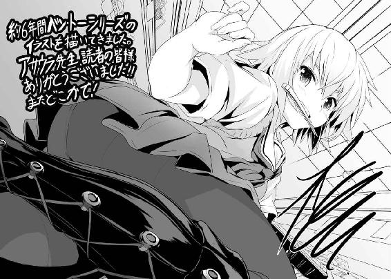

| ベン・トー 12 デザートバイキングプライスレス | |
| アサウラ | |
| 集英社 (2014) | |

ベン・トー 12
デザートバイキングプライスレス
アサウラ
この本は縦書きでレイアウトされています。
また、ご覧になる機種により、表示の差が認められることがあります。
主要登場人物
著莪 あやめ（しゃが・あやめ）
丸富大学付属高校一年。佐藤洋と同じ生年月日の従姉。イタリア人の母を持つハーフ。ゲームはセガ派。二つ名は《湖の麗人》。
槍水 仙（やりずい・せん）
烏田高校二年。ハーフプライサー同好会会長。二つ名は《氷結の魔女》。
槍水 茉莉花（やりずい・まりか）
槍水仙の妹。小学生。お姉ちゃん子で、子犬のように愛らしい少女。
沢桔姉妹（さわぎ・しまい）
丸富大学付属高校二年の双子の姉妹。やや残念な姉の梗と良くできた妹の鏡。それぞれ生徒会長と副会長を担っている。二つ名は《オルトロス》。
白梅 梅（しらうめ・うめ）
烏田高校一年でありながら生徒会会長を担う。白粉をとても大事に想っている。暴力的な一面を見せることも。
広部 蘭（ひろべ・らん）
佐藤洋の憧れの幼馴染み。アイドルを経て、現在は女優として活躍している。
烏頭 みこと（うず・みこと）
19歳の烏田高校卒業生。元ＨＰ部。二つ名は《ウルフズベイン》。
蒲 ようこ（がま・ようこ）
著莪あやめのクラスメイト。著莪に興味がある、少しばかり百合な娘。
花菱 そう（はなびし・そう）
元《ジャック・ザ・リッパー》として名を馳せた中学生の狼。ダニエルという大型犬を飼っている。
白粉 花（おしろい・はな）
烏田高校一年。二つ名は《幽霊》。大人しくて、かわいらしい女の子。ネットで大人気小説『筋肉刑事』を連載していたが、この度めでたく完結した。現在は次のシリーズ構想を練りながら、プライベートな小説を書いているらしい。
石岡 勇気（いしおか・ゆうき）
某地方にて狼として活動している佐藤洋の幼馴染み。《変質者》の二つ名が示すように、スーパー内外で、その存在は脅威として知られている。
イラスト／柴乃櫂人
１章 ＡＮの５時の読書会
皆様、こんにちは。全国的にうららかな日差しが続く今日この頃、いかがお過ごしでしょうか。『ＡＮの５時の読書会』管理人のＡＮです。
気がつけばすでに春。この時期は出会いと別れの季節でもあります。
あなたは昨年どんな人と出会い、どんな人と別れましたか？
一年。口にすれば短いものですが、それを想えばとても長いもの。あんなことがあった、こんなことがあった......きっとあなたはたくさんの人や物語に出会い、そして素敵なサムシングに触れてきたことでしょう。それらを積み重ねていくことで、誰にも似ていない、〝あなた〟という一人の個性的な人間が生まれていく......そんなふうに思います。
だから、人生ってお弁当のようなものなのかな、なんて思ったり。お弁当という枠があって、そこに様々な思い出という料理を詰めていく。仮に同じ料理を詰めたとしても、きっと一人として同じではない、その人だけのオリジナルのお弁当が出来上がる......。
私、ＡＮを一つのお弁当と考えた場合、そのメインディッシュを飾るのは......やはり、汗臭い彼氏と『The novel Four o'clock』にある〝先生〟の作品たちですね！ そもそもこのサイト自体がノベフォーのファンサイトだから当然です。
先日、ついに一年間の連載期間を誇り、スピンオフや短編を含めればその作品数は二〇をも越えた超大作ノベル『筋肉刑事』が見事完結いたしました。最終話のクライマックス、武装テロ組織にたった一人、己の鍛え上げられた筋肉と意識不明のガントウへの熱き想いだけで立ち向かい、日本、そして世界の危機を救ったあの感動のラストは今も思い出す度に涙が出ます。
特に発射寸前の、世界崩壊の引き金となり得る史上最強最悪の核弾頭を搭載した大陸間弾道ミサイル上での獣道を彷彿とさせるサイトウとテロリストの首魁、ウーラノスとのガン堀りな肉体の絡みとか、本当、たまりません。最後の「てめぇの貧弱な体じゃイケねぇんだよおおぉぉぉお!!」と雄叫びを上げながら一撃をかまし、バリタチだったウーラノスがサトウのテクによってウケざるを得ず、絶頂に追いやられるシーンは歴史的遺産と言っても過言ではないでしょう。筋肉刑事がスタートした直後の、喰われノンケな扱いばかりだったサトウとはまるで別人のように調教、違う、成長したその姿は涙なくしては見ていられません！
そしてウーラノスのボディではフィニッシュ出来なかったサトウは世界を救った後、ムラムラをため込んだまま全裸で帰国して意識不明のガントウに、そっとそのギンギンに張り詰めっぱなしの......おっと、ネタバレが過ぎましたね。あぁ、でもあの激しい刺激によって目覚めたガントウが優しくサトウに「......待っていたぞ」と第一声を放ってサトウも放っちゃうシーンについていろいろ語りたい!! うーん、これはまた別のページにて語ってみたいと思います。
前置きが長くなりましたが、今回のこのサイトのテーマはそんな見事に完結した筋肉刑事に何と先日、誰もが予想だにしなかった展開が!! そうです、『筋肉刑事・ザ・バイキング』が公開されたことについてです！
この作品は、これまでの肉体を酷使するような事件ではなく、目覚めたガントウたちとの心と体の交流......言うなれば、筋肉刑事版の日常系作品であり、それと同時にエピローグ的なものと言えるでしょう。とはいえ、先生の遊び心でその名の通りに、ガントウとサイトウが荒々しいバイキングになって北欧の海を性的な意味で荒らし回るというコメディ短編が挟まれていたりもして、単なるアフターストーリーだけというわけでもありません。
またそのバイキングの名が示すとおり、ある意味では食べ放題的なニュアンスが本作には含まれております。あのキャラやこんなキャラがサイトウたちと絡んだりする展開は、まさにお寿司からカレー、ハンバーグ、しゃぶしゃぶ、焼き肉、ラーメン、餃子......果てはケーキやアイスまで何でもござれのバイキングを彷彿とさせるもの。でも......そうですね、作品内で描かれる漢同士の熱くて甘くて濃密な関係性にスポットが当てられていることから......言うなれば、〝デザートバイキング〟と称しても良いかと思いますね。
とはいえ、先生はブログで『サイトウさんと絡みがありそうでなかったキャラたちにのみスポットを当てる形となりました。本当は登場キャラ全員の短編とか、はたまた全キャラ＋新キャラ大量投入で『漢の千本ノック編』とかやりたかったのですが、時間がいくらあっても終わりそうもないので自制しました。アイディア、というかモデルになりそうな人は知ってる男性全部合わせれば千人ぐらいはいけると思うんですけどね......えぇ』ということをおっしゃっていたように、必ずしも全キャラ総出演というわけではないのが少々残念ですが、それでも十分過ぎる密度はあるかと思います。
実際、濃密な本作はバイキング同様全部一遍に食べようとしても胸焼けしかねないレベルです。なので、それぞれが短編的な成り立ち方をしていることもあり、自分好みのメニューをチョイスして食べるという楽しみ方もアリかな、なんて私は思っちゃいますね。何せよぉーく考えてみると全てが繫がっているようで、微妙に独立した短編とも読め、さらには全てがifエンディングにも見える......。
それ故に自分なりの楽しみ方、自分なりのフィニッシュを見つける......取捨選択の自由を楽しむ、というバイキングらしい楽しみが出来るかと思います。でももちろん、最初から全部順々に楽しむのが本来の仕様ですよ？ 胸焼けしそうになりますけどね。あえて一編読み終わる度に、意図的に日数単位で時間をあける、というのが案外いいかもですね。
ちなみに私から豆知識を一つ。このバイキングという言葉、実は完全な和製英語なんです。何でも昔、日本の料理人が北欧でこの形式のお店を見て、それを取り入れる際に北欧のイメージで、しかも日本でも馴染みがあるバイキングという言葉にしたんだそうですよ。
さて、長々と語って参りましたけれど、是非とも先生の新作にして、筋肉刑事のフィナーレ『筋肉刑事・ザ・バイキング』をご覧ください。オススメです。
では、次回の更新からは本作の考察に入っていきたいと思います。皆さんもそれまでには先生の新作を読んでおいてくださいね。それじゃまた、バイバイ♪
２章 十分条件と必要条件
「やはりいたな、佐藤洋！」
木之下桃
※当作は『ベン・トー11 サバの味噌煮弁当【極み】２９０円』にある『３章 群狼』の翌日のお話です。
僕らが体育館に入って整列すると、あっ、という声がかすかに聞こえた。そちらを見やれば......隣の列に並んでいたウっちゃんが、少しばかり気まずそうな顔をして僕を見ていた。
「......佐藤くんさ、大丈夫なの？」
まぁね、と僕は軽く笑って応じる。本当は昨夜の対魔導士戦のダメージが体中に残っていて、歩く度に痛むほどだった。けれど、まぁ、今日の終業式は半ドンだし、それだけ頑張れば明日からは春休みなのだ。何とかなる。......それに......。
僕は、新たに体育館に入ってくる列を見やる。二年生だ。僕の視線に気づいて手を振るのは、そう、昨日の夜、お互いの気持ちを告げ合い、そしてサバの味噌煮弁当【極み】を一緒に食べた紫華蔓先ぱ......いや、違う。うーん、僕の視線に気が付いて、めっちゃにこやかな顔で手を振ってくれるのだけれど......僕は別に紫華先輩を見やっていたわけではなかった。
僕の視線は彼女からすぐに外れ、そのやや後ろにいた――槍水先輩を見つける。
肩口までの髪先を尖らせるように、丁寧にワイルドに整えた彼女の視線もまた、僕を捉える。
離れていてもはっきりわかる黒水晶のように深く澄んだその瞳。僕は思わず昨日の出来事を思い出し、気恥ずかしさから逸らしてしまいそうになるのを堪え、見つめ続けた。
すると先輩もまた少し困ったような顔をして、顎を引き、ちょっとだけ口元に笑みを作ってくれる。白い彼女の肌に朱が差した時、僕もまた体が熱くなるのを感じた。
宿題も出されない春休み前の終業式なんて、入院したまま結局出てこなかった白粉同様――今日だか明日だか退院らしいけど――正直出なくたってよかったのだけれど......何だか、出ないともったいない気がしてきて、どうしようもなかった。その感覚はどうやら正解のようだ。
昨日、僕は最強の男を越えた。ある意味では師であり、ある意味では目指すべき存在であり、そしてまたある意味では最高の壁たり得た《魔導士》こと、金城優。幾人もの仲間との絆と、大勢のライバルたちとの戦いが僕の背を押し、支え、そして折れそうな足に最後の力を与えてくれた。だから、僕一人の勝利というわけではないとは思う。狼たちが積み重なり合い、山となり、たまたま僕が魔導士という巨大な壁を越える頂点の所で順番がやってきただけ、という気がして......まぁ、どこかしら運が良かっただけ、という気が少しする。
けれど、その後、槍水先輩に自分の気持ちを伝え、そして彼女からもまた同じ言葉を返してもらったことだけは――。
お互いに視線を逸らさずにいると、先輩は前のクラスメイトにぶつかってしまう。それによって視線は外れ、先輩は慌ててクラスメイトに謝り......そんな様子を僕は何とも言えないくすぐったい気持ちで......ん？
僕はふと、突きつけられる視線に気が付いた。見やれば木之下桃先輩。相変わらずおでこの目立つ小柄な先輩は、整列する人垣の間から僕に鋭い視線を向けてきていた。ただ、僕はそんな彼女よりも槍水先輩が気になってしまう。彼女はさっきまでとは違い、はっきりと顔を赤くして、前の人に謝り、そして、僕を見やって、また恥ずかしそうな顔をした。
僕は、ちょっとだけ笑う。......やっぱり、ちょっと無理してでも来てよかったな。
何というか、その......今は一日でも、一時間でも、一秒でも......彼女を見ていたかったし、側にいたい、話してみたい。そう思った。これまでも毎日のようにそう思っていたし、そう出来ていたのだけれど、今はもっと、それ以上に近くにいたかった。
だから、家で寝ているなんて出来やしない。一秒一秒が、もったいなくて仕方がない。
これまでの時間は十分過ぎるほどに価値があったと思うのだけれど、今、槍水先輩と共にある時間は、それよりもずっと眩しくて、宝物のようなものに思える。
だから体の痛みも何もかも、今の僕にとっては、些細なことにしか思えなかった。
●
「......フムン。なるほど、やはり桃の推理通りだったか」
そう言って木之下桃は槍水の机の前で立ったまま腕を組み、ふんぞり返った。窓から教室へ差し込む春の陽光を受け、ヘアピンで分けているせいで少々目立つ彼女のおでこが鈍く照る。
槍水は椅子に座ったまま、気まずくなって桃から視線を外し、辺りを見やる。
今学期最後のＨＲも終え、あと二週間ほどで三年生になる彼らは、ついにやってきた春休みに興奮して遊びに行く予定を話す者たちもいれば、学校の説明会やオープンキャンパスのスケジュールを気にするすでに受験生としての心構えを持った者、そのどちらともなくさっさと帰る者、部活に行く者......様々だ。だが、桃、さらには今いち状況を理解しないまま桃に付き従っている紫華蔓の友人二人から詰問されている槍水のような者はさすがにいない。
終業式、桃が何かに勘づき、最後のＨＲが終わるなり、佐藤洋と一体何があったのかと責めに責められ、槍水としてもまだ心の中で整理がついていない昨夜やその前からの出来事について話すことを強要されたのだった。きっと桃はここしばらく魔導士やＨＰ同好会のことで元気をなくしていた槍水を心配していたのに、昨夜を境に元気になっていることについて、訝しく思ったのかもしれない。実際、蔓に至っては登校して顔を合わすなり「何かいいことあった？ 仙ってば、幸せそうな顔してる」と言ってきたぐらいなのだ。
そんな自分の些細な変化に気がついてくれる友人を持てたことを槍水は、嬉しく思うものの......この詰問、いや、もはや尋問に近い今の状況はさすがにどうかと思った。
まだ自分の中でも夢か現か判断がつかないぐらいだというのに、それを人に話すというのは様々な意味で苦労した。何度も途中で言葉が消え失せ、心臓がバクバクと鳴ったりもした。
けれど、桃や蔓に話したことで、昨夜の出来事が本当に起こったことであり、自分は魔導士こと金城優という憧れの先輩よりも、佐藤洋という後輩と気持ちを通わせることが出来たのだと、今一度、はっきりと確信した。
それは、頭を抱えてベッドの上を転がりたくなるような嬉しさや恥ずかしさを胸に湧き起こしてきて、今でも槍水は身悶えしそうな気持ちを嚙みしめている。
ただし、そうであるが故の、ある気持ちの重たさをも含めて......だが。
「と、ともかく、昨日までのことはそれだけだ。も、もういいだろう」
「......ちなみに仙、その後は当然......何もないんだろうね？」
「ん？ その後？ ......あ、あぁ。二人で弁当を食べて......しばらく、二人で部室の窓から空を見ていた。アイツ、体のダメージが大きくて、すぐには帰れそうになかったから」
桃が組んでいた腕を解き、ぽこんっと間の抜けた音を立てて槍水の机に拳を叩きつけた。
「そうじゃない！ 桃が気にしているのは......人気のない部室棟で、仙がその場の勢いで破廉恥極まる行為に及んでいないかということなのだよ!!」
その瞬間、まばらになりつつあったクラスメイトたちが一斉に槍水たちを見やってくる。桃の発言、さらには周りからの視線に槍水はたじろいで、危うく椅子から転げ落ちそうになった。
「仙は恋愛経験とか全然だし、押しに弱い性格。桃たちがいなければ今頃悪い男に騙されて哀しみの涙を流していることも十分にあり得るようなか弱い存在......そんな仙が、あの小僧の口車とその場の勢いに流されて何かされている可能性は十分にある！」
腰に手をやって、ふんぞり返っている蔓が桃の発言を継ぐ。
「桃の言う通り！ いい、仙？ 高校生はほっぺにちゅーまでしかダメなんだよ！」
その言葉に、桃は〝何だコイツ......〟みたいな顔で蔓を横目で見やるが、そこを突っ込んでいたらキリがないと思ったようで、その鋭い目を槍水に向け直した。
「で、どうなんだね、仙......。正直、あの小僧とその場の勢いで何かしらの行為に及んではいないんだろうね？」
特に何も言ってこないが、クラスメイトたちがそれとなく視線を向け、耳を澄ませているこの状況。槍水は大声を出しそうなぐらいに慌てるも、ヘタにそうしてしまうとおかしな推察を生みかねないと思い、つとめて冷静に頰杖をつき、周りに聞こえるような声量で、答える。
「別に何もない。......ただ、佐藤が動けそうになかったから肩を貸してやって、それで寮の前まで送ってやっただけだ」
「寮の前か。......フムン、そうか、お持ち帰りはかろうじて免れたというわけだな」
「佐藤は別にそういう奴じゃないぞ。信用出来る相手だ」
ふぅやれやれ、というように桃は両方の手の平を上に向け、首を振った。
「いいかな、仙君。男は皆、狼なのだよ？ 桃の彼氏のようなイケメン紳士は極めてレアキャラなんだ。隙あらば己の汚れた欲望を発散させんと虎視眈々と狙っているのがデフォなのさ」
桃は一般論を語っているのだろうが、何だか佐藤洋がバカにされているようで、槍水には何だか不満だ。自然と唇が少し尖る。
いかがいたしますか、桃審問官殿。蔓が芝居がかった口調で言うと桃は顎に手を這わせた。
「昨夜は何ともなかったとしても、あの小僧が調子こいて手を出してくる可能性は否定出来ぬ。......仙のためにも、桃たちが一計を案じる必要があると思うのだが、いかがかな、蔓副審問官」
桃と蔓が視線を交わし合い、うむ、と二人して頷く。
何だか面倒なことになってきたな、と槍水はため息を漏らしながら思った。
〇
うーん、アレだな、やっぱり僕もこういう経験がほとんどないから、どうしていいものなのか、迷うところだ。
烏田高校部室棟五階のＨＰ同好会の部室、その大きな窓から僕は気持ち良く晴れ渡った空を見上げていた。......一人で。そう、一人なのだ。白粉は当然としても、槍水先輩も来ていない。
いや、確かに半ドンだし、昼飯とかのことを考えると、わざわざ部室には来ないのかもしれないけれど......昨日の今日だしさ、全校集会の時の視線での遣り取りもあったわけで、何となく部室に来そうな気がするじゃん？ だから、ＨＲが終わるなり痛む体を引きずるようにして五階にまでやってきたわけなのだけれど、待てど暮らせど先輩はやってこない。
今日部室行きます？ と、一言ＨＲ直後にメールでもしておけばよかったなぁ。
すでに一時間以上待って、一時を過ぎてしまった今になって訊くのも何かおかしいし......何より、今、彼女とどんなふうに連絡したらいいのかも、わからない。
もちろん悪い意味じゃない。......ちょっと、照れるというか、恥ずかしいというか......。
著莪と喧嘩して、仲直りして、一緒に寝て......その起きた直後の朝が一番近い気分だろうか。
お互いにちょっと気まずくて......でもそんなに悪い気はしていなくて......でもどういう口調で、どういう気分で、どんな言葉をかけたらいいのかわからない。お互いに。それでしばらくは二人してもにょもにょしながら過ごすのだけれど気がつくといつも通りになっていた。
けれど、今回の場合は、いつも通りになることはないのだろう。
もう、様々なものが変わった......そう、力ずくで、変えたのだから。
空に飛行機が飛んでいるのが見えた。確か魔導士は今日、国を発つって言っていたっけ。......もう一度ぐらい、争奪戦や狼とか関係なく、ゆっくり話してみたかった気がするな。
僕がそんなことをぼんやり考えていた――まさに、その時だった。
ノックの音が部室に響いた。僕は驚き、反射的に振り返って、扉に向かい、思わず身構える。
ＨＰ部、そして同行会のメンバーはノックをしない。即ち、訪れるとすれば部外者だ。白梅の顔が一瞬思い浮かんだものの、彼女は久々に白粉の顔を見てくるとして、ＨＲ後にすぐさま帰っていったはずだし......誰だ？
僕がドアに恐る恐る近づき、そのノブに手を伸ばす。
だが、それに触れるより先に、扉の方が勝手に、かつ、乱暴に開いた。
「やはりいたな、佐藤洋！」
現れたのはふんぞり返っている木之下先輩と紫華先輩、その後ろに困り顔の槍水先輩だ。
そこに座れ！ と、僕はわけもわからないままに出入り口近くの椅子に座らされる。そしていつぞやのように、彼女らは、僕とは円卓を挟んだ窓際の席に三人並んで腰を落ち着けたので、また面接のような状態に......。何だ、コレ。
「いいか、佐藤洋。今日は仙から話があるんだ。......ホレ、仙、さっきのを言ってやれ！」
「......いや、その、桃、さすがに......」
木之下先輩と紫華先輩に挟まれた槍水先輩は左右を気にしながらも、時折チラリチラリと僕を見てくる。
僕はといえば、何だか判決を言い渡される被告人の気分になっていた。
紫華先輩が、いい仙、と声を出した。
「さっき教室で聞いた話だと、洋君が仙を好き、仙も洋君が好きだって言い合っただけなんだよね？ でも、それでちょっと困ってもいるんだよね？」
「確かにそう言ったな、仙。桃たちはしっかりとそう聞いたぞ。......つまり、好きだと言い合っただけだ。それをはっきりさせて、この小僧におかしな考えを抱かせないためにするだけだ」
......おっと、何だか、話がとんでもない速度できな臭くなってきたぞ......。
木之下先輩と紫華先輩の二人からの圧力を受け、槍水先輩は渋々というように、視線を円卓の上で彷徨わせながら訥々と言葉を紡いでいく。
「その、何だ。......昨夜のことがあっただろう、佐藤。だが、その......桃たちに言わせると......それで、勘違いがあるといけないからと......そういうわけで......」
......あっ。ひょっとしてこれは......あ、あれぇ？ これって、この流れって......。
「はっきりしろ、仙！ 言うんだ、言ってやれ！ この小僧に勘違いするなと、おまえなんかと付き合ってはいないってな！」
え？ と、思わず僕が声を出したところ、すかさず紫華先輩が介入する。
「うん、洋君は悪くないと思うんだ。お互いに好きだっていうのは良いことだし、素敵だよ？ けれど、だからってすぐに付き合っているって思っちゃうのはちょっと早とちりというか、早合点じゃないかなって、桃は言っているんだよ」
「......そ、それって、どういう......？」
「うん、だからね。好き＝付き合うってわけじゃないってこと。だって、そうだったら、わたしも洋君好きだけど、すぐに付き合うっていうふうにはならないでしょ？」
あれ？ そう......なの？ それはそれでちょっと嬉しいような......あ、でもこの人、ガチ電波さんだったような......。
「そうだ、好きだからって付き合うとは限らない。それを佐藤洋、おまえに勘違いするなって桃たちは念を押しに来たんだ。ほら、仙、言うんだ！」
「......だからその......佐藤、おまえのことは......す、好きだが......べ、別に付き合っているわけじゃないんだぞ」
あ、あの～槍水先輩？ と、僕は声を出しかけるも、それを木之下先輩が撥ね除ける。
「ヨシッ！ よく言った、仙!! まったく桃たちが気を抜くとすぐに悪い虫がたかるんだから。......さて、蔓、仙、せっかく学校も終わったんだ、遊びに行こうじゃないか」
桃先輩はすぐさま立ち上がると、気まずそうにしている槍水先輩の腕を摑み、部室から連れていこうとする。
僕は思わず立ち上がって、三人――というか、槍水先輩を止めようと手を伸ばすのだけれど......彼女が去り際に振り向き、悲しげな視線でもって僕の動きを止めた。
「......すまない、佐藤。おまえのことは嫌いじゃないんだ。ただ......ただ......な。すまない」
その目、その言葉......僕をその場で俯かせるには十分過ぎるほどの破壊力だった。
３章 祝福されし妖精と名も無き狼たち
「......二年、か」
茶髪
※当作は『ベン・トー11 サバの味噌煮弁当【極み】２９０円』より前のお話です。
「それじゃまたね。チャオ」
外に出るなり、茶色の長い髪と大きな胸を揺らして彼女は手をひらひらと振った。
茶髪の視線の先には先ほどぶちのめした相手、坊主頭の男と顎髭の男。彼らは「あぁ」「またな......クソ」と素直な、隠そうともしない悔しさを込めた声と視線で応じてくれる。
彼らのその声、姿が、こそばゆくなるほどに、彼女には嬉しかった。長く共に戦い、共に夕餉を囲み、共に悔し涙も飲んだ仲だからこその、嬉しさだった。
今宵のスーパーでの争奪戦......茶髪は勝者、彼らは敗者。
彼らの悔しさは勝者たる茶髪にとって甘美だが、それ以上に、その奥にひっそりと隠されている彼らからの賞賛の視線を彼女はしっかりと感じ取っている。それが何よりもたまらない。
半額弁当争奪戦は、勝利の一味が加わることで至高となる。
誰もが口にし、わかったつもりでいたのだけれど......最近になって、ひょっとしたらようやく今自分はその真意に辿り着きつつあるのではないか......そう茶髪は思うようになっていた。
坊主たちは争奪戦での体力の消耗が激しいのか、見ていて不安になる足取りで夜の街へと消えていった。恐らくこれからどこかで時間を潰してからジジ様の店に向かうのだろう。
そんな彼らを見つめ続けていると、スーパーからぞろぞろと他の敗北者たちが姿を現した。
そして彼らもまた坊主たちの後を追うように、夜の闇に消えていくのだが......その際に茶髪に一言二言声をかける者もいるが、大半は彼女が手にしているレジ袋を見やり、そして気持ちを切り替えるようにジジ様の店の方角へと視線を向け直すのだった。
――敗北こそ勝利への近道である。
誰の言葉だったか、茶髪には思い出せなかったが、彼らを見ているとその言葉の正しさを感じられる。今、レジ袋を見やった狼たちはジジ様の店ではこの悔しさと、時間が経過したことで強力になった空腹を有し、今一度激しくぶつかり合うことだろう。
勝者なのに、それを少しばかり羨ましいと感じてしまう自分はどこかおかしいのかもしれない。まだ彼らと戦っていたいと、そう思ってしまうのは何故だろう。
「もうすぐ......春だからかな」
茶髪は一人呟き、手から下がるレジ袋を揺らして踵を返した。スーパーに背を向け、学生向けマンションへと歩を進める。
一月の終わり。立春はもうすぐとはいえ、まだまだ冬の気配。けれど、心の中ではもう春を近くに感じている。別れと出会いの季節......そんな春を、すぐそこに。
帰宅した茶髪は部屋に明かりを灯す。元からそれほど物をため込む方ではなかったが、年明けからのこの部屋は寂しさを感じるほどだ。正月休みの間に両親が来て、夏物、秋物をはじめとしてしばらく使わないであろう物などは一通り実家に持っていってしまっていた。
必要なものを必要なだけ、今はそんな部屋なのだ。
「さてと、ご飯ご飯。勝利の一味の入った夕餉の味は......っと」
茶髪は手を洗い、上着を脱ぐと、すぐさま買ってきた弁当をレジ袋から取り出した。
アブラ神の力作、『しっかり味の染みたカレイの煮付け弁当』である。
雑穀米のご飯、漬け物、野菜の煮物、きんぴらゴボウ、そしてメインのカレイの煮付けなのだが、この主菜が見事だ。カレイの大きめの切り身にバッテンの隠し包丁が入ったそれ。見るだけで、食べた際にはほっくりと、しかしながら中から煮汁の旨味が染み出してくるのが想像出来る、そんな色合いだ。
だが、それ以上に見る者の心を引くのは、カレイの煮汁が冷えて〝煮凝り〟のように固まっていることだ。カレイの身の下にプルプルとしたものが敷き詰められているのは当然、カレイの身の上にもゼラチン状のそれがうっすらとベールを張り、てらてらと照っている。
蓋がされているとはいえ、時間が経つとどうしてもわずかに乾燥してしまうカレイの身を守る狙いで、意図的に冷めた汁を最後にかけたのだろうか。そんなことをこちらに想像させるぐらい見事にその煮汁はカレイの身を包み、かつ、その皮や切り込みから覗く身の様子がはっきり見えるほどに、色は薄く、慎ましい。
あの店は常軌を逸したようなとんでもない弁当で有名だが、その反動のように今回のような正統派の弁当をも忘れた頃に出してくる。それが日々の争奪戦に心憎い刺激となるのだ。
アブラ神の店に来たのだから、ボリュームたっぷりな、誰もが目を疑うような弁当を......とも思うが、しかし今回のような普通の弁当がまた何とも言えず美味なのも常連には常識である。
そこで、狼たちは非常に悩ましい選択を迫られるのだ。どちらを選んでも至福なのは間違いない。しかし、より良いのはどちらなのか。そんな幸せな迷い。そしてどちらを選択すればライバルが少ないか、そんな狼としての的確な状況判断も加味されると、何とも難しい。
茶髪はそういう時、いつの頃からか、一切迷いを捨て、どちらを己の腹の虫が求めているのか......ただ、それだけで決めるようにしていた。
二つ名を手に入れ、関西の大学に推薦入学が決まったがために心に余裕が出来たからなのかもしれないが、結果的にそれによって以前よりもずっと勝率は上がっている。
自分に素直に。それこそが、あの場で己を強くするものなのかもしれない。
この地を訪れてもうすぐ三年、狼としての活動は二年。長く戦ってきたつもりではあったが、まだまだ知らないこと、学ぶべきことが多すぎる。
だからこそ、半額弁当争奪戦は魅力的なのだ。
茶髪は弁当を電子レンジに入れ、温めを開始。弁当が、ダンスする。そして彼女は温め終わった弁当の隅っこを持とうとするのだが、容器の蓋から垂れる熱湯の雫が彼女の指を焼く。
「あっちっ」
彼女は思わずその指を口に咥えた。
「ったくもぅ」
茶髪は再度、角を持ち、熱い雫に気をつけながらそのずっしりと重量感のある弁当を大事に持ち上げ、テーブルへと持っていった。
部屋の中に、和風の香りがほのかに漂いだし、茶髪のテンションを一気に跳ね上げる。
彼女は急いで冷蔵庫から烏龍茶を取り出し、コップに注ぐ。
そして瞼を閉じ、箸を持ち、両手を合わせ......。
「いただきます！」
その言葉を唱えた瞬間、瞼の裏に今宵の戦いがフラッシュバック。
痛み、激しさ、そして店外での彼らの視線。......それら全てが、勝利の一味に姿を変える。
これより神からの恵みに箸を付ける宣言をすると共に、食材となった全ての生命に感謝を告げ、獲ることの叶わなかった者たちへ礼を述べ、いよいよ箸を割れば......腹の虫が狂喜乱舞する時間が厳かに始まるのだった。
さぁ、食べよう。今宵の勝利を口にしよう。
茶髪がその透明な封印――蓋を外せば、辺りには得も言われぬ温かで、素朴な匂いが爆発的に広がった。カレイの煮付けだ。醬油とみりんといった、シンプルな煮汁のそれはどうしてこう懐かしさを伴うのか。たとえ平成という時代に生まれた身であったとしても、日本人の遺伝子というものは和の料理に郷愁を覚えるものなのかもしれない。
「あぁ......これは、予想以上じゃない......」
湯気を立てる弁当の上で箸先が迷ってしまう。
マナー違反とはいえ、仕方のないことだろう。煮凝りとなっていた煮汁が電子レンジの魔法により液体へと姿を戻したカレイの煮付け、雑穀米、大根の漬け物、ニンジンやタケノコ、レンコンといったゴロっとした野菜の煮物、そしてきんぴらゴボウ......。これらが弁当という舞台の上で織りなす温かく素朴なドラマは、そう簡単に流れを読ませはしない。
茶髪の箸を迷わせるのは、雑穀米の存在だろう。それは白米の他に玄米、ひえ、きび、粟、鳩麦、黒米といった複数の穀物を混ぜたもの。それ自体に慎ましやかながら豊かな風味があるのを想像させる。普通の白米であれば、まずは何を差し置いてもカレイに箸を向け、その味わいを堪能した次の瞬間に白米を食べる。だが、雑穀米となるとそれでは雑穀米本来の味を楽しめずに終わってしまうのではないか、という不安が過る。
勝ち取った恵み、その一片たりとも無駄にしたくはない。そこには今宵の争奪戦の苦労や、勝利や、そして競い合ったライバルたちの全てがあるのだから。
しかし、いつまでも迷ってはいられない。
箸はついに向かうべき先を見出した。野菜の煮物、そのタケノコだ。まずは安牌を切った。
いきなり雑穀米に行くには口の中がまだ準備出来ていないし、きんぴらでは味が強すぎる。漬け物からの雑穀米のコンボも考えたが、初っぱなからでは、多くはない漬け物の消費がいささか惜しいと感じたのだ。
タケノコの柔らかく、しかしあの独特な食感を楽しむ。味付けは出汁の香りを漂わせた薄味。その分タケノコの味わいが濃く浮き出ている。
それを咀嚼するに口の中の湿り気が落ち着き、そして腹の虫は極楽への階段を昇りだした。
口の中のものを腹に落とした時には覚悟が決まっていた。
箸は雑穀米へ。そのエリアの角を攻めるようにして、掬い上げ口の中へ。
白米だけでは味わえぬ多種多様な歯触りと舌触り、鼻に柔らかに風味が抜ける。それは円舞曲。混ぜられ、共に炊かれたことで突出した味わいはなく、全てが見事に融和している。
これがこの雑穀米の味わいか。瞼を閉じて咀嚼し、それをしっかりと楽しめば......いよいよ夕餉という名のドラマは、核心たるカレイの煮付けに至るのだった。
カレイは小振りなものではなく、大きなそれをカットしたもの。頭の部分でもなければ尻尾の部分でもない、カレイの真ん中の部分が載った大きな身。×の切り込みが入りながらも、身はもちろん、その周囲の皮すら崩れていない辺りにアブラ神の見事な調理の腕前が見て取れる。
大抵切り込みを入れると、カレイの身は柔らかであるが故にそこからボロボロと崩れてしまいがちだ。そのため切れ目を交差させずに、平行に入れる場合も多いのだが......しかし、×の切り込みをあえて選択するところにアブラ神の仕事に対する自信が見て取れる。
煮込み魚における×の切り込みは骨付き肉の骨同様、どこかしらロマンが漂う。それは食べる者に、より一層の満足感を約束するものだから、もしかしたら遊び心とこだわりを併せ持つアブラ神としては何としても外せないポイントだったのかもしれない。
そんな想像と共に、箸先はそのカレイの身に達する。卵はない。それが格別に好きというのでないのなら、持たぬものの方が良しとされる。全身の栄養が卵に集中してしまうため、どうしても身の味わいが落ちてしまうのだ。
特別卵への執着があるわけでもない茶髪はそれを思い、嬉しく感じた。
箸をカレイの身へ。皮を貫き、柔らかな身の中へ箸が埋没していく。なかなかの肉厚。その先の規則正しく並んでいる骨に触れ、そこから箸を骨と平行にずらすようにして身を掬う。
薄い皮と共に、汁の染みた身と、ほんわりとした柔らかな白い身が箸先で一つとなっていた。
それを、容器の底で艶やかな黒の泉となっている煮汁に一度触れさせ、そして......口へ。
舌に触れるより先に口内を訪れる熱の気配とカレイの匂い、そして出汁の風味。大団円の予感。舌に触れた時、それは確信そして事実へと鮮やかに、円滑に、当然のように昇華した。
歯を必要ともしない、ほろほろとたやすく崩れてしまう柔らかな身。
皮の裏にあるわずかなゼラチン質のぷるるとした震え。
カレイの......旨味。
醬油とみりんを主として織りなされる協奏曲たる出汁が口の中の踊り手たちを盛り上げる。
汁は汁の、身は身の、それぞれの個性はしっかりと出しておきながら互いを邪魔せず、渾然一体としているという矛盾。
出汁にはゼラチン質と共にカレイの旨味が溶け出し、身もまた彼らを受け入れている。
高タンパク、低脂質のカレイの身だから為せるこの、出汁との一体感。
カレイの身は出汁が染みこみ難いとされていて、長く煮れば身は硬くなり、何より煮崩れを併発する。それなのに、これは......もはや見事としか言いようがない。
驚嘆と感謝と至福を嚙みしめ、箸は雑穀米へ急いだ。
頰張ればまた至福。さらなる喜び。勝利の一味が入った、最高の夕餉。
「......いいじゃない、これ。完全に月桂冠クラス」
他の店なら完全に月桂冠クラスの味わいだ。だが、そうしなかったのはもう一個同じ弁当が残っていたからなのか。それとも他に何か理由があるのだろうか。
神の考えることはわからない。多くの神話が示すように、神というのは気まぐれなのだ。
そんなことを考えていると、ふと、口の中に生姜の香りが漂った。
臭み消しとして煮汁に密かに混ぜられていたのだろう。しかし、その姿が見あたらなかったところを見ると、生姜の汁だけを使ったのかもしれない。
喉を通ってから気がつくなんて、と茶髪は少し反省した。己の分析能力はまだまだ未熟だ。今宵は現れなかった魔導士クラスの二つ名持ちなら、きっと香りの時点で気がついたはずだ。
自分は、まだまだだ。そう思うことはどこか喜びにも似ていた。
自分はまだ成長途中。これからもっと強くなれる。そんな実感が、自省の中にはあったのだ。
茶髪はそんな気持ちと共に今宵の夕餉を嚙みしめ、味わい、楽しみ続けた。
「ごちそぉさまぁ～」
全てを胃に収めると、満足したことを示すように深い息を吐いて、テーブル前でそのまま仰向けに倒れる。お腹いっぱい、幸せいっぱい。
天井に取り付けられた丸いシーリングライト。あれがお月様であれば、最高なのだけれど。
茶髪はそんな贅沢な悩みを思う。月と半額弁当はよく似合う。とはいえ、今の季節の気温では、外で食べるのは少々厳しかった。
「腹ごなしに散歩でもしてこようかな」
今宵は晴れ。月見には悪くない。そう思うなり、茶髪は食べ終わった弁当を片付け、先ほど脱いだＰコートを羽織り直すと、ショートブーツを履いて部屋を後にした。
冷たい空気。けれど、食べた夕餉のおかげで寒いとは感じなかった。弁当が、勝利が、お腹の中で分解、吸収され、自分の糧となりつつあるのをそれでしっかりと感じられた。
コツコツとアスファルトをリズミカルにノックするような足音。
吐く息白く、覆う空高く、見上げる月煌々と。
ポケットに入れていた両手を出し、揺らして歩く。
三年という月日の間に馴染んだ街。自分の街。
幾度となく歩いたこの道。もう幾ばくもなく、別れが来る。
烏田高校の卒業式は三月の前半。それを終えれば、もう......。
「あと一カ月とちょっとあるってのに。何黄昏れてるんだか」
きっと、推薦が決まるのが早かったせいで、他の人よりもずっと早く〝次の生活〟が見えてしまったからなのかもしれない。
実際、センター試験の結果待ちをしている同級生はいまだ高校生という雰囲気を変えていないし、入試を控えて最後の追い込みをかけている同級生は言わずもがな。
早いというのは悪いことではない。けれど、早すぎるというのは良いことばかりでもない。
〝彼ら〟より先に二つ名を手に入れたのは嬉しかったし、それが自信にもなった。けれど、出来れば一緒か、少し後ぐらいに彼らにも二つ名が付けばよかったのに。彼女は、そう思う。
かつては三羽ガラスと呼ばれていた負け戦ばかりの自分たち。今では力をつけ、ある程度の相手なら十分にやり合える。かつて猛威を振るった《オルトロス》相手でさえ、どうにかなるかもしれない。そんな自信すらある。
実際、あの双子が敗北した土用の丑の日の夜......彼女らは月桂冠の『国産うなぎ弁当』を手にし、胃に収めているのだから。
歩き続けていると、目に入った自動販売機に自然と引き寄せられた。
デザート代わりに、茶髪は濃厚の文字が貼り付けられた温かいココアを買った。出てきた缶は熱すぎて、少し間を置かないと火傷しそうだった。
彼女はそれを懐に入れて、また少し歩こうと思ったのだが、その足は不意に止まる。
いただきます！ そんな、遠くから聞こえてきた、耳慣れた二人の男の声。
携帯を見やれば......なるほど、ジジ様の半値印証時刻が終わった時間帯だ。
声が聞こえた方角を頼りに進めば、そこには公園。そしてそこのベンチに座る二人の男の姿。
顎髭と、坊主だった。
「この匂い......どん兵衛かしら？」
蕎麦の方のな。坊主が特に驚いた様子もなく、何やらレジ袋を漁りながら言った。顎髭もまた二人の間に置かれているレジ袋を漁っている。
何をしているのかと思って茶髪が見ていると、二人は卵を取り出した。それも一個入りのパックなのを見ると......温泉卵だろう。
二人は器用に膝の上に置いたどん兵衛にそれぞれ温泉卵を投入。月見蕎麦ならぬ、天ぷら＋温玉蕎麦といったところか。
「おまえは、どうしたんだ、《シーリーコート》」
「食後の腹ごなしに散歩をね」
茶髪は二人の間にあったレジ袋を取り、彼らの卵の殻をまとめて入れると......代わりに、空いたスペースに己の尻をねじ込んだ。
二人共、膝にどん兵衛を置いたままでいたので、身動ぐことも出来ず、目を見開いて硬直しているので、茶髪は思わず笑ってしまう。
「あっぶねぇな、おい」
顎髭が両手でどん兵衛を抱えこんで言うと、坊主もまた己の夕餉を抱きしめるように胸に持ってきて、安堵の息を吐いた。
「勘弁しろよ......」
「ごめんごめん、他に座る場所なかったから」
三人掛けのベンチだ。その左右の端に二人が座っていたので、真ん中しかなかったのは噓ではない。とはいえ......二人の体に挟まれたいとほのかに思ったのも、噓ではない。
身に感じていた寂しさを、彼らの体温で誤魔化したかったのだ。
二人の男たちは密着する茶髪に困惑しつつも、蕎麦をズゾゾゾといい音で啜りだす。
「ジジ様の店でも、ダメだったわけね」
「まぁ、《氷結の魔女》とワン公が現れちまってな。いきなり激戦さ」
なるほど、と坊主の言葉に茶髪は笑った。
「気がつけば、ワンコも強くなったわね」
「二つ名もオレらより早かったしな。ＨＰ部の伝統だろ、とりあえず強いってのは」
顎髭が言い、坊主が頷いた。
「昔は違ったらしいってのは聞いているが......時代は変わるな」
その噂は茶髪も聞いたことがあった。彼女らが争奪戦に参加しだした二年前の段階では、ＨＰ部は完全に猛者の集団であり、全国にその名を轟かせていた。また、それよりさらに時代を遡れば、伝説的な狼――いや、当時の言葉で言い表すならば、伝説的な騎士である《アーサー》の名から、古のＨＰ部のメンバーを《円卓の騎士団》と呼ぶ者すらいたのだ。
だが、そのＨＰ部は......弱者の集まりでしかなかったのだ、と。
どこまで本当かはわからない。《毛玉》のような者は当時もいただろうが、その頃からの情報を持ち続け、今なお現役としてスーパーを駆けている情報屋や狼はさすがに現存しない。現役の狼から次の世代の狼たちへ、半値印証時刻の前後においてのみ語られた伝説なのだ。
その真相は誰も知らない。噂が広がり、薄くなって、今や実体を失っている。
もしかしたらＨＰ部......今なら、ＨＰ同好会に所属する彼女らなら明確な真相を知っているのかもしれないが......少なくとも茶髪、顎髭、坊主とも気心が知れているワンコ、即ち佐藤洋はその話を知っている気配はなさそうだった。
茶髪は閉じていたＰコートの前を開け、窮屈になっていた胸元を楽にすると同時に懐に入れていたココアを取り出す。
満月に少々欠ける月を見上げて、それを口にし、白い息を空に吐いた。
「......ん？」
何だか視線を感じて、月から横の坊主に目をやった。
何？ と思ったものの、すぐにその理由がわかった。密着した状態で蕎麦を手繰るとなると......肘が、茶髪の胸にちょっと触れるのだ。それを坊主は気にしているらしい。顎髭もまた、蕎麦を持った左腕の肘が時折触れるのを、少し気にしているのか、体をやや捻って何とかぶつからないようにして蕎麦を食べている。
お互い冬服なのだから、ちょっと触れるぐらい別にどうこういうものでもないのだが......。二年一緒にやってきておきながら、こういうところはまだ出会った時のままだ。
「......二年、か」
二年一緒にやってきて、お互いの連絡先はもちろん、名前も知らない。
いや、彼らには茶髪の名は知れている。
シーリーコート、祝福されし妖精......それが彼女の今の名なのだ。
茶髪は二人の気遣いに気づいていないふりをして、月を見上げつつ、ココアを飲み続けた。
二人の蕎麦を啜る音が消え、最後の一滴まで汁を堪能すると......二人は同時に「ふぅ～......ごちそうさま」と満足げな息を吐いた。
「今夜みたいにアンタたちと一緒に戦って、そして、こうしてお月様を見上げながら食事をするのも......残り少ないわね」
「つっても、おまえはココアだったけどな」
顎髭の言葉に、確かに、と坊主が笑う。
「......それにまだ、卒業までは一カ月以上あるんだ。ってことは、三〇回は戦えるさ」
三〇回、その数が多いのか少ないのか、茶髪にはわからなかった。
「関西の方の大学だったか。......向こうじゃ、スーパーには行かないのか？」
坊主が容器の中に温泉卵の黄身の塊を見つけたらしく、箸でつまんで口に入れた。
「......行くと思う。向こうは向こうで、きっと強い狼もいるだろうしね」
顎髭は、汁も全て飲みきった坊主の分のどん兵衛の空容器を受け取ると、まとめてレジ袋に収め、そして茶髪と同じように空を......月を見上げる。
「......なら、変わらねぇよ」
そして最後に坊主もまた、空を見上げた。
「今もこれからも、俺らはずっとスーパーで戦うわけだ。そんで、同じ月の下で、同じように半額弁当を喰ってるんだ。どこでだって、それはきっと、変わらない」
「そういう考え方もある......か。なるほどね」
三人は今までを思い出すように、沈黙を纏った。
二年、切磋琢磨し、そして共に飯を喰らってきたその時間を振り返るように。
「関西の方から噂が流れてくんのを、楽しみにしてるぜ」
坊主の言葉に、茶髪の口元には笑みが浮かんだ。
「その時は、アンタらの噂も、関西にまで届いていればいいわね」
「......やってみせるさ」
冗談とも本気とも思えぬ口調で顎髭が言った。
そしてきっとそれは実現するのだろうと、茶髪は疑うことなく信じることが出来た。
そう確信できるほどに、彼女は彼らと共に戦ってきたのだ。
負けて負けて、彼らとの絆を深めた。
名も無き狼たちとの、その絆。
心を満たす幸福な思い出。敗北すら、今からすると甘く感じる。
良い戦いをしてきた、そう、茶髪は思った。
どの敗北も、どの勝利も、人に胸を張って語れる自慢の戦いばかりだ。
月を見上げながら、二人の戦友の体温を感じながら......茶髪はそう胸の内で呟くのだった。
４章 ダブルスゲーム
「いえ、今来たところですわ、佐藤さん」
沢桔梗
※当作は『ベン・トー11 サバの味噌煮弁当【極み】２９０円』にある『エピローグ』の前の時間のお話です。
帰るに帰れない理由があるのだ。言うに言えない理由もあるのだ。
沢桔梗はスマホを自分のベッドに放り投げると共に、自らの体もそこに放った。
一瞬沈んで、跳ね上がる。そして、天井をボーッと眺め......ため息を一つ。
そうして何もせず、何も考えずにいると、体の芯が疼くのを感じられる。何かしているとそれほどには感じられないが、こうしていると嫌でもはっきりとわかった。
特に寝る前などは、酷くなる。身悶えする。
手が自然と投げ放ったスマホを探し、見つけ、握り、目の前に持ってくる。表示にあったのは通話履歴。そこにあるのは今し方くどくどと文句を言ってきた母の名。その下には妹や、クラスメイト、生徒会関係、教師......それらに交じって、彼の名がある。
――佐藤洋。
空ろな視界の中、梗の指は静かにその名に触れる。彼の名を示していた色が反転。この指を放せば、すぐさま彼へコールになる。そこで、ふと、理性が帰ってくる。指が、離れない。
梗は瞼を閉じて、指を画面の上で滑らせ、コールをキャンセル。
「......まだ、あの時の残滓がこの胸に。喉に引っかかった魚の小骨のように、いやらしいものですわね」
今し方、名に触れた相手はそれを取り払ってくれる人だ。けれど、そうだとしても、気になってしまう。また、そうなってしまうのではないか、という恐怖がある。
絶対にあんな結末にだけはしたくない相手だからこそ、余計にそれを想う。
「姉さん、起きてます？ お昼なんですが......」
軽いノックの音と共に、妹が部屋の扉を開け、顔と言葉を差し込んでくる。
「通話中でしたか？」
「いえ、今し方終わったところですわ。......もう春休みなんだし、帰ってきたら、と」
あぁ、と鏡はやれやれという様子で小さく苦笑した。
昨日は鏡、今日は自分、明日はどちらにかけてくるのだろう。梗もまた苦笑する。
自分たちの顔が見たいとする親の気持ちは嬉しい......というか、恐らくは親ではなく、実家で暮らしている父方の祖父や祖母が母にそう言わせているのだろう。
もしかしたら母方の祖父母も自分たちの帰省のタイミングに合わせて遊びに来る算段を立てているのかもしれない。それでせっつかれて母が......。自分によく似ているという母方の祖父母ならそれぐらいやっていそうな気がした。
そんなふうに愛してもらえることは幸せなことだというのはわかるし、正月以来顔を見せていないので、そろそろ会いに行った方がいい、というのもわかる。
何より自分もまた会いたいとする気持ちは強い。けれど......。
「頃合いを見て、帰りましょうか」
そうですわね、と鏡の提案を梗はそれとなく流す。いや、鏡の提案からして流した言葉だ。
普段の鏡ならば、もう少し提案にも具体性を持たせる。この場合であれば、交通が空くであろう来週の平日のどこかで、とか、もっと具体的に●日から●日の間戻りましょうとか、そう口にするはずである。そうしないということは、鏡もまた、梗と同じ気持ちでいるのだ。
姉妹の双方が、お互いの気持ちをわかっている。だから、二人して恥ずかしくなって梗はベッドの上を転がって掛け布団に丸まり、鏡はそれとなく姉の部屋から静かに離れていった。
「......外見を除いて、あまり似ていないわたくしたちだと思っていましたけれど......案外に、こんなところが似ているのですわね」
性に対しては少しばかり奔放だとする自負はあるが、鏡も自分も、恋愛に関しては案外に奥手だ。梗は最近、それを理解した。
梗は布団にくるまったまま、ここしばらくのことを想う。
たった一カ月で自分や鏡を取り巻く環境が大きく変わった......いや、大きく、変えたのだ。
始まりはバレンタインデーの夜、鏡が二階堂に告白したこと。そして次は、最強の狼たる魔導士こと金城優、その国内での最後の夜......梗が自らの恋心を押し込め、彼――佐藤洋と魔女との二人の時間を作るために、争奪戦後、妹に二階堂が返事をするらしいと口から出任せの噓をついて食事を共にしなかったこと。結果、それが二階堂の背をいささか強引に押す形となり、晴れて妹たちは正式な恋仲となったのだ。予想通り、二階堂はホワイトデーにプレゼントと共に返事をしようと準備していたらしい。......が、結果としてうまくいったので、そこは我ながらＧＪだったと梗は今でも自負している。鏡からするとその流れはやや不満であるらしく、いまだに愚痴を言われるものの......些細な問題だろう。
......そして、後日話で聞いた限りでは鏡たち同様......あの夜、佐藤洋と魔女こと槍水仙はお互いの気持ちを告げ合ったそうだ。それを聞いた時、自分の分まで二人には恋い焦がれ合ってくれればいい、寂しくもそう想ったものだ。
もっと真っ黒で、ドロドロとした嫌な気持ちを味わうのを覚悟していた梗だったが、切なさを嚙みしめるだけで済んだのは意外なまでの驚きだった。
それが何故なのかを梗はしばらく考えたが、結局、最後に行き着いたのは本当に自分が佐藤洋という人間を好いていたからだ、ということだ。自分の想いが叶わなくとも......彼が本当に望んだ人と一緒になれるのなら、彼の幸せがそこにあるのなら......それでいい。それが、きっと、一番いい。意識出来ないぐらいの心の奥底で、そう思うことが出来ていたからだ。
最後まで自信を持ちきれなかった自分の恋心。それが本物だと、そこでわかった。そして、涙が出た。もう何もかもが手遅れという事実が、後悔を生んだ。
優しくしてくれた相手だから好いていたのではないか、妹に二階堂という彼氏が出来たから焦っただけではないか......今胸にある好意は、恋とは違うのではないか。そんな疑問が次々に現れては胸に居座り続けたが故に、梗は最後の最後まで自分の恋心を意識しながらも心の底から信じることが出来なかったのだ。
もし、佐藤と槍水の思いが通じ合う前に自分の胸に宿っていたのが本物の恋心だと信じられていたら......彼と自分との間には違う結末があったかもしれない。卑しくもそう考えたがために、梗の胸に後悔が生まれていた。そんなはしたなさを恥じて妹の膝の上で泣いたりもした。
でも、それでも......全ては、良かったのだと、今なら思う。
丸富が、大学はもちろん高等部も春休みに入り、すでに幾日か。妹と二階堂は夜な夜なメールや通話をしているようだが、直接会うようなことをしていなかった。だが、二人共に会いたいとする気持ちがあるのは嫌でもわかった。頑なに二人共実家に帰ろうとはせず、何があるわけでもないのにこの地で過ごし続けているのは、きっと、そういうことなのだ。
ふとしたことで会うことがあるかもしれない。デートなどという用意したイベントでなくとも、街中で偶然とか、共通の知り合いが取り持ったりとか......そういうのを表には出しはしないが、ひっそりと胸の片隅で期待しているのだ。それぐらいわかる。何故なら......梗自身がそう思っているのだ。だから、また梗ものらりくらりとこの地を離れるのを先延ばしにしている。
――会いたい。そう思う。でも、それを告げられない。迷惑かもしれない。そういうのを面倒に思われるかも。考えれば考えるほど不安になる。けれど......。
「何か、適当な都合とか、あれば良いのですけれど......」
ダメだダメだ、と梗は布団にくるまりながら、頭を振る。
受け身になっていてはダメだ。また、あの時のような後悔を生んでしまいかねない。
もっと積極的に、普段通りにした方がきっといいはずだ。
今の状況を客観視するようにつとめ、打破するためには――望むべき展開にもっていくにはどうしたらいいのか、梗はしばらく考えた。そして――。
「......少しばかりずるくて、臆病な作戦。......でも、いいですわよね。きっと、全部わかってしまわれた上で......それで、かわいい小賢しさだと、笑ってくれますわよね」
あるアイディアが頭に浮かんでいた。これならきっとうまくいくだろう。誰も損はしない。
多少小ずるくとも、それが妹や二階堂......そして、自分たちのためになるのならば......やってみようか。少し前に計画して、準備した、ちょっとばかりのイタズラと共に。
梗は布団から出ると、部屋の中を七周ほど回って気持ちを落ち着け、それから意を決して彼の名に触れた。コール。その相手はもちろん、佐藤洋。
沢桔梗の――彼氏である。
１
『いいか、よく聞くんだ。佐藤の名を継ぎし、我が息子、洋よ。......この通話も盗聴されている可能性は十二分にある。その上で、あえて告げよう』
別に佐藤なんて日本でも一、二を争うベタな苗字だと思うのだけれど、とりあえず現状自分が佐藤洋であることを否定する気はないので、僕は黙っていた。
スマホを耳にしたまま、寮の自室の窓際に立つ。閉じているカーテンに指を掛け、辺りを窺うが工作員らしき姿はない。寮の前に住むツルッパゲのオッサンが庭で体操しているだけだ。
スナイパーでも配置されていたら終わりだが、親父からの電話がかかってきてからまだ一分そこそこだということを考えると、僕の位置を特定し、狙撃ポイントを見つけて射撃態勢に入るには早すぎるからして、今しばらくは問題ないだろう。
わかった、続けて。やけに緊迫した雰囲気の親父に僕は言い、話を促した。
『洋、おまえもよく知っているだろう。『サクラ大戦』というソフトの存在を』
サクラ大戦といえば、誰もがご存じのＳＳのソフトとして一つの時代を切り開いたドラマチックアドベンチャーゲームである。太正浪漫漂う世界観の中、歌に踊りに演技に......といわゆる宝塚的なミュージカルを行う帝国歌劇団所属のキャラクターたちが霊力をもって魔と戦うのだけれど、その際に乗り込むスチームパンクな雰囲気漂う霊子甲冑なる機体をはじめとしたマシンの数々とかが、実に外連味たっぷりで、良い味を出していたりする。単なるギャルゲーとは言い切れない魅力がある名作だった。そしてさらにいえばタイトルにもなっているメインヒロインたる真宮寺さくらの声優さんは、セガファンなら誰もが大好きな横山智佐さんだ。せがた三四郎氏と真宮寺さくらの衣装を纏ってＣＭ競演したのが印象深く、僕も親父も大好きで、ある意味ではセガファンにとっての永遠のアイドルと言っても過言じゃない。ちなみに親父は、こちらも横山さんが主演をなさっているＰＣエンジンで大人気を博し、その後ＳＳにもリミックス版と続編が発売された『銀河お嬢様伝説ユナ』シリーズが大好きらしい。
......やや余談として、少なくとも僕や親父の知り合いが基準なので必ずしも絶対じゃないのだけれど......セガファンの特性の一つとして、大抵他ハードもソフトも結構な数を持っていたりする。大抵どこかのハードやメーカーを愛する人は〝それだけ〟ってことが多い気がするけれど、セガファンは不思議とそうじゃなく、全体的に詳しかったりする。......何故なのかは、わからない。単にコアゲーマーが自然とセガを好きになったのか、はたまたいろいろと購入し、比較検討した末にセガの素晴らしさの虜になったのか......。またいつぞやにしてくれた親父の話なのでどこまで本当かわからないが、ＳＳとＰＳの両方を持っている奴の場合、一番好きなソフト名を上げさせると仮にＰＳの有名ソフト名を上げた奴がいたとしても、購入するソフト数はＳＳの方が多く、よく遊ぶのもそっちだという人間が当時、多かったんだそうな。
そんなことを思い出しながら親父の言葉を待っていると、気のせいか電話からノイズが聞こえ始める。そもそも親父、どこにいるんだろう？ 音質があまり良くないが......まさか、海外とかじゃないだろうな。
『ザザ......ッ......サクラ大戦という企画は...実は......当初、太正浪漫じゃなかったらしい』
「え!? そんなバカな、だってアレは、あの世界観ありきの話じゃ......」
『あぁ、俺もそう思ったさ。......だが......ザザザザッ......本当に最初の段階では......〝サクラ〟という女の子がメインだとしか......決まってな......そうだ。そしてもう一つ......決まっていたのは......主え......まち......だ......だ......そうだ。だから、それから......幾人かのクリエーターに......その際、つまり１が出る前の段階には......西部劇案すらもあったとか......』
「ちょっ、ちょっと待ってくれ、それって......!?」
混乱する僕だったが、その度合いに比例するように通話ノイズも増えていく。
『そして......さらに何故三作目でそれまでの......日本を離れザザッ......そのメインキャラを入れ替え......ザザザッ......それは......声ゆ......宗きょ......仕......使え......な』
親父の声はもはやほとんどノイズにかき消されてしまい、意味を為していない。だが断片的な言葉から、恐らく触れてはならぬ何かについて語っているのだということだけは知れた。
......そう、決して触れてはいけない、触れたところで誰も幸せにならない、そんな闇の奥底の話だということが。
『つま......全ては......ひ......じ......まザザッ......サイパ......それは、業......タ......クソ、ＥＣＭが......また、んわ......する!!』
そして、電話は切れたんだけど......親父はアレか？ サクラ大戦の情報を求めてどこかの帝国にでも潜入しているんだろうか......。
うん、アレだな。最近いろいろとあるから、万が一に備えて、自衛隊が電子戦を想定しての訓練中なんだろうな。うん。......まぁ訓練＝仕事中に電話をかけているとしたら、それはそれで親父と日本が心配になるけど......。
僕はスマホをポケットにしまうと、部屋にある時計を見やった。
まだ一一時を少し過ぎたところ。約束の時間まで余裕がある。
僕は今一度姿見を見やって、自分の格好をチェック。ジーンズに、ちょいとばかしお洒落風味なシャツ、そして寮の先輩から今日だけ借りた大人っぽさが漂うベージュのジャケット。いつもとは少し違う雰囲気な自分。
......いや、さすがに毎回黒のスカジャンってのもさ。それにアレ、著莪から貰ったものだし、何となくこういう時に着ていくのは躊躇いがあったりするわけで。
普段がさつに思われがちな僕だけれど、案外気にしているんだぜ？
「少し早いけど......まぁ、遅く行くよりはいいか」
寮を出ようと玄関で靴を履いていると、ジャケットを貸してくれた先輩に出くわし、その格好なら革靴か何かの方が良くないか？ と言われたのだけれど......生憎とそんなものは持っていないので、僕はいつもの履き古したスニーカーを履いた。
......うーむ、やっぱ付け焼き刃的にジャケットを借りたって、こういうところでお里が知れるかぁ。普段は高校の制服を着ているからいいけど、卒業したらどうしたもんだろう。
って、今はそんなことよりも、目の前のイベントに注力しないとな。
......何せ、デートなのだ。
僕にとって、初めての彼女である......梗と。
僕は溢れ出しそうな興奮と緊張の両方を抱え、待ち合わせ場所である公園へと向かった。
今日は、少しばかり肌寒い。本当に三月かというレベルだ。桜の開花が遅れているとテレビでやっていたけれど、それも頷ける。
少し早めに出てきて良かったな。万が一僕が遅れて、梗をこの寒い中に待たせるようなことになったら目も当てられない。
......アスファルトを靴底で叩いていると、何だか走り出したくなる気分だ。
どこか浮ついている胸。足が軽い。時間に余裕があるのに、何故だか急ぎたくなる。
そこにはきっとまだ誰もいないってわかっているのに、早く行きたくて心が疼く。
足が勝手に動いている。走り出しそうなそいつを僕は意識して抑え込み、心も外見も平静であろうとするのだけれど......難しい。
口元に笑みが浮かぶのに、そのくせして顔は強ばっていく。
ギクシャクとした心と体。何もかもが、不安定。まるで体が自分のものではないような感覚。
僕は人型のロボットに乗り込み、慌てふためきながら必死に操縦桿を握っているかのよう。
公園までの道のりは、今、近くて遠い。
これからのことで不安を意識すれば近くなり、期待を抱けば遠くなる。
ヘタクソな操縦で、僕は目的の場へと急ぐ。
不安と期待のシーソーゲームに早くも疲れた僕は、意識を過去へと向けた。
最近、寝る前や暇があるといつも思い出す――梗に、気持ちを告げられたあの時を。
槍水先輩......というか、木之下先輩主導で〝好きは好きだが、付き合っているわけではない〟と言われた翌日。春休みに入ると共に、僕は争奪戦の場で、オルトロスに再会したのだ。
それで、あの対魔導士戦の夜のこと、槍水先輩とのその後について半額弁当を食べながら語ったら、梗は段々と口数を減らしていき......最後には何も喋らなくなっていたっけ。
そして......最後に、梗は地面を見つめながら、隣に座った妹の手を握りながら......怯える子供のような、震え声で、僕が予想だにしない言葉を口にした。
でしたら......ご迷惑でなければ、遊びでも槍水さんが振り向くまでの間だけでもいいので、本当に本当によろしければでいいんですの、だから......と、長い前置きをし、彼女は言った。
――好きです。お付き合い......していただけませんか、と。
そんな言葉を放っておきながら梗は視線を地面に落としたまま。瞳は潤み、鏡の手を握る手は尋常ではないほどに震えていた。思い出してみれば、あの時彼女の膝も震えていた気がする。
「......はぁ、ホントダメだな。僕って」
あの瞬間を頻繁に思い出す。そして、その都度不甲斐なさと、頭の回転の遅さに嫌気が差す。
......僕は......数十秒、いや、もしかしたら一分か二分もの間、言葉に困ったのだ。
梗の過去を、僕は知っている。彼女がどんなふうにして、初恋の相手に傷つけられたのかを。それを考えれば、トラウマに自ら触れるのを覚悟でどれだけの勇気を彼女が振り絞ったのか......すぐに察してあげるべきだった。
梗は確かに常にアクセルを踏みきっていて、おかしなところはたくさんある。けれど、それは決して欠点というわけじゃない。全てが彼女の魅力でもあるんだ。
美人で、勉強も出来て、生徒会会長としての仕事も鏡ほどじゃないにしてもしっかりとし、そして対魔導士戦を思い出すまでもなく、彼女の優しさは折り紙付きだ。
それなのに高校生になって彼氏もいなかったのは......あの時の傷が尾を引いているからだと、普通に考えれば、直ぐに判って然るべきだ。
彼女とは狼として付き合ってきたとはいえ、プライベートな時間を重ねることも多かった。
それなのに、僕は自分の驚きや躊躇いで一杯になって、彼女を思いやれなかった。
本当に、彼女には辛い時間を送らせてしまったのだと、思い出す度に嫌になる。
沈黙の一秒一秒がきっと、鋭利な刃となって彼女の心を傷つけたことだろう。
彼女が耐えきれなくなって、言葉を漏らすまでの時間。どれだけ苦しかったことだろう。
――ご迷惑......でしたわよね。
それに対して僕がどんな言葉を告げたのかは......実は、覚えていない。その直前まで食べていた半額弁当の味すら、忘れてしまっている。
そんなことない、だったかな。それとも......もっと別の、ストレートな気持ちを......。
どちらにせよ、僕は彼女の気持ちに応えた。
そして、それまで俯くようにして地面の一点を見つめていた彼女が僕の顔を見た。
その時の、梗の表情に......僕は頭の全ての機能を持っていかれたのだ。
潤んだ瞳。驚きに見開かれた瞼。力なく薄く開いた唇。夜であってもはっきりとわかる紅潮した肌。そして......震えの止まった彼女の体。
そして......溢れ出した、彼女の涙。ぽろぽろと、まるで玉のような雫が頰を転がり、落ちていく......その一滴一滴すら、はっきりと、僕は思い出せる。
あの刹那の梗に、僕の頭と心は持っていかれた。他の何もかもを捨てて、頭を綺麗に空っぽにして、そこに目の前の梗の姿を記憶したのだ。
だから、その時、梗の後ろで鏡が瞼を閉じて顔を僕らから背けるさますら、明瞭に思い出せる。
あれはきっと、気を遣ってくれたのだろう。僕と梗の空間に、自分はいない方がいいとして......僕らだけの時間をくれようとしていたのだ。
「......うーん、思い出していると、また頭がクラクラしてきやがったな」
僕は頭を振り、意識を思い出から今へと引っ張り戻す。
寒くとも、もう春だからだろうか。世界はどこか、色めいている。緑は眩しさすら伴っていて、それは待ち合わせ場所の公園――レイクパークに来るとより一層感じられる。
公園は湖とは名ばかりの池を取り囲むように作られており、何気に広い。そこに手入れされた青々とした芝生、意図的に間隔を広く取って植えられた木々。
湖畔をイメージして作られたとするそこは、名前だけだとばかり思っていたけれど......今日ばかりは、その通りだと思わず感じてしまう。
天気も良くて、池の水面はキラキラと輝き、青々とした緑に、少し肌寒い空気。どこか北欧の風景を思わせる中に――彼女はいた。
赤いチェックの柔らかなスカートに小さめのポンチョにも見えるアイボリーのニットワンピースを重ね、首にはスカートと同じ柄の赤いチェックのストールを巻いた、沢桔梗。手には小さなバッグ、頭にはかわいらしい赤いベレー帽をちょこんと載せていた。
彼女は池を見やっていたものの、自然と僕の存在に気がついたように、足音も聞こえない距離だというのに、ふと、振り返った。
そして......まるで僕が来たことが信じられないとでも言うように、一瞬驚いた顔をして......そして、はにかむような笑顔を向けてくれる。
まるでおいしいご飯を嚙みしめたかのような彼女の、その顔。
僕は自然と駆けていた。梗も駆けてくれようとするのだけれど、そのヒールの高いブーツの爪先が小石か何かに引っかかったようで、危うく躓きかける。
けれど、慌ててすぐ近くにいた鏡が、手を差し伸べ、事なきを得た。
......あぁ、梗を見つけた瞬間から他から何も見えなくなってたから、鏡が完全に僕の視界から外れていやがった......。
二人はお揃いの格好だったが、唯一違うのは、鏡の頭にはベレー帽ではなく、緩く編まれたアイボリーカラーのニット帽があることだった。
僕は彼女らのもとへ駆けていくも、三メートルぐらい離れたところで、自然と立ち止まった。
「......えっと......待たせた、かな」
「いえ、今来たところですわ、佐藤さん」
......おいおい、ナチュラルに出ちゃったよ、リア充専用台詞!! っつっても、いまだ約束の時間三〇分前だし、出来れば僕の方が「今来たとこだよ」と言いたかったところだけれど。
「何だか......その、照れますわね！ こんな勝ち組専用台詞を言える時が来るなんて」
梗はらしくなく照れ笑いを浮かべ、鞄を持つ手をもにゅもにゅさせた。
そんな彼女の仕草の一つ一つが、僕の心にくすぐったい。こちらまで照れ笑いしてしまう。
彼女はコホンと、小さく咳払い。顎を引き、少しばかり頰に朱を残したままで、上目遣い。
「今日は......奥手な妹のために来てくださいまして、ありがとうございます。代わってお礼申し上げます。......嬉しいですわ」
そんな梗を、鏡が横目で見やり、小さくため息を一つ。
「......姉さん......。まぁ、いいですけどね。嬉しいのは、確かですから」
梗が照れた顔をして、僕から外した視線を地面に泳がせる。彼女がどうしてそこで照れるのか、僕はわかっていた。きっと彼女はバレていないと考えているはずだ。
夜、電話があった時に、すぐに察した。奥手な妹のために協力してほしい。そんな内容の電話。......けれど、それは、妹のためという隠れ蓑を使った僕らのためだ。
僕と梗は晴れて......その、アレだよ、何というか......恋人的なアレになってから、電話とメールをするばかりで二人っきりでどうこうするってことがなかった。そりゃもちろん出来ることなら朝起きてからすぐに会いに行きたい気分ってのが正直なところだったけれど、何か、こう......付き合いました→即座にデートって、ちょっと短絡というか、何か下心があるようで、したいけど出来なかったのだ。
......以前なら告白→ホテルという黄金コンボこそが理想だと僕はずっと思っていたのだけれど、案外普段そういうことを考える人間ほど、いざという時にチキンになってしまうものなのかな......。女性に縁のない生活を送っている孤高の戦士ほど、それ系に詳しかったりするし。
実際、今までだったら放送禁止用語でこそないものの、妙な比喩表現の結果、より淫猥になったエロ用語を垂れ流していた梗も......あの時以来、急に淑やかになったような気がする。今じゃ、普通の言葉でさえ恥ずかしがる有様だ。
だから、僕と梗の遣り取りは、どこか小学生のような、初心で、淡い......僕と梗を知る人間からしたら、きっとあり得ないぐらいに健全なものだった。
でもその裏に、そういう健全な今より、先に行きたいとする気持ちがあるのを僕は梗のメッセージから何となく感じていたし、彼女もまた同じように僕の気持ちをわかってくれているのを、感じていた。でも、お互いにその先へ足を伸ばせなかった。まるでそこに見えない壁があるようで、二人して扉を押したいのだけれど、何となく怖さがそこに付きまとっていた。
嫌がられるんじゃないか、とする不安。はしたなさが透けて見えてしまいそうで、怖かった。
そう......そんな状況で、梗は、妹をダシに使うことを考えたのだろう。
――妹が二階堂さんとデートしたそうにしているものの、お互いに切っ掛けを見出せないでいるようですの。だから、わたくしたちと一緒にということにしてしまえば......。
要はダブルデートの誘いだった。妹のため、という隠れ蓑を用いての、かわいらしい小細工を施した、彼女の勇気。本当は男の僕から言うべきだったな、とまた少し反省するところはあるけれど......それは次への課題として、今は、この仕組まれた時間を楽しもうと心に決め――。
「あら、二階堂さんもいらっしゃったようですわね。......あ、あら......」
僕は公園にやってきた二階堂を見て愕然とし、そして僕を見つけた二階堂もまた同じように立ち竦んでいた。
.........ベージュのジャケットとジーンズっていう組み合わせが、モロ被りっていう......ね。
あのバカ、何デートだからって普段と違う格好してきてやがるんだ!? ジャケットにするにしたって、もっと他にいろいろとカラーとかデザインがあんだろうが!!
いや、まったく同じ物ってわけじゃないみたいだけれど、遠目に見たら僕のとほとんど同じ。色の具合まで似ているという状況は、かなり悲惨だ。......だって、考えてもみろよ！ 梗と鏡はそりゃ双子でお揃いの服装ってのは実にかわいらしくって、いい。実に、いい。......が、その彼氏である二階堂と僕がお揃いってどういうことだよ。
せめて僕らが双子だったら良かったのだろうけれど、どう見たって似ても似つかない赤の他人。同じ格好した女性ワンペアと男のワンペア。何だ、この微妙なイベント感。
......あぁ!! ダメだ、今、僕の頭の中に巣くう白粉先生がニチャリとほくそ笑みやがった！
今佐藤さんと二階堂さんって実質的にペアルックじゃないですか！ やりましたね！ っていうか、これからヤっちゃうんで――あぅ!!
......頭の中で白粉先生が暴走し始めたので、取りあえず彼女の後ろ髪を引っ張っておいた。
「二階堂さんと佐藤さんったら、シンクロしてしまいましたのね」
クスクスと梗が笑うと、鏡も笑う。それによって、青ざめていた僕と二階堂も、何とはなしに悪態を小さくついて、今の状況を受け入れるに至った。
......いや、だって、どうしようもないもんなぁ。
「では、少し早い時間ですけれど、出発いたしましょうか」
スマホを見やれば、約束の時刻より二〇分も前に揃ってしまっていた。全員マメだなぁ。
僕らはそれぞれのバディ......違う、パートナーと肩を並べ、公園を出る。僕と梗が先に行き、その後ろを二階堂と鏡。......きっと傍から見るとおかしなツーペアに見えることだろう。
僕らは予定通り梗たちオススメのカフェで軽い昼食をすることに。
何気にそこは、いつぞやあせびちゃんによってボヤが起こり、店主のオッちゃんがエレクトリックパワーでソウルフルなダンスを踊ったカフェだった。
恐らくその件で若干新しく改装された店内を見るに、感慨深いものがあるなぁ......。
さすがに四人で一つのテーブルを囲むのは僕と二階堂がやんわりと避けたこともあり、それぞれ二人ずつで席を取った。二階堂たちは中で、僕と梗は少し寒いけれどオープンテラスだ。
珈琲とサンドイッチ、サラダにソーセージの盛り合わせというちょっと変わり種のカフェランチ。何でもそのカフェの店主の兄弟による手作りだという、自慢のソーセージだそうな。
一口サイズにカットされたそれはボイルではなく、表面に編み目の焦げ色が付くように焼かれたもの。また、頰張ると肉汁が溢れ出るタイプではなく、悪く言えばもっさりなのだけれど、良く言えば肉汁に頼らずに肉そのもののおいしさとそれに合わせてある香辛料をしっかりと感じられる落ち着いたタイプ。嚙みしめる度に言葉では表現出来ぬ香りが鼻腔に抜ける。
ガッツリ食べる時ならジューシーさが欲しいところだけれど、今みたいにカフェでゆっくり会話しながら食べるとしたらこっちの方がいいだろう。それにこういう本格的な、それこそ大人がお酒と共に食べるようなソーセージは普段食べないから目新しさもあって、実にうまい。
てっきり梗と二人っきりだと味がわかんなくなりそうだな、と思ったけれど、ちゃんとわかるのが意外と驚きだ。それだけソーセージにポテンシャルがあったのだろう。
そんな僕と梗は折角のオープンテラスだというのに、二人して店内ばかりを見やっていた。
ガラス越しに二階堂と鏡を見やり、二人して「うまくいっていますわね」「あ、二階堂の奴、緊張して貧乏揺すり......あ、気づいてやめたな」といったようにもう一つのグループを肴にして、会話を重ねた。
やっぱアレだよなぁ、具体的な会話のお題があると話しやすいなぁ。......ん？
僕は視線を感じ、何気に横目でこちらを見やっていた梗を見る。
視線が交わる。梗が慌てて視線を逸らし、珈琲のカップに口をつけ、顔を伏せた。
......うっ、そういうふうにされると......こっちも何だか、急に緊張してくる......。
そこから先、あんなにしっかりしていると感じていたソーセージの味すらボヤけ、会話は一気に減ってしまう。けれど、代わりに互いに相手を隠し見るようにして、視線が合えばその都度お互いに慌てて逸らして恥ずかしがり合うというよくわからないゲームが始まり......何だか、言葉は少なかったけれど、二階堂たちの実況をするより、充実した時間だったように思う。
「......さて、それじゃ、そろそろ行きましょうか」
普段の僕の生活からは考えられもしない、年上の彼女とのゆったりとした昼食を終えると......僕らはこれまた予定通りのカラオケに向かう。
ベタにもほどがあるだろと僕すら思うけれど、梗が決めた予定だし、文句言う気はない。映画という、よりベタな展開もあったんだろうけれど、近くに映画館がないので、これでいいのだ。
......何より......なってみてわかったのだけれど......初めて同士のカップルってのは、ベタな展開をしてみたいものなのだよ!!
もうね、何て言うかさ、今まではバカにしていたようなことの一つ一つが楽しげに思えるし、そのどれもがスンゲーやってみたいの!! さすがにボウリングとか銭湯の出口で待ち合わせとかいう昭和のノリは勘弁だけれど、もうね、梗と相合傘はもちろん、プリクラとか撮りたいぐらいに末期症状。別にキモいほど目を大きくした自分のシールが欲しいわけじゃなく、単に梗と二人で何かしたいっていうのと、梗とのツーショットが欲しいなと思うわけですよ！
それに、思い出してみると、意外と梗の写真って丸富の学祭で撮影されたのを著莪から貰ったぐらいなものだしね。写真が欲しいから撮るっていうと何かハードルが高いけれど、プリクラなら......ちょっと気軽な感じがする。......そうか、だから流行ったのか......。
うん、良し、カラオケの後はそれとなくゲーセンに誘ってみようかな。
そんなことを考えながら、僕と梗は、二階堂たちを先導するようにしてカラオケ店へ肩を並べて歩み行く。
ちらりと視界の端に収める右隣の梗の姿。彼女はそれまで両手で持っていた鞄をそれとなく、右手だけで持つ。僕との間に揺れる彼女の左手が......もにゅもにゅしてる。それを見て、僕の右手もまたもにゅもにゅ......。
いや、その......握りたいさ!! そりゃね、握って、指を絡める恋人握りっていうの？ あぁいうのがしたいのさ！ でもちょっとハードルが......後ろから二人の視線もあるしさ......。
うーん、確かに二階堂と鏡のためっていう方便でデートするのはいいんだけど、ダブルデートだと視線が気になって、いろいろやり辛いなぁ。
っつぅか、二階堂の奴、一番年上なんだから、ここはリードする感じで鏡の手を握れよな。そうすれば「ぼ、僕らもしようか、梗」と持っていけるのに。
僕はそんなことを考えながら、定期的に後方の二階堂を振り返ってアイコンタクトを試みたものの......結局、訝しげな顔をされるだけだった。
カラオケはさすがに二つの部屋を取り、それぞれのプライベートタイムということに。
このカラオケ、何気に良い店だなと思ったのが、ドリンクはセルフサービスだというところだろう。ファミレスと同じように、ドリンクバー的なものが各階に設置されているため、盛り上がっている最中に「失礼しまーす」とかほざいて全てを破壊する店員の唐突な乱入イベントが回避される仕様だった。......単に人件費の節約かもしれないけれど。
「......そ、そういえば......何だかんだと、こうして二人っきりになったのは初めてのことじゃありませんこと？」
二人ということで、さして広くもない、薄暗い室内。膝がつきそうな距離で梗がそんなことを言うのだけれど......考えてみると、確かにそうかもしれない。
これまでのことを思い出してみても、いつも梗の横には鏡がいることが多かったし、そうじゃない時は僕の横に著莪がいたりという場面ばかりで......。
......うっ、な、何だろう。それを意識した途端、また緊張してきやがったぞ。
梗も自分で言っておきながら、緊張した面持ちで......まずい、場の空気が重くなっていく！
危険を察した僕は、急いで一曲入れる。曲は『セガサターン、シロ！』だ。......セガカラが生き残ってくれていれば、まず佐藤家の伝統としてセガの社歌である『若い力』を熱唱するところだけど、このマシンにはないようなので、この曲あたりでいいだろう。
デートとは思えぬ逞しい曲を一発目に持ち込んだことで場は打ち解け、梗もすぐに次の曲を入れてくれる。僕の知らない曲が多かったけれど、どこかで聞いたことのあるものが多い。
梗は聞いているこちらを笑顔にするような、普段とは少し違うかわいらしい声で元気に歌う。
何故だろう......不思議と「世界一かわいいよ!!」と叫びたくなる衝動がッ......!!
今頃、隣の部屋では二階堂が「ほーっ、ホアアーッ!! ホアーッ!!」とか叫んでいたりするんだろうか。クールぶってるアイツがそれぐらい白熱していたら......ちょっと面白そうだ。
梗が彼女の四曲目をかわいらしく歌い終わると、僕が見惚れて曲を入れ忘れたせいもあって、一拍置く空気となる。
梗が僕の隣に座る。最初よりも、少しばかり近くに。服越しに彼女の体温を感じるようなことはないけれど、かすかに、長い髪の匂いを感じるほど。
エレガント、とでも言うんだろうか。著莪が使っているものとはまたひと味もふた味も違う、繊細で、清潔感のある匂い。高級感があった。......っていうか......うーん、ダメだなぁ。女性を見る時に、いつも著莪を基本にして考えるクセ、いい加減直さないと......。
誰かと比べるという時点で......ほら、ねぇ？ ちょっと梗に失礼な気がする。
「......ふぅ。少し唄い過ぎましたわね。ちょっと疲れましたわ」
ニッコリと笑って、ジュースを口にする彼女。僕もまた、微笑み返す。
......微妙な、沈黙。僕は慌てて言葉を探すのだけれど、何故か頭に思い浮かぶのは寮を出る前に親父から聞いたサクラ大戦の話で......さすがにそれをぶちかますのはアホだろう。
「今日は......本当に、ありがとうございました。佐藤さん。妹のために......いえ......」
梗はらしくもなく、どこか神妙な顔をして俯いた。そして言葉を探すようにして、また微妙な沈黙。彼女のグラスを持つ手がかすかに震えているように見えた。
「......本当は、お気づきだったのでしょう？ 全部、本当は......妹のためじゃなく、わたくしの......その......」
......あー、そうか。そういうことか。理解した僕は言葉に困って「んー、いや、まぁ......どうかな」とか、曖昧な言葉を漏らした。
「小賢しいマネをして......すみません。何も言わないでくださる佐藤さんの優しさに甘えていようかとも思ったのですけど、やっぱり、その......」
裏表なんてない、そんな人なのだ、梗は。きっとこのダブルデートは、僕が気づくことも想定した上の、小憎い噓のつもりだったのだろう。
でも、そんなちょっとした噓でも彼女は、告白せずにはいられないのだろう。
双子で、いつも一緒に行動しているせいで、姉妹ではきっと役割がはっきりわかれてしまい、そういうことは鏡が担っていたのだろう。
だから、慣れない噓に彼女は罪悪感を覚えていたのかもしれない。
そして二人っきりになって、沈黙に耐えきれず吐露してしまった......ということかな。
......クソ、そんなとこまで世界一かわいいじゃないか。
梗、と彼女の名を呼び、そして......そっと、その震える指先をグラスごと僕の手の平で包む。梗が驚き、顔を上げる。
吐息が相手の顔を撫でる距離で、僕は彼女を見つめた。
「うん、何となくわかってた。......でも、梗とデッ、デート出来るって、凄く嬉しかった。きっと二階堂も喜んでるだろうし、鏡も、そうだと思うよ」
――クソがッ！ 重要なところで照れが出て嚙んだぞコンチクショウ!! こういう時にしくじらないよう、日夜「ほぅら、何が欲しいか言ってごらん？」「おやおや、興奮しているようだね......クックックッ」「これが見えるかい？ この素敵なマシン......そうだね、マラカスコントローラーだね」といった、いずれベッドの上で使うであろう台詞を練習していたというのに、まさかッ！ そのはるか手前の、〝デート〟という単語で照れて嚙むなんて!? こんなんじゃＤＣ専用周辺機器『ぷるぷるパック』ネタに到達した時には、舌を嚙みかねんぞ!! ぷるぷるパックはＤＣコントローラに装着することによってゲームに合わせて振動し、プレイヤーに、より臨場感を与える、つまり、体感することが出来るアイテムである。......体に感じる、と書いて、体感。......後は、わかるな？
梗はどこか泣きそうな顔をして、僕の名を呼んだ。そして不意に顔が近づくも、それは期待したような口づけではなく、僕の肩にその額を寄せるだけ。けれど、それによって手からだけでなく、肩からも彼女の体温を感じられた。
「たとえ一時だとしても......こんなわたくしでも......本当に、良かったんですの？」
耳元に囁かれる言葉。震えるほどの怯えと淡い期待を含む、声。それを含めた彼女の言う〝こんな〟という連体詞。幼い少女のような弱さと小悪魔的な甘え。
そんな彼女の全部を含めて、かわいいな、と僕は思うのだけれど......あぁ、こういう時に語彙力のなさが嫌になる。一言で綺麗に僕の気持ちをまとめられたら、伝えられたら、それが出来るのなら、どんなにいいことだろう。
言葉はいつだって重要な時には役立たずだ。
「あの夜から......一度だって後悔したことはない。きっと、これからもずっと」
......あ。思い出した。
あの時、梗に告白されて、僕は確か......。
「梗と出会って、知って、それからずっと......君を一度とて疎ましく想ったことはないよ」
そう、僕はあの時と同じ言葉をそのままに口にした。
あの夜、梗はそれで笑ってくれた。そして、僕は「だから......こちらこそ、お願いします」と続けて言って、彼女の気持ちを受け入れた。今度は......そこでは終わらせない。
「......だから、思うんだ。きっとこれからも、そう思うことはないはずだって。......一時だけじゃなく、僕はずっと......その......」
ハイッ、照れた!! 佐藤洋、ただいま照れて言葉が喉に突っかかりました!!
――クソがッ!! どうして僕はもっとギャルゲーを遊ばなかったんだ!? ＤＣももちろんそうだけれど、ＳＳには充実したラインナップが一八禁含めてたくさんあったっていうのに、僕がマジで遊んだのは『悠久幻想曲シリーズ』ぐらいなもんで、よくよく考えてみるとアレって恋愛シミュレーションじゃなくて、友情育成シミュレーションだったんだぜ!!
しまった、そうか、それでか!! 女性とは友達止まりなのは、そこで友情育成を極めすぎたせいなのか!! 今、僕の人生における謎が一つ明らかに!!
って、自分の状況で盛り上がってる場合じゃねぇ!! 場はいい空気になっているってのに!!
「そ、それにさ......付き合うようになってから、その......なんていうか、狼としてだけじゃない梗を意識するようになって......ドンドンドツボにハマって違う、ドンドン梗が......そ、その......本当に好きになって......」
照れと緊張と、らしくない台詞に梗の手を包んでいる僕の手の方が震えそうだった。
梗が肩から顔を上げ、その言葉が真実であることを確かめるように、間近で僕の目を覗き込んでくる。その表情はどこか信じられないという驚きのそれが占めていたのに、気がつくと雨上がりの空に虹が出るように、ゆっくりと喜色が現れてくる。
そして......お互いに、引き寄せられるように、顔が近づいていく。そして――。
曲が、鳴り響いた。それに驚いた僕と梗はお互いに体を跳ねさせ......その瞬間、かすかに上唇同士がかすり――。
ん？ この曲って、確か『シャイニング・ブレイド』のキャラソンだったかな？
「あっ、す、すすすすみません！ で、電話が来てしまいましたわ！」
梗は顔を真っ赤にして、ポケットからスマホを取り出して立ち上がってしまう。彼女は鞄を手に取ると、唇を手で隠すようにしながら、部屋を出ていく。
「少しだけ、お待ちくださいましね。......佐藤さん」
何だか梗の表情に当てられたのか、僕も今更になってスンゲー照れが湧き起こってきて、出ていく梗の姿が見られなかった。
......や、やっぱり、最後、アレ、かすめた......よな？
かすめるのって、その、キスに入るのか？ 梗と最初の......でも、あんな誤差に入るようなレベルのは、果たしてどうなんだ......？
あれを僕らの記念の一発目としてしまうのは......ど、どうなんだろう？ だって一回目のデートだし、あれぐらいで丁度いいような気もするけれど、でも、だが、しかし......!!
待てよ、こうやって悩むぐらいなら......いっそこの後、戻ってきた梗を押し倒さんばかりにぶちゅーっとだな、こう、一発やってしまえば......迷うこともないんではないだろうか。
......うむ、そうだな。荒れ狂う冬の日本海がごとくの勢いで梗に襲いかかり、彼女を抱きしめ、そのまま強引に......。いや、ホラ、梗って、そういうの嫌いじゃ......ない......よね？
僕は覚悟を決め、一応室内のどこかにあるかもしれない監視カメラを探してみる。
別に見られることが嫌だというわけではなく......その、アレだ、後で二人の記念として録画データとかをいただけないものかと......。おっと、梗が戻ってきたか。
「すみません、佐藤さん。お待たせしま......な、何を......？」
僕はテーブルの上に足を掛け、ライオンキングのミュージカルもかくやという雄々しさで両腕を広げ、指先を天井につけながらエアコンの通風口を覗いていたのだけれど......梗が戻ってきた以上、そこでアフリカの大自然の雄大さを肉体で表現している場合ではない。
僕はテーブルから降りるなり、真っ直ぐに梗を見つめ、部屋に入ったばかりのところで固まっている梗の両肩に手を置いた。
......細いんだな、梗。スーパーじゃあんなに驚異的な力を発揮するのに、力を入れたら壊れてしまいそう。
荒々しくしようと思っていた僕の決心はすぐさま折れた。でも、やめる気はなかった。
「あ、あの、佐藤さ......あっ」
「......今度は、邪魔が入ってもやめない」
梗の目が驚きに見開かれ、よろめくように後ろに下がってその背を壁にくっつけた。それでも、僕の手は彼女の肩を離れない。僕の目は彼女の瞳を追う。
そして、唇は、唇を追う。少し身長の低い梗に合わせ、首を少し傾げるようにして。
梗の手が僕の胸に置かれる。かすかに抵抗するように、押す力。
「さ、佐藤さん......！」
「今度はやめないって、言ったろ」
そして、僕は初めて出来た彼女との思い出を作......ん？
「......えっと......」
唇が触れる直前で、僕は固まった。心臓すら止まったような気がした。
動いていたのは、瞬きを繰り返す彼女の目と、かすかに震える唇だけ。
僕は全身から血の気が引くのを感じた。
「......えっと..........................................................................................鏡......？」
僕は肩に置いていた手を彼女の頭に持っていき、それをスポッと外す。ゆったりとしたカールのかけられたロングヘアの下から、もみあげだけ伸ばしたショートヘアの......鏡が現れた。
「......人間、驚くとこんなにも言葉が出てこないものなんですね」
梗は――違う、鏡は自分の胸に手を当て、ホッと一息。
「お察しの通り、姉のイタズラです。......すみません、止めようと思ったのですが......その、お互いの相手がきちんと見分けがつけられるのかどうか......と、あの......姉と同じ興味を少しばかり抱いてしまって......」
僕は鏡から離れて椅子に腰を下ろしつつ、髪を手ぐしでかき上げる。瞬間的に尋常ならざる冷や汗が噴き出ていた。
......ったく、梗の奴、信じられないようなタイミングで、信じられないネタを仕込んできたな......。いや、ただのイタズラならわかるけれど、状況が状況だからもし今僕が気がつかなかったら――あっ!!
僕は椅子を蹴飛ばすようにして腰を上げると、ぶち壊す勢いで部屋の扉を開けて廊下へ出る。
僕の所に鏡がきたということは......二階堂の所に梗が行ったはず！
そうなれば、もし、二階堂のバカが気がつかないなんてことになれば......マズイ!!
万が一にも奴が監視カメラとか扉の窓越しに廊下から見られることなど躊躇わぬ、いやむしろ興奮するワイ！ ぐぅわっはははは!! とか笑う益荒男たる男であったりしたら......!!
廊下に出るなり隣の部屋に突入せんとする僕は、直角に曲がり......そして、そこに一瞬鏡があるかのような錯覚を覚えた。
全く同じようにして、同じようなジャケットを羽織って、同じように必死の形相で冷や汗を肌に浮かべていた――二階堂だ。それを認識した時、僕は、そして奴は、叫んでいた。
「「キョウに手を出してないだろうな!?」」
お互いにまったく同じ台詞を口にしていた。一瞬の間を置いてから僕らは相手の言葉を理解し、それのリアクションなど取ることもなく、それぞれ隣の部屋――自分の彼女がいる部屋へ。
カラオケ店の無駄に重い扉を引き開けてみれば、そこには床に女の子座りして俯く梗の姿。その手には鏡の髪型を模したカツラ。
「梗大丈夫か!? あの変態野郎に、何かされて――」
「やっぱり......やっぱり気づいて、くださったんですのね」
一目でわかったよ。僕は......ちょっとばかり噓を混ぜて、格好をつけた。
梗は前髪の隙間から覗き込むようにして、僕を見る。それはまるで、イタズラして怒られる子供が親の様子を見るようだった。
「本当に、わたくしで......よろしいんですの？」
......その言葉を聞いた時に、梗が仕組んだイタズラの裏の意味がわかって、僕はまた己の髪を手ぐしでかき上げた。......参ったな。
「梗が......梗だけが、いいんだ。その場の空気に流されたとか、誰でもいいとか、そういうんじゃなくて......君だけが、僕は好きだ」
梗が息を吞みつつ、顔を上げる。また、潤んだ瞳がそこにあった。
そして、それが近づく。立ち上がると共に、梗は僕の腕に飛び込んできた。
......きっと、彼女は不安だったんだろう。告白してくれたタイミングが、ある意味では僕の失恋のタイミング。代わりでいい、今だけでいい、だから......と、そういう言葉だった。
とはいえ、僕はそういうインスタントな関係はいらないとして、梗と付き合ったんだ。
けれど、梗はきっと、どこかで僕の言葉だけでは安心出来なかったんじゃないだろうか。......もしくは、割り切った関係じゃないとしたことで、逆に不安を生んでしまったのか。
――本当に自分でいいの？
その疑問。不安。それを払拭したくて、僕を信じたくて、それで......こんな......。
同じ遺伝子を持ったそっくりな双子を、カツラで相手の髪型にしてしまう......その上で判別がつくのなら......本物だと、きっと、彼女らはそう考えたのだろう。
それを見分けられるのだとしたら、その上で駆けつけてくれるのなら......その男は、きちんと自分を選んだのだと、心の底から信用出来る、と。
危なっかしくて、小憎らしいくせに......でも、真相がわかった途端に何も言えなくなるような、そんな......梗のイタズラだった。
「本当に、本当に......本当に！」
小さな女の子のように、梗は僕の腕に抱かれたまま、目尻にちょっとばかりの涙をためながら、顔を赤らめて、泣き顔にも笑い顔にも見えるような......そんな、顔で、言う。
「うん。梗が......いい！ これからも、ずっと！」
僕の頰が梗の両手に包まれる。梗の満面の笑みが視界いっぱいに広がった次の瞬間――。
......きっと、今頃、隣の部屋でも同じようなことになっているのだろう。そんなことを考えたのも一瞬だった。
初めての梗とのキスに、僕はまた意識の全てを持っていかれる。
その感触と体の温もり、そして溢れ出る気持ちだけが僕の頭と胸を占め、そして――。
●
「――という夢を見たのですわ!!」
「......姉さん......」
姉妹で住むマンションの居間にて、鏡は瞼を固く閉じ、沈痛の面持ちで天井へ顔を向けた。
「春休み早々、何を言いだしたのかと思えば......」
テーブル対面に座る、自分同様いまだパジャマ姿である姉を、鏡はうんざりする気分で見やった。鼻息荒く、嬉々とした表情を浮かべ、妙にリアリティのある数十分の姉の妄想話......いや、夢オチのろけ話を聞かされた妹の身からすると、たまったものではない。
「恐らくこれは正夢ですわ！ こうして姉妹は幸せになると共に、その後は禁断のパートナー交換性行為へ!! 時に寝取り寝取られ、時に四人で一つの快楽の階段を駆け上るがごとく、その興奮はまさに天井知らずなのですわ!!」
――そうか、もう春なのだ。残念な姉が活発になる時期だ。
鏡は季節の移り変わりをはっきりと感じた。
散歩の紐を見せられた犬のように興奮する姉から視線を外し、窓の外を見やる。
高層階のマンションからの景色は素晴らしく、今日のような晴れた気持ちの良い朝ともなると、その街並は何とも美しい。引っ越してきた時からずっと気に入っていた。
あと幾らかすればここに桜の色が混じるだろう。乙女の初恋を思わせるような、そんな......。
「確か、桜の花言葉は......純潔でしたね」
鏡は一人呟くと、頰に一足早い桜を咲かせた姉を見やる。
「恐らく佐藤さんは今頃槍水さんとの関係がうまくいっておらず、悲しんでおられるはず！ 一刻も早い方がいいですわ！ 何とかしてスーパーで佐藤さんと出会いさえすれば......!!」
「どうしてうまくいっていないと思うんです、姉さんは......失礼ですよ」
「あんなリアルな夢だったんですもの、外れるはずはありませんわ！」
「......リアルってわけでもないですよ。大体、姉さんがしおらしすぎますし、現実であれば多分二回ぐらい姉さんはどこかでフリーズしているはずです」
とはいえ、二階堂と鏡に関して言えば、誤りが見つけられないぐらいまさにその通りであり......彼との通話を盗聴されているんじゃないかと鏡が勘ぐりたくなるレベルであった。
梗はしょんぼりとしてしまい、寝起きでボサボサの頭のまま、おやつを取り上げられた犬のようになってしまう。それを見やっていると、鏡の口からため息が一つ、こぼれ落ちた。
「......スーパーに行くのはいいですけどね。母さんたちに帰省は遅くなると連絡しておきます」
「そ、それでこそ鏡ですわ！ では早速カツラの用意を......!!」
嬉々とした梗が自室に戻っていくのを見送ると、鏡はキッチンへ行き、珈琲を一杯淹れた。それとスマホを手に、自室のベランダに出る。気持ちの良い春の風が身を包む。朝のそれは少しばかり寒く感じるが、眩しいほどの日差しと温かい珈琲が全てをフォローしてくれた。
そこに置きっ放しになっている椅子に腰掛け、カップを包むようにしてしばしその苦味を楽しみ......それから、覚悟を決めて鏡はスマホに指を這わせた。
――もう、起きていますか？
その言葉だけをメールで送信。それから幾ばくもなく、コール。相手はもちろん、二階堂連。
沢桔鏡の――彼氏である。
耳に当てた機械から聞こえてくる彼の誠実そうな声。おはようの言葉。
実は姉のことなんですが、今し方......。そんな言葉を切っ掛けにして始まる二人の会話。
「また何かしらのご迷惑をおかけするかと思いましたので、先にお伝えしておこうかと......」
――こんな気持ちの良い朝だから......本当は、ただ、あなたの声が聞きたくて。
そんな気持ちを隠しながら、鏡は姉の夢の話を始めるのだった。でもきっと、彼には全部バレている。そんな気もした。でも、それでもいい。むしろ、バレていた方が......嬉しかった。
「......もう、春ですね」
自分の頰にも一足早い桜が咲いたのを、鏡は感じていた。
５章 白梅家の人々
「......父さんらしくないですね」
白梅梅
※当作は『ベン・トー９・５ 箸休め～濃厚味わいベン・トー～』第５章『白粉花の年末』の前後のお話です。
「それでは、行ってきます」
パパの愛する娘、梅は年の瀬だというのに早朝からブーツを履き、蔓編みのバスケットを持つと、そう言った。スラリとしたスタイルに、艶やかな黒髪と全てを見通すような瞳が眩しい。それはまさに自分と妻の愛の結晶そのものだ。前者は自分に、後者は妻に、似た。
......が、何故か内面は義理の祖母に似た。というより白梅家の血筋が有するそれに似た、というべきなのかもしれない。妻は継がなかったが、梅の堅気な性格など義母や義祖母にそっくりだと親戚関係は口を揃える。意識して見れば、年々顔つきも彼女らに近づいている気がした。
実際、梅が生まれた時、分娩室で感動して泣き崩れる自分を余所に、生まれたばかりの我が子の顔を見るなり、妻は「まぁ、おばあちゃんにそっくり！」と言ってのけ、そのまま名を祖母から取って、〝梅〟にするのだと早々に決めてしまったほどだ。
息子が生まれた時用と、娘が生まれた時用に密かにパパが考えていた合計一〇八個の候補は即座に水泡に帰したのはともかくとしても、さすがに妻の祖母の名で娘を呼ぶのはパパには抵抗があった。だが、義母が妻の意見に同意したのと、それは嬉しいと当時八五歳（現在一〇一歳）の義理の祖母本人が賛同してしまったので、覆すことは出来なかった。
結婚の経緯が経緯だけに、パパは白梅家の本家には当時はもちろん、現在でも頭が上がらないのだ。実質的に家長である義理の祖母ともなろうものなら、目を合わすことすら躊躇いが出る。そのため、娘が幼い頃はその名を呼ぶ度に冷や汗をかいたものだった。
「うん、気をつけて行ってらっしゃい。ちなみに今日はどこに行くのかな？」
有明の方へ。娘はそう言って柔らかに微笑んだ。普段はほとんどパパに向けることのないそれは、妻の若い頃を思わせる。まさに、デートしている時のそれだ。
「あ、言い忘れていましたが、父さんの食事はキッチンに用意してありますから、朝食か昼食のどちらかで食べてください。スープはコンロの鍋に、サラダは冷蔵庫です。食べ方を書いたメモも一緒ですから、面倒臭がらずにきちんと作って食べてくださいね。珈琲はご自分で。母さんにあまり頼らないように。いいですね？ ......では」
いつものように、どちらが親かわからない言葉を置き土産に、梅は弾むような足取りで家を出ていった。その梅のブーツの音が聞こえなくなるまで待ってから、パパは行動を開始する。
パジャマを脱ぎ捨てながら洗面台に行き、風呂場へ。やたらと熱いシャワーを全身に浴びて体を叩き起こすと、ジーンズとシャツを身につけ、いつもとは違う眼鏡を装着し、染めている金髪も若々しい無造作ヘアにセット。――娘の知らないパパへ変身だ。
威厳がないと散々言われる若々しすぎるパパの姿は、こういう時にはとても便利だった。少し雰囲気を変えるだけであっという間に大学生かそこらに見えるようになる。
「準備できていますよ」
ダイニングへ行くなり、白いシュシュに艶やかな黒髪をまとめた愛する妻が、優しげに言ってくれる。娘と比べると幾分小柄で、昔から変わらない愛らしさがあった。
母性的な彼女の微笑みにパパは頷き、テーブルの上に用意されていたランチボックスと魔法瓶を、事前に準備していた大型のショルダーバッグに詰め込んだ。妙な時間に娘と妻が料理を始めたのに勘づいたパパが、着替えと共に密かに用意していたものである。
「サラダぐらい食べていってください。何も食べないで出かけるのは体によくありませんから」
もちろんさ。そう言ってパパはテーブルに妻と向かい合って座ると、簡単な朝食を始めた。
「ビッグサイトで何かあるみたいですよ。花ちゃんがイベントに参加しているから、コッソリ行くんですって。梅ったら、迷惑がられないか、らしくもなく緊張していて面白かった」
フフッと、妻が笑う。出会って二〇年ほどが経つが、今でもその表情から魅力は失われていない。きっと、それは生涯変わることはないだろう。
パパはやや急ぎめに妻と娘の作ってくれたシーザーサラダを頰張り、最後に珈琲を口にする。
「ありがとう、おいしかったよ。それじゃ、僕も行ってくる」
「梅ちゃんにバレないようにね。頑張って」
愛する妻にパパは力強く頷くと、バッグを持って家を後にした。
これから愛する娘とのデート......だと自分では思っている、ストーキング。仕事がない日に、娘がどこかへと出かける度、パパもさりげなくついていくのだ。
妻とはよく二人っきりで出かけているくせに、よっぽどのことがないとパパとは二人っきりで出かけてくれない娘。それに業を煮やし、愛をこじらせた結果だった。同じ時、同じ空間に娘といるということで、結果的にデートっぽい満足感を得ようというものだ。
ちなみに妻公認で、娘の行き先をそれとなく教えてくれたり、今日のように手際良くお弁当を用意してくれたりもする。まさに良妻であり、良き理解者でもあった。
「さぁ行くよ、梅」
パパは愛車をぶっ飛ばし、一路有明を目指すのだった。
パパが道中――信号待ちの間に――ネットで調べた結果、どうやら今日はビッグサイトで同人誌即売会の大規模イベントがあるらしい。恐らく花ちゃんはこれに参加しているのだ。
概要や例年の状況をまとめたサイトを見ていると、ある疑問が浮かぶ。
......果たして梅はどうやって花ちゃんと合流しようというのか。
運命の糸に任せ、十数万人の中で、たった一人の彼女を見つけようというのか。赤い糸でガッチガチに結ばれている自分と妻ならともかく、現実的に考えて出会える可能性はかなり低い。
携帯で連絡を取れば早いだろうが、それなら梅が今朝緊張していたのはおかしいだろう。コッソリ行くというのなら、連絡はしないはずだ。
となると、恐らく花ちゃんは売る側として、特定の場所にいるのだと考えるべきだろう。実際、彼女は自作の小説等を書いているのだと、妻や梅から以前聞いた気がする。
「その場所が特定出来ればいいんだけど......さすがに無理か。......糸をたぐるしかないね」
親娘を結ぶ糸である。自分と娘の間にはそれがあるのをはっきりと感じている。だからどれだけ広大なエリアだろうと、どれだけとてつもない人混みの中であろうと、それをたぐれば梅を見つけることが出来る......と、パパは信じている。実際には一割程度の成功率だが。
ビッグサイトの駐車場はとても停められるような状況ではないのだとネットにあったので、パパは晴海四丁目にあるコインパーキングに愛車を止めた。そしてすぐさま荷室から変装グッズの選別に入る。あらゆるシチュエーションで娘をストーキングするために、普段から無数の衣装が放り込んであるのだ。たまに警察の検問に引っかかり、大変な事態に陥ったのも一度や二度ではないが、娘のためならさしたる問題ではなかった。
会場内で目立たない衣装にするためには、そこの〝流れ〟に乗る必要がある。いろいろと調べた結果、自分に合いそうで、かつ、運良く似た衣装が積んであったので、車の中で着替えた。
赤いブーツに、赤いライダージャケット、カーキのパンツに白いベルトを締める。髪型は外へ向かって髪先が跳ねるように作り直すだけで、金髪も眼鏡もそのままでいける。人気アニメのキャラクターらしかった。細身長身のスタイルも、運良く原作に沿っていた。
「よし、いい感じだね。......行くとしよう」
万全の準備を整えたパパは、妻と娘の手作りお弁当が入った鞄を肩から提げ、タクシーでビッグサイトへと向かい......そして、即座にスタッフから怒られることになったのだった。
「いくら私服っぽくても、コスプレのままで会場入りするのはご遠慮ください！」
「あ、そういうものなのか。わかった、次からはちゃんと中の更衣室を使うよ。ごめん」
下調べが足りなかった己の迂闊さを悔いながらも、パパは何とかビッグサイト内へと足を踏み入れる。そして、即座に絶望した。十数万人......その数字の意味するところを目の当たりにして、思わず娘とのデートへの気概が挫けそうになる。
人、人、人、人......右を見ても左を見ても、とにかく人だ。狭い通路は人でごった返し、そこに発生する濁流のような人の流れのせいもあって自由に移動すら出来やしない。
肉体よりもまず心がやられたパパは一旦会場から外へ出て、隅っこの方でケバブやハンバーガーを齧る人たちと同じように並んで座った。鞄からお弁当を取り出す。
米粉パンを使ったサンドイッチ。これはおいしそうだ。
「あぁ、おいしい......おいしいよ、梅......。梅、おいしい......」
妻と娘が作ってくれたそれを頰張り、萎えそうになっていた心に勇気を注入する。一口食べる度に元気になっていくのを感じる。
――梅って......アレ、サンドイッチでしょ？ ――きっと梅ジャムとか使ってるんじゃね？ ――あのキャラであの感じ、何かシュールで面白いね。
食事中、周りからいろいろ耳に入ってきたが、パパはさして気にはしなかった。だが、通りすがりの女性から、写真いいですか？ と言われるのはさすがに困ってしまう。
どうやらすぐ横がコスプレ広場だったせいで、自分もその一人だと思われたらしい。
折角なので写真を頼んできたふくよかな女性に、撮影後に彼女からオリジナル小説を出しているエリアについて尋ねてみることにした。そのコスの作品じゃなくて？ と不思議がられもしたが、とりあえず、大凡の場所は教えてもらえた。カテゴリごとにまとまっているらしく、オリジナル小説なら数も少ないから探しているサークルもすぐに見つかるはず、とのことだ。
「あ、そうだ。行かれるんでしたら『The novel of Four o'clock 出張所』というサークルの本、超オススメですよ。良かったらチェックしてみてくださいね」
別に本を買うつもりはなかったが、愛想良くパパは頷き、恐らく花ちゃんがいるであろうエリアへと足を向けた。
相変わらずその辺りも人、人、人......そして人だらけ。
「果たしてこの人混みの中で、あの子たちを見つけ出せ..........................................た」
あっという間である。というのも、あの女性からオススメされていたサークルというのが、花ちゃんのそれだったようだ。
コートに大きな帽子を深く被っているのはもちろん、手袋やマスクでその姿をほぼ完全に覆っているものの......帽子とコートの襟の間からニュッとはみ出ている後ろ髪の束だけは見間違えようがなかった。小学生の頃から梅の成長と共に見守ってきたのだ、わからないわけがない。
どうやら娘より先に到着してしまったらしく、辺りに彼女の姿はなかった。
同じ場所で立ち止まっていたり、うろうろしているのも目立つので、パパはそれとなく辺りを移動する。そして、何人かの女性が花ちゃんのサークルに向かったのを見かけ、彼女らの背後に密着するようにして密かに本をチェックしてみた。
「ふむ、刑事もの......か？」
筋肉刑事、とあるが、表紙はキリッとした男が棒的な何かをくわえようとしているリアル調の絵だった。
気のせいか、その表紙の男に見覚えがあるような気がしたのだが......よく思い出せない。
パパは花ちゃんが他の客とお金のやりとりをしている隙を見て、一冊手に取り、本を開く。......えらい世界がそこには広がっていた。というか、えろい世界がそこには広がっていた。
「ガチ......ホモ......だと......？」
ＢＬなどのかわいげのあるものではない。作中に登場している大半のキャラクターが、ゲームでいうならスピードを犠牲にしたパワータイプの面々であり、彼らがその肉体を最大限に活用し、いろんなものを出したり出されたりしているという目眩を覚えるような内容だった。
何とはなしに、パパの学生時代に先輩（♂）から「おまえってセクシーだよな」と言われて肩を抱かれたことを思い出し、つい本を手にしたまま固まってしまう。
「はい、ありがとうございます。今後ともよろしくお願いいたします。......あ、えぁっと......ど、どうぞ、ごゆっくり見ていってください」
花ちゃんの声が自分にかけられたのを感じ、石のように固まっていたパパはハッとして辺りを見渡した。先ほどまで横にいた女性たちがいない。本を買って去ってしまったようだ。
残されたのは自分一人。花ちゃんは――身長差もあるのだろうが――俯き加減にして視線を合わせないようにしているおかげでバレていないようだが、これはマズイ。
パパは慌てて財布から一〇〇〇円札を取り出した。
「こ、こういうの、好きなんだね」
思わずパパは訊いていた。花も恥じらうような花ちゃんが、まさかこっちの趣味があるとは想像もしていなかったせいだろう。今まで繊細で、小動物のような女の子だとばかり思っていたが、心の奥底にこんな闇を持っていたとは驚きだった。
......梅は、このことを知っているのだろうか？
「えぁっと......あ、その......はい、その、えぇ、というか......あ......はい、す、すみません」
まるで怯えるように花ちゃんは言ったので、パパは慌てた。皮肉に取られたのかもしれない。
「い、いいと思うよ。す、凄く、うん！」
それに花ちゃんは頷くように小さくお辞儀をしただけだった。
いたたまれなくなったパパは、逃げるようにその場を離れる。
何だか悪いことをしてしまった。そんな罪悪感を胸に、パパは壁に寄りかかり、一息ついた。
辺りを見渡すが、まだ梅はいない。仕方ないので、花ちゃんのサークルが見えるその場で時間を潰すことにした。今し方買った本を読みながら......。
冒頭の説明書きによると、筋肉刑事と呼ばれるベテラン刑事ガントウと、主人公のサイトウヒロシなる新人刑事のバディ物。ウェブ連載しているようで、この本はそれらから初見でも楽しめる話をチョイスし、微調整したもの。さらに書き下ろしを加えて......という本らしかった。
「......ふむ、サイトウ君の同期が殺されて、か。主人公の哀しみと怒りの表現はなかなか。それらが一つの力となって捜査に打ち込む流れは自然で、熱くて......ふむふむ」
パパは、それが花ちゃんが書いた作品であるということを忘れ、貪るようにして読んでいく。異様に面白かった。主人公が作者の都合に合わせて作られた薄っぺらいキャラクターには思えなかったし、何よりまるで何故か知っている人間のような印象もあって、親近感が湧く。
自然と行間を読ませる、そんな巧みな文章のせいかもしれない。読み手のイマジネーションを多大に刺激して、書かれていなくても登場キャラクターたちがどう行動しているのか、それが手に取るようにわかるのだ。世界観とキャラクターがしっかりと作られ、ブレていない。
非常によくできた作品であり、あっという間にパパは引き込まれていた。
即売会のスタッフに立ち止まらないで、壁によりかからないで、と注意されるので時折場所を移動しながら、ひたすら読みふける。とにかく、面白い。
......だから、作品が濡れ場に突入しているのに気がつかず、主人公が情報と引き替えに自らの体を小汚い浮浪者に嫌々ながら差し出すシーンを半ばまで熟読してしまったのだった。
――クッ、熱くて汚いモノが、ぼ、僕の中に......！ 粘膜が......あっあぁ―――――――！
そんな主人公の呻きと共に卑猥な単語が羅列し始めたのと、サイトウとあったはずの主人公が、いつの間にかサトウという名に切り替わっていたところで、ようやく正気に戻った。
「あ、あれ？ こ、これって......そ、そうか、すっかりガチホモ作品だったことを忘れて......いや、というより、この主人公......サトウ......？ サイトウヒロシ......サトウヒロシ......ヒロシ？ 浩、弘、博......洋？ ということは......この主人公、まさかモデルはあの、彼か!?」
忘れようがなかった。以前一緒に鍋をつついた梅が家に連れてきた唯一の男の子だ。
「そ、そうか、そういうことか！ だから親近感も湧いたわけだ！」
何せ、もしかすると未来の義理の息子になるかもしれない相手だ。気が早いが、もはや家族のようなもの。親近感が湧くのは当然だ。
しかし、よく描写している。作中では高校生ではないが、一度意識すれば確実に彼とわかる。花ちゃんの観察眼と描写力は大したものだと、パパは感嘆した。小動物のように、いつも周りの目を気にしている彼女ならではなのかもしれない。周りの目を気にするということは、即ち周囲に目を配らせているということに他ならない。――つまり、よく見ているのだ。
それは一つの才能と言ってもいいものだろう。素晴らしい能力だ。
しかしながら今はそれに感嘆している場合ではない。目の前に大きな問題があるのだ。
「......何故、ぼくは......」
昔から知っている女の子が書いたガチホモ刑事小説を読んでいたわけだが......何故かパパの股間がやんわりと反応していることに、彼は自分自身驚き、慌てた。
周りには十数万人。衆人環視などというレベルの場ではない。しかもライダージャケットなので、丈が短く、股間部を隠せない。まだ顕著ではないが、これ以上はマズイ。
パパは本を閉じ、提げていたショルダーバッグに放り込むとそれを前に持ってきて股間を隠す。そして周りを見渡し、誰もこちらに注視していないのを確認して、安堵の息を吐いた。
何故か反応してしまった股間......まさか自分にはその手の趣味があったということなのか。いや、そんなはずはない。自分はノンケ、というより、妻一筋の男......！
パパは必死に自分の胸に生まれた疑惑を否定する。
「そ、そうだ、それより梅だ。梅は......あ！」
どうやら結構な時間、読書に集中していたらしい。梅はすでに花ちゃんと合流し、彼女と一緒にお弁当を広げ、遅めの昼食に入っていた。
パパはそれまでのことを一旦忘れ、残しておいたサンドイッチをバッグから取り出し、自分もまた食べ始める。娘と同じ場所で、同じ物を、一緒に食べる......。父と娘のちょっとした幸せな時間......だと、パパは信じて疑わない。
「あぁ、おいしいよ、梅。お母さんに似て料理が上手だね。いいお嫁さんになれるよ」
そう爽やかに、小声で一人呟きながらサンドイッチを食べ終えると、パパはしばらく娘たちの様子を見やった。一瞬キスでもしそうなぐらい顔を近づけたので、思わずドキリとしたが、それ以外は穏やかな父親としての目で見守ることが出来た。
「......よし、それじゃそろそろ帰ろうか」
梅たちが片付けに入ったようだったので、パパも家へ帰ることにした。途中、スタッフの人に「コスプレのまま帰らないで」と怒られたので、仕方なく半袖シャツ一枚で車まで戻る。
そして......ショルダーバッグの中から筋肉刑事を取り出した。
「も、物語の途中だったからね......うん、気になって、仕方ないし」
やんわりと反応してしまった己への恐怖を感じながら、パパは再び本を読みふける。
やはり濡れ場を別にすれば非常に質の高い刑事物として完成されているのは疑いようがない。不思議なもので、クライマックスではその展開と濡れ場の興奮が合わさり、わけのわからない妙な高揚感を生んでいた。区切りのいいところまでにしよう、そう思って読み始めたものの、結局気がついた時には最後までガッツリ読み切り、股間はガッチリ硬くなっていた。
股ぐらのそれに関してはもう割り切っていた。読み進めるにつれてもはや気にしている場合ではない怒濤の展開だったのだ。本当に面白い物語の前では、そんなことは些細な問題である。
心の奥底では得も言われぬ罪悪感がスパイスとなり、不思議な興奮の火が読み終えてもなお、くすぶっていた。......が、パパはあまりそれを気にしないようにした。
「やるじゃないか、花ちゃん......。大したものだよ。......今度はこのノベルフォー何とかっていうサイトにアクセスしてみるとしよう」
娘のよく知っている友達のことを、なおよく知るためだ。何も問題はないはずだ。そう己の股ぐらに宿った罪に言ってのけ、パパはコインパーキングを後にし、家へと車を走らせる。
何とはなしに、今は早く妻の顔が見たかった。愛する妻の顔を見て正気に戻らないと、何だか自分が違う世界に足を踏み入れてしまいそうで、少し怖い。
ようやく地元へと戻ってきた時、携帯が鳴った。娘からだと、その着信音でわかる。無線のヘッドセットを耳に装着し、運転しながらそれに出た。
「やぁ、梅。どうしたんだい？」
『すみません、実はお願いがありまして。聞いてくれませんか』
おやすい御用だよ、お姫様。キザにそう言うと、電話の向こうでイラッとされたのを感じたが、頼み事をしてくる時はちゃんと堪えてくれるのはわかっていたから、怖くはなかった。
娘からのお願いは大したものではない。花ちゃんの実家近くの駅、そのベンチに座っているものの、彼女が寝てしまったまま起きないのだという。起きるまでそっとしておこうと思ったらしいが、日が暮れて寒くなってきたので、出来れば彼女を送ってあげたいのだそうだ。
「わかった。今から向かうよ、待っていて」
『ありがとうございます、父さん』
電話が切れると、パパは自然と様々なことを考え始めてしまう。日が暮れてからの運転は、乗っている者に深い思索を促すものだ。パパの頭に去来するのは娘のこと、花ちゃんのこと、二人のこと、サイトウヒロシ刑事と佐藤洋のこと......そして彼女ら三人の関係のこと。
娘に若干そちらの気があるのは、さすがにわかっていた。これもまた白梅家の血筋なのか知らないが、女子校時代の妻にもそういう時期があったのだというから、特に不思議なことはないのだろう。思春期の女の子特有のものなのかもしれない。
ただ娘は最初から現在まで女性にしか目線がいっていない気配なのが、問題だった。
もし、最終的に自らその生き方を選ぶのなら、父としてそれは認めるつもりでいる。娘の信じるもの、選んだもの......考え抜いた末の結論ならば、必ず応援し、あの子を守る。その覚悟はパパにはあったし、心の底から信じられるように育て上げた自負もある。
妻にそう告げ、実際にそうしたように、愛する娘にも同じだけのものを与えたかった。
だが......現在のところどう考えても男と交流を持っているようには思えない。
恋だの何だの以前に、そもそもプライベートな接点すらないだろう。実質的に唯一の関係が自分だけというのは、父としては嬉しくもあるが、心配にならないわけがない。
いろいろ知り、きちんと理解した上で判断する......それならばいいのだ。だが、そうじゃないのは傍から見ていると不安になる。社会を、世間を知らない学生が早計に走る様に似ている。
だから佐藤洋が訪れた時はあまりの嬉しさに小躍りしそうになった。ついに娘が男を知ったか、と。そして「貴様のような輩に娘はやらん!!」と頑固親父のように言って、娘への愛を家族に見せつけた後、これから息子になる相手と男同士の交流を持ち......最終的に泣きながら杯を交わし、娘を頼むと頭を下げる......という娘を持った父親のベタな夢を叶えられる......と。
そんなことを考えていると、自分はやはり娘には普通に男とくっついてほしいのだと、何とはなしにわかってしまう。親のエゴだとわかっていても、普通に結婚し、普通に子を産み、普通に幸せになってほしいと、そう祈らずにはいられない。様々なことで苦労するであろう茨の道よりは、誰もが歩み行き、踏み固められた楽な道を進んでほしいのだ。
「勝手なものだよね、ぼくらはそうじゃなかったのにさ。それで毎日が幸せなのに......それでも、そう思ってしまうなんて」
妻とは普通に結婚し、普通に子を産み、普通に幸せになったように、傍からは見えているだろう。だが、白梅家からすると妻はかなり異端の道を歩んでくれているのだ。
「おっと、いけないいけない」
パパは信号待ちのタイミングで髪型、上着を普段着ているような地味なものへと戻した。
そうして、暗くなった頃に娘たちが待つ駅へ到着し、彼女らを拾う。朦朧としている花ちゃんを家へ送り届けると、車内は父と娘の二人だけになるのだった。
静かな夜の街に、車を走らせる。家へ向けて。少しだけ、遠回りする道を選びながら。
「今日は楽しかったかい？」
「えぇ、とても。わたしの知らない白粉さんを、少し、見ることができました」
少しだけ？ パパはとてつもないものを見た気がするけど......と、思わず口を突いて出そうになったが、車内の雰囲気を打ち壊してしまいそうだったので、力ずくで押しとどめた。
車が、走る。気がつくと、落ち着いたＢＧＭを思わせる、柔らかな沈黙が親子を包んでいた。プジョーの〝猫足〟と呼ばれる滑らかな走り心地もそれに一役買ってくれている。
心地よい沈黙の末に、娘は、街の風景を眺めながら、ふと漏らすように呟くのだった。
「......迷い、不安に苛まれ、大丈夫だと信じてるはずなのに、心のどこかでは信じ切れない。そんな自分の臆病さが、たまに嫌になります」
何とも曖昧な言葉。誰に向け、何を語ろうとしているかすら不明瞭。パパはその娘の言葉に、普段とは違う何かを感じた。
ちらりと助手席を見やると、梅が窓の外をぼんやりとした表情で見やっている。
「どうしたんだい、梅。らしくないね」
「......別に、何でもありません。独り言です」
やはり何か違う。家族故に、それがわかる。だから、いつものようにおどけるのではなく、パパは少し真剣に考えて、言葉を紡ぐことにしたのだった。
「パパが相談に乗らせてもらっても、いいかな？」
「ダメです。相談じゃありません」
「じゃあ僕も独り言だ。......ぼくならね、何事も迷うのは当たり前なんだ、って開き直るかな。それで迷いはなくならなくても、不安は薄れる。そして、もし道を決めたなら......振り返らずに突き進む。これしかないんだって。不安を覚えるより先にね。迷うのは仕方ない、でも不安はどうにでもなる。そして、不安をどうにか出来るのなら、迷いは消える。そういうものだよ」
「......父さんらしくないですね」
そうかな？ と、パパは首を捻った。
「そうですよ。父さんはもっとなよなよしています。不愉快なほどに」
「酷いこと言うなぁ」
自分で思っている己の姿と、娘から見えている姿では違うものなのかもしれない。そこそこ直情径行な人間だとパパは自分で思う。これだと思うとそれを貫き通すところがある。
昔、結婚を認めてもらうために、妻の家へ行った時などはその顕著な例だろう。
白梅家は大昔から続く名家であり、妻がいた本家ともなればちょっとした城のような屋敷に住み、警備員や使用人が当たり前のように何人も雇われているようなところだ。
そこに微妙な大学を出て、何となく税務署で働きだしただけの小市民である彼が乗り込むのはかなりの〝事〟である。実際何度も門前払いされ、敷居を跨ぐのに半年もかかったほどだ。
そして、彼女の両親に会ったら会ったで、末娘とはいえ、当然夫となる者は相応の家柄なり何なりを持つ者ではないと絶対に認めない、と吐き捨てるように言われたのだ。
彼は悔しさと己の不甲斐なさに拳を握りしめ、そして妻はその横で泣き崩れた。
当たり前といえば当たり前だ。あまりにも格が違い過ぎる。彼女が己の趣味が高じて、デザイナーになり、外の世界に出ていなければ、そもそも出会うこともなかった間柄なのだ。
二人が結ばれることはどちらにとっても普通じゃない。だが、それで諦められはしなかった。
どうすればいい？ 正しい答えなんてわからない。
だから、彼は妻に最後に訊いたのだ。不安を消し、迷いをねじ伏せるために。
――今でもなお、ぼくを信じ、ぼくと共にいたいと思ってくれるかい？
涙を流す彼女は真っ直ぐに彼を見つめる。
そして、迷うことなく頷いてくれたその瞬間に、彼は覚悟を決めた。
その場にいる全員を叩き伏してでも、彼女を連れ去ろう、と。
それが彼女の望み、彼女の判断。ならばそのために、邪魔する全てから彼女を守ろう、と。
彼女は自分のものだ。誰にも渡さない。
そこからは彼女の両親とお互いに感情むき出しの怒鳴り合いを始め、その後は現れた警備員との戦いだ。生まれて初めて全力で人を殴り、そして殴られた。血だらけになり、骨も数本折れた。それでも殴りつける拳を最後まで止めはしなかった。......殴った時に、逆に彼の手の骨が折れてしまったのがやや情けないところではあったが、とにかく本気だったのだ。
その果てに「......いい加減うるさいですよ」と言って屋敷の奥から出てきた妻の祖母である〝梅〟が、警備員含めて男たち全員を叩きのめして、ようやく事態は収拾したのだった。
その後は、そこまで覚悟があるのなら勝手にしなさい、と梅が鶴の一声を放ち、彼は妻を娶ることが出来た。その際に唯一出された条件が妻から白梅の名を取り上げないこと。つまり婿養子になれ、ということだった。たかだか名、しかしされど名なのだということらしい。
彼女を妻と出来るのなら、彼にとっても何の問題はなかった。妻が自分を信じ、選んでくれた。だから、彼にとってはそれ以外の全てを犠牲にしても、構わなかった。
「梅が何に迷っているか、訊いても？」
「ダメです」
即答だった。チェッとパパはわざとらしく言う。
妻ならそこでクスリと笑ってくれるが、娘は飄々とした顔で窓の外を見やるばかりだ。
また、緩やかに沈黙が車を包む。
そうして、家が見えてきた時、パパは言う。
「梅が何に迷っているのかはわからないけれど、君にはあらゆる問題をきちんと解決出来るだけの力があるはずだ。でも、人間ってのは遅かれ早かれ一人ではどうにもならないぐらいに困った時や、どうしようもないほどの不安に襲われる時が来る。だから......その時だけは、ぼくを信じて、きちんと話してほしい。必ず力になってみせるから」
そして、彼は宣言するように、最後に一言を加えた。
「ぼくは君の父親なんだから」
娘が、父の顔を見る。真っ直ぐに。それは、あの、白梅家で妻が見せた眼差しを思わせた。
すべったかな？ と、不安になるような長い沈黙の末に、梅はボソリと、顔を背けて言う。
「......ありがとうございます、父さん」
その短い言葉に、ひしひしと親子の愛をパパは感じる。嬉しさから思わず照れ、そして焦ってしまう。
「い、いやぁ、当然のことだから......その、ね。あっ、そういえば晩ご飯どうしようか！ 母さんに何の連絡もしていなかったし、ちょっと買い物でもしていこうか」
「年末でお店も閉まっていますよ。大丈夫です、お鍋の用意はしてありますから」
「あ、そうなんだ。さすがだね、梅。ぼくはいい娘を持ったよ。......あ、鍋か、じゃあいっそのこと花ちゃん......は寝ていたし、今更か。あっ、そうだ、以前みたいに佐藤君を呼んでみてはどうかな？ きっと彼のことだから、クッ、熱いモノが、ぼ、僕の中に......！ 粘膜が......あっあぁ――――――――！ とか言って楽し......」
「......は？」
心地よかった車内の空気が瞬時に凍りつき、しくじったことをパパは即座に感じ取る。
鍋という言葉に、つい連想して彼の名が口をついてしまった。しかも何故か先ほど読んだ小説から台詞を引用してしまうとは。これは何とかフォローしないと......マズイことになる。
「い、いやぁ、何か今日いろいろ考えてね？ 梅もそろそろ男の子を知ってもいい年頃じゃないかなぁ......なんて思って......あっ、別にいやらしい意味じゃなくてだよ!? 当然、父親がそんな卑猥なことを言うわけないだろぅ!? ただ、ただね、その、仲良くしてもいいんじゃないかなぁとパパは思うわけで......今後のため......と、か......さ......」
娘は父を見ていた。嫌悪感剝き出しの目で。
「どうしてわたしが佐藤君と仲良くする必要があると？ しかも何です、その不愉快な言葉」
冷たく、鋭い口調で梅は言うと、ため息を一つ。
「せっかく父さんを見直しそうになったのに......。だからでしょうか。何だか今のはとてもイラッとしました。素敵な食事中に、汚いものを見せられた気分です」
パパは怯えながら車を自宅の車庫に納め、そしてエンジンを切る。
「......怒っていいですか？」
娘の言葉に、パパは瞼を閉じる。
妻との愛の結晶である梅。彼女の言葉、行動、その全てが愛おしい。ただ、このうっすら殺意を感じるほどのお仕置きだけは、どうにかならないものか......。
パパはそんなことを思いながら、悲鳴をあげた。
６章 マッチング
「よく、おわかりで」
白梅梅
※当作は『ベン・トー11 サバの味噌煮弁当【極み】２９０円』にある『エピローグ』の前の時間のお話です。
白色灯の光が目に痛い。そう感じながらも揚げ物の匂いが染みついた床に横たわる僕は、しばらくそのまま天井と光を見上げ続けていた。
体の節々......というか、痛くないところの方が少ない状態で......ひょっとしてこのまま、僕、佐藤洋は来月に迫った誕生日を迎えることなくここで事切れてしまうのだろうか。
何せ頭の中で走馬燈が......。そう、やっぱりそういうので最初に出てくるものといえば、ベタに家族......昨年の夏休みに実家へ帰った時の親父の姿とかが脳裏にありありと蘇る。
あれはもう、夏休みも終わりかけ。そろそろ荷物をまとめて寮へ戻る準備をしなくちゃな、と思いつつも、僕は自宅で著莪と二人で肩を並べ、朝からずっとオリジナル版と最新ゲーム機で復刻された――リニューアルしたものではなく、いわゆるベタ移植、またはグラフィックだけを良くしたもの等――ソフトの二種類をモニター二台、各ハード一台ずつ用意して見比べつつプレイという、あらゆる意味で贅沢な遊びをしていたのだけれど......これが、何気になかなか面白いものである。基本同じでありながらどこをどのように変えたのか、どこまで完全な移植であるのか......。同じバグまで移植されていると、僕らのような人間からするとちょっとニヤリとするものであったりもする。
また移植と言えばだけれど、セガは常に人類の先端を行きすぎた結果、時代に囚われない名作を数多く出しており、そのコンテンツ資産は比類無い。それを活かし、時代を超え、アーケードから家庭用ハード、そしてその家庭用ハードの垣根をも今や越え、古くからのユーザーにさらなるハピネスを与えるのはもちろん、若きゲーマーへ懐かしくて新しい出会いを提供し続けてくれるのだけれど......そのせいか、移植関連では何かと逸話が多いのも有名である。特に有名なのは、Ｘｂｏｘ３６０に移植された『電脳戦機バーチャロン オラトリオ・タングラム』の話だろう。元のアーケードからＤＣに移植されたまではともかくとして、その後のＸｂｏｘ３６０へのそれは当初予定されたものではなく、ＰＧが仕事と関係なく勝手に作っていた......というのは、ゲーム好きなら一度は耳にしたことはあるはずだ。
また僕が個人的に凄く好きなエピソードとしては、作品そのものへの思い入れもあってＰＳ２へ移植された『NiGHTS into dreams...』だ。今更この作品の素晴らしさについて語るのは野暮というものだから特に触れないのだけれど、これの移植に関してのエピソードが本当に感動的で、それだけで一つの作品とさえ言えるほどだ。ここで概要を紹介するのはそれこそ野暮というものだから、是非とも直接確かめていただきたい。ＮｉＧＨＴＳの公式ＨＰへ飛び、ＰＳ２版の項目へアクセス。その後『ナイツとの思い出』という項目の、第一四回と第一五回を読んでいただけると、僕の言いたいことがきっと伝わるはずだ。
セガの人たちは、皆、面白いことに一生懸命だった。それこそバーチャロンの例の話からもわかるように、好きだから、楽しいからやる、というある意味では少年のままの心を持った人たちが集い、ひたすらに追求を繰り返して様々なものを作り上げていったのだ。
時には......というか、チームによっては胸ぐらの摑み合いなんていうのもよくあった話だそうで......とにかく、ユーザーとしては胸が熱くなる。
自分も将来、彼らのように損得や、商売だからと仕方なくやるような職業ではなく、自ら進んで打ち込めるような仕事に就きたいなぁと思ったりもするのだけれど、ぶっちゃけ、そんな話は実は今回まったく関係なくて、話は一気に戻るのだけれど、夏休みの終わりに僕の実家の居間で著莪と『ソニックアドベンチャー』の贅沢な遊び方をしていた時である。夜も遅くなって０時まであと少しという時、疲れていたらしい著莪が途中でゲームをやめて、胡座をかいていた僕の膝を枕に寝始めると共に、仕事帰りの親父が帰宅したのだった。
帰宅時はまずゆっくりと湯船に浸かる親父が、風呂場で「あっ！」と声を出して、ブリーフ一丁で居間にやってきたのだ。「洋！ 大変だ、急げ、間に合わなくなっても知らんぞぉー！」とか、微妙にベジータのマネをしながら現れた親父。いつものこととはいえ、急ぎらしいので、著莪の顔にかかっていた髪を払いのけながら背後を見やれば......何故か親父がボディビルダーのようなポージングを取っていたのだった。
辟易しながら見やっていると、親父が「あと五分で俺の誕生日だ！ ついに四十に突入しちゃうぞ!! 見ろ、マイ・サン！ 三十台最後の父の姿を!! セイッ!!」とか喚きだしたので、僕は停止していたソニックアドベンチャーを再開して、黄金に輝くスーパーソニックでラスボス、パーフェクトカオスへと立ち向かうのだった。このラストバトル、シナリオがクライマックスなのはもちろん、超カッケェＢＧＭ『OPEN YOUR HEART』と相まってスンゲー盛り上がるので昔から大好きなのだけれど......従姉を膝枕しつつ、背後では親父が「ハイッ！ セイッ！ ハァッ!!」と次々にポーズを変えているのを気配で察しながらという......非常にカオスな有様でプレイするのはさすがにどうかと思った。まぁ、ラストバトルがカオスという敵に立ち向かうという状況であることを考えると、ある意味ではソニックと僕がシンクロしているのかもしれないな、と頑張って思い込むようにしたっけ。
ひたすら背後を無視してプレイをしていると、親父が舌打ちし「何だ、洋、つれない奴め。いつからそんなドライなガキになっちまったんだ？ ......まったく、親の顔が見てみたいぜ」そう悪態をついて風呂場に向かう気配がして「うん、よし、明日の誕生日プレゼントに鏡を贈ろう」と、僕はその時心に決めたのだった。
......走馬燈で、こんな思い出......か。出来ればまだ脈がありそうだった時の、あの魔導士との対決の後の槍水先輩に背後から抱きしめられた時のおっぱいの感触とか、広部さんが僕に微笑みかけてくれた時の光景とか......そういうのが良かっ......た......な......。
ドフッと、脇腹に衝撃が走り、閉じかけていた瞼が開かれ、僕は咳き込んだ。
「おい、気を失うな。店に迷惑だろう」
そう、ツンデレ風味たっぷりに言ったのは......半額弁当を持った二階堂だった。
「「いただきます」」
僕はそう言って、たまにはということで選んだどん兵衛の蕎麦の蓋を捲る。立ち上る出汁の温かな匂いと湯気。そんなもくもくと白を昇らせる丼へ、割り箸をダイブ。蕎麦を解し、底の方で固まっているかもしれないスープの素を搔き混ぜる。そして、程良い頃合いを狙って、蓋の上で温めておいた後載せサクサクの天ぷらを......ポチャらせるッ！ 天ぷら蕎麦において二番目にテンションの上がる瞬間だ。......一番は、その次......。
そう、麵の上に載り、汁を吸い始めた直後の天ぷらを頰張る、この瞬間こそが頂点だッ!!
箸で摘まみ上げ、その円形の天ぷらを口へ。下の歯に触れる汁を吸って柔らかく、かつ、熱くなったそれ。しかし同時に触れる上の歯は凸凹とした天ぷら表面の形状を感じると共に、ザクッとした歯触りを楽しむ。ひたひたとザクザクの二つの食感!! そして次には歯が感じたものをより明確に唇で感じ、歯で嚙みきった天ぷらが口内で躍りだす。奥歯でザクザクと音を立てると共に、ギュッと嚙みしめると滲むその味わい。舌の上で出汁と天ぷらの旨味が迸る。
この時に、ストレートな蕎麦の麵を啜れば......それはまさに昇天しかねない幸福だ。
僕は頭がふらつきそうなほどの幸せを感じている間に、一度箸を置いて、軽～く電子レンジで人肌程度に温めた鮭お握りの封を解いた。お握りはガッツリ温めてしまってもいいけれど、そうするとご飯から溢れ出る蒸気でパリパリの海苔の良さが活かせない。なので、人肌かややそれより高いぐらいが僕の中ではベストな温めだと信じている。
あぁ......海苔の食感もいいなぁ。このご飯が口にある時に、天ぷらがだんだんとほぐれつつあるどん兵衛の汁を啜れば......これまた、最高である。
槍水先輩のベストコンビネーションはどん兵衛の蕎麦にお稲荷さんだけれど、僕としては鮭のお握りだと思う。蕎麦の和な味に、天ぷらのややこってり感、それが鮭の塩気やご飯と海苔のシンプルさにマッチする。梅お握りでもいいのだけれど、ちょっとアレだと刺激が強すぎて、蕎麦の風味を隠してしまいかねない。梅には、どん兵衛のうどんの方が合うと僕は思う。
僕がそんなふうに熱く語ると、公園のベンチに共に座る二階堂は今宵の勝利たるミックスフライセット弁当を頰張りつつ、シーフードヌードルにツナマヨお握りが至高だと主張した。
「昔からずっとその組み合わせが好きなんだ。海の物と海の物、合わないわけがないし、あの双方のまろやかさは喧嘩しない」
なるほど、似たもの同士だからマッチする......か。
僕はそんなことを考えながらどん兵衛の汁を啜り、ホッとした吐息を春の夜空へと放った。
何となく、二階堂とこうして二人だけで飯を喰っていると一年前の対オルトロス戦に躍起になっていた頃を思い出すなぁ。あのコンビに追いすがるために僕らは互いに必死になり、時に協力し、時に意見を対立させ......その結果、僕らを梗は《ツードッグス》と呼んだ。
それがいまだにこうして関係が続いているのだから、僕らの相性は良かったのかもしれない。年齢も離れているし、生き方もかなり違う。それでも、きっとどこかで何かが......。
「そういえば、佐藤。おまえ、部室に行かなくていいのか？ 魔女とは仲直りして、ＨＰ同好会も退会はしなかったんだろう？」
「まぁね。今はほら、烏田は春休みに入っちゃったから、槍水先輩はもう実家でさ。こっちに誰もいないんだよね。だから、ここで......いいんだ」
僕の言葉や表情に寂しさが滲んでしまったのかもしれない。横目で僕を見ていた二階堂の瞳に、若干の同情の色が浮かんだのを、僕は見逃さなかった。
「ぼ、僕のことより......そっちはどうなんだ？ 鏡と、うまくやってる？」
......その言葉に、同情の色を浮かべたのは今度は僕だった。二階堂は普段クールぶっているが故に表情が崩れるとすぐにわかる。彼は顔に歯がゆさ......いや、悔しさを滲ませたのだ。
「まぁ、元々うまくいく感じはなかったからな。お互いに自分から動く性格でもなかったし、当然の結果に落ち着きつつある、という感じか」
そうなのか、と僕は適当に応じつつ、彼らの関係がうまくいかない理由を考えてみるのだけれど......何となくそれを想像すること自体がゲスい気がして、すぐにやめた。
お互い大変だな、と僕は蕎麦を啜りながら言い、槍水先輩に「付き合っているわけではない」と念を押されたことを自分でも驚くほどすんなり語った。誰かに話したかったってのもあるけれど、きっとお互いに傷心の身だからだろう。恥ずかしく思わない。
「もっと押してみろよ。強気に行けば、案外簡単かもしれないぞ。佐藤、おまえはあれほどの漢気を見せたわけだし、見事なまでの結果も出したんだ。胸を張れ。......おまえなら大丈夫だ」
「そういう二階堂こそ、もうちょいアクティブに行けばいいだろう。鏡はおまえにベタ惚れなんだろうし、絶対いけるよ......おまえならさ」
どうかな、と二階堂はらしくもない苦笑をする。
そんな横顔を見ていると、何となくもったいなく思えてきてしまう。よくよく考えてみれば、元々敵だった僕にさえも気を遣うような献身的な性格だし、顔もまぁ僕に比べるのはかわいそうだとしてもそれなりだし、スタイルは間違いなくいい。そんでバイクだって高そうなの乗り回しているからそこそこ金もあるだろうし......アレ？ 二階堂って完璧じゃね？ 鏡の奴、こいつを手放すなんてあまりにもったいなくないか。僕が女だったら、確実に......ん？
「この量の油物はさすがに少しくるな。......一つどうだ」
僕の前に弁当が差し出されていた。二階堂とはあまりこういうやりとりがなかったので、僕は驚き......そして、何か、その......微妙に、照れるな。......なんでだ？
僕はどん兵衛をベンチの上に置き、箸を二階堂の弁当に伸ばそうとするのだけれど......思わず止まる。......迷い箸だ。それも仕方ないだろう。ミックスフライ弁当という魅力的過ぎる弁当......様々なフライがある。控えめにいくならオニオンフライ、ガッツリ行くならトンカツ、無難なところで白身魚フライ......まぁこいつとの関係を考えるなら、僕は堂々とトンカツに行くべきなのだろうけれど......すでに二階堂が一口齧っていた。その形の良い歯の跡がくっきりあって、それを僕が取ってしまうのはちょっと......その、何というか、変な感じになりそうだった。むしろ食べかけだから狙ったように思われるんじゃないか、という妙な妄想が......。
変なトラブルはごめんだ。僕はそう胸の内で呟くと、箸を動かす。かといって控えめにするのもおかしな感じになってしまうかもしれない。
だから......一本だけあった、極太のエビフライをいただく！ 恐らくブラックタイガーか何かの立派に太いそれを僕は箸で摘まむなり、口に運ぶ！
「あ、おい、待て、それは......！ 佐藤、貴様ッ!!」
僕はダイナミックにガブリといき、そのプリップリな身を頰張った。そして一口で収まらなかった尻尾付きの半身を箸に挟みながら、二階堂からやや遠ざかる。
「一つくれるって言ったのはおまえだろ、今更それをどうこう言うのはおかしいだろ！」
「一本しかないそんな太くて立派なエビフライを......普通、取る奴が......返せ！」
二階堂は弁当をベンチに置くなりエビを狙ってくる。しかも箸で挟んだ物を奪おうと箸を伸ばすとは......こいつ箸渡しをしようってのか？ まったくマナーというものを知らん男だな。
僕は絶対に返すまいと、伸ばしてきた二階堂の箸を持つ手を空いていた僕の左手で押さえ込む。すると今度は、奴は直接僕の箸から食べんとして口を伸ばし、その尻尾を追ってきた。
その必死さに、僕はあえて奴の顔の近くでエビの尻尾を泳がすようにして見せびらかせてやった。二階堂が今にも犬のように飛びかかって喰いつきかねない気配を発してきたので、危機感を覚えた僕は素早くエビを僕の口に放り込む......のだが――。
「「――!?」」
......その瞬間、多分、誰も予想していなかった事態に陥ってしまったのだと、わかった。
エビだけを見つめてそれに齧りつかんとした二階堂、そしてそんなエビを口に入れた僕。
......結末は、ある意味では必然だったのかもしれない。
僕の唇に、二階堂のそれが重なっていた。
どん兵衛の天ぷらの温かさよりはもちろん低く、でも、熱く。
汁を吸ったほたほたの天ぷらよりも、張りのある......二階堂の唇を、僕は、感じた。
何しやがる、そう思って僕は覆い被さるようにしていた二階堂の体を押すが、離れない。
......それどころか、どこまでエビフライを欲しているのか知らないが......二階堂の唇が開くのを感じ、そして、僕の中に舌を――。
彼の舌が唇に......いや、彼の舌が、彼の一部が自分の中に入ったとわかった時......その形、温かさ、滑らかさをはっきりと感じた時......脳髄に電撃が迸ったかのような衝撃に体の中の何かが震えた時......僕は......。
ハッ――として、僕は覆い被さるようになっていた二階堂の胸を手の平で押すのだけれど......彼の体は離れなかった。そこで僕は顔を横に逸らす。僕の唇から溢れた二階堂の舌尖が頰を滑り、一瞬の湿り気と温もりが尾を引く。......夜風に触れたと同時に、そこは冷たく感じた。
「なっ、何するんだよ、二階堂!?」
僕が声を上げると、さすがの彼も身を引く。
僕は手の甲を口に当て、奴を睨んだ。出来る限りの敵視と否定を込めて。
「......オレは、ただ、エビの......いや......」
二階堂が顔を伏せる。その様子を見つめながら僕は口の中に残る彼の残滓を自然と舌で追ってしまいそうになるのを意識して堪えた。
「佐藤。鏡とどうして、オレがうまくいかないか......その理由、わかるか？ オレは......」
二階堂が何を言おうとしているのかが、何故か、わかる気がした。多分、きっと、恐らく......僕が否定した気持ちを彼もまた......。あの、彼の体温を唇に感じた時......そのまま、全てを任せてしまいそうな、あの、誘惑......甘いと感じてしまった、その禁忌......。
それを、彼もまた......。だから、エビフライという理由にかこつけて......。
「佐藤、オレたちはきっと似たもの同士なんだ。......同じタイプの者は、相性がいいだろう？」
僕は手の甲で口を隠すようにしたまま、己の胸に生まれつつあったものが間違いだって、そう思い込もうとしながら反論する。
「きょ、鏡だっておまえと似て――！」
だからっ！ と、らしくもない声を、二階堂は張り上げた。
「......だから、どうして鏡とオレがうまくいかないのか、だ。......佐藤、おまえが......ずっと、オレの中にいるから。あの帝王に束縛され、身も心も奴のいいように飼われていた肉奴隷同然のオレを、おまえは解き放った。だから......責任を取れ。遠藤もオレも、お互いに不満はありながらも求め合う関係ではあったんだ。体の相性はむしろ良かったとさえ、思う。......だが、おまえはそれを壊した。この心身にぽっかりと空いた穴はおまえのせいだ。だから――！」
何だよそれ。そう言おうとしたと同時に、それは嬉しいけど......という言葉まで出そうになって、僕は慌てて口に当てた手の甲で無理やりに封をする......それしか、出来なかった。
〇
「......だから、全部おまえのせいなんだ。佐藤。......全ての責任を取れ。エビフライの分と合わせて。そう言って二階堂は僕に再び僕に迫る。抵抗しようと思う気持ちと、無理やり迫られたという理由がある以上、いっそこのまま......そう思う気持ちが同時に僕の中に生まれ、どちらを取ることもなく、ただ、僕は言うしかなかった。まるでか弱い女の子のように、甲高い声で、どこか、情けなくも艶めいたその声を――あぅ!!」
もう少し早めにやるべきだったな、そんな感想を抱きながら、僕はマシンガンのようにノートＰＣのキーを乱打しまくっていた白粉花の後ろ髪をやや強めに引っ張った。
「アレッ!? 春休みに誰もいない部室を一人訪れ、執筆していたら何故か唐突に後ろ髪を引っ張られたような......!? しかもこの引っ張り方は佐藤さん......ど、どうして......!?」
白粉が頭を押さえつつ振り返っても変わらず、僕はこの小柄な腐った少女を見下ろし続けた。
「おまえ、春休みに何してんだよ。実家近くの病院で療養中じゃなかったのか？」
「あぁ、はい、そうだったんですがおかげさまで先日退院しまして。......その、こっちにあった荷物を持っていかないといけなかったので。それで、ついでに部室棟でちょっとだけ執筆をと思いましたら、その......休みの日の部室って筆が進むんですよね。実は......前々から休みの日とかにこっそり一人で来て、書斎代わりに使わせてもらっていたりするんです」
かけていた眼鏡を外し、てへへ、と少し照れたような顔で白粉は頭を搔く。
「へぇ、そうなんだ。ところで今書いているヤツってその先どうなるの？」
「そりゃもちろん佐藤さんに責任を取らせてやると二階堂さんが襲っちゃうんですよ！ で、佐藤さんなんですが、槍水先輩との関係がギクシャクしていたせいで、女性に幻滅していたところを何の気がねもない相手との触れ合いに幸せなものを感じてしまい、ついつい流されてしまうんです！ 状況からするに無理矢理二階堂さんにやられたとする言い訳が成り立つために、仕方ない、どうしようもなかったんだ、と胸の内で繰り返し言い聞かせながら......。そして気がつくと、佐藤さんもまた二階堂さんを攻め始め、最終的にツードッグスによる互いのケツを狙い合うドッグファイトへ!! 挿れては挿れられる、熱く激しい出し入れで春の公園がズッポリヌッポリでズチュグチュッ！ そんな時かつての二階堂の飼い主、帝王から電話が！ 実は彼もまた二階堂さんを忘れ切れていないんです。で、前の飼い主に通話させながら佐藤さんが二階堂さんのケツを......そしてドラマは意外な方向へハッテン――あぅ!!」
......病み上がりとは思えぬ元気いっぱいな白粉を見つつ、テンションが落ちきったところで、僕は今一度彼女の後ろ髪を引っ張った。
「おまえ、今までサイトウとかいうフィクションキャラだったのを、ついに何の躊躇いもなくリアルをぶちかましてきたか......」
「今までのはネット公開するのでプライバシーは大事かな、と。でも今回のは単にあたしが個人的に楽しむものでして、えぇ、人に見せるものじゃないので。......まぁたまにアオちゃんとお互いにプライベートなナマモノ作品を見せ合ったりしてるんですけどね！ ――あぅ！」
......見せてんじゃねぇかよ......。コイツ、ひょっとして、密かに不自然なまでにリアルな僕を主人公にした作品を大量生産していたりするんじゃ......。っていうか、アレ？
じわり、と僕は肌に汗を滲ませつつ、円卓の横の席に座る。そして目の前の少女を見やった。
きょとんと小首をかしげる白粉花。化粧気のない顔に、簡単に髪を後ろにまとめ、ヘアピンで前髪を分けただけ。かつ、人に会う予定がなかったせいだからなのか、ダボッとかなりサイズの大きい生地の厚い白いパーカに、ベージュのサーキュラースカート、スニーカーというラフな格好の、彼女。いわゆる女子力的なものはお世辞に高いと言えないものの......そういったところを含めて、かわいらしく見える......のだけれど......今の僕にはおぞましい化け物にしか感じられなかった。僕と二階堂をそのまま――いわゆるナマモノと呼ばれるジャンルの腐りきった小説を書いていたからではない。......いや、それはそれで十分に怖いものだけれど、今更その程度のことでいちいち驚いていてはコイツと長くやってはいけない。問題は――。
「あのさ......僕、親父の誕生日のエピソード......おまえにってか誰にも話してない、よな」
「えぁっと......聞いてないと思いますけど。どうかしました？」
「じゃ、今鬼のような勢いで書きまくっていた親父のセイッ！ のくだりって......」
「あっ、そこはその......佐藤さんがよくお話しなさっているお父さんのイメージとかからあたしが勝手に想像したフィクションですけど......」
怖っ!! コイツ、半端なく怖いわ!! だって、去年、それと寸分の狂いもないエピソードが実際に起こってたんだもん!! 実際、あの後に親父に卓上鏡を贈ったしさ!!
え、なに、何なのコイツ!? プロファイラーの洞察力をもってしても僕の過去や親父のエピソードまで推察することは不可能だろ!? 何なんだこの白粉の無駄な能力は!? っつぅか現状から過去を予測出来るってんなら、コイツ、そのうち未来さえも予測しかねんぞ......。
そんな驚愕する僕をよそに、白粉は不思議そうな顔のままこちらを見つめてきた。
僕がどん引きしたまま見つめ返していると......場の空気は自然に重くなってくる。
すると白粉も段々と不安げな顔になり......そして、そのまま極普通に執筆を......っておいっ。
「くそっ何故こんな......二階堂、おまえ。僕はダメだと思いつつも腰を激しく叩き......あぅ！」
「白粉、おまえ......主人公のモデルが目の前でどん引きしてるってのに、当たり前のように執筆再開するなっての。......しかもいちいち口に出しやがってからに......」
「むしろ目の前にいた方がよりイメージが湧いて何とも生々しくていいんで――あぅ！ あぁ今、目の前にいるこの人がこんなふうに犯し犯されたりするんだなって考えるとよりリアルで背徳的な楽しみがですね......えぇ。実に素敵で――あぅ！」
二連続で後ろ髪を引っ張ると、さすがの白粉もキーを叩く指を止め、頭を押さえた。
「......そ、それより、佐藤さんはどうしたんですか？ 春休みなのに、部室に来るなんて」
小説の話を続けるとまた髪を引っ張られると思って警戒したようで、白粉は若干のけぞるようにして、僕から距離を取りつつ話を逸らしてきた。
「いや、実はちょっと待ち合わせなんだよ。......白梅と」
「え？ 梅ちゃんと？ 何かあったんですか？」
実は昨夜、白梅からちょっと相談したいことがあると連絡を受けたのだ。今日の三時ぐらいにどこかで会いたいと言われたものの、休みになっても僕同様、地元に帰らず仲間内で遊ぶため残った寮生のいる男子寮内に白梅を入れるのは若干抵抗があったし、かといってカフェなんていうシャレオツな場所で会うのも緊張するし......ってことで、部室にしてみたのだ。
......いや、ほら、仲の良い女性からの相談なんて大抵色恋沙汰の話で、すぐに性的な関係になるのが昨今の標準的な若者なわけで......カフェとかだと気分が盛り上がっても場所移動しないといけないからね！ まぁ、白粉がいて、こんな状況になるってのはさすがに予想外だったけれど。うーん、僕と白梅の身も心も急接近する際にコイツがいるのは邪魔だなぁ。
予定ではこの部室で彼女との物理的な距離を０っていうか......もうぶっちゃけ、十数センチほどマイナスにだな......ゲフンゲフン。
「......どうしたんだろ。梅ちゃん、何か悩みとかあるのかな」
さすがの白粉も白梅のこととなると、キーボードから手を離し、少し深刻そうな顔をする。
そんな時、コンコンとノックの音。卑猥の極みみたいなことを考えていた僕は、素早く、そしてその後のスムーズな展開のために、とても紳士的な振る舞いで、部室の扉を開けた。
そこにいるのは、当然、未来のマイワイフこと白梅梅だ。僕に告は......相談事があるためか、そのいつもは鋭い日本刀のような瞳はどこか物憂げで、何だか僕は自然と目を逸らしてしまう。
彼女はブラウス、その上に男物と思しきデニムのジャケット。足のラインがわりとよく出る白いタイトなロングスカートからは洒落たパンプスが顔をのぞかせている。
うーん、こういう基本、女性的な服装なのに、どこかで男物が入ると......なんか、いいよね！
白梅は腰の辺りで白いリボンでまとめられた真っ直ぐな黒髪を後ろに払いつつ、ふと、僕の背後で座っている白粉に気がついた。
「白粉......さん？ どうして......？」
僕は先ほど白粉から聞いた話をし、「だからさ、アイツは放っておいてちょっと場所変えようか」と気を遣って言うと、白梅は躊躇いがちに頷いた。
「あの、梅ちゃん......もし、あたしに出来ることだったら......佐藤さんの後とかでいいから......相談して......ほしいかなって......思うんだけど......。出来ることなら、するから」
気がつくと、白粉は僕のすぐ後ろに立っていて、不安げな顔で白梅を見やっていた。
まったく、白粉め。わかっていないな。これから白梅はその胸に秘めた想いを告白するんだぞ？ おまえがいること自体が邪魔なんだってのに。
「......ありがとうございます。大丈夫ですよ。難しい問題を抱えているわけではありませんから。佐藤君、場所を変える必要もありません」
......ま、まぁ、そうだね、状況はシンプルだもんな。どうせ現状でクラスメイトの中には僕らが付き合っていると考えている連中が少なくないんだし、白粉に殊更隠すことじゃない。
さぁ、おいで、白梅。
僕に「佐藤君......わたしと付き合っていただけませんか？」とその恋心を告げてごらん!!
「佐藤君......わたしと、付き合っていただけませんか？」
ハイキター、わかってたわかってたって！ いつもそういうオチだもんな!! 僕の人生ってのはいつだってハードモード、幸せは常に期待を裏切るんだ!! チクショウ!! こういうのにオチなんていらねぇんだよ!! こっちはもう親御さんに挨拶に行く気だって満々で、僕が一八歳になったらもらい受けに来るって告げるつもりだってのにさ!!
「それで唐突ではありますが、この後両親に会っていただきたいんですけど、大丈夫ですか？」
ふぅ、やれやれ、と僕は瞼を閉じて首を振った。
「あぁ大丈夫大丈夫、ご両親に梅と付き合っている佐藤洋です、正式にご挨拶に伺いました的なことを言えばいいんだろ。そう、そして僕らは公認の関係にな...........................ん？」
......アレ？ おかしいな、いつもなら「違います。怒っていいですか？」と来るはずが......アレ？ 何だこの違和感。いや違和感がなさ過ぎるという違和感が......アレ？ えぁっと？
僕はちらりと横にいる白粉を見やる。彼女もポカーンとアホな顔をしていた。多分僕も同じ顔だろう。それから白梅の方を見やれば、彼女は彼女で、やれやれといった顔つきで口を開く。
「よく、おわかりで」
かつてないドキドキを胸に、僕は白梅家の応接間のソファに座っていた。
隣の白粉は平然と出された紅茶を口に運んでいるのだけれど......僕はといえば、カップを持つ手が震えて零してしまいそうで、飲むに飲めなかった。
俯いていた顔を上げれば、そこにいるのは白梅をちょっと小柄にして最高に優しくしたような白梅ママと、少女漫画から飛び出てきたような細身で長身のイケメンである白梅パパ。
ママはニコニコと微笑んで白粉と雑談しているものの、パパの方といえば初めて会った時を思い出すような闘志のようなものを漲らせながら、僕を見やっていた。
白梅が茶菓子を持ってきてテーブルに並べると、二人掛けのソファなのに僕と白粉の間にやや強引に割り込むようにケツをねじ込んで座ったので、何だか妙に密着した状態になった。
「......とりあえず、わかっていただけましたか、父さん？」
「つまり、梅。君は前々から洋君と付き合っていて、今後もその関係を大事にしたい......と」
そんなところです、と白梅は言って飄々と紅茶に口をつける。パパと言えば、どこか苦境に立たされた司令官のように、苦しげな顔で前屈みに僕と白梅の二人を見やっていた。
「ぼくらに正式に紹介しに来たということは、ゆくゆくは身を固めることも考えている......という認識でいいのかな？ 梅」
「そこまではまだです。所詮、まだ未成年の二人ですから。今後どうなるかはわかりません」
「でも素敵ねー。学生同士の恋なんて、母さん少し憧れるなぁ。わたしたちは、ほら、お互い社会に出てからだったから。同じ学校で、同じクラスで、それに洋君と梅ちゃんは席が前と後ろなんでしょ？ ......いいわねぇ、素敵ねぇ」
菩薩のような笑顔で、どこかほのぼのとした雰囲気のママは少し照れるように髪をまとめている白いシュシュの位置を直した。
「と、とりあえずその～、そういう感じなんです。僕と白梅......じゃなくて、その、娘さんは。お許しいただければと思いまして」
「なるほどね。......では、訊くけど、どこまで二人の関係は進んでいるんだい？」
「父さん、デリカシーがないです」
「親としては気になるところなんだよ、梅。肉体関係とまではいかなくても、キスぐらいは今時の子は......その、してるんじゃないのかい？」
うーん、現状ＳＭ的なプレイなら結構なことをしているんだけど、普通の方向は......。
僕が答えられずに口ごもっていると、するりと僕の手に白梅の指が触れてきて、その感触に言葉諸共息を吞んだ。見やれば、指が交互に絡むような感じで......その、アレだ、いわゆる恋人握りというヤツだった。自分の指の間に彼女の指......それだけなのに、何だこの感じ!?
「とりあえず、こういうふうに二人で街を歩いたりするぐらいです」
そっけなく白梅は言うのだけれど、僕はといえば、白梅と手なんて繫いだ覚えはもちろんない。そしてこの握り方とか、もう、その、な、なんだ、鼓動が高鳴りやがるぜ......。
とりあえず、恐る恐る僕もまた軽く指に力を入れ、白梅の手を握ってみる。
......何故だろう、凄く健全な感じなのに、以前のパンチラよりもはるかに興奮する......。と、隣に密着して白梅がいるせいかな？ 体のラインがはっきりわかるぐらいだし、さっきからもっさり感のない凜とした花のようなスゲーいい匂いもするし......ハァハァ。
クソッ！ 世間のリア充どもは普段からこんな高位な興奮を楽しんでいたのか......!! そりゃみんなリア充に憧れるわっ!! ......と、僕が世界の真実に気がついた時、パパはふぅ、と深い息を吐いてソファの背もたれに寄りかかった。
「......言いたいことはわかったよ。つまり、僕の準備していた計画はやめろ、ということだね」
ようやくわかってもらえましたか、と白梅が言い、僕の手を放そうとする。けれど僕の手はまだ縋るように彼女の手を握っていて......。それに気がついた白梅は、どうでもいい、というような横顔を僕に見せながらも、また、そっと、握ってくれる。それが何だか妙に嬉しかった。
しばらくの沈黙。白粉がまるで旅行前の家族を見やっている飼い犬のように、キョロキョロと全員の顔を窺うのと、高鳴り続ける僕の鼓動以外、誰もが動きを止めていた。そして......。
「わかった、わかったよ。父さんの負け。......折角だ、洋君、晩ご飯でも食べていくといい」
それじゃ張り切って準備しなくちゃね♪ と、ママがキッチンへ向かい、白梅が僕の手を放して、白粉と一緒にそれを手伝いに行き......場には僕とパパだけが残された。
「あの......計画って、何でそんなことを......？」
「決まってるじゃないか。娘にきちんとした彼氏を......というか、男の知り合いを少しでも増やしてもらおうと思ってね」
娘が誰を好いて誰とくっついてもいい。けれど、きちんといろいろと知った上で、考え、そして選んだ結果ならばね......。と、そんなことを話しながらパパは応接間の棚にあったズッシリと重そうなアルバムのようなものを十数冊持ってきて、テーブルの上に置いた。
全てお見合い写真。......そう、全てはパパの策略から始まったのだ。白梅の誕生日は一月一一日で、年が明けたことでようやく結婚出来る年齢になったのだ。そこでパパは早速知り合いやら親類やらから婚活中の男のお見合い写真を取り寄せ始めたのだという。白梅は美人で有名だった――多分本性を誰も知らないと思うけど――こともあり、スンゲー量が集まったものの、二カ月かけてパパとママが厳選したのがこのテーブルの上の十数冊なんだそうな。
そして......すでにおわかりかと思うが、僕が付き合っているというテイにすることで、これらを退けるのが白梅の計画である。最初はマジでラブラブ学園生活を送って、卒業と共に結婚する未来が頭の中で描かれたりもしたのだけれど......まぁ、そういうもんだよな、現実ってさ。
......白梅と恋人握り出来ただけでも良しとするか......。
「別にね、さすがに僕もまだ結婚は早いだろうと思うよ。大学出るぐらいまではせめて、ね。......ただ、そうしていると妻の実家の方が何か言いだしかねないからね。もしかしたら勝手に梅の相手を決めてしまうんじゃないかって、正月に顔出した時に感じてね」
何でもママのご実家、白梅の本家はかなりの名家なんだそうな。それで一般人との結婚など許されない雰囲気とかで、パパの時も大変だったそうな。屈強な大男たちが武器を手に現れたものの、パパは妻への愛を武器にちぎっては投げちぎっては投げの大立ち回りを演じ、骨が何カ所も折れる程の戦いの果てについに結婚を力尽くで認めさせたのだという。......本当かよ。
「だから何か言ってくる前に先手を打ちたくてね。......それで今回の計画だったんだよ」
白梅家の応接間は大きな窓があり、そこからは庭が見える。その庭にはパパの趣味だという家庭菜園もわずかに窺える。今、夕日を浴びて赤く染まっているそれらをパパはテーブルに肘をつきながら、ボンヤリと眺めていた。
押しつけがましい計画かと思えば......何だろう、ちゃんとした親の愛がそこにはあって、それを邪魔してしまったことに若干の罪悪感が......。
互いにきちんと話し合えば、僕なんて必要なかったろうに。どうしても白梅の本家の方から相手を押しつけられそうになったら、その時こそ僕が力になる時だ。それこそ、白梅のために状況次第ではちぎっては投げちぎっては投げの大立ち回りぐらいいくらでも演じてやるさ。
それを告げてしまいたかったけれど、そうしてしまうと白梅の計画が露呈してしまうので......僕は口を閉じ、パパと同じように外を見やった。
「......ありがとう、洋君。おかげで計画は順調に推移しているよ」
......え？ と僕は驚き、パパの顔を見やる。綺麗な顔に、策略の影が見えた。
「洋君、君と梅が付き合っている、というのは噓だね？ ......いいんだ、わかっている。それぐらいは読めるよ。ぼくへの説得が面倒になった梅が手っ取り早く考えそうなことだ。でも、他に頼れる男性がいないという事実でもある。......全て、思惑通りさ」
「えっと......どういう......？」
「なに、簡単だ。......洋君、ぼくらの自慢の娘である梅はどうだい？ 嫌いじゃないだろ？」
「そ、そりゃまぁその......綺麗で仕事も出来て、スタイルも良くて......恋人っていうか、妻とかって考えたらこの上ないと思いますけど」
「曲がりなりにも、梅は君をぼくらに恋人として紹介した。思惑はどうあれその事実は変えられない。ぼくと妻は君を恋人として認識しているリアクションを取り続けることが出来るわけだ。......つまり、君の親御さんにご挨拶に行くことさえもね！」
読めたぞ！ 白梅パパ、てっきり小心者なイケメン勘違いパパかと思ったけれど......この人、紛れもなく白梅のパパだ！ 計画の立て方がえげつねぇ!! 白梅の外堀を埋めていく気だ！
「梅のことだ、最初は抵抗を示すだろう。......けれど、気がつくとだんだんと男性との......というか洋君との付き合いに慣れ、そこに情が生まれ、最終的にいろいろと面倒になってそれはそれでいいかというようになる。そしてなし崩し的に......フフン。まぁその上で他の誰かを好いたとしても構わないし、それならそれでいいと思っている。ともかく真っ直ぐ過ぎるあの子に、世の中に選択肢はたくさんあるんだってことを教えてあげるのが親の務めかなって」
そ、それってつまり......いろいろ言いたいことはあるけれど......僕が白梅の旦那最有力候補ということじゃないか！ 親の方が先に公認だと......な、何だこの怒濤の展開はっ!?
「で、でも......どうして......？ 白梅は......その、多分女の子が......」
「......わかっている。そして、娘がどんな生き方をするにしても、彼女が選び、信じ、望んだ道であるのなら構わないとも思っているよ。......けれどね、ぼくも人の親なんだ。子供には平凡に、当たり前に、普通の幸せを嚙みしめてもらいたい。そう、思うんだ」
遠い目をしてパパは言うのだけれど......我が妻となる者はおぞましき性生活を送ることになるが、それでもいいのかな？ まぁ、具体的にどうするのかと問われれば困るけれど、とりあえず今まで夢想してきたプレイは一通りチャレンジする所存だ。......そうだな、白梅だったらあえて彼女が屈辱を感じるような子猫ちゃんプレイや、いっそ逆にハイクラスの性の探求者だけが執り行うという絶技、赤ちゃんプレイってのも......一度ぐらいは......ハァハァ。
「どうだい洋君......ぼくと組まないか？」
僕は逡巡することもなく、ソファから立ち上がるとパパの足下で膝をつき、彼の手を握った。
そう、この時、白梅梅を娶るための最強のタッグが結成されたのだ。
「ありがとう、洋君。以前君にも伝えたと思うのだけれど、梅をもらいに来る時は父親としての義務と権利を行使させてもらうよ。......つまり、おまえに大切な娘はやらん的な......ね？」
「もちろんです、お義父さん。僕も負けずに喰い下がってみせますよ。......むしろ、お義父さんとやり合うのが楽しみなぐらいです」
「さすが唯一梅に近づけた男の子だ。......君が必死の形相で迫ってくるのが楽しみでならない」
当の白梅の知らないところで、僕ら男性陣は眈々と関係を深め、その先を思い描いていたのだけれど......この時、僕は背筋に冷たいものを鋭く感じ取った。
ハッとして、僕はその視線をカンジタ、違う、何で唐突に性病名が出てきたんだ僕は!? 石岡君か!? ともかく、おぞましき視線を感じた方向へ顔を向ける。そこには......当然のように、獲物を間合いに捉えたネコ科の肉食獣のような目をした......白粉花が!!
廊下へと通じる扉の隙間から右目と吊り上がった口の端だけを覗かせながら、奴が見ていた。
「......ほぅ、二人だけの部屋で、異性の友達のお父さんとヤり合うのが楽しみで、相手は相手で必死の形相で迫ってくるのが楽しみだとな......ほほぅ」
僕は握っていたパパの手を放し、その扉を激しく開けんとするのだけれど、僕の手が届く寸前でその邪眼はフッと消え失せる。そして開け放って廊下を見やれば......すでに奴の姿はない。
「どうしたんですか、佐藤君？」
料理の材料が足りないので、ちょっと買い物に行くという白梅がトートバッグを手に廊下に出てきて、冷や汗を流している僕を見やっていた。......その後ろには、すでに先ほど脱いでいたパーカを羽織った白粉がいて、きょとんとした顔だ。
な、何だ、これは......。僕は白粉の幻覚に取り憑かれてでもいるのだろうか。本当はそもそも腐った白粉なんてどこにもいなくて、あれらは全て僕の妄想だったのではないか......というちょっとしたホラー展開が思いついたものの、白粉が当たり前のように眼鏡を装備していて、さらには隠すように手にメモ帳を持っていたので、それらの考えは捨てた。......多分、素早くキッチンに逃げ込んで素知らぬ顔をして出てきただけだろう。......何だコイツ、忍びの者か。
「あまり家の中を動き回らないで、夕飯まで適当に父の相手でもしていてください。それでは」
せっかくなので玄関まで彼女らを見送ったのだけれど、白梅が出て、白粉も出ていこうとしたところを、後ろ髪を引っ張り、引き留める。
「......おい、白粉。今し方応接間で見聞きしたことは......」
「え？ 何のことです？ あたしは佐藤さんの本当の狙いは梅ちゃんじゃなくて梅ちゃんのパパだったっていう衝撃の真実を握ると共にそれに伴ってその後梅ちゃんと佐藤さんの仮面夫婦生活が始まりつつ、義父との蜜月を重ねていくというのはとてもロマンチックなアイディアで素敵で素敵が素敵だなと思っただけで――あぅ！」
......好きにしろよ、もう。ともかく白梅には漏らすなよ、と念を押してから奴を解き放った。
夕飯が出来るまでの間、応接間で僕はパパと二人で今後の計画を練りつつ、彼の思い出話や白梅の昔の写真を見せてもらったりして時を過ごした。個人的にちょっと驚いたのは、ママのデザイナー仕事の関係で白梅がモデルを務めたというファッションショーの写真だ。欠員の代理として中学生ぐらいの白梅が、ステージの上でプロのモデルに交じっているのだけれど、その中でも一際彼女が輝いているように見えるのだから大したものだ。
パパの話によれば、実は写真で白梅が着ているドレスはママが娘のためだけにデザインしたものなのだという。何とか娘に着せてステージに出したかったので、インフルエンザでモデルの子がダウンしたから急遽代わりに......！ という作戦をパパが考えたんだとか。
その時の様子を語るパパの今の表情や、苦心するママの話......そして、応接間にまで流れてくる夕飯のいい匂いや、キッチンからかすかに聞こえてくる女性陣の会話、包丁のトントンという音、窓から差し込む夕日......。何となく、家族というものをいっぱいに感じる。
白梅と僕が本当にくっついたら......こんなゆったりとした時間がずっと続くんだろうか。
もしそうなら......それは〝幸せ〟という言葉以外では表現出来ないものだろう。......まぁ、定期的に僕らの様子を窺いに白粉が覗きに来るのが気になるけれど。
そんなこんなで日も暮れた頃......白梅が現れ、夕飯の準備が出来たことを教えてくれる。
そうか、とパパは先立って応接間を出ていく。それに続いて僕も出ていこうとした時......扉を開けてくれていた白梅の声がするりと僕の耳に滑り込む。
「父の長い与太話に付き合ってもらって、ありがとうございました。いつもうるさいんですよ」
そっと囁くような声に、何故だか僕は思わずドキリとして白梅を見る。
「大丈夫だよ。昔の白梅のこととか、ちょっとわかって楽しかった。いいお父さんだね」
「また機会があったら適当に話を聞いてあげてください。それで父も満足しますから」
僕は頷いて、白梅と肩を並べて廊下を歩いていく。......何だろうな。この何気ない、当たり前のようなやりとりがたまらない。心がキュッとするというか、体がうずくというか......。
ふと、触れる彼女の腕。距離はわずか。今、さっきのように恋人握りとかしたら......やっぱり、いつもみたいに怒られるだろうか。でも、両親の前だし、白粉もいるし......何より、その..............................僕が、怒られてもいいから、また彼女の手を握りたかった。
覚悟を決めて、僕はそっと彼女の手に自分の指を絡めた。白梅はいささか不満げな視線を僕に向けてくるものの、ため息一つで視線を前へ。手は......僕の手を握り返してくれる。
「別にそこまで徹底しなくても大丈夫ですよ。父はもう信じ切っていると思いますから」
そういうわけじゃないんだけど、でも、手を放さないでいてくれるのは......正直、嬉しかった。白梅と知り合ってから一年。理由はどうあれ、彼女とこうして歩ける日が来るなんて、昔の自分は想像もしなかったことだ。......まぁ、妄想じゃその先へよくいっていたけど。
僕らは指を絡め、腕を密着させながら、ダイニングキッチンへと入っていく。
そこは、甘く、温かい匂いと雰囲気が立ちこめていた。
ワインを用意していたパパが僕らを見て、グッと親指を立ててくる。僕は、少し照れた。
座っていてください、と白梅は言ってようやく手が離れる。たった十数秒程度ではあったものの、僕の手と心には彼女のぬくもりがはっきりと残っていて、それを惜しむように指先が自然ともにゅもにゅと動いてしまうのだった。
白粉と共にダイニングにあるテーブルを囲むように座る。すでにそこには今が旬のブロッコリーがたっぷりと入った大きなサラダボウルが置かれていた。パパが二人分のグラスに白ワインを注いでいると、僕らの前に今宵の白梅家のメニューが並んでいく。
いい匂いを放つアサリのピラフと何かが上に載っているクリームシチューだった。
どうぞ召し上がれ。優しい声でママが言うと、僕らは応じるようにいただきますの声を上げた。早速僕は気になって仕方のなかったシチューを食べようとしたものの......白梅が僕らのために烏龍茶を用意していて、いまだ席に着いていないのに気がついた。
「気にしないで先に食べてください。いつものことですから」
僕の視線を感じたらしい白梅はそう言うのだけれど......と思っていたらパパとママはグラス同士でチンッと小さな音を立て、口にそれを運んでいた。それでも僕は彼女が隣の席に座るのを待ってから、シチューに手をつけることにした。......何か、悪い気がして。
「それ、銀ダラのシチューなんですよ。冷凍ものですけど、悪くない味だと思います」
銀ダラをクリームシチューに......？ 一瞬おかしな感じがするものの、よくよく考えてみるとこれはこれでアリなのではないかと思えてくる。
というのも、僕らが知っているクリームシチューっていうのは日本独特の料理とする説もあるそうな。シチューは本来英語で煮込み料理の総称で、クリームシチューというのは和製英語なのだ。これはハウス食品さんがその名称でルゥを市販した際に一気に普及したらしい。これにはアイリッシュシチューを参考にしたのだとか。とはいえ、そのアイリッシュシチューってのも肉じゃがのような料理だったりして、牛乳を入れるのは一部に限られていたりと......まぁ、そんな曖昧なものが日本ではスタンダートな料理として定着したことから、日本料理とする話があるのだとかいうのを、家庭科の授業で聞いている。
......つまり、日本の料理とも言えるクリームシチューに銀ダラを入れても、ある意味では和と和で必ずしもぶっ飛んだ組み合わせではないだろう。何より、見た感じからすると......この銀ダラ、一緒に煮込んだものではなく、シチューはシチューで作り、最後にムニエル状にした銀ダラを二切れ載せてくれているようだ。
僕は化石を見る考古学者のように溢れんばかりの好奇心と興奮を持ち合わせ、スプーンでシチューを掬った。具材は玉葱、ニンジン、しめじ、あとほうれん草。ジャガイモはないようだ。
食べる。......うむ、熱くて、まろやかで、甘みのあるおいしい家庭的なクリームシチュー。僕の家で食べるものより、ややさっぱりめでいくらでも食べられ......あっ、そうか、このシチューには肉が入っていないんだ。だからか。
どうして肉が入っていないのか。それは当然、銀ダラがあるからだろう。
「ごめんね。今日は花ちゃんたちが来るって思ってなかったから手抜き料理になっちゃったの」
白梅ママはそう言うのだけれど......いやいや十分に手間がかかってるって。ただのシチューでもそれなりに面倒だし、そこにピラフを用意したりサラダがあったりと......完璧じゃないか。
「父さんが変な写真を大量に押しつけてくるからですよ。......佐藤君にも迷惑がかかりました」
白梅は言いつつ、僕にアイコンタクトを送ってくる。僕はそれに応じるように「いやぁ、こうしてきちんとご挨拶出来て、逆に良かったです......ハハッ」と今まで吐いたことのないような台詞を口にした。すると今度はパパの方がＧＪとでも言わんばかりにウィンクしてくるのだけれど......何だ、この僕を挟んだ父娘の心理的攻防戦は......。
僕は二人の思惑から逃れるように料理へ意識を向ける。......このピラフってのも嬉しいよなぁ。シチューと同じく白い容器に盛られたそれを見やれば、アサリを貝殻ごと使ったもので、色も薄めだから具材の出汁を使ったあっさり系のようだと知れた。ただ、それだけではシチューの味に負けるからなのか、少しばかりベーコンが入っているようだ。
うーん、シチューにピラフか。手間を惜しまなければいい組み合わせだなぁ。実際、シチューの時に主食をどうするかってのは日本人にとって永遠の課題と言えるだろう。普通に考えるならパン系なのだけれど......晩ご飯としてはシチューとパンってのは少々物足りない。やっぱりご飯系が欲しくなる。でもシチューとはちょっと合わないのもまた事実だ。そのため佐藤家ではシチューの時には、ふりかけや納豆とかが食卓に並んでいたりしたっけ。
その点、ピラフはいい。我が家の食べ方ではどうしてもご飯とシチューを別物として食べていたけれど、この組み合わせなら結構合いそうだ。何よりジャガイモの入っていない緩めの、それも銀ダラであっさりしたシチューだとすればなおさらだろう。
食べてみれば......うん、アサリの出汁がしっかりご飯に染みてて旨味が強い。しかもそれが喉を通る時にはベーコンの重低音のような濃厚さが口に広がって、シチュー相手にも引けを取る様子がない。いい感じだ。
......さて、それじゃ最大の謎である銀ダラのムニエルにアタックしてみようか。
ムニエルは魚に塩胡椒して小麦粉をまぶし、やや多めの油で揚げるように焼く料理だが......果たしてコレは......ムッ、スプーンで身を裂こうとしたら結構しっかりとした感触が。表面はカラッとしていた。そして、それと同時に気がついたのだけれど、どうも銀ダラの下にしめじなどの野菜を集めて身が沈没しないように気が遣われているようだ。実際身を裂き、スプーンで掬ってみても、その表面の部分はシチューに濡れることなく、口へ......。
上になっていた銀ダラの身はサクッと軽やかな食感、下のシチューに触れていた部分は優しく......それらの間を繫ぐ身はどこまでも柔らかく......あぁ、一口で二つの食感が......！
――どん兵衛の天ぷらの理論と同じ物が、ここにも!!
しかも銀ダラはどうしても淡泊な味わいになりがちだけれど、きちんと塩胡椒......それも、白胡椒を使っているのか、幾分優しい刺激の味付けがなされていて......いい。表面の薄い衣のようなサックリとした部分が身を守っているおかげで、シチューに溶け込まずに、しっかりと具材として淡泊な銀ダラの味を楽しめるとは！ これだけでもご飯がいけてしまうぐらいに、うまい。またシチューに触れていたことで何気にホワイトソースで食べる魚料理のような趣だ。
「あ、これ、魚の身をシチューに崩して食べてもおいしいかも」
さっきからパクパクとご飯を食べ続ける白粉がそんなことを言ったので、僕も早速試してみる。銀ダラの身を一部カットしてシチューに沈め、そこで身を崩し、食べてみる。
......ほぅ。なるほど、これはこれで合う。銀ダラの身がシチューに取り込まれている。白胡椒を使ったおかげで刺激も弱く、実にうまく馴染んでいた。
先ほどのは、ムニエルにシチューの味わいを添加したものだけれど、今回のはシチューに銀ダラの旨味を添加したもの......つまり、一粒で二度おいしい的なやつだ!!
味の濃いシチューと淡泊な銀ダラという一見合いそうもない組み合わせ。白粉の妄想の世界で二階堂は似たもの同士は相性がいいと言っていたけれど、案外一手間加えれば、逆のもの同士ってのも、歯車が嚙み合うがごとくに、相性が良くなるのかもしれない。勉強になる。
......しっかし何だなぁ。白梅家ってのはこんなレベルの飯をいつも食べているのか。さらにパパもママもお互いにまるで恋人同士のように仲良さげときてるんだから理想的な食卓だ。
さぁ梅、僕らも......と思って隣を見るのだけれど......全然こっちを見てないっていうね......。
ハグハグと小動物のように食べまくる白粉をずっと優しげな笑顔で見守り、サラダがなくなれば盛って、烏龍茶がなくなれば注いで......という具合にまるで母親のようだった。
僕も丁度グラスが空になっていたので、それとなく白梅の方に持っていくのだけれど......まぁ、余裕でスルーですよね。えぇ、わかっております。
ともかく、そんなこんなではあったものの......久々に温かく、最高の家庭料理というものを僕は堪能させてもらったのだった。
食後、パパがナプキンで口を拭くと、ふと、わざとらしく何かを思いついたように言う。
「そうだ。......もう遅いし、せっかくだ。洋君、今日は泊まっていくといい」
やったぜパパァン!! 同級生の女の子の家にお泊まり、しかも親公認！ これは当然夜にはアレだね!! サービスシーンだね!!
鳩が豆鉄砲喰らったような顔をする白梅が、恐らく声を張り上げようと息を吞んだ瞬間......その隣の白粉が、おずおずと先手を取る。
「あ、あのぅ～......あたしも......今日、いいですか？ できれば......その......」
「もちろんよ、花ちゃん。ね、梅も、別にいいわよね」
......白粉と同じ屋根の下で一晩過ごすことがどれほど危険かは身に染みて判っているが......やむを得ん！ 宝というのは常に危険に包まれているものだ。虎穴に入らずんば虎児を得ず。白梅とのサービス展開という宝のために、僕は白粉という毒を受け入れる覚悟を決めた。
......いや、受け入れるっていってもケツの穴的な話じゃないけど。
さぁ、お待ちかねの夜の時間だね！ 食後、洗い物をする女性陣とは別に、僕とパパはリビングで、衛星放送の『アフリカ大陸の民族音楽特集』という、どの層に需要があるのかよくわからない番組を垂れ流しつつ談笑をすることに。おかげで「イーヤラエーウオーアラアライエオーイーヤラエーウオ！」とかいう謎の呪文がやたらと脳裏に刻みこまれたわ......。
パパとの談笑は基本的に彼の家族について。さすがにママとの馴れ初めは僕も愛想笑いを浮かべているしかなかったけれど、白梅の過去となれば話は違う。一番僕の興味を引いたのは彼女が最後におねしょした時のエピソードだったんだけれど......話が肝に達する前に、パパが白梅に耳を摘ままれて廊下へと消えていったので、結局聞けず終いだった。
......でも、ホント、悪くない。家族を愛する義父、優しく微笑む義母、そして若干厳しくともしっかりとした妻・梅、そして僕。こうして家族四人穏やかに過ごす......そんな時間を僕が持てるかもしれないってのは想像すらしなかった。......基本我が家はワンダーランド過ぎたし、著莪が一生横にいるものだとばかり思っていたせいかもしれない。......まぁ、今は今で白粉という名の厄介者がいるわけだけど、そのうち隙をみて適当に駆逐してやればいいのだ。
そんな思いがけない充実した時間を送っていると自然と駆け足に夜も深まっていくようで......つまりは、そう！ 白梅家婿入り体験会もいよいよクライマックス――お風呂タイムだ!!
白梅と白粉が先に入るそうで、さすがに味方とはいえパパも娘と一緒に入ったらどうだ、とは言わなかったので大人しく待つことにした。なぁに、お風呂は一緒に入るのだけが楽しみではない。......みんなわかってるはずだ。ヒロインが偶然服を脱ぎ捨てたタイミングでついつい脱衣所に迷い込んでしまうのは主人公の特権であり、ある種の義務であると!!
入る前か、入った後か......はたまた入浴中に足を滑らせて僕も中へ行っちゃうパターンか。当然そのスピーディな展開の先には、石鹼で滑ってボディタッチはおろか、にゅるっと、こう、サービス的なものを越えた展開にだな......ハァハァ。
「佐藤君、ちょっとお話があるので二階のわたしの部屋へお願いします」
ほぅ？ 白梅の奴、どうした。前回は僕を部屋に入れること自体を嫌がっていたのに。
僕らは二階にある白梅の部屋へ。......相変わらずそこは良い匂いがしていて、入った瞬間に無意識に鼻で深呼吸しちゃうレベルだ。あぁ、この匂いだけでも自室に持ち帰りたい......。
部屋にある大きなベッドの上には白粉が座り、二人分のパジャマが畳まれて置かれていた。その下には替えの下着らしきものも若干見え隠れしていて、僕の視線を強く引きつける。
「佐藤君、本日はいろいろとありがとうございました。流れで一泊になってしまいましたが......念のため言っておきますけど、部室で説明しましたように、今回はあくまで父の計画を破綻させることだけが目的です。それ以上、他意はありません。佐藤君とは知らない関係でもないですし、ご実家にも戻られていなかったので丁度良かっただけです。おわかりですね？」
どうやらさっきのパパと僕の談笑があまりに馴染んでいたことで、若干の危機感を白梅は覚えたのかもしれない。確かに夕食時に「今度、洋君のご両親に挨拶しないとね！」とみんなの前で言いだした時は、さすがに僕さえもパパァンの本気を感じたもんなぁ。
だが、白梅はまだ僕とパパが密かにタッグを組んでいることに勘づいてはいないはずだ。このまま行けば本当にパパの思惑通り、なし崩しで僕は白梅を......いや、梅をマイワイフとすることも出来るのかもしれない。学校で毎日のように顔を合わせては怒って、暴力を行使する彼女。でも、卒業して、結婚してみれば......全てが大切な思い出になるんじゃないか。そんな気がするんだ。君はどうだい、梅。マイワイフ。君は僕と同じように感じてくれるかな？
「わかりましたね、佐藤君？」
「うん、わかったよ、梅、マイワイフ」
「......怒っていいですか？」
いい加減、心で思ったことを口にしてしまうこの悪いクセは直さないといけないなぁ......。
白梅は僕の胸ぐらを摑むのだけど、白粉がその場にいるせいか、絶妙な投げ技をかますに止めてくれる。ほとんど痛みもなかった。......が、そこから信じられない速さで、僕は荒縄で縛り上げられたのだけれど......え？ 梅ちゃん、君、そういう趣味なの？ 今、僕、背中側で足と手を繫ぐように縛られて、エビ反り状態で床を転がってんだけどこれって......。
「すみませんが......わたしと白粉さんが上がるまで、ここに拘束させていただきます。協力させておいてこの扱いは失礼だと思いましたが......今し方わたしを怒らせるようなことを言ったので、別に、いいですよね？」
それに返答するより先に、僕はタオルで猿ぐつわを嚙まされるのだけれど......必死に藻搔いて、ンーッ！ と抵抗する。何故なら......僕の視界の端で、白粉がニチャリと笑いながら......そっと、バナナほどの太さの小型ヘアスプレーの缶を手に取ったからだ。
そう、奴の前で拘束されるということは、僕の前に美少女が拘束されているのと同じ状態なのだ!! これは実に危ない!! 今この場から白梅が消えようものなら、僕は三〇分と経たずに小型スプレー缶をにゅるっと消してしまう高等マジックを修得するハメになりかねん!!
「わたしと白粉さんのお風呂が終わりましたら、解いてあげます。それまで我慢していてくださいね。行きましょう、白粉さん」
白梅は白粉の手を取り、彼女をベッドから下ろすのだけれど......明らかに眼鏡の変態が一瞬「チッ」と舌打ちしたのを、僕は見逃さなかった。
「......そういえば......白粉さん、手術なさったんですよね？ もう傷は大丈夫なんですか」
「え？ う、うん。もう抜糸も終わったし、大丈夫だよ。......で、でもその......ちょっと恥ずかしいから、あんまり......見ないでね、梅ちゃん」
白梅がどこか妖艶な眼差しでニッコリと笑って頷いた。......あぁ、そういえば白粉って盲腸の手術したんだっけ？ ......腹腔鏡を使ってないなら当然剃毛の刑に処されているはずだ。そして今のリアクションを見るに、恐らく白粉は......ほほぅ？ さすがに白粉にエロスを見出すことは無理だが、そういうゲスなネタとしては興味が――ぐぉおっ！ 白梅から蹴りが!?
「佐藤君、聞き耳立てると怒りますよ？ プライバシーの侵害です」
「ン――――!! ンンゥウゥゥウ――!!」
聞こえる所で聞き出したのはおまえじゃないか!! そう、僕は訴えるけれど、白梅は素知らぬ顔で出ていったのだった。
僕は何とか手足に喰い込むロープを解こうとしたのだけれど、見事な縛りで緩みもしねぇ。部屋の外に行こうにもドアノブは今の僕には果てしなく高く、かといって白梅のベッドに潜り込んで全身全霊で深呼吸したりとか、下着が収まっていそうな引き出しを開けて......男の子が有する欲望の限りを尽くそうかとも思ったけれど......どうにもこうにも、エビ反りで両手足拘束とあっては這うことすらままならない。さすがの僕も白梅の部屋の空気を堪能するに止め......次の作戦のために英気を養うことにした。
うつらうつらしつつ............約五〇分後。誰かが階段を昇ってくる気配と音がした。
現れたのはシルクのパジャマを着た白梅だ。彼女は紅潮した肌に、頭にタオルを巻いたままで僕の拘束を解こうとしてくれる......んだけど......ま、まずいな。
白梅の奴、いつぞやのビデオチャットでの前例をきちんと踏まえているのか、しっかりとブラをしているようなんだけど......その、やっぱり、シルクって素敵だよなぁ。......上も下も、下着のラインがクッキリ出てんだもん。そして僕の拘束を解こうとしゃがもうものなら......太ももやお尻の辺りとかもうたまらんですよ？ ヘタに下着姿でいるよりエレガントにエロティックだ。瞬時に僕の股ぐらが反応したもんね。
......おかげで拘束を解かれてもうつ伏せから立ち上がれないっていう......ね。
「次、入ってきてください。......どうしたんです？ さっさと立ってください。......佐藤君？」
安心しろ白梅。僕は今バリバリにおっ立ってるぜ？ 君の姿はもちろん、体から発する熱や匂いのおかげもあってね。
どうやら強く縛りすぎたかと心配しているようなのだけれど、違うんだよなぁ、白梅。君はわかってない。男の子ってもんをまだまだわかっていない。パパが心配するわけだよ。
......男ってのはね、常にどこからでもエロスの種を見つけ出す探索者なんだ。たとえエロの欠片もないような状況であっても、語感や雰囲気だけで下ネタに繫げられる技術を誰もが生まれながらに持っている。......それなのに、君はそんなシルクのパジャマに下着のラインをくっきり浮かび上がらせるなんて地雷原でサッカーするぐらいに危険だぜ？
沈黙してうつ伏せでいる僕をさすがに心配したのか、ついには白梅の奴、僕の横に膝をついて抱き上げようとしてくれるんだけれど......さすがにここで僕の立派過ぎるイチモツを公開するわけにはいかない。......僕は逆転の発想で、この場を乗り切ることにした。
ゆっくりと半身を起こしつつ、膝を立てると共に、横で同様に膝をついていた白梅にバランスを崩したように、もたれかかったのだ。こうすれば近すぎて逆に見えない！ 多分この後怒られるような気がするけど、仕方ない!! ......が、ちょっと想定外なことが。白梅の肩に手を置こうとしたものの僕の手は......若干彼女の胸寄りに向かってしまう。シルクのさらさらとした感触の向こうに、固いブラに包まれた温かい熱を発する柔らかな肌が手の平に。そして、彼女の頭に巻かれていたタオルが解け、そのしっとりとした髪が僕の肌に張り付いた。
間近に、白梅の顔。日本刀のような鋭さはそこにはなく、あるのはちょっとした驚きの顔。そして......僕の体を受け止めるため抱きしめるようになっている、彼女の両腕の感触が......僕に、息を吞ませたのだった。
「ご、ごめん。白梅、つい、その......ごめん」
思わずそんな言葉が口をついて出た。それでお叱りが軽くなるとは思えなかったし、許してもらおうとも思わなかった。ただ......何だかそう、口から言葉が漏れていたのだ。
きっと......彼女があまりに綺麗だったから。
そして股間を膨らませて立てずにいただけの僕を心配してくれたから......かな。だから悪いと思っちゃったんだと思う。胸も半分触っているし。......厳しいお叱りを僕は覚悟した。
「......大丈夫なら、いいですけどね。早く下に行ってください」
間近にあった白梅の顔は、一瞬明らかにイラッとしたけど、僕が言葉を紡いだ途端、いくらか表情を緩めて、そんなことを言った。僕の体に回されていた両腕は解かれ、代わりに僕の胸を押して体を離した。白梅が顔を逸らしてくれたのを見て、僕は若干の罪悪感と共に......さっきよりギンギンになった股間を隠しながら立ち上がったのだった。
......いや、だってさ。お風呂上がりの白梅ですよ、シルクのパジャマですよ。熱々な肌で、しっとり黒髪ロングで、さらに半おっぱいタッチとあっちゃ、どんだけシリアスぶっ込んでても股間は独立愚連隊がごとくに硬くなりますよ。
ナウ●カが僕のを指で弾いたら「キィーン......」とか甲高く響いて、彼女も「......いい音」とか言って頰ずりしてくれるレベルの硬さに達しておりますわ。
タオルとかは下に、着替えは後で持っていきます。そんな白梅の言葉を聞きながら、彼女に背を向けて部屋を出ていくことにした。無論、横から見ると強風にもビクともしない見事なテントが張られているが、白梅にさえ見られなければ別にいいのだ。
......佐藤洋はクールに去るぜ。そう心の中で呟きながら部屋の扉を開け......そして、固まった。そこにはお風呂上がりで髪を纏めていない化け物......白粉花が。
この時の僕の気持ちは「......なん......だと」である。そして僕は気がついた。本当に見られてまずいのは白梅ではなく、コイツだったのだと。
白粉は「あ、佐藤さ――」と僕を見上げようとするも、視界の端で明らかに僕の股間に気が付いた。上げつつあった顔を躊躇なく下げる。それと同時に抱えていた服を手放し、左手で持っていた眼鏡を装着せんとし、右手は......獲物を見つけた毒蛇がごとく僕の股間へ一直線だ。
ドアのノブを握り、さらには予想外の展開だったことで明らかにこちらの反応が遅れた。僕は踏み出していた右足で床を蹴るようにして急ブレーキ。だが、それでは遅い。ヤられる。
僕はノブから手を放し、迫り来る白粉の右手に拳を放った。
空気を裂く、二人の腕。それらが僕の股間寸前で衝突する。小規模な衝撃波が生まれ、白粉のいまだ乾いていない前髪、そして僕の股間を揺らす。
僕の右手、その横殴りの一撃は白粉の手を完全に弾いた。
――凌いだ。見られたのはもはややむを得ない。第二撃はまだ時間がかかるはず。その前に、奴の首筋に一撃放って記憶を飛ばしてや――な......に......？
手が、股間に迫っていた。白粉花の第二撃。眼鏡を装着せんとしていた左手だ。......バカな、この速さで二撃目だと？ 僕は驚嘆するものの、悪鬼のごとく邪悪な笑みを浮かべる奴の姿を見て、事態を理解した。白粉は......恐らく僕の攻撃で初手が弾かれるのは想定していたのだ。
だからこそ、本命は二の手――左手だった。眼鏡をかけんとする以上それがすぐに攻撃に移ることはないと僕は完全に油断していた。白粉の左手は眼鏡を開いて顔の近くに持っていっただけだ。そこで眼鏡を空中に放り、斬り返すがごとくすぐさま僕の股間に向かわせたのだ。
では奴は眼鏡による詳細な対象観察を諦めたのか？ 否。空中に放った眼鏡に、自ら顔の方を近づけたのだ。重心を落とし、お辞儀をするように前屈みになって、眼鏡を顔に持ってくるのではなく、顔が眼鏡を迎えに行ったのだ。
クリアな視界を確保すると共に、僕の予想をわずかに上回る速度で、しかし圧倒的な優位性を持って白粉の左手が僕の股ぐらに迫っていた。第二撃はすぐに来ないと踏んでいた僕は、この時完全に......死を覚悟した。ヤられる。完全に。
白粉の口の端が耳まで吊り上がり、目には邪気が宿る。そして......左手はまるで獣の牙のようにして、僕の大きくなっている股間を狙う。迫る。
――全ては刹那。それはまるで一流の暗殺者同士によるすれ違いざまの闘いを彷彿とさせる極限の技のぶつかり合い。白粉が手放した衣服が床に落ちるより先に、僕らの攻防は始まり、そして......その決着もまたついたのだった。
......白粉の手がもうガッツリ僕の大切で敏感なところを思いっきり握り締めやがった。もう、ね。ジョジョの奇妙な冒険でお馴染みのＤＩＯ様のキスシーンで『ズキュ――ン！』っていう擬音が入るわけだけど、この場合はどんな擬音が入るんだろうな、とか一瞬考えるレベル。
そんでさ......「アヒィンッ!!」とか生まれて初めての声を上げたもんね、僕。どっから出てきたんだよっていうぐらい、甲高い声でさ......。
「ウェヒヒヒッ!! これが佐藤さん!! 佐藤さんの真の姿!! 何という膨張率ッ!! あたしの予測計算より一回りもりっ――パぅッ!!」
「パぅッじゃねぇコノヤロウ!!」
僕はすぐさま股間に喰らいついた白粉の左手を弾くと共に、奴の頰を全力で摑んでタコ唇にし、遠ざけた。それでも奴は両手を伸ばして僕の股間に触れようとするのだけれど......アレだよ、おまえに触られた瞬間に縮み上がったせいで、もう届かねぇよ。
僕はまるでおしっこを限界まで我慢するように腰を引きながらお風呂上がりの小柄な女の子の頰を摑んでいるという、よくわからない状況で......感じたことのない恥辱を嚙みしめた。
......何故だろう、同級生の女の子に触られるだなんて何て素敵なことだ。普段ならそう思うのに......何故コイツに関しては痴漢されたような印象しか抱けないのだろう......。
「......何、してるんです、佐藤君」
はい、多分そうなるだろうな、と思っていました。えぇ。背後からドスの利いた白梅様の声だもの。それを認識した直後に、側頭部に蹴りが来たもんね。そりゃ吹っ飛んで横の壁に僕の頭が突き刺さらんばかりに衝突するわ。
「白粉さんにちょっかい出していないでさっさとお風呂に入って寝てください。いいですね？」
「わ、わかったよ。......ところで白粉ってやっぱり剃毛オフッ！」
父さん、蹴りです。蹴りが来ました。僕の腹に白梅様の蹴りが。強烈です。そして蹴りの際に脱げたのか、スリッパを履いていない素足で白梅様が倒れた僕の頭をグリグリと踏みにじってくれたんです。......正直、そこだけはちょっと興奮しました。普段はダメですけど、素足なら何か......こう、体温が感じられたりというか肌と肌が......その、ね？
僕の手を離れた白粉は白梅の部屋に飛び込んでいき、すぐさま取り憑かれたようにメモ帳にペンを走らせだしたので、白梅も部屋に戻ってくれて......扉がバタンと閉められたのでした。
そんなこんなではあったけれど、僕はいつまでもそこで屈したままでいることを良しとはしなかった。何せ、今、お風呂場は宝島と化しているのだから！
僕はさりげなく夕食で飲み終わった二リットルの烏龍茶のペットボトルを洗浄しておいたのだ。それは玄関にこっそりと置いてあるので、階段を降りるとすぐさまそれを確保。
こ、これで白梅の入ったお風呂の湯が......『秘湯 女子高生温泉』の原水が我が手元に!! 白粉の成分がやや邪魔だが、この際やむを得ん。......黙っていればそれなりにかわい......かった気がしなくもないし。......うーん、最近綺麗な白粉を思い出せなくなってきているなぁ。
「まぁいい。今し方の攻防も、全ては秘湯を手に入れるためだったと思えば......。飲むも良し寮の奴らに売るも良しのまさに宝......クックックッ。まぁまずは僕が一人でおいしく......」
僕はペットボトルを抱きしめるようにして隠しつつ、パパやママに見つからないよう、風呂場へ向かおうとするのだけれど......二階から白梅の声が。
「そうそう。今お湯張り替えていますので、溢れないうちに入ってお湯止めといてくださいね」
僕は悲痛な叫びと共に空のペットボトルを床に叩きつけたのだった。
１
白梅が自分のベッドで寝かせてくれるわけもなく、僕はダイニングと繫がっているリビングのソファの上で寝ていたのだけれど......そこで、思いがけない朝を迎えていた。
昨夜は銀ダラのシチューを食べたり、パパと秘密裏にタッグを組んだり、白梅家に入ることの素晴らしさを知ったり、白粉にセクハラされたり、秘湯ゲット計画が潰されたり、風呂場に入ったらさりげなく先に入ってたパパが仁王立ちしていたり、そこで男同士の裸の付き合いだね！ とか言うもんだから、白粉花なる化け物が尋常ならざる速度で召喚されたり......まぁ、一通り思いがけない出来事があったんだけれど......この朝もまた、思いがけないものだった。
多分、生まれて初めて、僕は......味噌汁の匂いで目を覚ましたのだ。トントントンという包丁の音や、炊きたてのご飯の匂いもそこにあるという......極上の状況で。
キッチンには、朝の日差しを受けて艶やかに光る黒髪の女性。白梅梅。
「おはようございます、佐藤君。もう少しかかるので、ゆっくりしていてください」
ピッチリしたジーンズに黒いタートルネックのシャツの袖をまくり、エプロンをつけている彼女はまな板の上の漬け物を小鉢に盛りつけながら、振り返りもせずに......穏やかに、言った。
僕が漫画みたいな状況に驚きつつ半身を起こすと、寝る前にかけていた毛布の上に、もう一枚毛布が被せられているのに気が付いた。......白梅が、かけてくれたのかもしれない。っていうか、多分、そうだろう。昨日、パパとママは結構遅くまで寝室でワインを飲んでいたようだし、白粉だとしたら......僕の股ぐらやお尻に違和感がないのはあり得なかった。
「白粉さんと両親を起こしてきます。佐藤君も身支度をしながらでいいので、余裕があればグリルの様子を見ててください。いいですね」
はぁーい、と僕は着替えると寝癖だけ直し、コンロの前に立つ。魚が焼かれていて......おっ、紅鮭か。いいじゃないか。日本の朝って感じだ。
そうこうしているとボッサボサの髪で、幽霊のような様子の白粉が現れ、同様に寝起きすぐでグダグダのパパとママがダイニングのテーブルに着いたのだった。
僕は白梅の手伝いとして浅漬けの入った小鉢や、お茶を用意。そして引き続き紅鮭の様子を見る。その間に白梅はもう一品、玉子焼きを見事な手際で作り上げたのだった。
そして支度が調う、絵に描いたような朝食。炊き立てのご飯、浅漬け、紅鮭、玉子焼き、そして豆腐と油揚げの味噌汁。あと、黒豆の納豆もさりげなく。......全てが、パーフェクトだ。
全員が席に着いたのを見て、僕は手を合わせる。
「それじゃ......いただきます！」
それに続いて他の面々もボヤくように同様の言葉を放ち、そして朝食が始まった。
どれもこれもシンプルなものばかり。なのに......どうしてか、そのどれもが異様においしい。
「父さんも母さんも吞み過ぎですよ。昨夜どのくらい吞んでたんですか？」
子供の世話をするように、半分寝ている白粉を気にしつつ白梅が苦言を呈した。
「いやぁ、洋君が義理の息子になるかもって考えたら、盛り上がっちゃってさ。ね、ママ」
「ねー。男の子がいる生活って、ちょっと素敵よねぇ、って」
あぁ......朝から白梅様のストレスメーターが天井知らずに上がっていくのが見えるようだ。僕が隣に座っているのもあってか、表情は変わらないけれど白梅から若干の殺気を感じる......。
パパがお茶をグイッと飲むと、ちょっとだけ含みのある笑顔を浮かべた。
「洋君、良かったらまた泊まりにおいでね。うちはね、いつでも歓迎――」
「――ダメです」
さすがに白梅がそこだけは死守せんとして、間髪をいれず拒否を示した。
「ほぅ、いつでも姦・ゲイとな？ ......ん？ あっ、えぁっと佐藤さん、また、梅ちゃんの家に泊まりに......？」
とんでもない空耳で唐突に覚醒した白粉が訊いた。白梅は首を振るのだが......。
「あ、あのさ、梅ちゃん......もし、良かったらでいいんだけど......佐藤さんが来る時とか、そういう時に、あたしもお泊まりしたいなぁって......その......あの......」
「え、白粉さん......も......ですか？ どうしてです？ 来るならいつでも......」
「うん......で、でもやっぱり来ると迷惑になっちゃうから......別に何か深い意味とかはないんだけど......その、佐藤さんとあたしがセットで来た方が一度に済むっていうか、その方がお父さんとお母さんも楽かなぁって......ダメかな、梅ちゃん」
......うん、おまえさ、必死におかしな言い訳しているけど単に僕からデータ採取する気満々なだけだよね。見え見えだわー。
白粉の欲というか、業の深さに一人おののきつつ朝食を摂っていると、僕の茶碗が空になったタイミングで白梅に「ちょっといいですか」と言われた。そして温かい食卓から廊下へと連れ出されてしまう。左手に茶碗を持ったまま......。
「今の話、聞いていましたよね？ ......そうですか、良かったです。白粉さんには〝構いません〟と伝えますが......あとは、わかりますよね？」
「うん。一緒に泊まりにくればいいんだろ？ 任せろって。それより初めて食べたけど黒豆納豆ってうまいなぁ。おかわりもらっていい？」
「......怒っていいですか？」
......おぉ白梅様がお怒りになられている......。これは早く鎮めなければ命に関わりかねん！
「い、いや、白梅、そ、その昨日今日と本当ありがとう！ 何だかさ、普段体験出来ないことがたくさん出来たっていうか、温かい家族団欒っていうのかな、そういうのを体験出来た。嬉しかったよ。......僕の親って両方ほとんど家にいないから、本当......楽しくってさ」
......噓ではない。親父は頻繁にいなくなるし、母親は実質的に家にいないも同然だから。
「そうですか、それは何よりです。......怒っていいですか？」
......チッ。泣き落としも効果なしか。こりゃダメっぽいな......。
「あ、いや......まぁ、でも、ご飯もおいしくてさ。昨日のシチューとかも本当おいしかったよ。それに朝......味噌汁の匂いで起きるとか、夢みたいだった。だから......あ～いや、何でもない」
僕は口を噤んだ。怒られるのを回避出来るとは思えなかったし......何となくそのまま続けていると単なるプロポーズになりそうな気がしたから。
怒られるのを覚悟して、両手で茶碗を持っていると白梅がため息を吐く。
「......ちなみに、何故白粉さんは佐藤君と一緒の時に泊まりに来たいと言ったと思います？」
「そりゃぁ......き、きっと、一人だけだと白粉の方が遊びに来たくても気を遣うんじゃない？ でも、僕と一緒なら気兼ねなくいられるとか、そういうのじゃ......」
......僕のボディの情報収集と僕へのイタズラのためです、とは口が裂けても言えない......。
なるほど、と白梅は僕の思いつきの言い訳に納得したのか、少し考え込むように顎に手を添え、俯きつつ、横を見やる。
「白粉さんの繊細さが......なるほど......つまりもっと家に引き込むには何かしらの工夫が...」
「いうなれば僕が媒介となれば、白粉をこの白梅家に引き寄せる効果があるわけだね！ ......というわけで、ご飯のおかわりとまた泊まりに来てもいい？」
怒られるのが確定しているようなので、どうせならと僕は言いたいことを言ってみる。
ギロリと日本刀の切っ先のように研ぎ澄まされた目で睨まれ、僕の手から茶碗が奪い取られる。そして足払い。膝をついた僕の顔面に膝蹴りが迫っ――ぐほぉ......。
......アレか、ご飯食べた直後だからお腹への攻撃を避けてくれたようだけれど......その分、攻撃が急所狙いになっておるわい......。
「白粉さんには構いませんと伝えますが、佐藤君はお察しの通り、口裏を合わせつつ当日は急用で来られなくなった、としてください。わかりましたね？」
フッ......これだから梅・マイワイフは。その作戦に乗ったフリしつつ、当然のように玄関のチャイムを押してや――。
「作戦に乗ったフリをして平然と来られましたら、その時は......わかりますよね？」
クソォ！ 先読みされた！ 僕は廊下に倒れたまま哀しみを嚙みしめた。別に来ようと思えば来られるけれど、こういう感じに先手を打たれるとやり辛くなってしまうじゃないか!!
あぁ、今後一生、昨日や今朝のような時間を楽しむことは出来ないんだろうか......。
そう思った時......不意に、僕の口から言葉が漏れてしまう。
「......なぁ白梅。もう、本当に来ちゃダメ......？」
うーん、心で思ったことがそのまま言葉に......。素の気持ちがダダ漏れだ......。
何だよ、このちょっと甘えている感じは!? こんなの余計に白梅のストレスに――。
「佐藤君は別に白粉さんを狙っているわけでは......ないんですよね？」
茶碗を持ったままの白梅は居間へ続く扉の前で立ち止まり、無表情に振り返っていた。そこにお叱りの雰囲気はなく......僕は、アレ？ と、思いつつ、素直に答える。
「う、うん。白粉は完全な対象外っていうか......白梅の方が僕は好――」
――朝から何クライマックス迎えようとしてんだ僕は!?
落ち着けヨー・サトウ、真のジャズマンは世界が滅ぶとしても変わらぬ音を奏で――。
......でしたら、と、白梅は短い言葉で、僕の思考を断ち切った。
「たまになら、いいですよ」
まるでため息でも吐くかのようにして、白梅は......そう言った。
仕方ない、というような、そんなふうに。でも......はっきりと、許可をくれた。
予想外の言葉に、呆気に取られた僕はそのまま数十秒もの間、固まってしまっていた。
何というか......信じられない言葉を聞いた気がして......その、え？ マ、マジで？
僕は慌ててダイニングへ行く。すると白梅は当然のように席に着き、みんな普通に朝ご飯を食べていて......そして、僕の席の茶碗には、二杯目のご飯が盛られてあった。
席に戻り、箸を持つ前に、僕は思わず隣の彼女にだけ聞こえるように言った。ありがとう、と。すると、どういたしまして、とどうでもいいというような口調で小さく返される。
......そのご飯を食べながら、ふと、思う。ひょっとして白梅って、素直な気持ちで甘えてみたら意外と......？ もちろん男女としてはともかくだと思うけれど、ひょっとして......。
僕は昨夜食べた銀ダラのシチューを思い出す。普通に考えてみれば合わないような銀ダラとシチュー。でも、そこにちょっと工夫を加えるだけであぁも見事にマッチして、一つになれる。
それは人間関係も同じなんじゃないだろうか。二階堂が言ったように、似た者同士ならそのままでもいいのだろう。でも、合いそうもない似ていない者とはちょっと工夫がいる......ただ、それだけなんじゃないだろうか。そして、もしそうなら......僕は本当に白梅とも可能性があったりするんじゃないかな。なぁ、どう思う、二階ど――って、おいっ!! 似た者同士相性がいいって言ったのは白粉の小説の中の二階堂だ!! 何実際にアイツが言ったみたいなテイで僕は......お、おぉぉ......白粉の妄想が現実にフィードバックされているかのようだ。
僕は怖くなって白粉を見やれば......アイツは僕を見つつ、ニチャリ、と笑っていた。
「本当に梅ちゃん、泊まりに来ても......いいの？」
「はい、もちろんですよ。佐藤君が一緒でも、別でも。いつだって」
うーん......白梅が白粉を呼ぶには僕が必要で、僕が白梅に近づくためには白粉が必要、そして白粉は僕のデータを取るためには白梅を......っていう......何だこの三すくみ。
「うん、梅の言う通りだよ、花ちゃん。いつでもおいで。もちろん、洋君もね」
ツンツンと、テーブルの下で正面に座っていたパパが僕の足を突く。
「あ、はい！ 是非またお邪魔させてください！」
笑顔で僕が言うと「......佐藤君、先ほどの......」と、白梅が訝しげな顔をして言ってきた。
だから僕は小声で、そして微笑んで応じる。素直な気持ちを。
「うん、わかってる。......たまに、だよね。......それでも嬉しい」
ほっとしたように息をつき、瞼を閉じる白梅は止めていた箸をまた動かし始める。
「なら、まぁ、いいです。......また、いらしてください」
僕もまた、うん、と頷く。格好つけることもなく、ふざけることもなく、ただ素直に。
少しだけ、白梅との距離が縮まったような気がした。
７章 ＴＨＥ ＷＯＲＬＤ ＯＦ ＴＨＥ ＤＥＡＤ
「みんな......ありがと......」
烏頭みこと
※本作は『ベン・トー10 恋する乙女が作るバレンタインデースペシャル弁当３５０円』より以前の出来事です。
信じられぬものってのは、やっぱりどうしてもそうそうお目にかかれるものじゃない。
たとえば当たり前に街を歩いていると、肩から掛けていたバッグにスカートの裾が引っかかって、お尻丸出しのままで毅然とした態度で歩いている女子高生とか、まさに神が我らに与えたもうた奇跡に他ならないものの......これを可能であれば間近で、初孫を愛でるご老人のような穏やかな気持ちのままで延々と、いや、永遠と見つめ続けたいところだが、本人にバレなくても傍から見られればなかなかに犯罪臭漂う状況なので、男としてそこで葛藤が生まれるところにまたある種のバトル＆ロマンが......と、語りだしたらキリがない上今回は特に関係がないので、一旦脇に置いておこう。ともかく、いいこと、悪いこと、意味不明なこと......とかく不思議で、信じられぬものってのは目を凝らしていたとしても、なかなか見つけられるものじゃない。世界はいつだって退屈で、ありきたりで、変化に乏しいものだ。
けれど、丁度今し方僕の視界の端を流れていった光景は......もしかしたら......。
少なくとも僕にめくるめくファンタジーを予感させるには十分なものだった。
「あっ......お、お願いしま......あぁ......」
チラシ配りの子をサラリとかわし、ズンズンと歩みを進める僕、佐藤洋。実にクール。まさか著莪のパシリで少々離れた駄菓子屋まで『ヨーグル』を買いに来たとは到底思えないだろう。
ちなみに知らない人のために説明しておくと『ヨーグル』というのは砂糖と香料、そしてショートニングという油脂を合わせた、パッと見ヨーグルトみたいな駄菓子のことである。一個二〇円程度で販売されている昔ながらの駄菓子で、指でつまめる程度の小さな容器に入っており、付属の小さな木べらで掬って食べるものだ。結構中毒性のある人気のお菓子である。
そんな昔懐かしいヨーグルがこの間売っていた、というのを昨夜著莪に電話で話したら、喰いたいから買っておいて、と言われ......。それが近所ならまぁ......という気はするのだけれど、たまたま神田君たちと遊びに行った先だったので、ちょっと面倒なことになっていた。
二〇円のヨーグルを五つ、つまりは一〇〇円と消費税の商品を買うためにバスに乗るのもアホらしかったので、仕方なく徒歩で来たのだ。
......で、そこでようやく〝信じられぬもの〟の話に戻るのだけれど、僕はズンズンと二月の街を歩き、差し出されたチラシをサラリとかわし......そして、過ぎ去ってから「あれ？」となった。僕は歩みを唐突に止め、黒いスカジャンのポケットに手を入れたまま固まる。
今チラシを差し出されたけど......何となく、その相手に見覚えがあるようなないような......。
僕は二度見した。そして、首を捻った。僕の視線の先にいたのは、胸に大量のチラシを抱えた小さな小さなメイドさん。そんな女の子の知り合いとなると茉莉花か木之下先輩ぐらいしかいないのだけれど、その子は二人のどちらとも違う、ロングの黒髪の少女だった。
その女の子をしばらく見つめていると、彼女は振り返り、おずおずとまたチラシを差し出してきたので、僕は受け取りつつ彼女の顔を見つめる。
「あ、ありがとうござ......あの、何か......」
「どこかで......会ったっけ？」
声をかけてみるものの、やっぱりわからない。知らない顔だ。声も初めて聞いたという感じ。だけれど......その腰ぐらいまである黒くて長い前髪の隙間から眼鏡越しの目を覗かせてるという、どこか鬱々とした感じのその姿は僕の記憶に何やら引っかかる。
待てよ......この街のこの場所でメイドさんといえば......。確か昨年末に......。
チラシには本格メイドカフェ『THE WORLD OF THE DEAD』の文字。それを見て僕はようやく思い至った。この小さなメイドさんを僕は何故二度見してしまったのか、その理由が！
僕は思わずその場でしゃがみ、メイドさんの両肩をつかんだ。
「烏頭みこと！ ど、どうしたんだ!? 不思議な飴食べたりとか未来兵器的なライト浴びたりとか、悪い魔女に魔法でもかけられてこんなにもかわいいロリに成り果てたのか!?」
そう、その小さなメイドは多分、烏頭だ！ 明らかに茉莉花の同年代か、その一つ二つ下ぐらいな感じになっているものの、その陰鬱な感じの長い前髪とか眼鏡とかがどう見ても烏頭っぽい。そしていつぞやのように、本格タイプのロングスカートのメイド服を着てチラシを配っているさまなど、ロリであることを除けばまさにそのままだ。
「いや、あの......飴とか食べて......ない......ですけど」
うん、このやたらとか細くて、妙な間を取る喋り方......間違いないじゃないか！
「烏頭、わかってる。きっと何らかの力を持った相手にいつぞやのように嫌がらせしていたら、仕返しされてこうなったわけだな。因果応報ってやつだ」
「あの......そういうんじゃない......んです......けど......」
ロリ烏頭は明らかに怯えた目をして僕を見やる。そりゃそうだろう。昨年はいろいろと嫌がらせした相手の前に幼女として現れたとなっては......その後はどうなるか火を見るより明らかだ。恐らく彼女は僕がロリコンでないことだけを必死に願っているに違いない。
......安心するといい。僕の好みはまだギリギリ茉莉花の年齢よりやや上......のちょっと下ぐらいだから!! 多分今の烏頭だと......そうだな、少なくともあと一年は熟成させて......。
「えっと......一応、確認するけど......何歳？」
「......今九歳......です......今年一〇歳に......」
――うむ、やはりな！ ギリギリ、僕のストライクゾーンからはみ......出そうなトコだ！
いや、でも待てよ......烏頭が小さくなったんなら、ここで一九歳か、二〇歳と答えるべきじゃないのか？ アレ？ うん？ どういうことだ？ ......まさか、そんな、いや、でも......。
「......一応訊くけど......ひょっとして......本当に、烏頭じゃない......とか？」
コクン、とその子はサラリとした黒髪を揺らして頷いた。
チッ！ 何だよ、結局ファンタジーなんて、どこにもないのかよ！ 人生ってどうしてこうもつまらないんだろう。どうしてこうも、ありきたりで、平穏で、退屈で埋め尽くされているのだろう。世界は......いや、待てよ？ さすがに僕の予想は荒唐無稽に過ぎたかもしれないけれど......それじゃ、今僕の目前にいる少女は何なのだろう？
烏頭本人じゃないのはともかくとして......それにしちゃ、ちょっと似すぎている気がする。
「......その、似てます......か。わたし、その......」
「烏頭に？ うん、一瞬本人が若返ったのかと......」
僕が言うなり、その子は〝へにゃぁ〟という柔らかな感じに、嬉しそうに微笑んでみせた。烏頭なら絶対にしないであろうそんなかわいらしい笑顔に、僕は彼女が烏頭ではないことを確信すると共に、ある現実味を帯びた可能性を見出したのだった。
「ははーん、わかったぞ。さては烏頭の妹さんか、娘さんだな!? イテッ!!」
スコーンっと、工具で殴られたような鋭いというか、強烈な痛みが僕の後頭部に炸裂した。
「前者はいいけど......後者、なに？」
血が出そうな攻撃を喰らってその衝撃に振り返ってみると、そこにはやたらに長い黒髪を靡かせ、正統派メイド服を纏った女性が一人。ハイヒールを手にして片足立ちする烏頭みことだ。
眼鏡の向こうの目が少しばかりお怒りになりつつ、僕を見やっていた。
「あ、うじゅじゅ～！」
小さな烏頭は烏頭に走り寄るなり、その細い腰に抱きつき、背後に隠れてしまった。
「いやその......我が師匠・山乃守さんとの間に出来た子かな、と思ったわけで......」
「......なに？ 私......小学生の時にこの子産んだって、言いたいの？」
烏頭独特の耳にするりと滑り込む冷たい声からは、明らかに憤怒の気配がした。
「あぁ、いや......あ～、こうして並んでるところを見ると、確かに似て......ない......か」
服は二人ともメイドの格好だからともかくとして、似ているのは実際髪型と眼鏡ぐらいで、目つきも烏頭は蔑むような感じなのに対して、女の子は上目遣いにしつつも、もっと子供っぽいというか、普通な感じ。それに烏頭は病的に青白いけど、女の子は健康そうな肌艶である。
「あの、わたし......やっぱり......うじゅじゅに似て......ない......ですか？」
女の子がそう言うのだけれど、うん、見れば見るほど似てないよな。
喋り方も烏頭に似せようとしているのか知らないけれど、声質からして全然違っていた。
「......えっと、この子、誰？」
「私の仕事先の、メイドカフェの......店長の娘。今......家業のお手伝い中......の小学生......」
その子の名は三島ひまわりちゃん。何でも烏頭......いや、うじゅじゅ曰く、髪型を似せるぐらい彼女にやたらと懐いているらしいのだけれど、感じからすると憧れのそれに近いようだ。
またこれだけ小さい子だと不思議とチラシの捌け具合がいいらしく、烏頭が勤めているお店では〝お手伝い〟と称して結構利用しているそうな。......いいのかよ、それ。
「洋、うちに来たことなかった......よね？ 来てよ、友達とか、連れて......サービスしてあげなくもない......から。何だったら、今から......でも......」
「......でもアレでしょ？ ホラーな感じなんでしょ？」
「冥土カフェだもん。......当然......でしょ。今、ちょっと面白い展示してる......し」
「一応訊くけど......何？」
「生きた日本人形。一家無理心中で殺された女の子の......霊が乗り移ってるって言われてて、夜に動いたり、髪が伸びたり、涙流したり、たまに悲鳴上げたりする......の」
「......楽しい、それ？」
「楽しいよ？ 動かないかな動かないかなって眺めながら、ゆっくりとお茶......動物園の寝てばかりいる......パンダと同じ。ワクワクできて......楽しいし、ゆっくり時間......進む、よ？」
......うん、絶対楽しくないな。
「そもそもそういうのって、雰囲気だけっていうかさ、ファッションのでしょ......？」
「うちのは本格派だから。っていうか......本物しかないから」
「......っていうテイの、ファッション・ホラーでしょ？」
「いい、洋。......世の中には......信じられないような......モノや現象は......多いんだよ。......ウチに来たら......ゆっくり、教えてあげる......ね。......徹底的に、力尽くで......ね」
ともかく、烏頭は遊びに来いの一点張りで、危うくお店まで連れていかれそうになったけれど、従姉が待っている、と言ったらその子も連れて遊びに来ればいい......と......まぁ、押し売りよろしくの状況になり、ポケットにチラシをねじ込まれたのだった。
今日は土曜ってこともあり、ヨーグル喰うぐらいしか予定がないとなれば著莪は何かをしようとしたがるわけで......そこに『THE WORLD OF THE DEAD』のチラシを見せようものなら飛びつくのは必然だったかもしれない。
著莪のマンションにて、ヨーグルを喰らうなり、彼女は何かを思いついたのか、二個目を食べる頃には悪い笑顔を浮かべていた。
「......なぁ、佐藤、あたしさぁ......ちょっとやってみたいことがあるんだけれど。とりあえずヨーグル喰ったら行ってみようぜ！」
「......ここかな？」
チラシにあった簡易的な地図を頼りにやってきたのはいいんだけれど......いやぁ、ここまで本格的だとは......。街の隅にある雑居ビルの地下一階に店があるのだけれど......四階建てのビルの上層階全てがボロってるっていう......ね。
いや、古いっていうんじゃなくて、その各階が物理的ダメージを負ってるっていう......。
著莪が「あー、ここ見たことあるわー。先週ぐらいにニュースで見たわー」とかボヤいたのでわかったのだけれど、一階にあったマッサージ店が火事になり、個室ビデオ店の二階と三階は延焼で燃え尽き、四階は『龍が如く』に出てきそうな皆様の事務所があったそうなのだけれど、先週カチコミがあって、北野武監督作品『アウトレイジ』もビックリなガンアクションの末に、死人が出まくった結果今はもう誰もいないそうな。
つまり、このビルで唯一営業しているのは地下のメイドカフェだけらしい。
「......この場所呪われているんじゃないのか......」
四階の窓を突き破って十数メートル下のアスファルトにダイブした人の痕跡と思しき、人型を描く白線を見ながら僕はうんざりした気分で言った。......ってか、何で、ちょっと頭の部分の枠線、普通のより広いんだよ......。くそ、嫌な想像しかできねぇぞ......！
「っていうか、下にそういうファッションホラーじゃない、ガチもんのお店があるせいでいろいろ引き寄せているんじゃないの？」
「......よせよ、これからそこに行くんだぞ。っていうか、さっきも言ったけど、ひまわりちゃんっていう、茉莉花よりも小さい子もいるんだし......大丈夫だろ」
「それっていいのかな？ いくら店長の娘だからって、こんな場所で手伝わせるのは情操教育上良くなさそうだけれど......まぁいいや。とにかく、行ってみようぜ～」
僕ら三人は一階の壁にある『冥土はこちら。地の底へ続く階段をお降りください』と、雰囲気を出そうとした結果逆にチープな印象になっている貼り紙の指示に従い、階段を降りていく。するとカフェにあるまじきＢＧＭ......きゃぴきゃぴしたかわいらしいロック調な般若心経の歌が聞こえ、さらには抹香の匂いが漂ってきやがった。そんな階段を降りた先にはアンティーク調の高級感のある扉があり、それを開くと取り付けられていたカウベルが軽やかに鳴る。
「お還りなさいませ、ご主人さ......何だ、洋か。あ......本当に友達......連れてきたんだね」
運良くというか、偶然にも僕らを出迎えてくれたのは烏頭だった。彼女は恭しく頭を下げたものの、僕だとわかった瞬間にメイド感はすぐに消え、普段の彼女の姿を見せた。
......うーん、プロフェッショナルらしくないなぁ。たとえ知り合いであっても仕事場ではお客として接してもらいたいものだ。
ちらり、と彼女の脇から店内を見やってみる。やや薄暗い店内に般若心経のＢＧＭ、壁には十字架はもちろん、仏像が並んでいたり、果てはどの宗教のものかよくわからない神々しい牛の置物とか、経典とか、部屋の隅には悪魔払いセットと思しき聖水の小瓶や釘、蠟燭、木の杭、白いチョーク、さらにはドライフラワー状態のニンニクの花の輪とかがあり......そして最後、対ゾンビ用セット（斧、ショットガンなど）が赤ランプで照らされて飾られていた。
テーブル席が八組、カウンター席もやや多め、という感じでそこそこの広さがあるのだけれど......その中央に、例のものがあった。
ライトアップされた台の上に、御札が貼られた透明なガラスの箱に収まる日本人形。髪の毛は本当に伸びているのか、すでにその人形の足下まで伸びきっていた。
店内にいるゴスロリの格好をした客や、知的そうなお姉さんとかが凄く楽しそうにその人形を見ながらお茶をしている光景はなかなかに世紀末を感じさせるものがあった。
......店内の席の半分以上が埋まっているものの、何気に男、僕だけだな。
中を窺っていると、手首に包帯を巻いているポッチャリしたメイドさんと目が合う。
「裏店長のお知り合いですか？」
「ウラテンチョー......？」
包帯メイドの視線からして、烏頭のことらしかった。
アレだな、うじゅじゅといい、ウラテンチョーといい、烏頭の奴、あだ名多すぎるだろう。
「うん。知り合い......というか、後輩......かな」
「はっ！ ということは、あの全国にも知られた伝説的な部の――!?」
この包帯女、まさか、狼か!?
「――あの、烏田高校心霊現象調査研究部の後輩さんですか!?」
......うん、違うな、まず間違いなく違う。
「違う、から。いいから席、案内しちゃって。......二人に高いの、いっぱい注文させて......ね」
「はい、裏店長のご命令とあらば全力で！」
何となく怖いことをサラッと言われ、僕らは包帯女の案内で席に着こうとするのだけれど......唐突に烏頭が待ったをかけた。
「二人......じゃない？ ......この子、え？ 三人？ ......ちょっ......ちょっと待って......洋、こっちへ。アイリ、今休憩しているアンジュとユナ連れてきて。急ぎで、両方フル装備で」
「フ、フル装備......!? ど、どうして......!?」
「いいから、行く。......急いで。洋はこっち。お二人は......そのままで、ね」
僕は烏頭に連れられて店内の奥へ連れていかれ、そこでいつぞやのように囁かれる。非常に小さな声なのに、不思議と耳にするりと入ってくるものだから、背筋がゾクリとする烏頭の声。
......だが、その当の烏頭の方が今は尋常ではないレベルの青い顔をしていた。
「うん、あの、ね？ ......友達連れてこいとは言ったけど......誰が化け物連れてこいって言った？ 言ってないよ......ね？ ね？ ん？ ね？」
「......化け物？ あぁ、あせびちゃん？」
僕はチラリと入り口の所で待ったをかけられてニヤニヤしている著莪と、その背後の猫耳帽子に縞々のマフラーを巻き、もこもこの白いポンチョを羽織った井ノ上あせびちゃんを見やる。先ほど、このカフェに来るのを決めたと同時に著莪が呼び寄せたのだ。
「あれ......なに？ 見た瞬間に、私......命の危険、感じ、たんだけど」
話題の主のあせびちゃんはいつも通りの平常運転でニコニコしながら店内を物珍しげに見やっていて、「ゾンビゲームとか、ここでやると盛り上がりそうだねぇ～」と楽しそうだ。
僕は烏頭にあせびちゃんの簡単な情報を話す。触れるとヤバイ、年中微妙に風邪ひいてる、触れなくてもたまにヤバイ、でも本人は基本軽傷で済む、さらに彼女自身は自分の状況を理解していない......等々。
概要をさらっと述べたのだけれど、その頃には烏頭はらしくもなく脂汗を浮かべていた。
「あのショットガンって、本物かなぁ～」
「いやぁ、偽物でしょ。ソードオフのショットガンなんて日本じゃ持てないんじゃないの？」
へぇ～、とあせびちゃんが烏頭の言いつけを破り、店内に足を踏み入れた......その瞬間だった。店内の至るとこから「キャー！」という悲鳴が上がった。
何事かと思えば......おぉ、何ということだ......。
「なぁ、烏頭........................呪いの日本人形が、動いてないか......？」
「......動いてる......ね」
店中央にあった御札の貼られたガラスケースの中の人形が明らかにカタカタと動いている。
「......トリック？」
「そんなギミック......仕込む技術......ない。それにあれ、マジもん......だよ？」
「......気のせいかさ、声、出してない......？」
人形はカタカタと震えながら、著莪たちがいる店内の入り口に背を向け、明らかに歩いていた。まるで店の奥へ行こうとするかのように。そしてその人形が虫の鳴き声のような、か細くも甲高い声で何かを叫んでいた。
「タァースーケーテ......バケ......モノ......クルー......」
......気のせいだろうか、あの人形、あせびちゃんから逃げようとしているように見えるんだけど......僕だけかな？
――何て素敵な幸運なのかしら！ ついに本物の心霊現象を目の当たりにしたわ！ ――凄い、こんなにダイナミックに動くだなんて、ファンタスティック！ ――メイドさん、これ、撮影してもいいんですか!? トリックじゃないですよね!? ――凄い、凄いよ！ 自慢出来るよ！ ――助けを求めているのは、アレね？ お父さんが包丁持って迫ってきている記憶がフラッシュバックしているわけね!? お父さんが化け物に見えるのね!?
店内の訓練され過ぎた客たちが一斉に色めきたち、次々にスマホのカメラで撮影を始めるのだけれど、それによってあせびちゃんも人形の存在に気がついたようだ。
あせびちゃんは「わぁ～」と人形に近づいていく。
「......烏頭、止めなくていいの？」
「やだ。......こわいもん」
......烏頭がそう言うのかよ。あせびちゃん、やっぱスゲーんだな......。
「わぁ～、動くお人形さんだぁ～！ ......電動かなぁ？」
「ヒギィ......！ ラメェ！ コナイデェ......！」
......お人形さんがエロ漫画みたいな声を出して、内側から透明なガラスケースを引っ搔きだしているんだけど......いいのか、アレ。あ、ケースに貼られてた御札が焦げ始めた。
「......高い御札......なんだけどなぁ。洋、とりあえず、あの化け物一番奥の席、座らせて」
僕は言われるがままに著莪とあせびちゃんを呼び寄せ、店内最奥の角にあるテーブル席に着く。ついでに監視のためなのか、今し方の恐怖体験に震えているひまわりちゃんを腰に抱きつかせたままの烏頭が僕らのテーブルの前に立った。
「ご注文......は？」
「えっと、どうするかな。佐藤、おまえ、財布の中どんくらい？」
「......著莪、それ、アレか。僕が奢る前提なのか？」
「当然じゃん。じゃ、うじゅじゅ～、オススメは？」
「うじゅじゅ言わないで。店内では、烏呪だから。......オススメは......洋の懐具合を考えると......この、眼球シリーズ......かな」
「んじゃ、その眼球シリーズのジュース項目からブラッディ・アイと、手作り......ハンドハンバーグ？ ハンドメイドじゃなくて......？ いいや、これも。え～っと、メイドが選べるってのは......んじゃ、まぁ烏呪でいいや。佐藤とあせびは？」
「......僕もそのブラッディ・アイ。それ、のみで」
「あっちはねぇ～、ベリーケーキセット、ダージリンで～」
「承りました。......ひまわり、オーダー」
うぅ......という感じに完全に人形にビビっているひまわりちゃんがカウンターの奥にある厨房に駆けていった。......本当にビビるべきは著莪の横に座る猫耳帽子の女の子だと誰か教えてあげるべきだろうな......。
「ねぇねぇ、このさ、料理とは別にある各種メイドによるサービスって何？」
「メイドそれぞれに特技があるから......それを有料でするの。たとえば私は、怪談話が専門。あそこにいる子は呪い占いで......あ、今来たあの子たちは透視と悪魔払いが専門......」
烏頭が顎で指し示した先にいたのは、スタッフルームから出てくる、水晶玉を持つウェーブした髪のメイドと、マントを羽織った金髪のメイド。
......だが、彼女らは店内に一歩足を踏み入れた瞬間に、明らかに表情を凍りつかせて固まっていた。動く人形にではなく、あせびちゃんを見やりながら......だ。
金髪の子がちょいちょいと烏頭を手招き。烏頭はそっとそちらに向かったのだけれど......。
「裏店長、無理ッス。あれは、無理ッス。アタシの腕でどうこうなるっていう相手じゃないッス。多分仕掛けたら、逆にこっちがぶっ飛ばされかねないッスよ」
「ユナ......泣き言......聞きたくない。アンジュは？」
「なんていうんですかね、透視しなくても大体見えているっていうのは相当にヤバいってわけで......その......や、やります？」
烏頭が頷くとアンジュはやや離れたテーブルに着き、水晶玉に両手を掲げ、何やら呟く。
「アンジュ......あの化け物の正体......なに？ あの禍々しいオーラ......何なの？」
「うわぁ、何これ......。あぁ、いえ......見えてます。えぇ、見えてますよ。おぞましいものが......。多分、あの子のは先祖代々取り憑かれているんじゃないでしょうかね......」
「......うん、古い感じがしたから、それはわかる......けれど、あの子があんなに普通にしてられるのが......わからない。普通の人......なら......即死するレベル......なのに」
「それなんですけど......いや、こんなの初めてです。......あの子には代々受け継がれたのが二体いますね。一つは悪霊というか、妖怪変化の類で......その、もうある種神々の一体に数えてもいいんじゃないの？ っていうレベルです」
「......もう一体は？」
「多分あの子のご先祖だと思うんですけど......荒武者がいまして......その、こっちは悪霊じゃなくて、守護霊の類ですね。えぇ。......生前もかなり霊力の強い人間だったのか、こっちはこっちでちょっとした神々クラスの力を持ってます」
「......まとめると......？」
「強力な悪霊と強力な守護霊が互いの喉元に喰らいつくような有様で、絶妙なまでに互角の勝負をしています。......だから、彼女は平気なんです。けれど、若干悪霊の力が外に漏れてるようで......それで......その......このオーラが......」
「つまり、運良く......悪霊と......守護霊の均衡、取れているから、彼女......ヘラヘラしていられる......ってこと？」
「そのようですね。......ね、ユナ？」
「そうッス。つまり強者同士がギリギリの勝負をしている最中に素人に毛が生えた程度のアタシらが介入しようとしても弾かれるのがオチ......ヘタをするとそのバランスを崩しかねないッス......良い方に転がればいいんですけど、必ずしも......」
「ユナ......エリートでしょ、霊能力一族のサラブレットでしょ......？」
「......えぇ、一応そうなんッスけど、身の程を知ったというかアマとプロの差っていうか......」
「......仕方ない。総力でやる。......メイド、ひまわり以外集めて。退魔する」
「退魔儀式!? や、やるんッスか!? 『THE WORLD OF THE DEAD』名物出勤中メイド総勢による魔封イベントを!?」
「......やらないと......高いお金払って持ってきた人形......現世を捨てて......成仏、しちゃう」
烏頭がその細い顎でクイッと店内の人形台を示し、ユナとアンジュ、そして耳を澄ませていた僕もまたそれに従い、アレを見やる。
するとそこには......いやぁ、何というか、もう、アレだね。かわいそう。人形がガラス容器の隅で膝抱えてガクガクブルブル震えてるのな。何か虐待受けてるみたいで、哀れだ。
......しかも長かった髪、ストレスなのか、抜け始めてるようだし......。成仏しなくとも、ハゲにはなりかねないな、確かに。
「......アレも相当な呪いのアイテムだと思ったんッスけどね。アレがあぁなるってことは、お察しくださいのレベルッスよ、あの猫耳ガール。......お帰りいただくっていう手段は......？」
「我が冥土カフェは......如何なる悪鬼も受け入れる店......。本人の意思で、食べて、出ていくまで......お客様......。私、見張ってるから......準備、ね」
ユナがションボリして「......了解ッス」と受け入れるも、アンジュの方はキッチンの方に小走りに行くと、店内に聞こえるような声で「店長！ オーダー急いで!!」と叫んでいた。
......何だか申し訳ないことになってきたな。著莪はさっきからケラケラ笑ってばかりだし、あせびちゃんは物珍しい店内に相変わらず興味津々で、猫よろしく帽子の耳をピクピクと動かして辺りを窺い......うん、アレ、どういう原理で動いているんだろうな。いまだに謎過ぎる。
......まぁ、以前に烏頭にいろいろやられたことを考えればいい気味だと思えなくもないけれど、お店に迷惑かけている感じがして......その、小心者の僕としては......ちょっと気になる。早めに喰って、出ていった方がいい感じかもしれない。
「ご主人様......お持たせいたしました。ダージリンにブラッディ・アイ二つ......です」
裏店長こと烏呪ことうじゅじゅこと......烏頭が恭しく銀のトレイに載せた紅茶と、グロテスクなドリンクを二つ持ってきてくれた。さすがのそれには入店してからずっとメイドたちの慌てぶりを笑っていた著莪でさえ思わず黙るほどだ。
......その、さ。ダージリンは普通なんだけど......ブラッディ・アイのグラスは赤いクリアなソーダ水の中に......眼球が幾つも沈んでいやがるのね。
それも眼球っぽいっていうんじゃなくて、マジモンにすら見えるリアルなヤツが......。
「......うじゅじゅ、何、これ......」
「カルピス......を、ゼラチンで固めたも......の。結構リアルでしょ？ ......ネットの動画サイトでやっている人のを見て店長がパク......参考にして作った、の」
作り方は眼球サイズの球体の氷を作る容器を雑貨屋で見つけてきて、まずは瞳孔代わりに色の濃いゼリーを少量入れて固め、そこに虹彩代わりの瞳孔よりやや薄めのゼリーを投入、さらに固めて最後に白いカルピスをぶっ込み、球体として固めるのだという。......ゼリーのクリアな感じが実に生々しい......。
「うちのオリジナル......で、眼球の血管も、再現して......リアリティアップで魅力もアップ」
いや、グロイよ......。
著莪が隣から視線で、おまえが先に喰え、と言ってくるので、仕方なく僕は付属のストローをグラスに入れるのだけれど......眼球に突き刺さっちゃって、グロさがアップ。
吸ってみる。......うん。最初にゼリーが。カルピス味なんだけれど何か、嫌な感じだな......。
そして赤い炭酸水の方は、ベリー系の爽やかな酸味のあるもので......こっちは普通においしく頂ける。多分血をイメージしているのだろうけれど、ただのジュースだ。
僕はスプーンで眼球をすくい上げると、一口にいく。......うん、カルピスの味しかしないので、瞼を閉じて喰えば割と普通な......特別変な味がするようなものじゃなく、想像通り、そのままの味わい。......いわゆるメイド喫茶らしい、値段の割に味は極々普通という、アレだ。
著莪も安心したようで恐る恐る食べ始めた頃、あせびちゃんオーダーの鮮血が飛び散ったような、赤黒いベリーソースがたっぷりかけられたケーキ（眼球添え）が届き、そして......著莪のハンバーグもまた来たのだけれど......いや、これは......おい......。
「わぁ～、あやめちゃんのおいしそうだねぇ～」
「......そうか、そういう意味でのハンドハンバーグか......」
著莪はどん引きしつつ、持ってこられた熱々鉄板の上の......人間の手を見やった。正確には人間の手の形をした、ハンバーグだ......。それはどう見ても女性の手の形で......戦場とか焼け落ちた廃屋の中とかで転がっていたら本物の見まごうばかりの出来である。
「あのさ、うじゅじゅ。アタシが頼んでおいてなんだけど、これって、リアル過ぎない......？」
「それ......ウリだから。実際の手から取ったシリコンの型に挽肉......と、あとちょっといろいろ入れて......オーブンで焼いたの。普通にやろうとすると形が崩れたり、指先......折れたりするけど......そこは企業秘密」
ちなみにコレ、メイド店員の数だけ型があるらしく、オーダーの際に誰の手を食べたいか、選べるのだそうな。実際手の平側だけリアルなのだけれど、手の甲側は鉄板に密着するように平面で、横から見るとすぐに作り物だと知れた。
......ちなみに一番人気はひまわりちゃんだそうな。手が小さい分、挽肉の量が少なく、さらには火の通りも良くて素早く作れるため、お店にとってはウハウハらしい。
店長の娘だからって、そこまで活用するのはどうかと思うのだけれど......烏呪曰く、本人が楽しんでやっているので問題ないのだそうだけれど......どこまで本当なのやら。
僕はちらりとカウンターの奥、厨房の扉から顔を半分だけ出して震えているひまわりちゃんを見やる。完全に恐怖の色に染まっているのだけれど......アレ、本当に楽しんでいるのか......？
しかし何だな、改めて店内を見回してみると......顔を青ざめさせているメイドと、震え続けている人形に興奮する客たち、という二極化が凄まじい......。
「......って、お、著莪、いったのか」
「うん、まぁ、匂い嗅いだら普通のハンバーグだし。ホレ、佐藤、薬指やるよ」
著莪に食べさせてもらうと......うむ、粗挽き胡椒をたくさん使ったスパイシーな、そして玉ねぎ等を使っていないのか、やや固めながらその分お肉感のあるハンバーグ。確かに普通だな。著莪が烏呪の指にフォークを突き刺し、ナイフで切断するシーンさえ見なければ......。
「わぁ～、フレッシュなソースだぁ～」
あせびちゃんがケーキを食べつつ、そんなことを言うのだけれど、口の端にそのソースが......。そしてそのタイミングで彼女は眼球を口の中で転がしだすものだから......もう、何というか、笑顔と相まってなかなかのサイコホラーな雰囲気が充ち満ちていた。
......この店、本当にこんなんでやっていけてんのか......？
不意に店内に流れていたリズミカルなＢＧＭが失せ、代わりにガチもんのお経が流れ始めると、観客たちが色めき立った。
――噓、今日ってイベント日だっけ!? ――特別開催キターッ！ ――メイド総勢による名物悪魔払いだ！ ――ラッキー！ これが見られるなんて、今年一年いいことあるわ！
そしていつの間にか店内にいた烏呪とひまわりちゃんを除く五人のメイドたちは各自、和洋中というか、様々な宗教のものと思しきアイテムを身に纏い、僕らの席を取り囲んだ。
一見、厳かなものに見えなくもないのだけれど......各自がメイドコスチュームの上にてんでばらばらな装備なもんで、何というか......一つ一つが本格的であっても統一感がないと、全体的に寄せ集めというか、チープに見えるもんなんだなぁ、という感想を抱かざるを得なかった。
「これより...... THE WORLD OF THE DEAD 名物、メイド総勢による......退魔の儀式を......行います......。アンジュ、お香」
烏呪に言われ、アンジュが手にしていた数本の線香に着火。辺りに煙が漂う......のだけれど......何故だろう。あせびちゃんの周りにだけ、煙が一切寄りつかねぇ......。
「総員......退魔、開始」
烏呪のその声を切っ掛けに、メイドたちが一斉に祈禱を始める。ある者は膝をついて手を組み、またある者は神社で見るあの白いファサファサがついた棒を振り、そしてまたある者は聖水（？）を滴らせた短剣を振りかぶり、あせびちゃんのやや上の方で剣を振るう......のだけれど......一振りで剣はおろか、メイドごと吹っ飛んでいった。
「ジュジュ!! お、おのれぇ、土曜出勤メイドの中で二番人気のジュジュを......!!」
メイドの一人が言うなり、彼女らは一斉にさらなる祈禱の言葉を激しくさせる。だが、それを受けているあせびちゃんは不思議そうに首を捻るだけであった。
「そろそろ......私も......いく......よ」
烏呪は慣れた動作で両手に呪符を広げると、あせびちゃんに向けてそれらを放つ。計一〇枚のそれが......驚くべきことにあせびちゃんを囲むように空中に貼り付いた。
「おぉ～！ 手品ショーだったんだねぇ～」
「......あせび、多分、それ、違うから。まぁ楽しんでるようだから、いいけどさ......」
烏呪は何らかの呪文を唱えながら、空中の札に釘を刺していくのだけれど、その度にあせびちゃんの周りでパチッパチッと静電気というか、ラップ音が鳴り響く。
「ソォーダァー！ イケェー！ マケルナァー！ ガンバレェー!!」
......ガラスケースの中の人形が応援しだしやがった......。しかも結構アグレッシブというか、プロレス見に来た熱狂的ファンみたいに、両手を振り上げながら、叫び散らし......あっ。
「うる......さい......ッ」
烏呪が人形を見もせずに呪符を一枚投げると、それはガラスケースに貼り付いた。
「ヒギィ!! ラメラメラメェ～!! アヒィンンンンン!!」
人形がビクンビクンと痙攣しながら、倒れた......。......もう、わけがわからないよ......。
そうこうしている間に包帯メイドのアイリが吹っ飛び、ユナがその場で倒れ、アルルの名札を付けたメイドが天井に叩きつけられ、そしてお香を持っていたアンジュは金縛りにあっているらしく、線香が燃えてきて手に火が迫ってくるのを冷や汗流しながら無言で見つめていた。
かくして残っているのは烏呪一人になったのだけれど、彼女が空中に貼り付けた呪符はそのどれもが焦げて灰になりつつあり、劣勢は明らかだ。
「クッ......初代心霊現象調査研究部部長Ｔさん直伝の......呪符......なのに......」
......うちの学校って、結構伝統ある部が多いよなぁ。
「裏店長！ 諦めてはダメです！」
あ、短剣持ってたジュジュが復活した。
「そうッスよ！ アタシたちがやられたら、もう、世界が終わってしまうッス！」
倒れていたユナも復活。
「裏店長......！ これを......!!」
天井に貼り付けられていたアルルがペンサイズの銀の杭を五本、烏呪に向かって投げる。
「...あ............な............りゅ.........!!」
いよいよ指先にまで線香の火が迫ってきているアンジュが何かを言おうとするも、金縛りのせいで何も喋れないようだが......多分、応援しているのだろう。
烏呪は銀の杭を受け取るなり、「ハッ」という声と共にあせびちゃんに向かって投擲。灰になりかけていた護符の近くの空間に刺さり、杭同士の間で何やら陣がうっすらと浮かび上がって......そういえば、僕、今何しにここに来てるんだっけ？
あれ、おかしいな、何でこんな特撮ものもビックリなショーを見せられているんだろう。
「凄いねぇ～、手品と劇の合わさったサービス......えっと......あっ！ ハプニングバーっていう、やつだよね～」
Ａ．違います。
――負けないで！ ――烏呪さん、ここが踏ん張り時ですよ！ ――こんな凄い場面に出会えるなんて......!! ――あぁ、凄いよぉこんなの初めて！ ――まさに一世一代の退魔儀式ね！ ファンタスティック!! ――ユケェ、マケルナァ！ イマコソショウブノトキゾォー!!
観客＋痙攣してる人形まで応援を始めた時、烏頭の顔に、かすかな微笑みが浮かんだ。
「みんな......ありがと......。これが、最後の勝負......！」
烏呪が腰を落とし、両手を前に掲げ、さらに呪文を唱えると、銀の杭がバチバチと放電でもしているかのような音を立てつつ、ゆっくりと......まるで見えない壁を貫いているかのようにして、あせびちゃんに迫っていく。
その影響なのか、天井のメイドは床に降り立ち、アンジュの拘束も解けたようだ。そしてメイドたちは総出で烏頭の周りにて膝をつき、手の平を銀の杭に捧げ、烏呪の詠唱に言葉を重ねていく。銀の杭がさらにパワーを......いや、これ、仮にメイドの力が上回った場合、あせびちゃん串刺しになるんじゃないの？
「あの、さ。著莪、これ、止めた方がいくない？」
「んー、ちょっちアタシの予想よりもシリアスになりすぎているけど......まぁ、いいんじゃない？ あせび、楽しそうだし」
「......あせびちゃん、串刺しになるぞ」
「いやぁ、大丈夫っしょ？ ......あせびがこの程度で負けるようなら、もうとっくに......」
......何となく、納得出来てしまう自分が嫌だな......。実際あせびちゃんは「わぁ～、凄い凄い～」といつも通りの間延びした調子で歓声を上げつつ、紅茶にケーキに......と普通にカフェとして楽しんでいるのだから......まぁ、著莪の言うことももっともだと思えてくる。
メイド総出の力を合わせ、銀の杭はグイグイとあせびちゃんとの距離を詰めていく。バチバチと雷撃のようなものを響かせながら、徐々に、徐々に......！
......アレ？ これ、本当に行くんじゃないのか？
僕らはそんなことを考えながら、著莪の頼んだグロテスクなハンバーグを二人で食べつつ、眼球を咀嚼し、赤いジュースを啜る。
そして、烏呪の白い肌が汗ばみ、朱に染まり、そこに長い黒髪が貼り付くさまってのはちょっとしたエロスだなぁとか思っていた......その時だった。
「行けるッスよ裏店長！」
「敵の限界が見えてきた!!」
「気......最後まで......抜かない......で！」
メイドたちが活気づいたと同時に、あせびちゃんは口元を紙ナプキンで拭った。
「ふぅ～。ケーキも紅茶もおいしかったぁ～。......あっ。......へっくしッ!!」
あせびちゃんのくしゃみ。その瞬間、それまでジリジリと迫ってきていた銀の杭五本が粉々に砕け、その無数の金属片が店内中に弾け飛んだ。
「「「ひぎゃあぁぁあぁああぁあああああぁああ――――――――――――――!!」」」
メイドたちが吹っ飛ばされて床を転がり、客と人形が悲鳴を上げて頭を抱えて伏せる。唯一、烏呪だけが無言のまま尻餅をついていた。
......メイドの総力が、あせびちゃんのくしゃみに負けるのか......。
まるで店の中で散弾銃でもぶっ放したかのような有様の中、あせびちゃんが目を見開き感嘆の声を漏らした。
「おぉ～、凄い凄いぃ～！ 派手だねぇ～！」
「あせび、満足した？」
「うん。ケーキも紅茶もおいしかったし、イベント凄かったよぉ～」
「じゃ、帰ろうか」
「そうだねぇ～。あ、お会計は......」
「あぁいいのいいの、佐藤が払うから」
「え～、いいのぉ～？ 洋くん、ありがとぉ～」
そうにこやかに笑って、著莪とあせびちゃんは戦場跡かのような店内を歩いていった。
僕は伝票を手に取ると、尻餅をついている烏呪のもとへ。
「あの、さ......うじゅじゅ、お会計を......」
呆然としていた烏呪は、数秒おいてから眼鏡の向こうの瞳を僕に向けて......ちょっと睨んだ。
「あの呪符......高いから......ね」
「......呪符!? それまで!? どうして!?」
「うち、お客の除霊とか悪魔払いもやってるから......当然、有料サービスで」
「頼んでない頼んでない!! ボッタクリじゃん!!」
「ダメ......洋、逃がさな――」
烏呪が僕の胸ぐらつかみ、額と鼻先同士をくっつけながら怒り気味に言うのだけれど......その言葉は最後まで言い切る前に、途切れてしまった。......あせびちゃんの発言によって。
「楽しかったねぇ～、また来ようねぇ～」
ぶっ飛ばされていたメイドたちが慌てて顔を上げると「裏店長～！」と悲痛な声を上げ、さらにはガラスケースが割れて床に落っこちていた人形までが「ウジュジュ～！」と喚き......もう、アレだな、こいつに限ってはこの三〇分ぐらいの間に心霊現象感が完全になくなったな。
チッ、と烏呪は僕の口に唾でも吐き入れるようにして舌打ちすると、胸ぐらを放した。
「店内装飾の弁償代も払わせたかったけど......いい。飲食代だけ、でいい。......けど......もう、あの化け物......連れてこないで。......約束、出来る？」
「......うん、約束するよ、うじゅじゅ！」
僕は片膝をつき、まるで騎士が姫の前で宣誓をするかのように、誠実にそう言った。
そう、僕は連れてくることはない......が......まぁ、あせびちゃん単体が自分の意志で来るかもしれないけど、それは僕の知ったことじゃないので、どうでもいい。
そうして僕はブラッディ・アイとケーキセット、合わせて......ちょっとしたゲームソフト一本分ぐらいのお金を払って、その『THE WORLD OF THE DEAD』を後にしたのだった。
最後店を出る前に振り返ってみれば、メイドも客も近くの者と抱き合い、あの人形までひまわりちゃんに抱きしめられながら、おぞましいものを見る目で僕らを見やっていたのだった。
「......っていうことがあってさ。今日は大変だったんだよ」
日付が変わった深夜。僕はそう、男子寮の角部屋で、神田君と蔵田君、そして家主である矢部君に一部始終を語って聞かせたのだった。
「......なるほどな。それで、佐藤よ、どこからが妄想だ？」
「いや、神田君、妄想じゃないって。実話実話」
「このおっぱい博士の蔵田がわざわざ説明することじゃないかもしれないが、同志、佐藤よ。......いいか？ 我々にとっちゃ女の子とカフェ......それもあの著莪あやめさんとその同級生？ そんな女の子らとカフェに行くって時点で大作ファンタジーストーリーなんだよ!!」
「......あせびちゃんはともかく、著莪は身内だっていつも......」
「従姉なんだろ!? 結婚できんじゃん!! アリアリじゃん!! っつぅか、うちの家系にも美人な従姉よこせよ!! ぶち殺すぞ!!」
落ち着け矢部、と立ち上がった彼を神田君と蔵田君が宥め、座らせた。
「......仮に今し方の佐藤の話を事実だとして、だ」
「いや、事実だって」
「いいから、黙ってこのおっぱい博士の話を聞け、佐藤。......いいか、さっき事細かにメイドの説明をさせたが......その、何だ、おまえさらっと流したが......その......ひまわりちゃんって子は......明日もいるのか？」
「え？ いや、知らないけど......お手伝いだから、いつもいるわけじゃないと思う。でも、明日ってか、今日は日曜だし、今日のことがトラウマになってなければ......いるんじゃない？」
「つまり......こういうことだな？ 三島ひまわりちゃんという幼女メイドがいて、その子の手形のハンバーグを本人を見つつしゃぶったり自由に出来たりする......というわけだな!?」
「いや、喰おうよ、そこは。何故にしゃぶる......」
「おい、佐藤。こちらにいるおっぱい博士の蔵田を舐めるなよ。こう見えてコイツ、何気に貧乳も大好きだ。いつだって舐めたいと思ってるんだぞ」
......うん、もういいよ、神田君......。
「無知な佐藤に説明してやろう。そのハンドハンバーグは手から直接型を取った......即ち、ハンバーグをしゃぶる......これはもう間接的にひまわりちゃんの手をしゃぶっているも同然!! ロリメイドの指をだぞ!? いや、別にその子に限らなくとも、その場で、同じ空間で働いているうら若きメイドさんたちの指をッ、本人を眺めながら......素晴らしいと思わないか!?」
うん、素晴らしい。素晴らしい......変態だ......。
――と、その時だった。世界が揺れ......いや、烏田高校男子寮が揺れた。地震かと思ったものの、そうじゃない。これは......ヤツか!?
『ロオォオォオォオォォオリィィイイイィィイィイィイィィイイイィ!!』
ドンッと音が迸り、一際強い衝撃が。僕は慌てて矢部君の部屋の窓を開けて、顔を出してみれば......僕の部屋の隣、その窓が吹き飛び、その部屋から神々しいまでの光が漏れていた。
「......やはり、霧島君か！」
茉莉花を一学年下回るロリ、しかも眼鏡なメイド......彼が覚醒しないわけがなかったのだ。
「まずい、ひまわりちゃんが危ないッ！」
僕はすぐさま烏頭にその旨の連絡を入れようと窓から頭を引っ込め、スマホを手にする。
すると神田君たちが「明日はホットなパーティだぜぇ！」とこっちはこっちでテンションマックスで、半裸で踊っていたのが目に入ったが、それを無視して僕は烏頭をコール。
『......なに......？』
「ひまわりちゃんが危ない！ 明日は出勤させるな、人外と化した霧島君が襲ってくるぞ!!」
『......何言ってる......の？』
僕は事細かに霧島君が如何に凄いロリ趣味であるかを饒舌に語るのだけれど......。
『洋......わかったから、もういい。......そういう妄想トークは......仙相手にでも、やって』
......いや、昼過ぎにあれだけ現実離れした超常バトルを繰り広げておきながら、その発言はおかしいだろ......。
「違うんだ、烏頭。信じられないかもしれないけれど、これは本当なんだ！」
「はいはい......私、もう眠いし......切る......ね。バイバイ」
ツーツー、という電話の音と、「ヒャッハー！」と喚き散らす友人たちの声を聞きながら、僕は思う。信じられぬものってのは、やっぱりどうしてもそうそうお目にかかれるものじゃない。いいこと、悪いこと、意味不明なこと......とかく不思議で、信じられぬものってのは目を凝らしていたとしても、なかなか見つけられるものじゃない。世界はいつだって退屈で、ありきたりで、変化に乏しいもの......そう、多くの人は思っていることだろう。
けれど、きっと実はどこにだって〝信じられぬもの〟ってのは溢れているんだと思う。単に、僕らはそういったものに見慣れてしまい、日常というものの中に埋め込んでしまっているだけなのではないだろうか。
目を凝らし、耳を澄まし、そしてフラットな常識的感性で世界を見てみよう。
たとえば今、僕の目の前で繰り広げられている、半裸の男たちが着ていたシャツを振り回し、笑いながら互いの素肌に叩きつけ合うという最近よく見かける遊びだって、見る人によっては奇想天外なものに見えるかもしれないし、窓の外を光るクリオネのような姿となった霧島君が燦々とした光を放ちながら天高く昇っていくのも案外、人によっては...........................。
いや、それはおかしいだろ。アイツ、何者だよ。
８章 レット・イット・ビー
「センパイは......見ませんか？」
槍水茉莉花
※当作は『ベン・トー11 サバの味噌煮弁当【極み】２９０円』にある『エピローグ』の前の時間のお話です。
『佐藤、頼みがある。その......終業式の日にあんなこと言ってしまったのは重々承知なんだが......頼む。すぐに私のアパートへ来てくれないか』
著莪と春休みの今、バイクで二人乗りして、どこへ旅行に行こうか。そんな話を昨夜遅く......というか朝方近くまで電話でしていた僕にとって、午前というのははっきり言ってしんどい時間だ。すぐ隣の部屋でいまだ帰省していない霧島君――であった存在――の「春は最高だ。少女たちが一つお姉さんになり、未熟なそのボディと心でありながらちょっとだけ背伸びをする季節。そして......幼稚園児や保育園児が小学生となり、ランドセルという名のフェチアイテムを喜んで背負うのだから」とか地獄の鬼たちもどん引きするような業の深い独り言が聞こえてきたとしても、僕の眠りを妨げることは決して適わない。
......が、ベッドから半分転げ落ちつつも、そんな電話を槍水先輩から受ければ話は違う。口調は懇願......いや、僕の耳には哀願にすら聞こえた。
寝ぼけ眼の僕は瞬間的に覚醒。電話の音声だけとはいえ、その声色、時間、言葉の選び方等々から高度なプロファイリングを行い、この電波の向こうではきっと槍水先輩が汗ばんだ肌でベッドに横になり、体の疼きを押さえきれずに僕へ助けを求めてきたものだと予測した。......間違いない、槍水先輩は今、その心身ともに女を持て余していると見た。
きっともどかしさに身を苛まれながら夜を耐えたものの......ついに限界を超えてしまい、僕へ助けを求めてきたのだ。間違いない。槍水先輩は男としての僕を求めているッ!!
「先輩、ちょっとだけ......待っていてくださいね」
僕は即座に電話を切って、そのまま風呂場へと走りこんだ。沐浴するがごとく全身の汚れという汚れを洗い落とす。......何せ「もう辛抱たまらん！」といった槍水先輩に会うとあっては、僕を見た瞬間に愛の交合が始まりかねない。なのでエチケットとして必要なことだろう。
身支度を調えたら、そうだな、一応着替えを持っていこうか。洗って綺麗なものというとジャージしかないけど......ないよりはいいだろう。それを鞄に押し込んで、寮を飛び出した。
世界を狙える逸材をついに見つけたで！ とか、どこぞの長距離走のトレーナーから声をかけられんばかりの勢いで僕は槍水先輩の住むアパートに到達し、エレベータを待つのももどかしく思い、階段で五階まで一気に駆け上がる。さすがにぜぇぜぇと息が乱れ、体からは汗が噴き出て......まぁぶっちゃけ、ほとんど無酸素運動で一気に来たせいで酸欠でふらふらだったのだけれど、それでも僕は何とかインターホンを押すところまで到達したのだった。......が、出ないのね、先輩。沐浴したとはいえ、呼ばれてからすぐに来たってのに......あれぇ？
僕はさすがに失礼かと思いつつも、もしかしたら無茶な一人プレイで先輩がテクノブレイクしていたら大変だ、王子様のキスで目覚めさせてあげないとな......クックックッとか健全かつ爽やかにダークな気持ちで、そっとノブに手をかけた。......何だ、開いてるじゃないか。
僕は中に入ると靴を脱ぐ。その時、ふと視界に入るトイレの扉の横にある棚。いや棚自体は前々からあるものなんだけど......アレ？ あそこにコカコーラの瓶なんて飾ってあったかな？
そんなことを考えていると、ジャーっというトイレの流す音が。......あぁ、タイミングが悪かっただけだったのか。そう思って、棚からその横のトイレを見やっていると彼女が出てきた。
「へ？ ......さ、佐藤......くん？」
デニムのショートパンツのホックに手をやりながら、COME ON!! とか書かれた微妙なＴシャツを着た彼女が僕を見ていた。......えぇ、ウルフヘアこと、ウっちゃんです。相変わらず潑剌とした姿で、ボーイッシュでとてもかわいいです、はい。
予想外の出会いに、僕らは互いに固まった。僕は玄関に上がろうと一歩を踏み出した姿のまま、ウっちゃんはホックを閉めようと手をデニムにやった状態のままで......若干、白とオレンジ色のチェック柄の下着を垣間見せつつ......。
「た、助け......警察を!!」
まぁ、そうだよな。休日の午前中、トイレから出てきたら一人暮らしの女の子の部屋に、ハァハァ言ってる汗だくの男が侵入してきてんだもん。これ、僕でも同じリアクション取るわ。
いやそんな納得してる場合じゃない!! ウっちゃんが慌てて部屋の奥......恐らくスマホを取ろうとしているのだろうけど、このままでは住居不法侵入の前科一犯どころか、強姦未遂の重罪を言い渡されかねん!!
「待ってウっちゃん、違うんだ!! 僕はちょっとだけ間違えただけなんだ!!」
興奮して、焦ったせいで一部屋間違えただけ......！ それなのに豚箱入りは嫌だ!!
「間違えたって、道を間違えてるよ佐藤くんは!!」
「大丈夫、道はあってた!! 入るべきところを少し間違え――!!」
「道は合ってたって計画的犯罪!? 入れるべきところを間違えてって......まさか、そんな、そういうプレイが趣味で......もうっ変態ッ!! ......あっ!?」
文字にするとよく似てるけど声にすると結構違わないそれ!? 大丈夫、僕にそういう趣味はまだないから!! と声に出す直前、僕から逃げるように走り出したウっちゃんが盛大に転倒。ホックを閉め損ねたショートパンツがスルリと落ちかかり、それを手で止めようとしたらバランスを崩して額から床にダイブしていったのだ。
結構な音がしたので、さすがにチェック柄の下着に包まれた綺麗なお尻をほぼ丸出しの女の子だとしても......ここで興奮出来る程の器でない僕は慌てて彼女に駆け寄って抱き起こした。
額が真っ赤になっていたものの......それより何より、転んだ瞬間にＴシャツがめくれ上がって露になった彼女の下乳とブラ、そしてウェストの方に視線がいってしまったのは......ま、まぁ、男の子なら自然なものだろう。......ムゥ、今日はサービス精神旺盛だな、ウっちゃん。
転んだ衝撃でずれてしまったのか、ちょっとだけ下乳をはみ出させたブラは黒のスポーツタイプで、上下揃いではないようだ。何だかウっちゃんらしい。さらには白い肌、特に引き締まったウェストとのコントラストも最高だ。こんなに綺麗なくびれ、なかなかない。手を這わせるとすべすべとした肌にかすかな柔らかさの奥に筋肉......って、あっ、触っちゃった!?
僕は慌てて誤魔化すために彼女のＴシャツを直そう思って触れただけだと、心の中で全力で訴える。実際シャツを直す。COME ON!! の文字が目の前に広がった。......いや、さすがに、ここでＧＯしちゃうのは......ね？ なかなかの犯罪......だよ......ねぇ？
「うっぐっ......お願い、許して......どうして、こんな......あの筋肉ジャージよりはマシだけど」
額が痛いのか、この状況に恐れおののいているのかわからないがウっちゃんは顔を隠して、呻くように言うんだけれど......何気にこの子、結構サラッと酷いこと言ったな。
......でも何故だろう。――悪くない気分だ！ 男としての優越感に溢れている!!
「そうかぁ、ジョニーよりマシ......って、そうじゃなくて、あのさ、だから、僕、本当に走ってきたせいで部屋間違えちゃっただけで......それで入ってきちゃったのはごめん。でも......」
「そんなの信じられるわけないよ、だって、こうして私押し倒して、脱がしてるし！」
「......それはウっちゃんがオウンゴール決めただけだって......」
覆っていた手を外し、へ？ という顔で僕を見てくる涙目のウっちゃん。
......抱き上げていることで顔が近く......その、アレだ。ちょっと、かわいい。
しばらく僕らは間近で見つめ合った後、ウっちゃんの方が視線を外す。......うん、徐々に理解しつつあるようだ。
「じゃ、じゃぁ......本当に、何もしない......？」
してもいいなら全力でするけど？ と、思わず心の声が出そうになるのを息を殺して押しとどめ、頷いた。ウっちゃんは上半身を起こして座ると、ズリズリと壁の方へお尻歩きの要領で下がって、僕の腕から離れた。
「ともかく、間違いなんだ。......ごめん。すぐ出ていくよ。本当に、ごめん」
「......じゃあ警察には連絡しないけど......もう、酷いこと......しないでね。絶対だよ」
だからしてねぇっての。不法侵入したのは確かだけどさ......。
それをもう一度きちんと言い聞かせようかとも思ったけれど、多分理解されないだろうなぁ。
まぁ前科つかないならいいか。この後は槍水先輩が待っているんだし、時間はかけてられん。
僕が靴を履き始めると、ウっちゃんは恥ずかしがるようにそっと立ち上がって、こちらへお尻を向けてショートパンツを上げるのだけれど......何ともそそる姿である。脱ぐのもいい、だが、着るのもいいものだ。彼女の引き締まってプリッとした形の良いお尻は実に......いい。
「本当、今回はごめん。今度ちゃんと謝るよ。隣で待ってると思うから......行くね」
ウっちゃんはホックを閉め、ベルトもキュッと締めてから、僕の方を見て頷いた。......あっ。よく見ると COME ON!! のＴシャツ、地が白だから黒のスポーツブラ若干透けてんのな。
......まったく、まだ午前中だというのにウっちゃんは。健全なエロを僕に提供しやがって、一体僕をどうしたいんだ？ 本当は襲ってほしいんじゃないのか？ ん？ どうなんだい？ 正直に言ってごらん。怖くないよ、優しくするよ......へへへへ......。
「......ヒッ！ やっぱり、狙われてる!?」
まずいっ！ 心の声が垂れ流しだったか!? どこからだ、どこから聞かれた!?
「冗談、冗談さ！ 楽しく愉快でウィットに富んだ冗談なの！ イタリア辺りじゃ小学生だってこれぐらい挨拶代わりに言うんだぜ!?」
噓です。イタリア政府に訴えられないことを祈る。
「もういい！ 早く出ていってよ！ 次やったら本当に警察に通報するからね、この変態!!」
そう言ってウっちゃんは左手で胸元を隠すようにしつつ、右手は玄関にあったスニーカーを持ち、それで僕をベシバシ叩きだす。
文字通りウっちゃんの部屋から僕が叩き出されると、玄関はバンッと音を立てて閉まったのだった。......が、ここで僕は気がついた。まったくウっちゃん、君は甘々だ。鍵かけてないんだもん。......ということで、僕はごくナチュラルにその扉を開けた。廊下の先で COME ON!! Ｔシャツを水着グラビアのようにして脱いでいるウっちゃんと目が合った。透けてるのを指摘されて着替えようとしていたのだろう。
「まったく不用心だなぁ。鍵はしっかり掛けなきゃダメだぞ、ウっ・ちゃ・ん♪」
もぅ!! と、脱ぎ立てのＴシャツを投げつけられるものの、重さのないそれは廊下にポトリと落ちた。代わりにウっちゃんは胸元を隠しつつ、飾ってあったコカコーラの空き瓶を持って迫ってくる。あれをかわして、半裸のウっちゃんを抱きしめてやるのも悪くなかったけれど、すぐ隣で槍水先輩が待っているのを思い出し、僕は素早く玄関のドアを閉め――あっ。
うわっ！ と声を上げて、ウっちゃんが床の COME ON!! Ｔシャツを踏みつけてすっ転んだ。
「うぐぁ......い、痛いぃ......」
ウっちゃんはやっぱりアレだな。本当イジりがいのある子というか、何というか......。
僕はその黒いブラを目に焼きつけつつ、そっとドアを閉めたのだった。
......うむ、いいものが見られた。今し方のウっちゃんのブラ＆パンツ、そしてウェストの手触りはしっかりと佐藤洋データバンク永久保存コーナーに記録することとしよう。
槍水先輩の疼きを鎮める前のいい前菜だったぜ。性欲が増して、開始早々にいきなりクライマックスばりのプレイが出来そうだ。初めてとはいえ......漫画とかで見たアクロバティックな技を決めて先輩の度肝を抜いてやろう。
僕はそう心に決め、深呼吸。そして......今度こそ間違いなく槍水先輩の部屋のインターホンを押したのだった。中から小走りに足音が近づいてくる。扉を開けると共に僕に抱きついて、そのまま玄関で......というパターンだな。......チャックは下ろしておいた方がいいだろうか？
「あっ、洋君、おひさびさー！」
扉が開いた。槍水先輩じゃない。僕はそっと開けられたその扉を押し戻した。
......あれぇ？ 今、出てきたのって、紫華先輩だったような......。いやいや、そんなまさか。あの電波先輩がこんなところにいるはずが......。
僕はウっちゃんのおかげで高まりきった己の精神を一度落ち着けるよう深呼吸するのだけれど......そうこうしているうちにまた扉が開いて紫華先輩が。......ははーん、さてはオチが前に来やがったな？ こういうのは大抵、さぁてこれからお待ちかねのムフフタイムですよ！ となってベッドにダイブするとそこには槍水先輩じゃなくて、別の残念なのがいて......っていうヤツだろう。きっと神様が手違いでオチを若干早く持ってきた上、紫華先輩っていう電波でさえなかったら割と素敵な先輩という微妙なラインの人を持ってきてしまったわけだ。
......ふぅ、やれやれ。これじゃオチとしては弱すぎるぞ。
中から扉が開けられ、とりあえず入って入って、と紫華先輩に誘われるがままに槍水先輩の部屋へ。空気にどことなく漂う、先輩の香り。たまらなく、いい。
来たか、佐藤。そう言って居間には当たり前のように槍水先輩が立って待っていて......あれ？ 何だ、このオチ。っていうか、もう完全にオチとして成立してなくないか？
「え？ どういう......それに、紫華先輩も槍水先輩も制服で......え？」
「ん。おまえがすぐに電話を切るからだぞ。......その、実は頼みがあるんだ」
先輩はクイッと顎でベッドを指し示せば......布団がこんもりと膨らんでいた。
「こら、ちゃんと挨拶ぐらいしろ、茉莉花」
「だ、だって......うーっ......お、おはよぅございます......センパイ」
布団から頭をにゅぽっと出したのは......先輩の妹の茉莉花だ。彼女は恥ずかしがるように鼻から下を隠しつつ、僕を赤い顔で見やっていた。
「......あ、ひょっとして......茉莉花の看病をしていてほしい的な頼みごとですか？」
「実は、そうなんだ。今日、進学相談会があってそれで一度こっちに戻ってきたんだが、茉莉花も行くと言ってきかなくてな。会場の近くで遊ばせておくつもりだったんだが......」
「こっちに来る途中で体調崩しちゃった、というわけですか」
「ん。蔓は当然一緒に行くし、白粉は実家だしで......すまん。佐藤しか頼れなかった。......その、おまえとは終業式の後にいろいろとあって......ずうずうしいとは思うんだが」
ブーツを履いていない、少しだけいつもより小さく見える槍水先輩は本当に申し訳なさそうに床に視線を落とし、胸元にやっていた手をもじもじさせて、そんなことを言う。
終業式の件があったとはいえ、僕がそんな彼女からのお願いを断るはずがないじゃないか。
僕はニッコリと笑って、大丈夫ですよ、と口にする。先輩は顔を上げて、どこか照れつつもホッとしたような顔を見せて......そして、そっと手を伸ばし、僕の胸に指先を置くのだから......余計に僕の心を擽る。
ふと僕まで照れてしまい、視線を外すと、布団から茉莉花が憂うような目つきで僕を見上げ、紫華先輩が「うんうんいいねぇ」とかいう顔で腰に手を当てて頷いていた。......何だこの人。
「いつも、佐藤にはいろいろと迷惑ばかりかけるな。今度きちんと礼を......そうだ、夕飯食べたいもの、何かあるか？ 大体のものなら蔓が作るぞ」
「わたしなの!? 別にいいけど、そこわたしなの!?」
「はははは。そうですね、僕の食べたいものですか......それじゃ、槍水先輩」
僕はね、思うんですよ、えぇ。人ってのは常に何かしらに挑戦し続けないといけない、とね。停滞は手痛い結果となるのは間違いないのだ。そうだね、大してうまくもない駄洒落だね。......ともかく、人類は、そしてセガ派であるのならなおのことだ。常にリスキーと思われるエリアに足を踏み出すことこそが進化であり、繁栄を生み出す何よりのパワーに成り得るんだ。
だから、佐藤洋......四月には一七歳になって、二カ月間だけ槍水先輩と同い年になろうっていう年齢の僕は......ちょっとだけ勇気とゲスさ、そして犯罪的好奇心を持って、大きく踏み込んでみたのさ!! 食べたいのは槍水先輩！ そう、もう言わんとしていることが包み隠すことなく、むしろライトアップされんばかりの勢いで強調されているぜ!!
......が、それを言うだけならただのセクハラだ。僕はセクハラをかましつつ、それをうまく避ける準備もしてあった。......そう、全員のリアクションを楽しんだ上で「――の手料理がいいな」と続ければ......ほら、いやらしさは微塵もない！ さらに向こうがいやらしい想像をしようものならそれはそれで相手の負い目になって照れる姿をも楽しめるってわけ!! 健全で、そして好意をアピール出来るという卓越したテク!! これがトークの魔術師佐藤洋だ!!
ホラご覧、茉莉花は「......え？」という顔をし、槍水先輩なんかキョトンとした顔で......あ、理解してねぇな、コレ。むしろ茉莉花の方が理解して驚いちゃってる感じか。......仕方ない、手料理のくだりを続けて早々にお茶を濁――。
「よ、洋君、ストレート過ぎるよ!! そ、そういうの仙にはダメだよぉ!!」
なん......だと......!? 電波・紫華先輩がここで介入してきやがった!? バッ、バカな、これではマジで僕が「食べたいのは槍水先輩」と言っちゃったみたいに......いや、実際言ったんだけどさ！ ちょっと、邪魔しないで!!
「ち、ちが......ぼ、僕は、食べたいのは、や、槍水先輩の手――」
「手!? 手なんてダメだよ!? 吉良吉影だって撫でたり愛でたりするだけだったのに、食べるなんて猟奇的過ぎるよ!!」
喰わねぇよ！ 割り込んでくんなよ!!
怒濤の勢いで僕に迫ってきた紫華先輩に押されるようにして、僕はそのままキッチンの方へ。っていうか紫華先輩さりげなくジョジョ読んでたのかよ！
槍水先輩の部屋の間取りはＬ字型となっていて、キッチンはＬでいうところの、その下の横棒の部分の奥にあり、キッチンまで来ると槍水姉妹から見えなくなる......のだけれど、そこに来るなり、コラッ、というように紫華先輩に耳を引っ張られる。
「いい!? 男の子だからそういうのに興味あるってのはわかるけど、あんなストレートなのはダメだよ。特に仙にはさ。もっと優しく......ね？ そんなだから仙は洋君を......。桃のアレは代弁でしかないんだからね。仙の性格とか気持ちとかもっとよく考えてあげてよ。......大丈夫、この蔓お姉さんに任せておいて、うまく誤魔化してあげるから。任せておいて！」
こちらに発言させる間もなくマシンガンのごとく言い放つと、自らを蔓お姉さんと言い張る彼女はバシンッと僕の肩を叩き親指を立ててみせた。そして居間に戻っていくのだけれど......。
「あのね、仙。今、洋君が食べたいって言ったのは、仙自身や仙の手じゃなくて、仙の手......手......料理、そうッ！ 仙の手料理が食べたいって言おうとしてたんだよ！ ね、洋君♪」
そう言って紫華先輩は僕に「どう!? スゴいでしょ!?」みたいにウィンクして親指を立ててくるんだけれど......うわー、一発ドツきたいわー。......ち、ちくしょう！ な、何だこの、善意の皮を被ったとんでもねぇ攻撃は!? いたたまれなくなってきたわ!! 辛いわ!!
「......ん、そう、なのか......？ 佐藤、その......私の手料理が食べたいのか？」
「え、えぇっと......その、は、はい。先輩の手料理が食べたいなぁって」
「私のは結構悲惨だぞ？ まぁ、蔓もいるから、大丈夫か。......じゃ、帰ってくる時に適当に材料買ってくるとしよう。何が食べたい？」
今まで経験したことのない攻撃を紫華先輩から喰らった僕は、お任せで、と力なく応じ、その場に崩れるように座った。僕が精神的に轟沈していると、木之下先輩と待ち合わせの時間が迫ってきてしまったらしく、槍水先輩が茉莉花に「ちゃんと佐藤の言うことを聞いて大人しくしてるんだぞ」と念を押す一方、紫華先輩は僕に指示を残す。
「あ、洋君、キッチンに茉莉花ちゃんのお昼のレシピ書いといたから、それ、作ってあげてね。じゃあ行ってくるね～」
そうして彼女らは出ていったのだけれど......いやぁ、凄いなぁ。この敗北感。何だろう、勝ちを確信しながら自分得意の必殺技を放ったところ、弱そうな相手に合気道の技でもかけられて見事なまでにねじ伏せられてしまったような......この、惨めさ。
センパイ、と声。項垂れていた僕が見やれば、茉莉花がベッドの上で上半身を起こし、手ぐしで少しボサっていた頭を直す。
「あ、あの......せっかくのお休みに、すみません。わざわざ......その私のせいで......」
「いや、いいんだ。大変なのはみんなそうだし、それに茉莉花に会うのも、ほら、久しぶりだしね。......ハハッ。ほら、寝てた方がいいよ」
僕はベッド脇に移動すると、茉莉花の肩に腕を回して寝かしつける。
「センパイに会えるんだったら......もっと、ちゃんとしてたかったのに。うーっ......」
「大丈夫だよ。僕は気にしないし、茉莉花はそのままで十分過ぎるぐらいかわいいよ」
本当ですか？ と、また恥ずかしそうに掛け布団で顔の下半分を隠す茉莉花は先輩のパジャマを着ているらしく、サイズは結構大きくて、両手足の袖と裾をまくり上げていて......そのせいか、熱っぽくて小さな体に触れた時、その見た目と感触の違いにちょっと驚いてしまう。......わかっていたんだけど、まだまだ小さいんだなこの子って。
僕が来る前に槍水先輩が用意していたであろう、コンビニのレジ袋に入ったままの冷えピタを見つけ、それを茉莉花の額に貼る。そして袋からポカリスエットのボトルもあったので、これにストローを差しておく。......うむ、こんなとこだろう。
ベッドの上から僕を不安げ......というか、申し訳なさそうな顔をして見上げてくる茉莉花の髪を僕は撫でた。細くて柔らかなそれは、僕の指の間をすり抜け......まるで温かい風を触っているかのように心地良かった。......うーん、紫華先輩に傷つけられたハートが、実に癒される。犬とかを撫でると癒し効果があるってのは昔から知られていて、それが科学的にも近年証明されたそうだけれど......アレだね、小学生の女の子でも同じ効果があるんだろうね。
「少し眠った方がいいかな？ 静かにしてるから、ね、茉莉花」
茉莉花は僕を見つめながらコクリと頷き、そっと瞼を閉じた。紫華先輩が残したメモが若干気になったので、撫でるのをやめて立ち上がろうとしたのだけれど......髪から手が離れ、僕が腰を上げたと同時に、茉莉花の瞼がまた開いてしまう。
「......センパイ。......やめないで、ほしい......です。お願いです」
そんなかわいらしいおねだりから数十分、茉莉花が穏やかな寝息を立てるまで、僕の右手は彼女の頭を撫で、左手は布団の下で彼女の両手に握られていたのだった。
茉莉花の頭からそっと右手を離し、布団から左手を引き抜くと僕は音も立てず、気配を殺して忍びの者がごとくに立ち上がった。目的はもちろん、紫華先輩のメモ......ではない。
茉莉花が寝た今、僕は自由だ。フフッ、先輩も不用心だな。僕のような男を室内に入れるだなんて。自分の下着がどうなるか、考えもしなかったに違いない。さぁて、家宅捜索の――。
「セン......パイ」
中腰のままで、僕はその心臓以外の全ての動きを止めた。数秒待ってから茉莉花を見やる。
......うむ、まだ寝ているようだ。寝言か。間違っても下着を並べてその上を泳ごうという男子高校生の九割......否、九割七分の皆が考える夢を実現させんとしたことを悟られて窘められたわけではないようだ。ドキドキさせるじゃないか、茉莉花。
......まぁ、でも、茉莉花がいるとなると夢の実現は難しいか。いや、やれないことはないだろうけれど、万が一そのタイミングでこの子が起きようものなら......ね。
姉の下着にまみれて全裸で華麗なバタフライかましてる佐藤洋を寝起きに見ることになれば......ヘタをすると一生もののトラウマになりかねない。だったらいっそ全裸で茉莉花の上に跨がって、セイッ！ とか言いつつポーズ取った方がまだ彼女のため......ハァハァ。
ま、まぁ、さすがに寝ている小学生相手に変態プレイは犯罪か。何よりまだ茉莉花は......うん、ちょっと、早いよな。うん。どのくらい早いかは微妙だけれど......せ、せめてもう三カ月、いや、一カ月！ ......うーん、我ながら思うに、一カ月で何が変わるんだろう。
だったら今の茉莉花で......そう、茉莉花は茉莉花だ。何年経っても経たなくても彼女は彼女なのだ。だから、数年後に手を出すのも今手を出すのも基本的には同じこと!! だから、今僕は――いやいやいやいや、ダメだ！ 人としてダメだろ!! 絶対しちゃダメだろ!!
......フゥッ。危ないなぁ、危うく犯罪者はおろか、人としての道を踏み外すところだった。今の茉莉花に手を出すだなんてそんな酷いことしていいわけがない。手を出すのは――元気になってからだ!! でも、待てよ？ よくよく考えてみれば僕は茉莉花の看病を頼まれているわけで、目を離すのは槍水先輩との約束を反故にすることになるわけだ。ってことは、ちょっとラフな格好の方がいろいろと楽だからと着替える場合は当然茉莉花を見つめながら服を脱ぐことになるわけで、そこまでは何の問題もないわけだ。
......ズバッと勢い良くパンツまで下ろしてしまったとしても、何の問題もないわけだ。
佐藤洋の神秘を槍水先輩のベッドの上で大公開したとしても、何の問題もないわけだ。
......うん、やることに何の問題もないな。お誂え向きに丁度ジャージ持ってきてるしね......うん、いいよね、茉莉花。問題......ないよね......？
「どぉれ、ちょっとラフな格好に着替えようかな......」
穏やかに眠る女の子の前で服を脱ぐというこの興奮。それが憧れの先輩の部屋で、先輩の妹となれば......その背徳感及びそれが生み出す興奮は上限知らずだ。
......あぁ、来たな。あぁ、来たんだ。ついに......あのスーパーのバックヤードで白梅へ大公開出来なかった後悔を、今、より犯罪チックに晴らす時が!!
ベッド脇に立ち上がった僕は茉莉花の寝顔を見つめつつ、穿いていたジーンズのベルトを解き、ホックを外す。そしてファスナーだ。ジィ～という様々な妄想を搔き立てる音を響かせる。
さぁて、あとはズッポリと脱ぎ捨てるだけ。だが、ここで悩ましい問題がある。というのも、どうやって脱ぐかだ。このまま普通にベッド脇で脱ぐのも悪くはない。だが、それでは脱いでから、よいしょと彼女の上に跨がるので、やや公開のインパクトは薄くなる。理想的には茉莉花の上に跨がった状態で脱ぐことなのだけれど......そうなるとちょっと脱ぎづらいというか、実際茉莉花を跨いでいる以上、股を開くことになるので、うまく脱げない気がする。
「フッ、素人はここで慌てふためき貴重な時間を浪費することになるのだろうが、僕を舐めるなよ。簡単だ。......後ろを向いて脱げばいいんだ」
尻の方を茉莉花に向けながら、脱ぎ去り、そして......セイッ！ と振り返ればいいのだ！ これだ!! 当然その後は、ハッ！ トゥ！ セァッ！ と華麗なポージングを決めつつ、一歩一歩彼女に近づき、最終的には彼女の上に跨がって、オォケェ～イ！ と勝ち誇った笑みを浮かべつつ腰を高速で振り続けて天国に向かえば良い。......よぅし、行くぞ、やるぞ、脱ぐぞ!! まずは靴下を脱ぎ捨て......良し！ ここからが本番だ！ 行くぜ!! かますぜ!!
「進路オールクリア!! ――佐藤洋、発進しますっ!!」
――そして、僕は......ズバッと......脱いだ。そう......脱いだのだ。全部。全て。オールで。
......あぁ、脱いだぞ！ ついに脱いだんだ!! 股ぐらで風がそよぐのを感じる!!
あぁ、何てことだ、世界が違って見える。槍水先輩の部屋で僕は今、秘匿すべき箇所をモロ出しにし、空気に晒している。槍水先輩の香りが漂う彼女の部屋で、それもベッドという一番のプライバシーエリアのすぐ横で、僕は今......チンコを丸出しにしているッ!!
あぁ、あぁあぁ、あぁああ―――!! 何だこの胸に溢れる解放感は!! 今、僕は確実に一つ何かしらの階段を登った、間違いなく登ったぞ!! ひょっとしたらこれが大人の階段ってヤツなのか!? 少年はみんなこういう経験を経て一人前の大人になるってわけだな？ 大人って凄い!! これからは街を歩く大人を見かけたら全員が変態だと思うようにしよう!!
「ハァハァ......お、落ち着け。こんなところで息を乱してどうする」
本番はここからだ。今、膝下のジーンズとパンツを捨て去り、下半身をオールフリーにした状態で......素早く、振り返るのだ。僕の全てを眠っている茉莉花の前に差し出すのだ。
......そうだな。肩幅に足を開き、腰に手を当て、勢い良く体を捻ってみるか。もちろんその際は最高の笑顔でいこう。当然だ。そして捻るのもアレが遠心力で引っ張られるぐらいの勢いであるべきだろう。素早く、たくましく、セイッ！ とかけ声を上げつつ......。よしっ!!
「装甲具完全排除完了！ ポジションセット！ カウントスタート！ １......２......」
普通、カウントダウンするべきところが誤ってカウントアップになってしまったが大人の階段を登ったヨー・サトウは些細なことを気にはしない。カウント10で、セイッ！ だ。
僕はジーンズ等々を脱ぎ去り、肩幅に足を開く。腰に手を当て、尻に力を入れる。そして笑顔。すでにウっちゃんのおかげか、先輩の部屋で脱いだという事実にか、それともこれから来る未来への期待なのか......すでにやんわり大きくなりつつあるマイ泌尿器を、今一度見下ろし......僕は、覚悟を決めた。チャンスは一度だけ。一世一代の大公開に全てを賭ける。
「７......８......９!!」
――行くぜ、レッツパーティ!! 合法のその先へ!! カモン、快楽の桃源郷よ!!
「セッ――!!」
「センパイ......？」
おれが時を止めた......９秒の時点でな...。『ジョジョの奇妙な冒険』第三部クライマックスで、ジョジョファンなら誰もが必ず声に出してマネをする承太郎さんの名台詞が〝ドン〟という擬音と共に背後から聞こえた気がした。......あぁそうか、あの時、動けないＤＩＯ様に承太郎さんが背後から「どんな気分だ？」って訊いてたけど、きっと今の僕と同じような気分なんだろうなぁ～。と、現実逃避を高速発動させていると、僕の周囲に『ゴ ゴ ゴ ゴ ゴ ゴ ゴ』の文字が浮かんでいるのが見える気がした。
――しまった、騒ぎすぎたか......？ 茉莉花を......起こしてしまった......ってのか？
ど、どうする......すでに、もう、下半身はスッポンポンで......腰に手を当て、仁王立ちで、ケツに力を入れつつ振り返ろうと若干身を捻っているわけで......。
......の、乗り切れるのか、この状況......!?
「お、起こしちゃったかな......茉莉花......」
全身に尋常ならざる量の冷や汗を吹き出しながら......僕は、笑顔だけはそのままに、首だけで後ろを振り返り......僕の生ケツを注視しているであろう茉莉花を見やった。
うん、寝言だとする可能性が完全に消えたね。茉莉花、瞼開いて僕を見てるね、うん。
「......違うんだよ、茉莉花、違うんだ。......僕はね、ついつい汗をかいてしまって、持ってきたジャージに着替えようとだね......そうしたらつい勢いで全部......茉莉花、わかるね？」
ケツにキュッと力を入れて、腰に手をやり、仁王立ちの体勢で体をやや捻って笑顔でいる下半身裸の男......という、夜道で見かけようものなら屈強な男でさえも全力で逃げ出しかねない有様で、僕は丁寧な口調で説明という名の言い訳をした。
「え、あ、はぁ......そうじゃなくて、センパイ......実は......その、ちょっと寒い......」
「うん、そうだね。万が一ウケを狙ってこういうことになっていたら、それはとてもとても寒いね。......でもね、違うんだよ、茉莉花。これは、違うんだ。つい誤ってパンツまで......わかるね、茉莉花？ ね、茉莉花？ 僕を信じてくれるね？」
「う、うん。それは、わかるんですけど......寒気がして......」
「うん、そうだね。万が一犯罪を行おうとしてこういうことになっていたら、それはとてもとても怖いことで寒気がするね。でもね、違うんだよ、茉莉花。これは、違うんだ。......わかるね？ ......うんそうか、それは良かった。いい子だね、茉莉花。君はとてもいい子だ」
「その、ちょっと......寒気がして、眠れない......です......」
ん？ 寒気？ 何か茉莉花、蓑虫みたいに体を丸めて、若干震えて......アレ、身の危険を感じて怯えているわけじゃないのか......？ これは......まさか......奇跡が起こったか!?
「茉莉花、とりあえず、僕着替えちゃうからさ。......目、瞑ってて？」
......この状況で大人しく瞼を閉じる茉莉花って、ホント、素直ないい子だなぁ。大好きだ。......何かされるかもっていう恐怖はないものかね？ ウっちゃんにも茉莉花の半分ぐらい純真さがあれば今頃......ふぅ。
僕は彼女の瞼が閉じたと同時に行動を開始。投げ捨てたパンツをはき直すと共に言ってしまった以上着替えないと信憑性が薄れるので、ジャージに着替えて再びベッド脇に膝をついた。
危機を脱した喜びと、大公開プレイがまたおじゃんになった絶望を嚙みしめる間もなく、僕はちょっと慌てる。茉莉花......熱が酷くなってるようだ。布団被っててもまだ寒いか。仕方ないエアコンの暖房を入れよう。って思ったものの......うーん、エアコンのリモコン、どこにあるんだ？ 実家に帰る際に先輩、片づけちゃったのか、見当たらないぞ......？
僕はいろいろ探してみたもののダメだったので、仕方なく槍水先輩に電話する。が、出ないどころか電源が切られているので、恐らく説明会とやらがもう始まってしまったのかもしれない。......ってことは終わるまではダメか。
まずいなぁ。そうなると......湯たんぽとかって......うーん、ないだろうなぁ。
とりあえず、ポカリを温めてホットポカリでも作ってみるかな。
「茉莉花、今ホットポカリ作ったら......飲む？」
茉莉花が首を振る。僕は困ってしまい茉莉花の頭を意味もなく撫でた。
こうなると彼女を温めるものが何もないな......。
「センパイの前で震えてると......あの時、思い出します。雪山の......」
あぁ、あのビバークした時か。そして茉莉花と......飴の遣り取りをして......それで、初めて......その、著莪以外の女の子の唇と舌先を感じてしまった時......あっ。
「あのさ、茉莉花。......僕が添い寝するって、アリ？」
そう、あるじゃないか。ここに、僕という名の熱源が!! 人間はカロリーを消費して運動をし、熱を発するものだ。僕が......槍水先輩のベッドに侵入して茉莉花に添い寝するという興奮を得れば、その体温は危険なところまで上がるはず!! ......とはいえ、さすがにダメか。ちょっとトンデモ理論だよな、寒いなら添い寝って。懇切丁寧に説明すればわかってもらえるだろうけれど......どうして興奮するのかを小学生に説明するのは若干憚られるし。
「......いいんですか、センパイ。お願いします」
マジか、この子。......おいおい、そんな掛け布団を自分から捲っちゃうなんて......僕を本気で誘っているのかい？ いやまぁ、さっき茉莉花に手を出すのは元気になってからと決めたばかりだ。......だが彼女が僕を槍水先輩のベッドに招き入れようとしているのは間違いないわけで......つまり、ここで僕が入り込むことは茉莉花に責任があって、決して僕のせいではないので後々問題になった際にも......ヨシッ！ 怒濤の展開だったけれど、これはこれでいいぞ!!
僕は半ば無意識にジャージの上を脱ぎ、セガ歴代のハードが描かれたＴシャツ姿になって、そっと茉莉花の横......槍水先輩のベッドへ、イン。
――ふぉおおぉぉおぉぉぉ！ す、すげぇ......すげぇ!! 枕はもちろんありとあらゆるところに槍水先輩の残り香......ってか、全身に槍水先輩を感じるぞおぉぉおぉぉぉおぉ!!
これは世の男子諸氏に伝えねば!! ブラやパンツを広げてその上を泳ぐのを人生の目標にしてはダメだ!! 憧れる女の子のベッドの中に潜り込むことこそが、至高!! す、凄いぞ、どこもかしこも槍水先輩だ!! 本人はいなくとも、僕には見える。ここにはパジャマ姿の槍水先輩が確かにいて、間接的に僕は彼女に全身余すところなく抱きしめられているんだ!!
な、何だ、この未知の快感は!? 今はジャージにＴシャツ姿だけれど、もし全裸で入っていようものなら......どうなっていたかわからんレベルだぞ!!
......ハッ、いかんいかん。今は茉莉花の方をどうにかしないと。さすがに震えている彼女を無視してベッドに興奮している場合じゃない。文字だけ見たらベッドフェチのようにしか見えないだろうけれど、とにかく、今は茉莉花なのだ。
ベッドの中でおじおじする茉莉花を僕は、腕枕するようにして恐る恐る抱き寄せた。
すると茉莉花も抵抗することなく......むしろ、自分から僕に、というか......ほとんど仰向けの僕の上に抱きつくようにした。何となく、飼い主の上に乗ってくる子犬を、僕は思い出す。
首に彼女の腕が巻きつき、喉元に彼女の額が来た。温かい体と共に......槍水先輩の残り香とはどこか違う、女の子の匂いを感じる。......茉莉花を、感じる。
「センパイ......あったかい......」
ボンヤリとした、どこか甘くさえ聞こえる茉莉花の囁きは、興奮に支配されていた僕の頭と心に緊張の楔を打ち込む。何故なのかはわからないけれど......ドキリとした。
すでに若干股間が「ここはオレに任せて先へ行けぇ!!」と重力に逆らって掛け布団を押し上げんとしていることとは......多分、関係ない。い、いかん、以前露天風呂でえらいことをやってのけたとはいえ、茉莉花に勘づかれるのはヤバイ。あの時と違って、密室に二人で既にベッドイン......こ、これは、落ち着かないと茉莉花を怖がらせてしまうだろう。
僕はそっと茉莉花の背に左腕を回し、右手で彼女の頭を撫でた。
「本当に、あの時みたい......。センパイ、私......今でも、あの時の夢、見るんですよ」
「......えっと、どんな、夢？」
「寒くて、暗くて、でも......温かくて。そして、センパイの......声とか、くちび......うーっ」
茉莉花がグッと腕に力を入れて、僕の首元に冷えピタのある額をグリグリと押しつけてくる。
......茉莉花が何を言わんとしていたのかは、よくわかる。ただの飴の受け渡しで......ちょっとした間接キスしただけ......でも、やっぱりアレって、やっぱりさ。うん。
「センパイは......見ませんか？」
「そもそも、夢はあんまり。多分見ているんだろうけど、夢だから、忘れちゃうんだよね。でも......夜とかに......よく、思い出しているよ」
......我ながらちょっと変態っぽく聞こえるな......。
良かった。茉莉花はそんなことを小さく小さく、気のせいかと思うぐらいの声で、囁く。
......何の〝良かった〝なのかは、僕にはわからなかった。
熱いぐらいの茉莉花の体を、槍水先輩のベッドの上で感じていると......いつしか茉莉花からまた静かな寝息が聞こえてくる。それでも、僕は頭を撫でる手を止めなかった。
寝たと思っても、やめた途端に起きるかもしれない。犬とかだと、よくあることだった。さっき起きたのも寒くて目が覚めたというのではなく、それが原因だったのだろう。多分、元から寒気があったけど、恥ずかしがって我慢していたのかもしれない。
......まぁ、やっぱり単に「進路オールクリア!! ――佐藤洋、発進します!!」で起きたのかもしれないけどさ。結構気合い入れて叫んだもんなぁ。
うーん、しかしこうして茉莉花を抱きしめてると......本当、小さいのがわかる。露天風呂の時も何となくわかったけれど、今みたいにじっくりと抱きしめてるとそれが、如実だ。普段の服や、遭難した時のようにウェアを着ているわけじゃなく、薄手のパジャマしか彼女が纏っていないせいで体の感触が、そして発熱しているせいでその熱さで体の形が、今の僕に彼女の体を感じさせる。
......こんな子に興奮していたのかと思うと、何だかちょっと......悲しくなってくるな。もう少し大人としての自覚と責任を持たないとな。僕はもう、登るべき階段を登ったのだから。
せめてもの罪滅ぼしに、僕は茉莉花が寝てもなお、彼女の頭を撫でるのをやめなかった。
......どれだけの時間が経っただろう。温かい茉莉花を抱いている上、布団の中。何より寝不足だった。だから、槍水先輩のベッドで彼女の妹を抱いているという状況とはいえ、だんだんと眠気が......。
ふと、自分がうたた寝しているのに気がつき、瞼を開くと僕の上から茉莉花の体がなくなっていた。代わりに隣で、僕の腕枕で茉莉花は眠っていた。ずれ落ちたようだ。
額は冷えピタがあるので、彼女の首筋に手を当て体温を調べてみると......かなり熱は下がってるようだ。眠れたからなのか、それとも単に一時的な発熱だったのかもしれない。
僕は寝た状態で首を動かし、時計を探す。ベッド脇の棚の上にはいくつかの写真立てがあり、それが目についた。一番よく見える場所に、あの僕らと撮った文化祭での写真。......ちょっと、嬉しかった。手を伸ばして他のも見てみると、紫華先輩や木之下先輩ら、茉莉花と撮ったもの、そして旧ＨＰ部の面々のものが、奥に一枚だけ。......以前より古い写真が減ってる......？
「あ、時計......。おっと、お昼過ぎてる。結構寝てたな。紫華先輩のレシピ、確認しないと」
写真立てと共に置いてあった小さな目覚まし時計を見つけた僕はそっと、茉莉花を起こしてしまわないように腕を抜くのだけれど......やっぱり、こういうのって、無理だよなぁ。彼女の瞼が開いてしまう。
「寝てて。お昼、作るから」
うーっ、と寝ぼけ眼の茉莉花が僕のＴシャツを摑むのだけれど、その手を解いて掛け布団の下に戻し、僕はキッチンへ向かった。
綺麗というか、あんまり物がない槍水先輩の部屋はキッチンも同様だ。こざっぱりとした、最低限のものしかない。なので、冷蔵庫に貼られていた手書きのメモはすぐに見つけられた。
Ａ４用紙に三色のカラーペンで、時に紫華先輩自身のイラスト入りで、丁寧に、かわいらしく書かれていた、それ。準備の仕方から何から何まで書いてあって......本当、あの人、電波じゃなかったら白梅とは別タイプで、最高のお嫁さんになるのになぁ。あの怒濤のメールラッシュとか、今思い出しても怖いわ。
「えーと何々......お手軽に作れちゃうサラサラ雑炊......？ あれ？ お粥じゃないのか？」
ご飯がどうこうって書いてあるし、寝込んでいるんだからてっきりお粥だとばかり思っていたけれど、違うのか。うーん、間違っても参鶏湯とかの割とヘビーな薬膳料理出されるよりはいいんだろうけれど、雑炊でいいのかな？
「......あ、私、お粥......苦手なんです。それで蔓さん、気を遣ってくれたみたいで」
茉莉花がトイレに行きがてら、キッチンを覗いていた。訊いてみると、どうも病気がちだったせいで子供の頃からお粥ばかり食べさせられていたそうで、だんだん嫌いになってしまったのだという。特に食感や、お米の味が強く口の中に〝もやっ〟と広がる感じが嫌なのだそうな。
僕は茉莉花にトイレから戻ったら寝ているように言い、早速メモを読み込む。材料は紫華先輩がすでに買ってきてくれているそうなので、すぐに調理に入れそうだ。
「まずは電気ケトルでお湯を沸騰させたら、流し台の上に洗ってある蓋付きのどん兵衛の空き容器があるのでそれを......？」
何のこっちゃ？ と思ったものの、どうもそれにお湯を注ぎ、温泉玉子を作るのだそうな。僕の分まで考慮されているので二つ、卵を入れてどん兵衛の蓋を閉める。
続いてメモに従うとジップロックに入ってる冷凍ご飯を解凍し、温める......。どうせ後で煮てしまうんだから、凍ったまま、もしくは解凍だけでいいんじゃないのか、と僕なんかは思っちゃうんだけど......紫華先輩、地味にその疑問への解答が書いてるのな。先読みされてたか。
何でも冷たい状態から煮ると温かくなるまで時間がかかり、お米の表面が溶けて結局お粥っぽくなってしまうから茉莉花にはダメなんだそうな。また、その解凍と温めが終わったタイミングで温泉玉子も出来上がるらしい。
メモに、解凍している間にこっち！ とあるので、それに従う。買ってきた鶏のササミがあるから、それをまずは茹でる。鶏の風味が出るからそのまま煮汁に使ってもいいけど、今回はもったいないけど捨てる......とのこと。また、同時に別の鍋にお湯を入れ、これを一度沸騰させたら弱火にして鰹出汁の素を投入。少量の薄口醬油と塩で味を微調整。やや薄味に。
「それで何々？ 次は......ここで温泉玉子が出来上がっているのでお湯を捨てる。そしてご飯の準備が出来るので、ここで――」
ピピピピッ！ と電子音が鳴り、まさに本当に、ぴったりの時間で出来上がって......僕は紫華先輩の驚異的な読みにおののいた。槍水先輩宅の電子レンジを熟知しているのもあるのだろうが、僕の一挙一動まで完全に読まれているようで......怖いよ、あの人。
余計な熱が入っちゃうから、と玉子を軽く水に晒しつつ、僕はご飯を出汁の入った鍋......ではなくボウルに入れる。そしてそこに水を......いや、本当にそう書いてあるんだって、コレ。
水に沈んだご飯を潰さないように軽く搔き混ぜて洗い、表面の粘りけを落とすんだそうで......あぁ、そういえば以前白梅家で鍋喰った時も、こんな感じだったな！
ご飯を二度洗い、最後にザルにあけて水を切って、それから出汁の中へ。......うん、洗った効果が出てるな。普通ご飯を投入すると、出汁とかって濁ったりするものだけれど、今回は透明な黄金色のままだ。出汁が多めなことで、鍋の中でごはんが躍っているのがよく見える。
沸騰しないよう注意しつつ、弱火で鍋が再び温まるまでの間に、茹で上がったササミを一口大にカット。そしてメモで指定されていた白い、ちょっと大きめの器を用意。多分シチューとか用であろうそれに、このシンプルな雑炊をやや多めの出汁と共に、盛る。ご飯が中央に集まるように、という難度の高い指定が......。そしてその周りにカットしたささみを載せ、中央のご飯の上に温泉玉子を落とす。......おぉ、絶妙なデキじゃないか！ メモには〝固くなってても泣かない、手作り温泉玉子は時の運！〟と書いてあったけれど、完璧だよ、コレ!!
テンションの上がった僕は最後の調理項目であるトッピングの部分を読む。そこは茉莉花の体調に問え、とのこと。訊いてみよう。
「あ、もう、何だか急に良くなったみたいで......大丈夫です」
ベッドからの声に僕は少し安心すると共に、雑炊に体調が良い時バージョンのトッピングを施した。白ゴマを振りかけ、最後に三つ葉を置く。刻んだ大葉でも可、とあったけれど......冷蔵庫にないから、三つ葉でいいのだろう。
これで、完成だ。......本当にお手軽だな、コレ。僕は自分の分と二つ分作ると、これを居間のテーブルへと持っていく。箸、そして箸休めの梅干しが載った小皿と、かわいらしい大きな木製のスプーンも一緒に。金属のものでは薄味の今回の料理ではスプーンから出る金物臭さが気になるかもしれないから、だというのだ。......本当、指示が詳細だ。
「わー、綺麗ですねー。センパイ、お料理上手なんですね。ありがとうございます」
ベッドから出てきた茉莉花がちゃぶ台について、そんな嬉しいことを言ってくれる。考えたのは紫華先輩だし、手順も指示が細かい上、何一つ難しいこともない簡単なもので、間違っても僕の料理の腕がどうこういうものではないけれど......褒められて悪い気はしなかった。
ポカリスエットを用意し、僕は茉莉花の対面に座る。そして二人で手を合わせた。
「「いただきます！」」
茉莉花が食べるのを見てから、僕もスプーンを出汁へ。
うむ、洗ったご飯と多めの汁のおかげでお米が躍る躍る。透明な黄金出汁の中で、白い器の中を舞うさまは何とも綺麗だ。水面を白ゴマが揺らめくのもまた、いい。風流でさえある。
掬って食べてみれば......うむ、シンプルな味。だけれどサラサラとしたご飯を嚙みしめれば、その味が真っ直ぐに表れる。薄味だからこそ、それを感じる。ほとんど味付けをしないお粥とかだと、茉莉花の言う、もやっとしたご飯の味が広がるものだけれど、これなら大丈夫だろう。茉莉花も、んー！ と声を出しながら笑顔で食べてくれている。
おいしい、という気持ちが、言葉で表現する以上に茉莉花のその笑顔に溢れていた。
僕も本腰を入れて自分の朝食兼昼食を食べ始める。一口大にぶつ切りしたササミも、うまい。サラサラとした食感の中にコロコロとしたものがやってきて、嚙みしめると滲む鶏の旨味。食感の変化だけでなく、シンプルな出汁にそれが広がれば、また違った味わいになる。
そうしていると時折歯の間で弾けるゴマの風味も、実にいい。三つ葉の香りなんて、汗ばんだ肌に爽やかな風が吹き付けるようだ。
「......温泉玉子に熱が入りすぎないうちに......どれ」
僕はわくわくしながら、温泉玉子をスプーンで割る。......黄金の出汁に漂う、濃密な黄色。とろとろの黄身だ。クゥーッ、これだよなぁ、これだよ！ これが最高なんだ!!
僕はそれを掬って、ゼリー状の白身と合わせて口へ。出汁との絶妙なコラボレーションはもちろんだけれど、それ以上にいいのが、やっぱりこの黄身の味だろう。
温泉玉子って、旅館の朝食やらファストフード店、またはコンビニで買ったのとかしか食べないけれど......あぁいうのって、基本的に冷えている。......でも、玉子の本当のおいしさってのは、やっぱり温かいそれだ。温かい状態のトロトロの黄身......これが、うまい。最高に味が濃い。考えてもみろ、冷えた温泉玉子の黄身と、焼きたての目玉焼きなどの半熟部分......どちらがうまい？ 結局のところ、本当においしい温泉玉子ってのは出来たてのそれをおいて他にない。保存のためには冷やすしかないけれど、食べようと再度温めると固くなってしまうという、この難しさ。
うーん、どん兵衛の容器で簡単に作れるとはな。多分あの保温性の高い容器だとお湯が熱い状態で保たれるからいいんだろうな。そして鍋で煮るのとは違い、ゆっくりと温度が下がっていくがために丁度良くなるのだろう。......今度寮でやってみようかな。
「ふぅー、これ、おいしいです。......本当はあんまり食欲なかったんですけど、これなら」
「無理はしなくていいよ。余ったら、僕が食べちゃうから」
「大丈夫ですよー。何だか、これだといっぱい食べられちゃいそうです」
確かに僕もそれは感じていた。シンプルなお手軽雑炊なのに、不思議といくらでも食べられてしまいそうなこの感じ。何故だろう？
「そういえば、体調がいいなら柚子胡椒を薬味にしてもいいって書いてあったかな？」
茉莉花が是非と言うので、僕は一旦キッチンへ行き、チューブ入りの柚子胡椒を冷蔵庫から取り出す。そして、ふと、流し台に置いといたメモが目に入った。......これ、裏があったのか。
それを見ると〝今回のコンセプト〟というタイトルが掲げられており、何故かソイジョイを持ったＳＤキャラの紫華先輩の自画イラストと料理の解説があった。
今回は料理が苦手な人でも簡単に作れるものを念頭に置きながら、消化に良くて食欲がなくても食べられる料理ということで即席で作られたのだそうな。最初のはともかく、後半はどういうことだろう？ 僕はちゃぶ台に戻りながら読んでいけば......細かく解説があった。
消化に悪いものは、油と食物繊維なんだそうな。どちらも体に負担をかけるそうで、体調が悪い時には避けるべきらしい。なので、白ゴマと三つ葉を入れる前に茉莉花に体調を確認させたのだろう。鶏が脂の少ないささみなのもそのせいか。そして食欲がなくても云々というのは、綺麗な見た目で食欲をそそりつつ、味付けをシンプルにして、それでいて味や食感の変化を次々に起こし、飽きさせずにたくさん食べられるようにしたんだとか。
そうか、だからこそササミを別に茹でさせたのか。味を重くしないようにするのと共に鶏の味がササミを食べるまで前に出ないように......そして一口大に切らせることで食感にアクセントを加えるわけだ。温泉玉子など当然、その味の変化は大きいだろうし......なるほどな。
それに、サラサラとした口当たりも、もういいや、と思わせる前に腹に入れてしまう効果があるのかもしれない。......紫華先輩、いろいろ考えて、工夫を凝らしてたんだなぁ。......お粥がダメだという茉莉花のために、こんなのが即席で出てくるとか、本当、電波さんじゃなかったら僕が出会ってきた女性の中でも白梅に並ぶレベルの妻候補だってのに......もったいない。
材料も変わったものは必要ないし、作るのも簡単だし、今度著莪辺りが体調を崩したら作ってやって驚かしてやろう。
僕はそう決め、茉莉花と二人で笑顔を見せ合いながら、遅めの昼食を摂り終えたのだった。
「さてと。洗い物やっておくから、茉莉花はまた寝た方がいいよ」
「えー、もう十分眠りましたから、寝られないですよー」
看病してろって言われてるんだから、看病させてよ。僕はそう苦笑して空いた容器を重ねた。
茉莉花は口を尖らせ、わざとらしく不満を訴えてくる。そこで僕は彼女の背後に回って、後ろに倒すようにして腕の中に。そしてお姫様抱っこでベッドに連れていく。
「あ、センパイ。雑炊食べて汗かいちゃったんで......先に、着替えます」
言われてみればほんのり肌が汗ばんでる......かな？ 僕は茉莉花をベッドの上に座った状態で下ろすと、キッチンへ空いた器を持っていく。背後でカーテンの閉まる音が聞こえた。
......うーん、茉莉花も女の子なんだなぁ。男子寮だとカーテンどころか扉すら開けっ放しで一糸纏わぬ姿で佇んでいる奴とかいくらでもいるもんなぁ。僕も含めて。
何となく微笑ましい気分で流し台の蛇口を捻り、そして一度に持ってこられなかったグラスを取りに居間へ戻ろうとするのだけれど......うっかりしてた。
つい、茉莉花がベッドの上に座り、上着を脱ぐのを見てしまう。背を向けていたとはいえ、前を開けたパジャマをするりと肩から滑り落とし、白くて柔らかな肌が露出するさまは......その歳でありながら、すでに女を感じるものだった。
傷一つない背中が、滑らかな線を描いていて、思わず僕はそこに見惚れてしまう。真後ろというわけではないため、それなりに発育のいい子であれば背中からはみ出ると思うけれど、茉莉花はさすがにそうではなかった。......と、まずい。
茉莉花が下に手をかけた時になって、ようやく理性を取り戻し、顔を引っ込めた。......先に今ある方を洗ってしまおう。
......くそー、何でちょっと当たり前みたいにドキドキしてんだよ、僕は。
エロの興奮とはちょっとばかり質の違うその感じ。何が違うのかまではわからないけれど、絶対的にちょっと違うのだ。その正体が何であるのかわからないくせに、茉莉花に対してそういう気持ちを抱いてしまったことが若干の罪悪感を伴ってきやがる。
動揺を鎮めるように、僕はあえて冷水だけで器を洗い、茉莉花が着替え終わったのを見計らってグラスを持ってきて、こちらも洗い終える。
洗い物を終えて戻ってみると、茉莉花がベッドの上で女の子座りして僕を待っていた。
彼女の体を小突くと、わーっとかわいらしい声で簡単に倒れる。
「寝てた方がいいって。な、茉莉花」
さっき抱いてしまったドキドキは今はなく、僕の目には子犬のようなかわいらしい少女だけ。僕はなんとか冷静さを取り戻した......ような、気がする。
「センパイがまた頭を撫でてお話ししてくれるなら......いいですよ」
掛け布団をかけ、僕は言われるがままに茉莉花の頭を右手で撫でる。左手は布団の下から伸びてきた手によって、また、中に引き込まれていった。......柔らかくて、温かい感触がたまらなく心地良い。
「お腹が膨れたら人は眠くなるから、大丈夫。噓だと思うなら五分瞼を閉じてみるんだ」
ホントですかー、と茉莉花はちょっとバカにしたように笑うも、言う通りに瞼を閉じてくれる。そうそう、そうしていればすぐに夢の世界......に......。ＺＺＺＺＺＺＺＺＺＺＺ......。
「......そろそろ五分じゃ......あ、もーセンパイが寝てるじゃないですかぁ」
そんな声とベシっと叩かれた衝撃で、僕はハッとして顔を上げた。
しまった、寝不足に加えてお腹いっぱいで......これはいかんな。
センパイの噓つき、寝られないですよ、と言われてしまったので、仕方なく僕はお話しして、という茉莉花の求めに応じて、とりあえず、あの白粉が言い当てた〝夏休みで親父がセイッ！〟の話をしてみる。..............................................................................意外にウケた。
......こういう話で笑ってくれるあたり、茉莉花は本当にいい子だ。普通は引くだろうに......。
「あ、ひょっとして、さっきセンパイが腰に手を当ててたのって、それを――」
「チガウヨゼンゼンチガウヨ。......そ、それよりさ、茉莉花は学校とかどう？ 楽しい？」
いくら慌てて話題を逸らそうとしたとはいえ......何だろう、この普段会話をしない父親と息子の久しぶりの会話みたいなの......。
「学校は......うん、普通ですよ。最近友達に彼氏が出来て、それでちょっと話題です」
「あぁ、初々しいなぁ。そうかー、茉莉花たちの年代もいよいよそういう感じかぁ。彼氏が出来たらクラス中で大騒ぎ......か」
「はい。相手が二十代の大人の人なんで、それはもう」
......おっと、予想外に犯罪の片鱗が見えてしまったぞ。僕はその子の名前と、スマホで見た彼氏だという男の特徴、そして学校の名前を聞いておく。......後日、校長宛に匿名で手紙を出すことにしよう。......小学生の女の子に手を出すとか、最低の糞野郎だ。ぶっ潰してやる。
僕は絶対にその彼氏に会おうとか、彼氏の友達とかに会わないようにと茉莉花に念を押した。
「でも、年上の恋人って......いいなぁって、私も思うんです」
まぁ茉莉花の歳で年下好きとなると相当だもんな......。それに女の子の方が精神面での成長って早いらしいし、必然的に年上好きになるわな。
「......センパイは、恋人、もし作るなら......やっぱり年上の方が......いいですか？」
茉莉花がもぞもぞと掛け布団の中に潜り込むようにして、目から上だけ出して僕を見つつ、そんなことを言う。撫でづらくなったので、僕は右手でベッドの縁に頰杖をついた。左手はまだ、彼女の手の中だ。
「うーん、年齢はこだわらないかなぁ。さすがに五〇代とかのハイクラスになると今の僕の手には負えないけど。......何より女の子っていうか、女性はみんな魅力的だと僕は信じてるし」
少なくとも、僕が出会ったり、見てきた女性で一人も魅力のない女性はいなかった。外見や性格の善し悪しはあれ、みんなどこかに宝石のように輝くその子の魅力を持っていたと思う。
「じゃ......私でも......あります？ その、魅力とか......」
もちろん、と僕はちょっと照れ笑いしながら、応じた。一瞬頭の中で「君は魅力の塊だよ」とかクサ過ぎる台詞が思い浮かんだせいである......。我ながらよく回る頭だ。
「そ、それよりさ、その......最近どう？」
会話のない親子から、森田一義アワーへ......。どうやらトークの魔術師の名は返上せねばならないようだ......。
「最近は......うーん、ドキドキしてる......かも......です」
不整脈？ と、僕が冗談を口にすると、茉莉花は違いますよ、とちょっとむくれる。
「......夢に見るって言ったじゃないですか。センパイとの......あの時のこととか......」
......お、おっと、そっちに話題が行くのか。ちょっと、気まずいぞ。
「あ、あぁ、そうだったね。......ドキドキって、やっぱり遭難の恐怖的な......」
「......センパイと間接......キス......したことですよー」
もじもじしながら間接とキスの間に一拍置くのは良くないと思うんだよなぁ......。
「あれを、いつも夢に見て......その、もやもやするっていうか、もどかしいっていうか......だって、センパイは間接キスだって言いましたけど......私は、やっぱり、絶対、あの時......センパイを感じちゃってたし......今も、はっきり覚えてます......だから......」
ぶっちゃけるとそれは僕も同じだよ、茉莉花。......でもね、僕はともかくとしても茉莉花は小学生だし、多分完全に初めてだろうし......しちゃったね、と見つめ合いながら照れ笑うにはちょっと僕の罪悪感が半端ないわけなんだけど......話したところでわからないだろうなぁ。
「わからないですよ......。それって......私じゃ嫌だって、ことですか......？」
「違うよ。ただ世の中には責任ってものがあって......ん？ 今心の声が垂れ流しだった......？」
コクンと、茉莉花は小さく頷いた。布団の中で茉莉花の両手に握られている僕の左手が、瞬時に汗ばんだのを感じる。
「あ、いや......その、別に茉莉花が嫌なわけじゃなくて、茉莉花がまだ若いってだけで！ そ、それに......あれって、しようと思ってしたわけじゃ、実際、ほとんど......ね？ だから――」
「――だから、もやもやして、もどかしくて......何だか切ないっていうか......。するなら、ちゃんと......。そうじゃないと、私、大きくなった時にファーストキスを思い出そうとしても......。それに相手だって違うかもですし......。だから曖昧で、もやっとして......その......」
茉莉花の手に力が入って、ちょっと痛い。そして彼女は上半身を起こすと、赤い顔で俯くようにしつつ......非難するような目を向けてきた。
「......センパイ、責任、取ってください......」
いやぁ出るねー、噴き出すねー、冷や汗と脂汗の混合物が!! まさか僕も十代半ばにしてこんな台詞を言われるとはね。しかも相手は十代になってまだ一年と幾らかっていう小学生ときてるわけで......。凄いな、今槍水先輩のベッドの上、犯罪の匂いしかしないぞ？
「せ、責任って......ど、どうすれば......。遭難しちゃったのは確かに僕の責任だけどさ」
「センパイって......お姉ちゃんのこと......好き、なんですよね。対魔導士戦の夜、お姉ちゃんに好きだって言ってくれたって、聞きました。......でも、付き合ってないのも、知ってます。お姉ちゃんが今はまだ......。......だ、だから......その......」
茉莉花が前のめりになるようにして、顔を近づけてくる。そこに先ほどまであった非難の色はなく、ただ、焦りや困惑や、怯え......そして、勇気の欠片が見えるだけだった。
苦いものを口に含んだように、グッと体に力を入れ、強気でいる。でも、目元とかに「うぅ......」というような弱さが滲む......そんな、顔だった。
「センパイ......私じゃ、ダメですか......？」
予想外の言葉――告白に、僕は息をするのも忘れて啞然としてしまう。意識が飛びそうな衝撃ではあったものの、それは思いがけない感触によって体に引き戻される。
茉莉花はパジャマのボタンを二つほど外すと、両手で握っていた僕の左手をその中に引き入れ......そして、彼女の小さな左の胸を握らせた。――っておい!?
「ちょっちょっと、茉莉花......！ 何して......!!」
それはマズイと引っ張っても、茉莉花は全身を使って抱え込むようにして僕の左手を放さない。引っ張り合いは、よりはっきりと胸の形や感触を左手に焼きつけるだけだった。そして、諦めた途端左手は汗ばんでいて、それが接着剤のように彼女の肌に吸着する。
......その、小皿をひっくり返したぐらいの穏やかな膨らみは、とにかく柔らかくて、温かかった。そして、その奥にある鼓動の高鳴りさえも如実に伝えてくる。
「......以前と、比べて......どうですか？」
以前というと......対ガリー・トロット戦で、僕を勝たせるために茉莉花が......。あの時か。
彼女は顔を真っ赤にしながら怯え顔でまた僕を見てくる。目尻にちょっと涙が浮かんでいた。
「少しだけかもですけど、大きくなってるとは......思います。......お姉ちゃんも私の年齢の時は、これぐらいだったって、言ってましたし......それで、だから、その......私も、もうすぐお姉ちゃんみたいになれると思います......」
「茉莉花、落ち着こう。ね？」
茉莉花の胸を摑んでいる左手が、彼女の緊張を感じている。......震えているのだ。かわいそうなぐらいに。
「......私じゃ、ダメですか。お姉ちゃんの代わりになりませんか。センパイのこと......私、ずっと......大好きだったんです。少しだけ、待っていてくれたら......絶対、私、お姉ちゃんみたいになりますから。だから......」
「茉莉花......どうして、急に......？」
「......私もこんなこと、言う気なかったんですけど......でも、話の流れっていうか。それに、今言わないともう二度と気持ちを伝えられないような気がして......。だって、センパイがお姉ちゃんの彼氏になっちゃったら......もう......」
「いや......この間、思いっきりフラれたんだけどさ......」
茉莉花がブンブンと大きく首を振る。そのせいで、彼女の胸まで僕の手の平を刺激して......うん。形が、ね。うん。その先端部とかまで......ね......。
「お姉ちゃんも、センパイのことが好きです。......今ならきっと、魔導士よりも、絶対に。......ずっと、この一年、私はお姉ちゃんからセンパイたちの話ばかり聞いていました」
「でもさ、付き合ってはいないぞって念を押されて......」
「桃さんがその方がいいって言ったからですよ。......それに、お姉ちゃんも......ずっと好きだった人を、多分、その......あの......何て言ったらいいんだろう。だ、だから、その......」
......もし、本当に、そうだったら......それは......嬉しいことだ。
もし、センパイが......僕を嫌っているわけじゃないっていうんなら......僕は......。
......でも、それとこの状況は若干結びつかないぞ......？
「うーっ、お姉ちゃんの手伝いしちゃってるみたいになってるぅ！」
女の子座りしている茉莉花は呻くように言って、ベッドの上で地団駄を踏むように跳ねた。
「センパイに......すぐにお姉ちゃんの彼氏さんになってもいいから、一度だけでも、好きだってちゃんと伝えたくて......。そして、出来れば......一度でいいから......ちゃんとしたキス......したくて......。だって、そうしたら......正真正銘ファーストキスの相手はセンパイになるから。一生、忘れなくなるから......だから......！」
茉莉花が、懇願するような顔で、今にも涙が溢れそうに潤んだ瞳で僕を見つめる。
「センパイ......お願い......」
「......茉莉花......ごめん。手......放して」
その瞬間、僕の手の拘束していた力が緩み、茉莉花が項垂れる。そしてうーっうーっ......という、泣くのを必死に堪えるような呻き。でも......茉莉花の目尻からは止めどなく涙が零れた。
彼女の体から手を離すと、開いていたパジャマの隙間から桜の花びらのようなそれが一瞬見えてしまい、僕は視線をそらしつつ、ボタンを閉める。そして、そっと茉莉花を抱きしめた。
「茉莉花、大丈夫。......責任は取るって」
へっ？ と、呻く声が唐突に消え、鳩が豆鉄砲を喰らったような顔で、茉莉花が僕の顔を見上げてくる。
「茉莉花......キス、しようか」
生まれて初めてのその言葉に、茉莉花の泣き顔は消え笑顔になる。でも、涙は変わらずに溢れ続ける。彼女が「うん！」と頷いた時には、ポタポタとベッドに染みを作るほどだった。
僕はベッドの脇に膝立ちになり、茉莉花はそのまま女の子座りで。丁度顔の高さは同じぐらい。自然と、両手をそれぞれの手で握り、指を絡め合った。
そして、僕の方から、そっと茉莉花に口づけをした。
遭難した時のような言い訳がましいものじゃない。
きちんと、した。茉莉花の小さな唇に......キスを、した。
著莪以外じゃ......身内のそれ以外じゃ、僕にとっての初めてのもの。
茉莉花にとっては、本当の初めてのもの。
茉莉花の鼻から漏れる吐息が、愛らしく、くすぐったい。
そして、どのくらいの時間していたのかわからなかったけれど......気がつくと、唇は離れていて、僕らは見つめ合っていた。僕は絡めていた指を解き、茉莉花の目尻に残っていた涙の名残をこするようにして取ってあげる。
「......これで、私の初めては、間違いなくセンパイですッ」
「うん、そうだね。......でも、その言い方は語弊を招きやすいぞ」
えへへへ、とイタズラッ気たっぷりに茉莉花が笑うところを見ると、言った彼女自身自覚していたようだった。
「ありがとうございました。センパイが......お姉ちゃんの彼氏さんになっても......これで......」
「まだわからないよ。だってさ、やっぱこうやってしちゃうとちょっと意識しちゃうし......ね」
僕は照れる己の心を必死に抑えつけ、どこかしらキザな雰囲気を纏わせながら......そんなことを言った。茉莉花が、驚いたように目を見開いた。
「そ、それって......センパイ......？」
「僕じゃ......嫌だったり、する？」
茉莉花が首を思いっきり振る。そして、ベッドの上から飛ぶようにして僕の首に抱きついてきた。たまらず、僕は仰向けに倒れてしまう。
また、茉莉花の涙が......溢れていた。
「うーっセンパイ......センパイッ！」
ぎゅっと抱きしめられる。僕もまた、ぎゅっと、茉莉花の小さな体を抱きしめ、そしてしばらくの後、ポンポンと彼女の頭を撫でるように叩く。
茉莉花は僕に馬乗りになるようにして体を起こす。両手はまたお互い指を絡め合うように。
「すぐに、大きくなりますから。お姉ちゃんみたいに、なってみせますから。だから......！」
ニッコリと、目尻に涙をためたままで......茉莉花は笑った。
「センパイ、ちょっとだけ......待っていてくださいね」
眩しくなるほどの茉莉花の笑みに、僕もまた......微笑み返す。
「大丈夫だよ。茉莉花は茉莉花で、いいんだ。......そのままでいい。槍水先輩のようにならなくたって、君は君の価値がある」
体を起こすと......僕らは二度目のキスをした。
「とりあえず、まだ体調万全じゃないんだから。茉莉花、今は、大人しくしてよう」
茉莉花を抱き上げ、ベッドに寝かしつけると、僕は三度ベッドの脇から彼女の頭を撫でた。左手はもちろん掛け布団の中だった。
「ど、どうしようセンパイ。スゴく、今、ドキドキしてて......心臓がおかしくなりそうで......」
体から喜びが溢れ落ちてしまいそう。そんなふうに茉莉花は僕の手を握ったまま、自分の体を抱きしめ身を捩った。
僕を見る。恥ずかしそうに、顔を逸らし、そしてまた、僕を見て......それを繰り返す。
「こら、本当に悪化するぞ？ とりあえずさ、瞼閉じて......ほら、ね？」
「眠ったら......今の出来事が全部夢だったってなっちゃいそうで、ちょっと怖いです。......大丈夫ですよね、センパイ」
「大丈夫だよ、茉莉花。僕が見守ってるから、たとえ夢であっても、君をずっとこっちの世界に引き留めてあげる」
茉莉花は顔を赤らめつつ、僕を見つめ......そして、頷いて瞼を閉じた。
本当に、かわいい子だな、と改めて思う。
「元気になったら茉莉花が想像したことのないようなこと......いっぱいしようよ。だから、ね」
「はい、楽しみにしてます。あ、そうだセンパイ。......私が寝たら......キスしてくれませんか？ そうしたら、きっと......今と同じような、センパイとキスする夢が見られる気がします......」
わかった、と僕は頷いて茉莉花の頭を撫でる。
「......センパイ......さっき、そのままでいいって言ってくれたの......凄く、嬉しかったです」
「わかったって。だから、大人しく、ほら......ね？」
はい、と茉莉花はクスリと笑うも、僕の言う通りに口を閉ざして穏やか...に......ＺＺＺＺ。
「って、また僕が寝るのかよ!! 二回目だぞ!?」
いかんな、寝不足がここまで響いているとは......！ 意識をはっきりさせておかないと、眠っている茉莉花にキスできないじゃないか!!
僕は伏していたベッドから顔を上げると己の目をこすり、目の前で眠っていた僕だけのお姫様の顔を見る。......良かった、僕のセルフツッコミで起きてはいないようだ。
......では......どれ、それじゃ早速約束を果たすとしよう。
僕はそっと茉莉花へ顔を近づけ、少しだけ開いて寝息を漏らす唇へ......。
「ん？ お、佐藤起きたか。そろそろ起こそうと思っていたところだぞ」
「洋君、すっごくよく寝てたね～。この辺だけで地震があったらしいけど、気がついた～？」
......いやぁ出るねー、噴き出すねー、冷や汗と脂汗の混合物が!! 僕はそっと振り返ってみると......っていうか、気がつくと窓のカーテンが閉められて照明がついてんのね。そして、キッチンの方からは何かを炒める音と人の気配×２......。ここから導き出せる結論は......僕と茉莉花が眠っている間に槍水先輩と紫華先輩が帰宅した、といったところか。......ふぅ、危ない！ 実に危ない!! 僕と茉莉花の蜜月がその日のうちにバレるところだったぜ!! まぁ槍水先輩たちは二人してキッチンだから今キスしちゃったところで問題なかったかな？
......そうだな。それじゃ約束を果たすためにも、今からでも......ほら、茉莉花。僕のお姫様。キスの時間だ......ぐへへへ。
......どうしてさっきまではあんなにキザでクールな台詞が出ていたのに、寝起きはこうもゲスな言葉しか頭に浮かばないのだろう......。
ともかく、と僕は約束を果たさんと茉莉花の上に覆い被さるようにするのだけれど......茉莉花、もう目をこすりだしてるのね。寝起きですね、コレ、えぇ。
僕はそっとベッド脇に正座して、寝落ちして約束が果たせなかったことを茉莉花に正直に言うか、それとも言うまいか悩んでいると......茉莉花が半身を起こした。
「あ、センパイ......えっと......」
茉莉花が僕の顔を見て、ポッと顔を赤らめ、口を隠すように手をやった。
「センパイ......その、えっと、おはようございます。あの......お、お互い、よく寝てましたね！ あ、夜ですね、もう。......センパイ、何ともない......ですよね？」
え、何が？ と僕は思わず訊き返すと、「いえ何でもないです！」と彼女は慌てたように手と首を振った。
何となく茉莉花が何かを気にしている気配はあったが......まぁ、日中にあんな展開があったらそりゃテンパるわな。
ともかく、今、槍水先輩たちに事が知れると問題にされかねないので、当面の間......せめて茉莉花が中学生になるぐらいまでは秘密にしておかないとまずい。
僕はそれを彼女に言い聞かせようとするのだけれど......。
「お、茉莉花も起きたか。もうすぐ飯だ、準備しておけ。エビチリとエビマヨ、そしてエビシュウマイにエビ炒飯だぞ」
「あれ？ お姉ちゃんたち帰ってきたの？ あ、いい匂い！」
僕が念を押すより先に茉莉花はベッドから立つと僕の脇を抜けて、キッチンへ。
......ふむ、僕から何か言う必要はなかったようだな。実に自然な振る舞いだ。幼いとはいえさすがは女の子。生まれながらに噓を得意としているようだ。これなら先輩たちに今日のことは隠し通せるだろうな。うん。
うんうん、と僕は安心して頷いているとキッチンから女性陣の会話が聞こえてくる。
――仙、いい？ 炒飯は玉子と油と炎で奇跡を起こす料理なんだよ？ ――あらかじめご飯に溶き卵をかけておくとパラパラになると聞いたが？ ――あんなの炒飯じゃないよ！ パラパラになるだけで炒飯としての旨味がないんだもん。いい？ 見てて！ ――お、茉莉花体調はどうだ？ ちょっとまだ顔が赤いかな。――大丈夫。センパイがお昼作ってくれて、それ食べてからはグッスリ寝たから。――うん、熱はないようだな。――ほら、見て仙！ お米がフライパンの上で躍ってる、これが美味しい炒飯なんだよ！ ――今日は寝ていただけか？ ――うん！ 眠くないって言ってもセンパイがお腹が膨れたら眠くなるからって言って、寝かせてくれたんだけど......私が寝た後センパイまで一緒に寝ちゃってたみたいで。――まったく佐藤は、しょうもないやつだなぁ。――ハイッ！ 出来たよ！ これが蔓スペシャル炒飯だよ！
......紫華先輩が不遇過ぎてヤバイ。そして、超自然に茉莉花が喋っているんだけれど......あの子は怖い子だ。あの歳であぁも平然と噓をつけるのか。将来はヘタすると悪い女になりかねんから今からしっかりと教育しないといけないな。まったく茉莉花は見かけによらな――。
「......待て。いや、そんなはずは......」
......あれぇ？ 何故だろうなぁ。何となく、今、僕の頭の中にある可能性が思い浮かんだぞ......？
茉莉花の今の言葉、矛盾がない。極めて自然だ。〝噓は重ねれば重ねるほどチープになるために、噓つきほど正直者だ。真実を語る。が、重要な部分だけは語らない。だから正直者なのだ〟と何かの本で読んだような気もするが、茉莉花がそれだというのか？ あの、茉莉花が......？ いくら何でも信じにくい。
そう考えた上で茉莉花の今し方の発言を考えると...............あれ？ コレ、夢オチじゃね？
......いやぁ出るねー、噴き出すねー、冷や汗と脂汗の混合物が。ひょっとして僕は昼食の後、うたた寝しかかったけれど......本当はあのままガチ寝していたんじゃ？
実際、目覚めたらあの時と同じ格好だったし......いや、確かに茉莉花とキスした後に同じ格好になったけれど......ど、どっちだ？ 真実か、夢か......？
茉莉花がキッチンから麦茶のボトルとグラスを持ってやってきたので、僕はダラダラ汗を流しながら、そっと囁くように彼女に訊く。
「あの、さ。今日......日中、お昼食べた後、僕らって......その、ね？ いろいろあった......よね？ ロマンチックなこととかさ」
茉莉花が「......へっ？」と声を上げ、僕を驚いた顔で見上げ......ははーん、これは間違いなくベタな展開ってヤツだ。
「お昼食べた後はすぐに寝ちゃって......それでずっと......何もなかった......と、思いますけど......センパイ？ な、何かありました？」
ううん、何でもないよ。僕は正座したままで両手で顔を隠してその場で項垂れた。
......そりゃね、よくよく考えてみれば僕があんなキザでウゼェ台詞をスラスラと吐くわけがないよね。うん。......けどさ、けど......茉莉花ぁ、僕の胸に宿ってしまったこの情熱的な気持ちだけは本物なのに......でも全ては夢......あぁ......！
「センパイ......あの、どうか、したんですか？」
「ううん、ちょっと夢をね。うん、夢を......見てたんだ」
「それって......どんな、夢......でした？」
「茉莉花と......あぁいや、その、何でもない」
本人を前に君とキスする夢だよ、と告げるのはさすがキツ過ぎる。何となく顔が赤い茉莉花はどこか恥ずかしげにもじもじとして、「あ、お姉ちゃんたちのお手伝いしなきゃ」とアニメ映画で客寄せのアーティストがアフレコしたような棒読みの感じで言うと、僕から逃げるようにキッチンへと向かっていった。......勘づかれて、身の危険を感じてしまったかな......？
しっかし、何で僕はあんな夢を......。スッゲー、リアルだったぞ......。茉莉花の体の感触とかは......まぁ、そうか、その直前まで抱きしめていたからなぁ。でも、茉莉花のあの小さくてふるふるとした唇の感触とかが僕のそれに今も残ってて......はっきりと思い出せる。
遭難した時の記憶を素材に、クリエイティブな僕の頭が生み出した奇跡の夢だったんだろうか。あの吐息、感触、温かみ、緊張が生み出した唇の微細な動きまで、全てが......あぁ。
遭難した時は寒かったせいもあって、そこまではっきりとした感触はなかったんだけどなぁ。
でも、何で僕は今になってあんな夢を......？ 僕が速攻で寝たってことは、その前にそういう話もしていなかったはずだけど、何でこんな気合いの入った夢見ちゃったんだろ。
......何か切っ掛けってあったっけ？
寝る前とか、寝てる間とか......まぁ僕が寝ている間は茉莉花も寝ていたんだろうし、やっぱりあるとしたら寝る前か。夢の相手がウっちゃんならわかるんだけどなぁ。
「まぁ、何にせよ......だ。やっぱり、アレだな。良くないよな、うん。良くない」
いくら何でも茉莉花はまだ幼いのだ。まだ、小学生だ。そんな子に欲情していては......さすがに人としてダメだろう。そうだ、そう考えるんなら全て夢であって良かったんだ。うんうん。
......そう、まだまだ青い果実なんだ。全ては茉莉花が〝美少女時々美女〟ぐらいに成長してからだ。そうなった時は全力で......いこう。だから、まだだ。
「やっぱりまだだよなぁ。まだまだ、だ。もうしばらく待たないと......うん」
それまでこの夢で抱いてしまった気持ちは、封印しておこう。
今しばらくは。彼女がもう少しだけ大きくなる......その時まで。あと少し、今しばらく......。
「センパイ、ちょっとだけ......待っていてくださいね」
ドキリ、として俯いていた僕は顔を上げる。茉莉花がキッチンの方から赤い顔を覗かせて、僕を見ていた。
......今のはさすがに心の声垂れ流しではなかったはず。けれど、茉莉花は......。
「晩ご飯、もうすぐ出来上がるみたいですよ。あとちょっとです」
メシの話かいっ！ 僕は茉莉花のその言葉に気が抜けて、床に倒れるように横になった。ドキリとした自分がどこか情けない。
そうしている間にテーブルには中華三昧......というよりエビ三昧な中華が並んでいく。スーパーでエビが大特価だったので、こうなったそうな。おいしそうな匂いが部屋を満たしていく。
僕と茉莉花だけ肩を並べ、一足先にテーブルに着く。......本当においしそうな手料理の数々。
......何となく、食べるのがもったいなかった。綺麗な料理だから、というわけではない。......僕に唇に残っている茉莉花の感触が、薄れてしまいそうだったから。たとえそれが夢であっても、この気持ちやこの唇に残る彼女の柔らかさだけは......本物のような気がしていたから。
僕は無意識に己の唇に手をやり......そして、隣に座る茉莉花を見やる。
意外なことに、彼女もまた唇に手をやり、僕を見ていた。赤い顔で。
「......あ、あのセンパイ......実は、私、謝らないといけなくて......その、センパイが寝――」
「よぅし、夕食の準備完了！ さぁ、洋君、お待ちかねの仙の手料理だよ！」
紫華先輩と槍水先輩がエプロンを外しながらやってくると、すぐさま箸とレンゲが回され、食事の段となった。僕は茉莉花に今の続きを訊くが、彼女は「何でもないです」と首を振って......そしてはにかみ、微笑むばかりだった。
「佐藤、今日は悪かったな。お礼だ、たんと食べるといい」
「別に悪くなんかないですよ、槍水先輩。むしろ......凄くいい夢が見られましたから」
茉莉花の顔に、子犬のような無邪気な、でもどこかに照れのある笑顔が宿る。
それは見ているこちらが身悶えするぐらいに、かわいくて......僕に寄りかかってくるものだから、さらにもう、もうね......!!
うん、やっぱり、待たなくてもいいんじゃないかな？ いっそ、もう、今すぐにでも――！
「さて、それじゃ、冷める前に食べようか」
「はい、そうですね、先輩。今すぐ、おいしくいただいちゃいましょう!!」
僕は言って、茉莉花を見やりながらパンと手を合わせ、そして言う。
――いただきます!!
９章 インタビュー・ウィズ・洋
「結局さ、洋って私のどこが良かったわけ？」
広部蘭
※当作は『ベン・トー11 サバの味噌煮弁当【極み】２９０円』にある『エピローグ』の前の時間のお話です。
幸福ってのは、いつだって唐突にやってくるものだ。
何気なく買った宝くじで高額当選したり、嫌いな奴と義理でやりとりしていた年賀状でカニが当たったり、街で前を歩いていたお姉さんのスカートが風のイタズラによって舞い上がったり......そしてそれがガーターベルト装備だってのがわかった時の幸福度ったらない。
他にも春休みも半ばを過ぎたことで実家に戻ってきた僕が、いつまで経っても自室から出てこずに飯も用意してくれない母親（ネネ・一四歳）に、トイレ行くタイミングで「いつまでネトゲしてんだよ」と尋ねたら「無論、死ぬまで」と竹を割ったように、『るろうに剣心』の斎藤一の台詞そのままに返答されたこととかもそうだ。晩飯の話をしたかったのに、それを違う意味に捉えられ、生涯ネトゲ廃人宣言されたのはネガティブな話でしかないんだけど、斎藤一のあの名台詞をリアルに本気で口にする人を目撃出来たことが嬉しかったのだ。
いつかは僕も言ってみたいものだ。そう、誰かが僕に「おまえ、いつまでセガファンなんだよ？」と、言ってくれたりしたタイミングとかでさ。
ともかく、幸福ってのはいつだって唐突にやってくるものだ。僕が実家で自堕落に昼まで寝ていたら突然のチャイムが鳴ったのだ。母親はネットの向こう、親父はどうもここしばらく帰っていない、著莪は家族で温泉旅行に行ってる。となれば宅配便か押し売りの類のはずなのだけれど......出てみれば......みんなのアイドル・広部さんだったのだ。
トートバッグを手に提げ、高そうなコートを羽織り、レギンスを穿いた足にはくしゅくしゅブーツ。大きなマスクで顔の大半を隠していたけれど、その魅力までは隠し切れていなかった。......何せ、いつだったかのようにツインテールではなく、下ろした髪の間から大人っぽい雰囲気になった彼女の大きな瞳と、そのチャームポイントである泣きぼくろが見えているのだから。
一瞬、この前の茉莉花の時のように夢でも見ているのかと思ったけれど......違う、現実だ。
あぁ、幸福ってのはこうやってチャイムを鳴らして訪ねてくるのか。あの広部さんが自ら僕の家へ来てくれた。ボッサボサの頭でスウェットを着ている僕の前に、来てくれた！
「久しぶり、洋。今ちょっといい？ 入れて」
僕は頷くと早速挿入を......いや、ダメだ、広部さん相手にそういう下ネタは何かダメだ。
広部さんは辺りをキョロキョロと窺ってから、我が家へ。玄関を閉めると共に、彼女はマスクを外し......ちょっと前までヘビーローテーションで深夜のＣＭに出ていた顔が、現れる。
何故だろう......テレビ越しで見るのに慣れていたせいか、こうして久しぶりに彼女を直接見ると......やたらにかわいくて、ちょっと照れる。まさに――君のハートにロック・オン！
「あのさ、洋って今日、大丈夫？ 半日でいいんだけど。......そう、空いてるんだ、良かった。じゃあさ、ちょっと協力して。......大したことじゃないの。今度私と一緒にテレビに出てよ」
「ドラマとか!? ついに僕俳優デビューしちゃう感じに!?」
ちぃがうっての。広部さんは苛立ちを隠そうともせずに言い、僕をしょんぼりとさせた。......とはいえ、彼女との遣り取りは中学までのノリそのままで、ちょっと嬉しい。
......こういう感じばっかだったから報われなかったのかなぁ。
「ほら、たまにテレビの特番とかでやってるでしょ。アイドルとかの母校とか地元とか訪ねて、そこで昔のクラスメイトとかにインタビューして、昔はどうだった、とか。実はあの時黙ってたけど......みたいな。それで私が、えーウソぉー、みたいなリアクションするわけ」
「......あぁ、あのファン以外は全然楽しめないタイプの。それで、僕がインタビューされればいいの？ ってか何で広部さん自身来ちゃってんの？」
「決まってんでしょ。......私のイメージが崩されないよう、思い出話の打ち合わせに来たのよ」
「......それを世間ではヤラセというんじゃ......」
「いいの。私のイメージが大事だから。一応これでも元妹系アイドル経由の女優ってプロフィールだから、大事にしないとね」
「でも前のはともかく、最近の広部さんってどちらかといったら地のままの感じじゃない？」
一瞬、え？ という顔で広部さんが僕を見てくる。
「あ、見ててくれてるんだ。......うん、まぁ今はほとんどキャラ作らなくなったかな。一応大人としてのマナーで最低限のことはするけどね。でも以前のファンも根強く応援してくれているし、あれはキャラ作ってやってましたっていうのはイメージ上良くないでしょ？ だから、アレを経て、今になってる感じにしたいの」
「あぁ、それで設定上無理がないように打ち合わせする、ってわけだ」
「そ。昔の片想いの相手ってことでね。いいでしょ？」
「いいけど......何か僕の片想いがテレビに晒されるってちょっと恥ずかしいな」
「あ、ううん。違う違う。そうじゃなくて、私の片想いの相手ってことで出てほしいわけ。......ちょっと複雑かもだから、玄関だとアレだし、上がるよ。親ってさ、今いる？」
何だかわけのわからないことを言われ、混乱しつつも両親は（実質的に）双方今家にいないことを告げると、広部さんは立ったままブーツを脱ぎ始める。バランスを崩しかけたので手を伸ばすもするりとかわされ、代わりに彼女が僕の肩を摑む。......これはこれで、悪くない。
自室に案内するのはさすがに広部さんが怖がるかもしれなかったので、居間へと案内する。そこには親父が反応速度等々から選んだプラズマテレビとブラウン管の分際でハイビジョン画質のやたらにデカいテレビ、そしてテーブルの上に載っている我が家の改築プランの設計図。
「ちょっとそのテーブル借りるから、上の物、かたしちゃって」
広部さんがテーブル......というかテレビ側に向いているソファの上にトートバッグを下ろし、コートを脱ぐ。するとややピッチリしたニットのワンピースが現れた。
昔を知っているせいもあってか......広部さん、女性的なシルエットになってきてるなぁ。
僕はとりあえず言われるがままにテーブルの上の物を片付け、緑茶を淹れて出し、ソファの対面に正座した。うーん、レギンスじゃなくてストッキングだったら最高のアングルだ。
「何で正座してんの？ 面倒だから、隣に座って」
広部さんがトートバッグから薄型のノートＰＣを取り出して、言った。
僕は言われるがままに、一礼してから彼女の横に座る。
......ハァハァ、すぐ隣に元アイドルで、新進気鋭の女優である広部さんが......ハァハァ。
「......あのさ、洋。鼻息荒くない？ ......何で以前よりキモくなってんの？」
「いやぁ、何というか広部さんがかわいくて。あと、昔から高嶺の花だったのに、最近はもっと遠くへ行っちゃってるから、余計に近くにいると......」
あぁ、はいはい。と、慣れた様子で、じゃれてきた犬を払うかのように、軽く僕をあしらうと、広部さんはノートＰＣを起ち上げ、今回の打ち合わせ内容を表示させる。
......何気に細かく項目があるんだけど、一体僕はどれだけ過去を改竄する必要があるんだ？
何だよこの、〝明るく美人で人気者だったクラスメイト（あやめ）の陰に隠れてちょっと不人気だった小学校時代〟って。完全な噓じゃないか......。
「ん？ あぁ、そこ？ 昔から人気者でしたってなると、ちょっとイメージがね。特に同性からは。だから今はこんな人気者だけれど、昔はそうじゃなかったってした方がウケがいいの。実際、あやめの方が人気あったと思うしね」
そうかなぁ。著莪は小さい頃は言葉の関係もあって内向的だったし、大きくなってからはガサツで女の子感が全然なかったけど......人気だったかな？ 石岡君には良かったみたいだけど。
「じゃあさ、玄関で言ってた......広部さんが僕へ片想いって......何？」
「うんとね、制作とかマネージャーとかと話してて、やっぱりドラマ性があるといいよねってことでさ。概要としては――」
――ある田舎に、広部蘭、という少女がいた。昔は引っ込み思案で、友達はそれなりにいたけれど、異性から意識されるようなこともなく、幼き日々を静かに過ごして――。
「うん、あのさ、ちょっともうおかしいよね。広部さん全然引っ込み思案じゃなかったし、僕の記憶が正しければ物心ついた時には男子はみんな意識しまくってたよ」
「でも別にみんなとワーキャー声に出してアホみたいに遊んでたりしなかったでしょ？ それに実際誰とも付き合ってなかったんだし」
それは高飛車というか、物心ついた頃には周りからちやほやされるのにうんざりしていたとか、そういうのだったよね......。
そう言う僕に、彼女は〝演出〟の二文字を押しつけてくると、説明を続けた。
――もちろん広部蘭も女の子だ。物心ついた頃には恋心を抱く相手もいた。最初はお父さんのお嫁さんになるという夢を抱いていた彼女も、ついにクラスメイトの男の子に――。
「......僕の記憶が正しければ、広部さん、小学校の頃の参観日の時に、うちの父親は最近ハゲ散らかっててヤバイ、来てほしくない的なことを言ってたよね......」
「うん、おかげさまで今はもう見事に禿げ上がってて毎日飽きもせずに太陽光を反射させてる。......っていうか、何で、洋、そんなの覚えてんの？」
「そりゃあ......本気で、ずっと......広部さんが、好きだったからさ。そんな相手のことなら全部覚えてるよ。忘れられないって」
ちょい照れつつも言った僕の顔を、広部さんはまじまじと見つめてくる。意外そうな、そんな顔で。......うん、そんな彼女も、実にかわいい。
「......あ、そう。ちょいキモいけど......まぁいいや。ともかく、当時の私の気持ちなんて証明しようがないんだから、これでいいの。お父さんが大好きな女の子は基本的に好感度が高くなるから。そんで、次からが重要。よく聞いて」
――ついにクラスメイトの男の子に淡い気持ちを抱くのだった。その相手は佐藤洋君。幼稚園、そして小・中学校では頻繁に同じクラスになるなどの偶然も重なった幼馴染みだ――。
「うん、ここに至っては爽やかさすら感じる偽造が入ってるよね。僕、幼稚園の時ぐらいにすでに意識してて、小学校に上がる前の段階で一回かそこらは気持ち伝えてるし、その都度面倒臭そうに断られてたはずだよね。僕に恋心なんてこれっぽっちも抱いてくれてなかったよね？」
「だから、気持ちの問題はどうだっていいんだって。重要なのは展開なんだから。......ちなみに、何で私が洋を選んだか、わかる？ クイズクイズ」
「うーん......暇そうにしていて確実に言うこと聞きそうだから？」
「うん、それは半分当たり。あとはね、特別見た目が良かったり、身長が高かったりしないってこと。外見じゃなくて、その内面に私、広部蘭は惹かれたって感じにするわけ。......はぁ？ 何でって、そんなのわかるでしょ？ いい、世の中のアイドルはもちろん、若手女優の熱烈なファンに、二重丸あげられる外見の奴なんてそういないわけ。いい男は実際に周りにいる女で忙しいでしょ？ 私らに時間やお金を割いている余裕なんてないの。そんなわけで、外見にコンプレックスありそうな奴でも、性格が良ければ自分でももしかしたら......！ っていう、夢を与えてあげるのが私の今後の仕事においてとても重要なわけ」
......僕って広部さん的には、見た目からしてアウトなのかよ......あっ。
「......あのさ、ってことはひょっとして、コレ、僕は広部さんのことを好きじゃなかったって設定にする流れなの？ それは......」
「ん？ 何か、困るの？」
「気持ち悪いって思うかもしれないけどさ。過去話を盛ったり削ったり、噓にならないぐらいに演出するのはいいんだけど......その、あの時って本気で広部さんのことしか考えてないぐらい好きだったから......それを偽るってのは、何か僕的にはかなり辛いっていうか......」
ある意味では、踏み絵と同じだ。自分の信じるもの、良しとするもの、大好きなものを......たとえ一時、一度限り、出任せの噓でいいとしても、偽ることは難しい。......どんなものであれ、強い想いを抱いたものであるのならば。
もしそれを偽れてしまうのなら、それは己のアイデンティティを否定するに等しい。
その人たらしめる何かを、捨てることなのだ。だから......出来ない。
人によっては気色悪がられることを俯いて言っていた僕の頭に、ポンポンと広部さんの手。
「あーはいはい、キモいキモい。......洋のそういうとこわかってるって。だから私、洋が――」
彼女が唐突に言葉を切ったので、顔を上げて、そちらを見やる。焦るような目をし、口を横一文字に。まるでその姿は出ていこうとした言葉を、唇を閉じることで無理やり抑え込んだようにも見えるし、奇襲的に漏れ出さんとした屁の具合を感じ取った瞬間のようでもあった。......大丈夫だよ、広部さん。広部さんの放屁なら僕は喜んで嗅がせてもらうよ!!
「......あー、いや。だから......いいからさぁ、取りあえず最後まで聞いてよ」
――広部蘭は淡い気持ちを抱き続けたものの、奥手な彼女は結局最後までそれを告げることはなかった。その後、『フラワー・ガーデン』のメンバーに抜擢されたこともあり、彼への思いを吹っ切るためにアイドル業に専念して地元を離れ......そして今もなお仕事を恋人にし、日々頑張る彼女だったが......今回、驚愕の事実が発覚するのだった――。
「つまり、私は洋に対する秘めた想いを持っていたけれど言い出せなかった。......けど、実はそんな洋もずっと私のことを好きだったっていう展開。ほら、盛り上がりそうでしょ？」
「なるほどな。それでそのまま結婚式まで番組であげようってわけだ。だが、参ったな、僕はまだ一六。せめてあと一年二カ月は待ってもらわないと日本国内での合法的な夫には――」
「そうじゃないっ！ あぁ、もう面倒臭い......。だから、本当は両想いだったのに、お互いに気持ちを伝え合わなかったせいで結ばれなかった。そして私は芸能界へ入ってしまい、今は仕事が恋人。改めて洋はその事実......まぁ、偽造された私の気持ちをスタッフから聞かされ、衝撃を受けつつ、心の底から悔しがるの。それで、スタッフが〝もう一回、今から告白してみませんか？〟と訊くんだけど、それに一瞬の間もなくオーケーしちゃうバカ、違う、洋」
同じソファに座る僕らは互いの顔を「............。」という三点リーダーに句点までついた感じの沈黙でしばらく見つめ合った。
「冗談だって。ちょっと、本気で〝酷い〟みたいな顔しないでよ。ともかくさ、その時にあんまり変なこと言われると嫌だから、ちょっと今から告白してみてよ」
「......え、何、今から僕告白すんの？ 広部さんに？ この距離で？」
「私が好きじゃないっていうんなら、別にしなくてもいいけど？ ベタでバカな台詞ばっかの台本用意されると思うよ」
「それは嫌だな。じゃ......って、ちなみに今はともかく、その撮影の時に告白して、万が一にもＯＫ貰える可能性ってあ――」
「――あるわけないでしょ、そんなの」
......喰い気味にきたか。おぉ、そうきたかい......。わかってたけどさ。でも、断言されてから告白するのは辛いなぁ。いつも希望を持っていたり、気持ちが抑えきれなくなった時に告白させてもらってたわけで......。
「――かつてお互いに気持ちを持っていた二人。ちょっとした切っ掛けでもあれば、恋人になれていたかもしれない二人。......それを知った男性が時を経てついに告白するのだが、その時彼女は女優になっていた。彼女は彼からの気持ちを嬉しく思うも、今自分には恋人がいると告げる。......そう、それは仕事とファンという名の恋人が。......ね？ この告白シーンだけでＣＭ三回は跨げるかな。......まぁそんな感じになるんだけど、頑張って告白してよ。ほら、洋」
「......わ、わかったよ。......えーっと、そうだな。まさか今日いきなりこんなことになるとは思わなかったからまとまってないけど......」
広部さんは膝の上にノートＰＣを載せると、いつぞやの変装時に使っていたのと似ている大きな黒縁の眼鏡をかける。ブルーライトカット機能のあるＰＣ用眼鏡だそうだ。
「いいのいいの、だいたいの内容メモるだけだから。何だったら過去の思い出振り返りながらでもいいし。素材として使えるかもだしね。はい張り切って。以前までみたいに言ってって」
「えーっと......そんじゃ、そうだなぁ」
僕は隣に座る彼女を見やる。膝の上で打とうとしてもやりにくかったのか、彼女はノートＰＣを大きく開き、体育座りするように膝を上げる。足先を交差させ、背もたれに身を任せて、キーを叩き始めていた。
広部さんを最初に意識したのは、いつだっただろう。物心ついた頃にはすでに意識していて、好きであることが当たり前だった。だからこそ、幼い頃はその気持ちが運命の類だと信じていたりと......今思い出すとちょっと恥ずかしいな。
最初に告白......のようなことをしたのは、やっぱり小学校に上がる前だったはずだ。
さすがに記憶は曖昧だし、告白というものをきちんと理解していなかったと思うけど、もっと彼女と仲良くなりたいとする気持ちが強くて、行動に出た気がする。
まだ日本語がうまくなくて、友達も少なくて、僕の後ばかりくっついていた著莪が、その時ばかりは少々疎ましかった。何せ、僕以外でこの頃著莪が一番仲が良かったのは紛れもなく広部さんだったせいで、彼女と二人で話すと伝えたら、なおのことくっついてくるから......。
......そうして、トイレか何かのタイミングで著莪が離れた隙に、僕は広部さんに気持ちを伝えた。でも、その時広部さんは......まだ幼稚園児だってのにしっかりした口調で〝洋と一番仲良くなると、あやめが仲間外れになるからダメ〟って、言ってくれたっけ。......そうだ。確かそれを聞いて、ショックではあったけれど僕はさらに彼女が好きになったんだ。
「......あー言ってたかなぁ。うん、そんなこと言った気がする。何でそんなこと言ったんだろ」
「広部さんって、昔から大人びていたし、頭も良かったし、優しかったから。......そんなだから、著莪も広部さんには日本語が喋れるようになる前から心を開いていたんだと思うよ」
んー、とちょっと広部さんは少し照れたような顔をして、止めていたタイピングを再開させる。普段はいくら褒めても〝はいはい〟って感じで流されるんだけど......珍しいな。
「確かその後は特に何もなかったかな。それまで通りにみんなで一緒に遊んでた気がする」
「あー思い出した！ 私、その時期だけ、リアルに洋のことちょっとだけ好きだったかも」
なん......だと......？ 今すぐタイムマシンを!! 人間そのものを転送する必要はない、過去の僕にメッセージを送るだけなら何とか出来そうな気がするぞ!! ......だが、研究を始めて果たして僕が死ぬまでに完成させることは可能なのか!? 否、僕が研究の基礎を築き、後を託した若き天才たちに〝最初の実験は幼少期の僕に「広部さんへすぐに再アタックしろ」とメッセージを伝えるのだ〟と遺言をすれば......ヨシッ、勝った!!
僕がスパコンもビックリの計算速度でタイムマシーン製作の構想を立てていると、広部さんは手を止め、天井を見やっていた。
「あぁいうこと言っちゃったら、洋とあやめが仲悪くなるかもって考えて怖くなっちゃったんだよね。それで、その後も実は内心ビクビクしてたけど、洋って何も変わらずにあやめと一緒にいてくれて凄くホッとしたんだよ。それで、好感度が上がったっていうか......あと、小学校上がった直後とかも、足が滅茶苦茶速くて一〇〇メートル走とか余裕で上級生抜いてたでしょ？ あれがなぁーんか格好良く見えたなぁ」
あー、そういえば小学校低学年時代における足の速さは大きなモテ要素だって言うよなぁ。何でだろ、野生動物の雌が強い個体に惹かれるようなもんで、人間も未熟な子供の間は本能的に身体能力が高い個体に惹かれるもんなんだろうか。
まぁ、僕らの場合だと、一番足が速かったのが石岡君であったために『足が速い＝カッコイイ』の方程式が成り立ってしまうと『石岡君＝カッコイイ』という神々の力をもってしても成り立つことが許されない禁断の方程式まで生まれてしまうというジレンマの結果、足が速くともさほどのモテ要素にはならなかった気がする。
......でも、広部さんは、そんなふうに僕を見ていてくれたのか......。
「でもまぁ、小学校上がった辺りからかな？ だんだんと洋がアホになっていって、気がつくと......うわっ！ って感じになっていた気がする」
......うん、多分ね、その辺で性に目覚め始めたからだね。要は、変に意識するようになるといろいろと素直になれなくてね......うん。本当は仲良くしたいのに、女子というだけで距離を置いたりさ。......自分で言うのもなんだけどさ。
「それで、あやめも洋や私がいなくても大丈夫になって、それで......まぁ、そこら辺はいいか。続けて、洋」
そういえば、いわゆるきちんと異性として僕が広部さんを認識した頃には......僕は彼女を苗字にさん付けで呼んでいたっけ。小学校に上がると、それまでとは違う友達も増えて、そいつらがそう呼んでいたから、自然と。下の名前の呼び捨てじゃ距離が近すぎて周りから何か言われるってのがあったけれど、気がつくと高嶺の花だから、馴れ馴れしくは出来ないと自制していたような気がする。そして彼女と距離が出来て......そのくせして、その頃から好きになっていくのを、止められなくなっていった。
「......結局さ、洋って私のどこが良かったわけ？ 顔？」
「そりゃ広部さんは昔から天使みたいにむっちゃかわいかったし、今もスゲーよ。だからそれもあるんだけど......やっぱり、その真っ直ぐなところかな」
「冗談。どこが。捻くれてたでしょ、私。......でも使えそうだからメモっとこ」
いや、広部さんは真っ直ぐだった。昔から、ずっと。素直で、著莪や白梅とは違う意味で間違いなく、自分に正直だった。自分がダメだと思ったことは必ず口にしていたし、相手が誰であれ刃向かうことを恐れなかった。下心を持って近づく僕にはキモいと吐き捨て、小口君を姑息な奴と斬新に表現し、三沢君はデカいこと言うくせに実際役に立った例がないよねと問題を提起し、石岡君には......本気でやめて！ と幾度もキレていたっけ。あの例のジャージ事件の時とか、広部さん、マジでキレて、震えながら泣いてたもんなぁ。
「うん、あのね洋。それ私じゃなくても同じだから。アンタらみんなヤバかったよ、実際」
でも、それを広部さんは躊躇うことなく言った。そのくせして、男子は、一瞬煙草の煙を嗅がされた犬のような顔になるけど、不思議と嫌な気分は後を引くことがなかった。石岡君以外。
全ての言葉が的確だと言われてみて気づいたし、何より変な優しさや曖昧さがない分、広部さんの言葉はすっきりしていたんだ。
......そう、だから......そんな広部さんだから、僕の話ややったことで笑ったり喜んだりしてくれるのが、たまらなく嬉しかった。本気で面白いから笑ってくれている。そう思えた。
そう......だからこそ、僕の思い出にはいつも広部さんの笑顔が強く印象に残っている。いつの間にか、ドライな感じになって、普段から笑みを見せることは少なくなっていたけれど......広部さんを思い出す時はいつも、あの弾けるような、見ている方をも笑顔にさせる、あの、笑みがあった。......まぁドライな感じも、僕は好きだったけどね。
「......正直、アイドルやってた時ってちょっとアレだったけど......最近は、また昔みたいな笑顔になったよね。すっごく、ヤバいよ。最高にいい。......広部さん？」
広部さんがまた、手を止めて、ＰＣを見やったままでいた。
僕の呼びかけで彼女は「......うん」と頷くと、お茶に手を伸ばした。
「それに、ほら、この間までスンゲーやってたバレンタインデーのＣＭとか、本気で凄かった。君のハートにロック・オンって言う瞬間には、男子寮内が静寂に包まれてたもの。確かあれが切っ掛けでしょ？ 雑誌だっけ、今ブレイクしそうな若手女優で筆頭になってたよね」
「あ、あぁ......アレね。アレは私の力じゃない。そこ仕切ってたディレクターのオバサンにハメられたの......。撮影始まる直前に最初の大人っぽい台詞から、いきなりあんなのに変えられてさ。それでカメリハだって言われてて初めてあの台詞言ったのが......そのまま一発ＯＫ扱いに......。完全なハメ技。しかもタイミング悪く親とかまで見学に来てて......マジで最悪で......」
あぁ、それであんな照れた感じになってたのか。......そのオバサン、相当なやり手だな。広部さんの扱いを心得ているというか、多分一番いいところを巧みに引き出してやがる。
......何故だろう、ちょっと悔しい。
「ともかく、いつも竹を割ったようなことを言ってくれる広部さんが......その、好きだったんだよ。最近のちょっと毒舌な感じでバラエティとかに出てるのも、見ていて楽しいし。......あ、でも映画とかで演技しているのもいいと思うよ。ブルーレイ、買ってる。演技も、アイドル上がりによくあるイタイ感じがなくていいよね」
「......ありがと。サインでもしよっか、ディスクの裏に。そして、もう一枚買ってよ」
僕らは、笑い合った。そしてふと、広部さんとこんなふうに笑い合えたってのは、結構珍しいことだったのを意識する。特にドライな感じになった頃からは、ほとんどなくて......。
「別にドライになったつもりはなかったんだけどなぁ。ませてただけだと思う。......あやめがだんだん明るくなっていったのと反比例していたよね、私。......あの頃は、何となく周りから疎まれているような気がしていたせいかな」
「それ、多分疎まれてたんじゃなくて、少なくとも男子は意識し過ぎてたんだよ。......広部さんにみんな憧れていたから」
「そう？ まぁおかしな、ろくに喋ったこともない上級生とかからやたらコクられ始めた時ではあったけど。......そういえば、洋ぐらいしつこく来たのは他にいなかったかな。......うん、今考えてみると......そうだね。......洋ぐらい真剣に来てくれたのは、いなかった」
そりゃ......喰い下がったもの。数撃ちゃ当たるってわけじゃなく、もう想いが溢れそうになった時とかに、たまらず気持ちを伝えて......「もう、そういうのいいから」と言われて玉砕して、泣いて......そして、しばらくするとまた......。あぁ、本当頑張ってたなぁ、僕......。
「洋、パグみたいな顔になってるよ。......あの時はさ、洋も他とおんなじだって思ってたから......もし、あの何十回のどれかのタイミングで、洋が本気でしか行動出来ないバカだって私がわかってたら......ちょっと返事は変わってたかもね」
――え？ と、思わず僕は固まるのだけれど......それって、ひょっとして......。
「広部さん、あのさ......今もし、僕があの時と同じように告白したら――」
広部さんが眼鏡を外し、艶っぽい流し目を向けてくる。
「あなたのその気持ちは......本番の撮影の時までとっておいて」
......あぁ、わざとらしい演技感。騙されましたね、僕。うん、コレ、身も心も完全に彼女の手の平の上で転がされてるな。よくよく考えてみたら前置きでフるから、って言われてるしなぁ。期待する方がバカだったか......ハハッ。
また僕はパグみたいな顔になっているのだろうか。広部さんが笑っている。嬉しそうに。
「あのさ、もう僕の方はそれでいいだろ。......それよりさっきからちょっと気になってたんだけど、僕が告白するのはいいよ。言ってみれば広部さんへ想いを伝えるのなんて成功率０％の百戦錬磨の達人みたいなもんだからさ。......でも、広部さんはどうすんの？ ただイケメン過ぎるセガ派の男子高校生の僕を唐突に好きですって言うのって、結構不自然じゃない？」
うらっ！ と、ソファの上で広部さんは器用にお尻の所で回転するようにして身を捻り、僕の側頭部に突っつくような蹴りを放った。
「イケメンじゃないよ、洋は。......まぁ、考えてないけど......そうだな、うーん」
腕を組む彼女。閉じていた瞼を薄く開き、横目に僕を見る。
「......犬っぽいところとか、かな。それも私が飼ってる犬。......飼ったことはないけど、きっと飼ってたら洋と一緒にいるみたいなんだろうなって気がする。気兼ねなく何でも話せるし、ちょっとイタズラしたって私から離れないっていう安心感とか。それに......洋は、格好つけたり勘違いはしても、私に噓をつかないのも、いいかな」
......うん、凄いな、褒められている感じがまったくしないぜ！ 遠回しに、バカだって言われているような気しかしない告白って......これ、脈がないにもほどがあるだろ......。
僕はがっくりと肩を落とした。......すると、てっきり終わったと思っていた広部さんのそれは少し間を置いてから唐突に再開する。あまりに予想外の気持ちが込められた、言葉で。
「――だから、私も洋の前にいると素直になれる」
僕は、思わず顔を上げる。広部さんが、ソファの上で座り直して、体と顔、そして視線を真っ直ぐに僕へ向けていた。
「洋といると、いつも纏っている何かを全て脱ぐことが出来て、楽なんだよね。本当に、なんにもいらないんだって、そう安心出来る。そんな自分でも、洋なら好いてくれる。どれだけ私が冷たく接しても、洋はいつだって、本当の私を......見ていてくれる。そして、それでも好きだって言ってくれる。何度も、何度でも。だから......好きだよ、洋のこと」
「......ひ、広部、さん......？」
「昔はこんなふうには思えなかった。......きっと、成長して、そしてあの時、洋の気持ちを本気なんだって知って、それを信じることも出来たから。......だから、自分の中の気持ちにも気づくことが出来たんだと思う」
あの時......というのは、彼女が交換学生制度で烏田高校にやってきた時だろうか。そして、これは......また、夢じゃないだろうか。何もかも......わからなかった。
「でも、あの時の自分は洋にその気持ちを伝えるには噓をつき過ぎてた。自分にまとわりついてるそれがなくなるまでは、私から何かする権利はない......そう思っていたの。......でも、今なら......ね。まだ発表してないけど、今度ヨーロッパの映画にも出るのが決まって、それで......ちょっと早い気もするけど、いいかなって。......だから、言うね。......好きだよ、洋」
僕は思わず息を吞む。何だ、それ。何だ......この状況。やっぱり夢......？
僕は目の前のことが、耳に入ってきた言葉が......信じられずに呆然として、彼女を見やる。
広部さんは例のＣＭのように、肌をわずかに紅潮させながらも、テレビや映画で見せてきたどんなものとも違う、凜とした......微笑みを見せる。
そう、凜とした微笑み。どこか矛盾したそれ。でも、そうとしか言いようのない、ビターに甘い彼女の表情。大人の微笑み。間近で見た僕の心を完全に捕らえる。
僕は広部さんの肩へそっと手を置き顔を近づけ、そして......。
「はい、サービスタイム終了～」
広部さんの唇まであと数センチというところで、僕の口に広部さんの手の平が......。
「今のが出演料ね。いい夢見れた？ ん？」
「......ガックリくるっていうよりも......その、まだ、今の告白信じてる自分がいるんだけど......演技なの？ だとしたら......逆に凄いよ、広部さん。本当に女優じゃん」
でしょ？ と、得意げに微笑んで広部さんは言って、またノートＰＣのキーボードに指を置く。その肌はまだ、紅潮していて......僕は、心の底から尊敬した。
......凄いよ、本当に。生理反応すらコントロール出来るんだもん。ひょっとしてあのＣＭだって、彼女ならハメ技を使わなくともアレぐらいのものを表現出来たんじゃないだろうか。
そして、弄ばれたのだとしても......僕は、ますます彼女のことが好きになっているのに気がついた。胸が高鳴っている。昔から憧れていたとはいえ、幼馴染みだったせいで近くにいることにそれほど特別な意識を持たなかったけれど......今は、手を伸ばせば届く距離にいるという事実、そして彼女の横顔に、僕は緊張している。
今、自分の目の前には本当に凄い人がいるのだと、そう思えたのだ。
自分の大好きな人が......すぐ、そこに。
眼鏡をかけ直した広部さんは、淡々とキーを叩いていく。彼女のチャームポイントの黒子だけが、僕を見ている。
「......ねぇ、洋。もしさ、仮のっていうか、冗談の話だけど......もし、本番の撮影中に、私が洋の告白に今みたいにしてＯＫしたら......どうする？」
「え？ そんなの......ダメだろ？ だって、女優ってそういうのあったら......」
「事務所からは、それでも売れる自信があるなら恋はしておけって言われてたりね。その方が演技も人間としても厚みが出るし、何より綺麗になるからって。......で、どう、洋。私が、ＯＫしちゃったら。仮のこと、冗談だって感じでいいから本気で考えてみて？」
仮のこと、冗談で......そう言われてもなぁ。何より、僕はまだ槍水先輩のことが......。
もしそれを含めて仮に、きっぱり槍水先輩のことを僕が諦めたとして、広部さんにそうされたとしたら......そりゃ、きっと、嬉しいだろう。何せ君は初恋の人で、憧れだった。
雄叫びを上げるか、それとも失神するかもしれない。一億円の当たり宝くじをその場で引き裂いても笑ってられるぐらい幸福かもしれない。
......でも、どうだろう。
僕はあの時、一度彼女を諦めた。背を向けた。それなのに、向こうがもし、仮に、冗談で、振り向いてくれたからといって、その決意を簡単に覆していいものなのだろうか。
それはまるで、彼女への気持ち自体が薄っぺらであることの証明であるような......いや、うん、多分、こういう考え方自体、非モテな男の面倒臭い考え方なんだろうな。
......だとしても、考えてしまう。自分の、彼女への気持ちが誠実なものであったか否か。
それを判断するのが応じることの早さというわけではないだろう。悩んだのなら、時間をかけたのなら、僕の気持ちは誠実であったという証明にはならないはずだ。
最後はどうするのかを決めた上でのそれは、単なる時間の浪費で......じゃあやっぱり今でも好きだし、どんなに悩んでも結局同じならさっさと広部さんと付き合ってしまえば......でも、けど、だけれど......。
好きは、好きなんだ。今でも。そして、多分......一生。だから逆に――。
......アレ？ 何か、この感じ......最近どこかで？ 見た......というか見聞き、もしくは感じたような......？
いや、僕のじゃない。僕の気持ちじゃなくて......誰か、他の......。それは、誰？ いつ？ どこでだったっけ？
好きだから、本当に好きだから躊躇いが出る。迷う。時間をかけて、そこに正当性を持たせたいとしてしまう。この気持ち。この状況......まさか、や――。
「どうする、洋？」
彼女はモニターを見やりながら、僕を窺うこともせず......さらりと言って脇道にそれつつあった僕の思考を遮った。本当にどうでもいい戯れ言であるかのように......いや、多分、そうなんだろうな。ただ、僕がシリアスに考えすぎているんだ。
でも、そこはまじめに考えなければいけないことだろう。そして......何故だかわからないけれど、真剣に考えて、返答するべきだという気もした。
「......ちょっと、洋。返答、遅いって」
広部さんがモニターから視線を僕へ。眼鏡越しにそれを見た時、思わずたじろいだ。
そこに浮かんでいたのは、不安で怯えるか弱そうな瞳。そして......キーを叩いてたはずの指先は、震えていた。
お遊びの、冗談。そのはずなのに......？
これもまた彼女の演技？ かわいいイタズラ？ 噓？ わからない。
......でも、いい。真偽どちらであっても、僕の返答は変わらないのだ。
「もし、広部さんがＯＫしてくれたのなら......僕はきっと」『セーガー!!』
――打ち消したねぇ！ ＳＳの起動音からいつもの着信音に戻した僕のスマホが実に見事に鳴り響いたねぇ!! 僕の気持ちはセーガー......か。まぁ、間違いじゃないんだけどさ。
明らかに出るしかない流れだったので、広部さんが僕を見ている中、取ってみる。とっさで表示を確認しなかったのだろうけれど......誰だろう？
『おぉ、俺だよ。久しぶりだなぁ、佐藤。......え？ 誰って、俺だよ、大谷！ いや、《ホブヤー》って言った方が通りがいいな』
「あー、お久しぶりです。......え？ 今ですか、今、えぇ地元に戻ってますけど......？」
『俺も今、牧と一緒に戻ってきてんだけどさ。......おまえ、聞いて驚け。実は今この街にランラン、いや、広部蘭ちゃんが帰省しているらしいんだよ！ 今から一緒に探しに行こうぜ！』
「......えっと、牧さんがいらっしゃるんですよね？」
『おぉ、何か俺の親がアイツと話したいって喚くから、連れていって家に置いてきたわ。あとアイツの親も何か俺に会いたいらしいんだけど、ぶっちゃけ春休み中だったらいつでもいいしな。俺がランランと出会うのに何の問題もないぜ！』
この人、人間として問題アリだな。......お互いの両親とお会いするってのは言うなれば実質的に将来を約束する的な、人生における重要なイベントだろうに......。
『なっ！ 頼むぜ、佐藤。おまえさ、今も普通に話せる間柄なんだろ？ だからランランに俺を頼りにしている地元の先輩的な感じに紹介してくれよ～』
あぁ、なるほど......そうやって広部さんに近づく心づもりか。うん、絶対に断ろう。
『んじゃ今からおまえん家行くわ。......え？ 住所？ おまえの有名な親父の家をこの街の住人が知らないわけがないだろ？』
親父イィイィ―――!! 僕は思わず心の中で当時ギネス記録にもなった世界最高制作費である七〇億円――と、されているが実際にはさらにもっと費用がかかっていたとされるＤＣの『シェンムー』の主人公、芭月涼のオープニングのマネを、思わず心の中で叫んだ。ちなみにどうでもいい話だけど、芭月涼は「親父イィイィ―――!!」といった感じに絶叫するんだけど、そこ、字幕だと「...親父ッ！」と何気にキレが良かったりする。
「あ、いや、今来るのは激しく迷惑でっていうか普通に考えて大谷さんはすぐに牧さんの所に行ってご両親と......って、ちょっと人の話聞ッ......切れた」
あばばばばばばば......と壊れたオモチャになりかけつつ、広部さんを見やれば......彼女は、中学時代によく見せていたドライな表情でパタンとノートＰＣを閉じ、トートバッグに収めると、スマホを取り出して誰かをコール。
「あぁ、私。終わったから、車回して。うん、残したメモにあるとこ。お願いね」
「あ、あの......広部さん、実は今......」
「聞こえてた。面倒だから撤収するわ。事前にちゃんとしたスタッフと打ち合わせあるだろうけど、そこら辺と撮影のスケジュールの詳細は後で送るから。今から断るのはなしね」
またパグみたいな顔してる、と広部さんは僕の鼻を指でグイッと押し、ちょっとだけ笑ってくれる。そしてすぐに車が来るというので、マスクをした彼女はさっさと玄関へ。実際、出てみるとスモークガラスのバンが丁度家の前に停まり、スライドドアが開くところだった。
「じゃあね、洋。撮影、楽しみにしてる。......洋も、楽しみにしてて」
乗り込む前に一度振り返り、広部さんはそんなことを言う。マスクで顔は隠れ、目しか出ていないのに......彼女はあの、微笑みを浮かべているのが僕にははっきりとわかった。
また、胸が騒ぐ。彼女の魅力に、打ちのめされる。
......しかしながら、楽しみにしてて、とは、どういう意味だろう。
自分としては初のテレビでドキドキなわけだけれど、そういうのを楽しめということだろうか。それとも広部さんにまた会えることを......はたまた、冗談だとしていたが......彼女が僕の告白でＯＫを出す......とか......？ 最後のは、さすがにないか。
広部さんと入れ違いで車からオッサンとスーツの女性が降りてくると、僕にディレクターだと名乗り、女性はマネージャーだと名乗った。
オッサン曰く、一応未成年なので親の許諾がどうこうってのを聞かされた。言うだけ言うとさっさと車に戻り、マネージャーが何故か残ったのだけれど......顔を近づけ、小声で囁いた。
「あの、一応確認しますけど......うちの広部とは、現状お付き合いはされて......いない、ですよね？ そうですか」
何だかよくわからないことを訊かれ、僕はキョトンとしてしまう。
「いえ、実は......今回の企画が来た時に、相手はあなたがいいと。......そして、あなた以外なら、出ないって言うものですから。まさか、と思いまして」
「あー、それは単に僕が扱いやすいからですよ。僕、広部さんのこと好き過ぎて逆らえないですから。......今、自分で言っていてちょっと悲しくなるほどに」
「そうですか。......いえ、あの子は時々とんでもないことをやってのけるので、もしかしたら、と思いまして」
マネージャーさんはホッとしたように言い、名刺を渡して車へと戻っていく。
開いたスライドドア、その奥に座っていた広部さんが僕を見ていた。
マスクを外した、素顔の彼女が......僕を見つめて、微笑んでいた。
スライドドアが閉まる。
車はすぐさま走り去っていったけれど......そのまま相変わらずのボサボサの頭で、上下スウェットで、サンダルとスニーカーの左右非対称の足回りで......大谷さんがウキウキしながらやってくるまで、呆然と彼女が去っていった方向を僕は見やっていた。
もしかして、広部さん......冗談じゃなくて、本気で......？
でも、そんなことが、ある......わけが......。
でも何かの奇跡が起こって、広部さんが全ての予定をぶっ潰してでも僕の告白に応えてくれたら......初恋で、永遠に片想いをし続けると心のどこかで思っていた幼馴染みが振り向いてくれたとしたら......。
その時、僕は、きっと――。
10－ｂ章 シャガガガ
「......ねぇ、佐藤」
著莪あやめ
※当作は『ベン・トー11 サバの味噌煮弁当【極み】２９０円』にある『エピローグ』の前の時間のお話です。
制服姿の著莪が、上機嫌で僕の前を歩いていく。まるで散歩している犬の尻尾のように揺れる彼女の豊かな金髪が月の光を浴びて輝いていた。
「ねぇ佐藤。そういやさ、今日ってアブラ神の店で、フェアやってたよね？」
「あぁ、何だっけな。槍水先輩が部室にチラシ持ってきてて......えーっと『今だ。風をつかまえろ！』だっけ？」
「違うって。確か、『今だ。春をつかまえろ！』だよ。何か春の食材フェアみたいな感じだったけど、そういうの使った弁当も出るはずだとかオルトロスが前に言っててさ。期待してた」
「あぁ、それで今日あの二人とか二階堂っていなかったのか。どうりで......」
僕は自らの手にぶら下がるレジ袋を見やった。そこにはずっしりと重く、大きな半額弁当があり、その蓋の向こうには......巨大な唐揚げ的なものが。――そう、半額に至りしマっちゃん特製の『ザンギ弁当』だ。これを奪取出来たことでも驚きだったが、さらに驚くべきは......前を行く著莪もまた、同様にゲットしているということだった。マっちゃんの店を縄張りとしている二階堂やオルトロスがいればこうはいかなかっただろう。
「本当はそうを......えっと、元《ジャック・ザ・リッパー》を誘って西区へ出ようかなぁって思ってたんだけど、まぁ、これはこれで」
得意げな顔をして振り返った著莪は、僕に笑みを向けつつ、指先で眼鏡を押し上げた。
先週末に二人で眼鏡屋さんに行き、我が佐藤洋財閥の総力をかけたおニューの眼鏡である。とはいえ著莪に合うレンズの在庫がなかったので今日、二人で取りに行ってきたものだった。
ちょっとお洒落なデザインのそれは......割と、いい値段で......うん、いくら約束だったとはいえ、親に頼もうよ、そういうのはさ。そんなことをお金を払う際に著莪に言ったのだけれど......彼女曰く、「佐藤に買ってもらうのがいいんだよ」と嬉しそうに笑っていた。
まぁ......バレンタインデーの頃から著莪には不義理を重ねてしまったし、これで機嫌が良くなってくれるのなら安......くはないな。眼鏡だもんなぁ。
でも......今、彼女のマンションで自分が生活していることを考えると、やっぱ仕方ないか。
二人で今宵の勝利を手に、一階がクリーニング店であるそのマンションの階段を昇り、二階へ。２０３号室。僕が鍵と扉を開け、家主である著莪をエスコート。
彼女は「苦しゅうない」と得意げに、中へ入る。そして、早速夕餉の準備に入った。まずは二人して手を洗い、うがいをし、そして僕が電子レンジで二つのザンギ弁当を温めている間に、著莪は冷蔵庫から麦茶とグラスを二つ、二人掛けソファの前のテーブルに用意してくれる。
さらに彼女は大型液晶テレビに接続されているノートＰＣを起動させ、飯時のＢＧＭ代わりに動画サイトを開いた。彼女のお気に入りは、ＳＳマスクを被った連中のおかしな動画である。
「よぉーし、温め完了！ いい感じだ。すでに匂いがヤバイぞ、著莪」
「こっちも準備ＯＫ。着替えは......まぁ、後でいっか」
とりあえず著莪は制服の上着だけ脱ぐことにしたようだ。カレーとかと違って、汁が飛んでえらいことにはならないだろうけれど、マっちゃんのザンギ弁当だからなぁ。肉汁が吹き出しかねないから、そこだけは注意だ。
動画の中でＳＳマスクを付けた人が弾くベースを聞きつつ、僕らはソファに座る。
そのソファは一人だとそうでもないけれど、著莪と二人で座ると実に収まりが良い。僕が著莪部屋に居着いてからのお気に入りだった。
さぁてそんじゃまぁ......！ と、著莪が言い、僕らはパンッと手を合わせた。
「「いただきます！」」
僕と著莪は待ってましたと二人して弁当の蓋を勢い良く開ける。その瞬間――吹き上がった。湯気。そして匂い。一嗅ぎすれば意識を失いそうなほどの......ザンギの、魔力。
揚げ物特有のあの腹にグッとくる力強さに、刀による斬撃のような醬油がやや焦げた匂い。それにはさらに、ニンニクと生姜の香りさえも感じられるわけなのだけれど......これが嗅ぎ手の食欲を強引なまでに引き出していくのだ。
弁当の構成は以前と若干変わっているが、相変わらずシンプルだ。ご飯に載った梅干しと隅の柴漬けという二種の漬け物、玉子焼きとカマボコのゴールデンコンビ、きんぴらゴボウに、旬のアスパラのバター炒め。そして......温められたことでしんなりしたキャベツのベッドの上には子供の拳大もある三つのザンギ！ これのせいで蓋が閉まりきっていなかったほどだ。
ザンギは、ニンニクや生姜を入れた醬油ベースのタレに漬け込んだ鶏肉の唐揚げなのだけれど......やはりその特徴はそのタレごと衣に使ってしまうということだろう。そのためあの食欲を暴力的なまでに引き出す焦がし醬油の香りが生まれると共に、味と色合いが濃くなるのだ。
ハァハァ......久々のザンギ弁当だ。見ていると、まるで今の僕の目の前に、Ｇカップの巨乳美女を水着で横たわらせるに等しいほどの興奮が......。
だが、ダメだ。それはメインディッシュ......まずはきんぴらゴボウでお口の準備体操から。......うむ。シャキシャキとしたゴボウの歯応え、甘じょっぱくて、やんわり辛い。いい感じだ。昼は菓子パン一個だったので、今の空腹具合からするとこれだけでご飯にガッと向かいたくなるけれど、まだだ。どう考えてもザンギのパワーを考えるとご飯は......そう、ご飯を他のもので食べてしまうわけにはいかないのだ！
フゥフゥ......。まるでいつ暴発するかわからない銃を構えているかのような気分だぜ......。力を抜いても入れても危なく、ちょっとした刺激でも発射されかねないこの緊張感......!!
......やはり限界も近いし、ちょっと早いけどザンギに......否ッ!! 今、口はきんぴらゴボウに支配されている。これは一度フラットに戻さねばザンギの味が濁る!!
とりあえずカマボコをよく嚙んで食べ、麦茶を飲む。そして......全ての準備が整った。
箸では挟みきれないようなサイズのザンギ。隣で著莪がそうするように、僕もまた箸をその肉の塊へとぶっ刺した。その瞬間、分厚い衣を突き破り、中のプリプリムチムチしたお肉の感触が箸から伝わってくると共に――肉汁が、箸を刺した穴から早くも噴き出した。興奮が極まり過ぎて勢いが強かったのか、それとも脂の多い部位だったのか......噴き出した熱い肉汁は宙まで飛び、僕の口寄りの頰にかかった。
舌を伸ばせば......と思ったものの、微妙に届かないのな。くっそ、この肉汁め......。醬油ベースの風味を宿している肉の汁よ。僕の舌のポテンシャルを舐めるなよ......舐めてやる!! セイッ!! ハッ!! トゥッ!! ......うん、無理だな、コレ。二センチぐらい届かない。
僕は一度弁当と箸を置き、ティッシュを取ろうとするのだけれど......。
「......ほら、佐藤」
え？ と呼ばれ顔を隣に向けようとしたのだけれど......幼少期よりアクションゲーで鍛えた僕の反射神経ってのはいくら身内でもその予想を上回るものだったようだ。
著莪の声に素早く反応してしまった僕の目には......ちょろっと舌を出した著莪の顔が映っていた。新しい眼鏡の向こうの、見ていると吸い込まれそうになる深みのある碧眼も「あっ」という様子で驚いていたけれど......止まりようがなかった。
きっと箸と弁当で両手が塞がっていたことで彼女は頰の肉汁を舐め取ってくれようとしたのだろうけれど......その思惑は三センチほどずれてしまった。彼女の舌先は思いっきり、僕の口へ。それも「え？」とか言ってしまっていたのでそのまま唇の隙間を縫うように、僕の中へ。
そして、僕らの唇は久しぶりにお互いのその柔らかさと温かさを感じ合った。
一瞬「やべっ」と素早く引っ込めようとした著莪の気持ちを僕の舌先が感じ取るものの「まぁこれはこれでいいか」というように、また、ぐっと体ごとこちらへ押してくる。
驚いた僕が身を引くと、著莪は楽しそうに密着しているその口を笑みに曲げ、そしてわざと音を立てるように吸いつつその唇を離した。そして最後に忘れずに僕の頰を、ペロリ。
「失敗失敗。......へへ。ってかさ。佐藤とべろちゅーしたの、スンゲーひっさびさ？ あ～でも......ちょっち、何か、やっぱりこれはヤバいね。何か、うん......ね。ハズイ感じ」
そう言って著莪はらしくもなく、顔をわずかばかりに赤らめると照れ隠しするように、箸で刺していたザンギにかぶりつく。そして、ややリアクション早く「うんめぇ～」と僕へ笑顔を向けるのだけれど......その頰の赤みはちょっと増しているように見えた。
一方の僕はといえば......まぁ似たように赤くなっているかもしれない。著莪とする時のそれは基本唇だけ。別にそう決めたわけじゃないんだけれど......要は幼い頃からのスキンシップの延長でしかないから......でも、たまぁにはしていた。喧嘩した後のお風呂とかで。二人で入って、相手がまだ怒っている時に。自分の気持ちを伝えたくて。いつもよりもっともっと特別な何かを相手としたくて、そして抱いている気持ちを共有したくて。
......だから、大きくなってからは全然していなかった。普通のそれでさえ、最近は......どこか、以前と違う感覚が混じりだしているのに、それをするのは......何というか、ヤバイ気がした。していること自体はそれほど差はなくとも、そうするのはスキンシップの枠からはみ出ている何かのような、そんな気がするのだと思う。それも、その〝何か〟ってのが後戻りできない事のような気がして、どこか怖い。どうしてそう思うのかは、わからない......けれど。
きっと、著莪も同じように考えているんじゃないだろうか。
うーんしかし、事故的なキスとはいえ......何か、ドキドキしてる。......驚いたから、かな。
ともかく、そう思うようにしながら、僕もまた深呼吸して、ザンギへと向き直った。
色濃く巨大で、それでいてまるで岩石のように粗々しい形をした、唐揚げ。ザンギ。差し込んだ箸の穴からは今にも滴りそうなほどの肉汁が渾々と......。
僕は獣が獲物に喰らいつくように、大きな口を開けて挑む。当然、入りきらない。だが、それが......いいッ!! まさに肉へ喰らいつくというこの感覚は、アニメや漫画でよくある巨大な骨付き肉への憧れを多分に含み、たまらなくロマンがある。
歯の先が衣を突き破り、電子レンジで温めてもなお固くなっていない魔法のような地鶏の肉へと到達する。その瞬間、まさに口の中は驚天動地だ。肉汁の奔流。口と、そして頭の中で花火が上がったような衝撃が迸る。
そんな中でもなお歯は肉を裂き、齧りつく快感を貪り続ける。この時点で僕の口周りは肉汁に濡れているが、そんなものはお構いなし。鶏特有のサラサラと軽やかな脂だし、何よりこれもまたザンギの醍醐味である。そうして岩石のようなザンギから口いっぱいの肉を喰い千切れば......次に来るのは、やはり衣、そして肉自体に染み込みまくっているタレの味!! それは決して匂いからの期待を裏切らない。揚げることで生まれる焦がし醬油の風味......これがいい。
一瞬にしてその香ばしさが僕の舌と鼻を魅了してしまう。そこに伴われるニンニクと生姜、それぞれのパンチの効いた風味が追い打ちをかけ、さらに肉汁の強力なくせしてしつこくない旨味が津波のように僕を襲う。......この合わせ技の見事さよ。
やっぱりザンギは、いい。最高だ。味もそうだけれど、鶏ってのがいい。豚や牛ではここまでジューシーさを出そうとすると、脂が強すぎて一口で辟易してしまうだろう。鶏肉だからこそ、為せるこの食感。この味わい。そして......弾けるご飯への衝動!!
日本人は唾液が欧米人に比べて少ないとされるが、それは日本食においても影響が出る。ご飯を勢い良くかっ喰らう料理、つまりは丼ものなどの場合、基本的に汁気のあるものを上にかけることが多いのは、そういった理由もあるのだろう。カツ丼ではガッといける人でも、トンカツとご飯ではそうはいかない。確実にペースは落ちるものだ。
......そう、何が言いたいかといえば......今の僕の口はまさに、ご飯を受け入れるための準備が完了している、ということだ。汁気のないザンギで？ と思うかもしれない。
だが、ザンギには肉汁という名の汁がある!! 渾々と溢れる肉の醍醐味が、ある!!
さぁ、行くぜご飯！ 白い飯よ、我がマウスの中へ――!!
「......ハッ!? ふぃ、ふぃまった!?」
僕はこの時になって、自分の愚かさを再確認した。人は、何故こうも過ちを犯してしまうのか。何故目の前の快楽に溺れて、その先を忘れてしまうのか......。
僕はミスをした。――口にご飯が入る余地がない、という大きなミスを......!!
肉、喰いすぎた......。口にご飯が入らないってのは、つまり、ご飯が食べられない!? 肉汁の津波をご飯が追い掛けられないってのか!? クソォ!! ここにご飯が入れば、僕はまさに天にも昇る気持ちだってのに......こうなったら一口目はザンギだけだ。
あぁ、口いっぱいに頰張るこの贅沢さ......。これはこれで、悪くない。けれどちょっともったいないと思うこの感じ、この罪の意識。......うん、考えてみるとこれはこれで快感だな......。
あぁ......口いっぱいのお肉。これを吞み込むことの抵抗は何だろう。永遠に嚙んでいたい。
僕の手にある箸、それに突き刺さるザンギを見やる。まだ、半分以上そこにある肉の塊、その断面......まさに湧き水が如くに肉汁が弁当のご飯の上に滴り、僕を妖しく誘う。
......そう、これに喰らいつくためには、今口の中にあるこれは......。僕は覚悟を決め、飲み込んだ。喉を通るその感覚、鼻に抜けていく香味野菜の風味......それすら、うまい......。
僕は早速次の一口にいこうかと思うものの、その前にザンギから箸を抜いて、ご飯を口へ。......うむ、うまい。実に、うまい。この多幸感......。あぁ、ザンギ......なんと魅力的な存在か。
「......ふぅ、ご飯を食べてようやく気持ちが落ち着いてきたな。よしッ......！」
ほっとしたような気分を締め直し、僕は再びザンギへと向かう。隣で著莪も同様に、幸せそうな顔で頰張っていた。
僕の視線に気づいた彼女と、目が合う。さっきのキスのことなど、なかったかのように、僕らはお互いに視線で言い合う。やっぱうまいな、と。......そして、一緒に笑った。
半額のザンギ弁当のその全てを腹に収めると、僕らは食後の腹ごなしとして、ＤＣの『ぷよぷよフィーバー』をセットし、プレイをする。著莪が僕に寄りかかり、そのままドミノ倒しのように僕はソファの肘掛けにもたれるようにして遊ぶ。
「別にいつまででもいいんだけど、結局どのくらいまでウチにいられる感じ？」
「うーん、僕の出る撮影自体はちょいちょいあるらしいんだけど、五月の頭にある広部さんと一緒に告白し合うっていうメインの収録が終わっちゃえば大丈夫かなと」
僕が今、著莪の部屋で暮らしているのはあの撮影が原因だった。僕は春休みの終わりがけに今年の正月に約束していた著莪との旅行に行ってきた。名古屋の方へ二人乗りで一泊二日。超安い民宿だけ予約して、後はあえて何の予定も立てずに、日付が変わる前にチェックイン出来ればいい、ということで面白そうなものがあったら寄り道する......といった、そんな旅行だ。
ちなみに、いろいろ食べたりして楽しかったんだけれど、一番インパクトがあったのは民宿を発つ時だろう。民宿のおばちゃんが見送りしてくれたのだけれど、バイクに著莪が跨がり、僕が後ろに乗った瞬間に「アンタが後ろ乗るんかい!?」と素っ頓狂な声を上げたことだろう。思わず僕も著莪も大爆笑だ。まぁ、確かに普通に考えりゃそうだわな。
そんな旅行を終えた際、僕と著莪は実家には帰らずにこっちへ戻ってきたわけなのだけれど......それが少々まずかった。というのも、当然寮へは著莪に送ってもらったわけで、そこには寮の皆様がすでに待機されており......僕の旅行が早々に知れ渡ったのだ。同室に泊まっていたとはいえ、せいぜい運転で疲れている著莪に全身マッサージを施しただけで、遊び疲れて二人してすぐに寝てしまった、故に何もなかったのだと、地下で説明をし、旅行のあらましを説明し、何とか拷問を避けたのだけれど......これが後々ボディブローのように響く結果となる。
......後日、僕がスマホで撮りためた旅行の写真をパソコンへ移して眺めていた時、ふと、著莪の眼鏡を奢るという約束を思い出したのだ。元々は約束を反故にしたことへの賠償的なものであったそれだが、著莪はすでに楽しかった旅行ですっかり忘れているようだったから黙っていても良かったのだけれど......でも、やっぱり......これ以上彼女との約束を破ることは、僕には出来なかった。本当は一度だって、破りたくないものだ。
だから、僕の方から眼鏡を買いに行こう、と。償いの気持ちを込めて電話したのだ。
あ～......いや、ちょっと格好つけてるな。うん。......本当は、あの対魔導士戦へ向かう僕に彼女が投げかけてきた言葉の真意を、知りたかったのかもしれない。旅行の間に訊こうと思っていたけれど、目の前の楽しさに心を奪われてしまい、とてもそんなことを訊くのはおろか、思い出すことさえしなかった。著莪も、それまで通りだったし......。
だから、デートの申し込みでもするかのような気分で著莪に連絡したら......何か驚かれて、そんでスンゲー喜ばれて......わざわざバイクで迎えに来てくれたのだ。
――で、問題の本質はここからだった。この時、僕が玄関で待っていれば良かったのに、つい寝坊してしまい著莪が部屋に迎えに来て、そして僕が身支度を調えている間に......話題が、広部さんのことに......。その時、幼馴染みである僕を広部さんはずっと一途に想っていて、お互いに告白し合う番組の撮影は五月にある......といった旨をつい口にしてしまったのだ。旅行に行く前にすでに詳細は著莪に話していたので、全部ヤラセで、最後は僕がフラれるのまできちんと企画になっていることをその時は今更だとして口にしなかったのだが......。
普段はエロい単語にしか反応しない寮の仲間たちとはいえ、部屋に著莪が来ていたがためにかなりの人数が耳を欹てている可能性に思い至らなかったのが、僕のミスだった。
つまり、彼らの頭の中ではアイドルと両想いで今度カメラの前で告白し合って公認の関係になる男が、そのくせして麗人とさえ言われる従姉と二人っきりで旅行して、さらにそのすぐ後だというのにデートへ......と、虚実入り交じったストーリーが出来上がってしまったのだ。
こうなってしまっては当然の帰結を迎える他はない。著莪とのデート......的な買い物を終えて帰ってきた時には、覆面をした半裸の男たちが腕を組んで待ち構えていた上、すでに地下への扉が開かれているという有様である。そう、プロローグとかそういうのなしでいきなりクライマックス。ジョン・ウー映画で言うなら開始三〇秒で教会と鳩と二丁拳銃である。
なので、著莪に送ってもらって寮に入った直後、身の危険を感じた僕は靴を脱ぐこともなく踵を返し、走り去る著莪のバイクを全力疾走で追いかけるという、そこだけ見ればトレンディードラマのワンシーンのような展開を経て、今の同居生活に至っているのだった。
勉強道具や着替えは彼らが登校した隙をついて寮から持ち出し、今は全て著莪宅に保管してある状況だし、寮母さんには事情を説明してあるし――このアナーキーな状況の説明をすんなり受け入れるあたりあの人は大した器だと思う――で、とりあえず生活に不便はなかった。
......ある、一点を除いて。
「ともかくその撮影をやって、予定通りに広部さんにフラれれば帰れるかなぁ」
「その......さ、フラれるってのは、確定なわけ？」
「うん。広部さん曰く、それがドラマチックでしょ？ だって。それに今更急に広部さんが僕を受け入れてくれる奇跡なんて......おっと、マズイ、連鎖が崩れるッ！」
僕は慌ててぷよを操作するのだけれど、一方の僕に寄りかかっている著莪の表情は淡々としていて......何かをボソリと呟いた。――どうかな、と。
いや、思いっきり連鎖崩れたって。てっきり六連鎖いけると思ったけど......クソ、余計なところが消えてただの二連鎖になっちまった......。
......そんなアンニュイな時間は淡々と過ぎていった。槍水先輩とテーブルゲームもいいけれど、著莪とこうして遊ぶのも悪くない。......昔からずっと続いていた、落ち着きがある。
「うーっし、アタシの勝ちぃ～」
そこそこの時間、僕らは対戦を延々と繰り返し......結果、著莪の勝ち越しとなった。まぁお互いアクション系に比べれば素人に毛が生えた程度かつどっこいどっこいの腕前＆プライドなので、さほどの悔しさはない。食後の遊びには、何ともピッタリだった。
「おっし、そんじゃ明日も学校あるし、この辺にしてもう風呂入って寝ちゃおっか」
そうだなぁ、と僕は萎れた植物のように肘掛けにもたれかかっていた己の体を著莪ごと起こす。けれど著莪はそれでもまだ僕に寄りかかったままで......そして、その状態で制服のブラウスのボタンを外して......っておい。
「著莪、脱ぐのは脱衣所に行ってからにしろよ......」
「別にいいじゃん、ここアタシの部屋なんだし」
ニヤニヤした顔で、著莪はそんなことを言う。......クッソー、家主がどうとかっていう以上に、完全に手玉に取られているのがわかる。普段ならおいおい、っと少女漫画の美少年並みにクールな対応をする僕だけれど......いくら従姉とはいえ、その......ちょっと今はマズイのだ。
著莪ルームでの居候生活に不便はない。学校から遠いのはあるけど、二人で住んでも以前より広い部屋だし、このソファも著莪と遊ぶには丁度いいし、ベッドでさえセミダブルのおかげで体をちょっと寄せ合うだけでジャストなサイズで......本当に、何もかも、いい。
――が、先ほども述べたように......ある一点だけ、あまりに巨大過ぎる問題があるのだ。僕ぐらいの年齢の男ともなれば、ある意味では生き死にに関わるレベルの重大な問題である。......そう重大な十代の生き死に、つまりは生と死、っていうか生死の問題なのだ!!
......うん、今僕はなかなかのシモなネタをぶっ込んだけれど、純真な女の子とかならわからないだろうなぁ。わからなくてもいいことだから、気にしなくていいことだけど。
僕もまったくの想定外だったのだけれど、丸富からは近いとしても烏田からはやや遠いこのマンションの場合、著莪よりも先に僕は部屋を出、さらにＨＰ同好会の活動を終えた後に帰ってくるとなるとどうしても帰宅は著莪よりも遅くなる。......そして著莪は普段、ゆっくりとお風呂にも入らないし、ベッドはセミダブルだから常時密着している状態でおかしなことは当然出来ないっていう......つまり、僕のプライベートでフリーダムな時間がないのだ！
......それに、風呂とかトイレとか行くタイミングで著莪に「アタシの部屋で変なコトすんなよ～」ってニヤニヤしながら言われれば、精神的に拘束されているも同然だ。
そんな状態だってのに、僕に寄りかかったまま、隣でブラウスのボタンを外され始めたら......もう、ね。いくら従姉だって......危ないっての。
「何さ、やっぱり......意識しちゃう？ ぅん？」
著莪がわざとらしくブラウスのボタンを開けた状態で僕に胸を押しつけて......くそぉ。
しかも、著莪の髪から相変わらずスンゲーいい匂いするし......何より、ブラウスははだけかけているのに、制服の赤いリボンはその襟から外れて素肌の首にかかったままってのが......完全に僕の趣味を理解している著莪らしい攻撃である。
正直その状態を見ているぐらいなら......と、僕は彼女を抱き寄せつつ......その金髪の中に鼻先を押し込み、それとなく、大きく息を吸った。
「もういい加減よせよ、著莪。......わかってると思うけど、割と僕、キてるからな。いくら従姉つったって......その、アレだよ、何か間違いが起こったら......」
クスクスと僕の胸元に吐息をかけるように、著莪は笑う。
「何さ、間違いって。従弟なら......別に間違いってわけでもないっしょ。結婚も出来るんだし」
......そう、出来てしまうんだよなぁ。いつだったか、昔、図書館で調べたことがあった。中学ならもっとはっきり覚えているだろうし、その手の本を読むことが出来るのだからきっと小学生低学年ってことはない。一〇歳ぐらいの頃、自分は著莪と結婚出来るのかどうか調べたのだ。家のＰＣからでは履歴が残るのが嫌で......あえて、図書館で調べた。
そして、著莪とは結婚出来るとわかった時の、何とも言えない気持ちは......今でもまだ、思い出せる。当たり前の家族だと思っていた彼女が、実はクラスメイトたちと同じ存在......つまりは単なる幼馴染みと同じで、いつか別の誰かと結婚してただの他人になってしまうのではないかという、あの怖い感覚。ずっと先の喪失感に対する、畏れ。......身内であって身内ではない、家族同然だけれど決して家族ではない、あの......寂しさを含む、妙な、感覚。
そして......指で親等を数え、著莪と結婚出来るとわかった直後に思わず口から出た「......やった」という言葉の真意――。
ずっと広部さん一筋ではあったけれど、やっぱりフラれた直後とか、そういうタイミングではどうしても諦めて違う相手を好きになった方がいいんだろうか......とか考えたりもしていたはずだから、恐らくそのタイミングだったんだと思――あっ！ 思い出した！ これ、小学校の修学旅行の後だ。......そうだ、著莪が出発三日前ぐらいに僕を誘うかのごとく急にブラをつけだしたがために......その、ちょっと心が動いたタイミングなのだ。
何だか途端に著莪が大人の女性......というか、お互いに子供のような感じだったのが急に彼女が一人の女性になったように思えて......それで......。
子供時代特有の、短絡的で、素直な、そんな気持ちだったんだろう。......いや、でも、素直な気持ちって......いやいや。うん。いや、そう、うん、何でも、ないんだ、きっと......。
......クソ、何だこの感じ。晩飯時に、久しぶりっていうか、突発的にしちゃったせいなんだろうか。......胸が、ざわめいている。
「......早く、風呂入っちゃえよ」
うん。そう、著莪は甘えた声で頷くと、僕の頰にキスをして離れる。
白い肌に、白いブラが見え、そこにある谷間に思わず目が行ってしまうも、僕は出来るだけ自然に視線を外してソファから立ち、彼女に背を向けて寝室へと向かった。
朝、起きたままのグチャグチャな状態なのでとりあえず簡単にベッドメイキングをする。
「んじゃ、入るけど、見てないからって変なコトすんなよ～」
はいはい～、と僕は軽くあしらいつつ、ベッドシーツ等々を直し、その後風呂に入るための僕自身の準備。スウェットの上と同じ生地のハーフパンツ。そして替えのパンツを床に畳んで重ね......全ての準備を終えたのだった。
......フッ、著莪よ、おまえは甘く見ているな。
十代という無限の欲望を抱く我が身にあって、この数日を延々と堪え忍び、先ほどの著莪からのアタックを受けたとあっては......もはや、もう、時間という概念は無に等しいのだ。
斎藤一の信条である悪・即・斬がごとく、今の僕は精・即・放を――ム!?
居間の方からセーガー！ という僕らの心震わすあの声が聞こえてきた。電話の着信音だ。
チィッ！ 一体このタイミングで、誰が僕の邪魔を......!?
おのれぇい！ えぇい、やむを得ん!! 速攻で出て速攻で切ってやるのだ!!
僕はスウェット類を投げ捨て、居間へと走る。鳴っているのは......僕のスマホか！
画面を見る。親父だ。悪・即・斬。切る。......また、鳴りだしやがった......。切る。鳴る。斬り捨てる。鳴る。えぇいッ!!
「佐藤～、どうしたぁ？ 鳴ってるのアタシの方？」
まだ時間的にいって出るにしてはあまりに早いが、風呂場から著莪の声が。見やれば、バスタオル......じゃねぇ！ あのバカ、普通のタオル一枚でバスルームから上半身だけ覗かせやがって......胸が横から溢れかかってて......えっえぇい!! ぼ、僕をどうする気だ!?
「著莪、いろいろ危ないから、戻れ。着信は僕のだよ、親父からだ」
「あっそ？ んじゃ......あ、廊下濡れちゃったから拭いといてよ。危ないから」
......くそぉ、余計な仕事で貴重な時間をロスさせようってのか！ しかし今のでさらに興奮は高まり、世界最速の......いや、だから......その、従姉でそういうのは......ね。
僕はスマホをテーブルに置くと玄関にかけてある雑巾を取り、そして......すっ転んだ。
アレだよね、地雷除去班が現地到着と同時に地雷踏んだ感じ？ もうツルッと滑りましてね、えぇ。後頭部からいったので、割といい音がして目の前一瞬真っ白になって......。
――セーガー！ セーガー！ セーガー！
またもや鳴り響く着信音。......うーん、凄いな、この声によって真っ白だった僕の視界が唐突に暗くなり、そこにＳＥＧＡのロゴマークが現れた気さえした。
キーッ！ と、僕は濡れた廊下に雑巾を叩きつけ、テーブルの上にあったスマホを取る。
親父もしつこいな。そんな緊急の要件なのだろうか。クソォウ！ 取ってやんぜ!!
「......何だよ。今ちょっと時間がないんだけど」
『こっちはこっちで緊急事......だ。......洋よ......ザザ......マイ・サン。これよりおまえに大事なことを......伝え......』
......ここ最近の電話同様、相変わらずノイジーだ。遠くの方で爆発音みたいなのとか聞こえるのは気のせいかな？
『おれはついに辿り着いたんだ。真実に。......隠さなければならなかった真実に......。何故、あの時、時代はあぁ動いたのかを......。どう考えても......そう、出るべきはＳＳだったんだ！』
「ん？ ちょっと待って、それ、どういうこと？ ＳＳに何が出るべき？」
『いいか洋、落ち着いて考えてみろ。......本来アレは、その時点で一番売れているゲームハードで出す、と言っていたが......』
その瞬間、親父が何を言わんとしているのか、僕にははっきりとわかった。当時のセガ派の中でも幾人かは、謎に思っていたであろうその事実に......親父はついに達したというのか？
まさか、どうして、そんな......？
『あぁ、わかっただろ、洋。......だが、驚くのはまだ早い。それと対をなす国産有名某ＲＰＧ......ぶっちゃけると......ザザザ......ぃだ。それら二本は、当初、ＳＳから発売されるのがほぼ確定していたんだ』
「バッ......バカな!? だって、言うなればアレが向こうで出たせいで、一気に形勢逆転されたわけで......そ、そんなの噓に決まってる！ ありえない!!」
『ハハッ、洋。この父が噓をつくわけがないだろ。......本当だ。実際、公式発表はなされなかったが、社内ではほぼ確定のものとされ、前者の方は新作を前に１・２・３がすでに動いていたらしい。......そう、実際に動いているのを見たとする証言は間違いなく、ある......』
「親父......一体、ど、どういうことなんだ。一体何が......。っていうか、それ、バーチャロンの時や、某社と合併の噂が出た時にクリエイティブ魂が溢れすぎてた社員さんが独自にコ●ファイターのシューティングゲームを作ってた的なもんじゃ......」
『驚くのも無理はない。そのまま発売されていれば、今頃セガは国内シェアをほぼ独占し、当時の情勢を考えればそれを足がかりにして世界シェアも圧倒的になっていた可能性が高いからな......だが、事実だ、洋』
「......何故、発売されなかったんだ？」
急にノイズが増え、親父の声が聞きにくくなる。親父は一体、どこでこんな世界の隠された真実に近づいていたというのか......。
『......洋、いいかよく聞け。どこでだって同じなんだ。......どこだって......戦場だ。......ザザザ......調子こいた奴から死んでいく。下げていた頭を上げた途端、的になる。どこでだって......いつだって......そうだ。洋......頭と腰はいつも低くしろ......それが......ザザザ......』
「待ってくれ、親父......一体、どういうことだ......!? はっきり言ってくれ!!」
『......ザザッ......もう、限界だな。そろそろここも攻め込まれる。......ん、来るか!? 洋、最後に教えるぜ。その有名国産ＲＰＧ二つはほぼ同時にＳＳから離れた。......その理由......真実は、その全ての原因はゴ......ザザザ......』
ゴ......？ ゴ、何だ？ ゴスペル、ゴースト、五反田、ゴルフ、ゴリラ、ラッパ、パパイヤ――違うッ!! いっ、一体何が......!?
ノイズが酷い。親父の声は聞こえず、代わりに爆音、銃声や異国の言葉まで聞こえてきた。
『...許せ...おまえ１人、残すことを...と、友を...愛すべき、友を、持て...』
「親父？ 親父！ ...親父イィイィ―――――――――――――――――!!」
僕は叫んだ、可能な限り芭月涼のモノマネをして。いつかこういう日が来た時のためにと練習していた全てをかけて。そして、それはきっと、親父も同じだろう。幾度となく練習したに違いない。......何せ、お互いに割といい完成度だった。
さらば、父よ。最後の最後にとんでもない秘密の一端を垣間見せてくれたマイ・ファザー。ありがとう。あとは僕が謎を追い、必ず世間にその真相を――。
『あ、そうそうトイレッツなんだけどな、ようやく導入決まったぞ』
「え？ マジで？ やった！」
『セガと連絡取ってたんだけどよ、個人宅での使用は問題ねぇって。ただ、取引が法人相手のみだから工務店通しての購入になるわ。んで、懸念だった男向け小便器の取り付けによる家の改築工事も予算組んだし......いよいよだぜ？』
「うおぉぉ、やったぁ！ 家でやりたい放題じゃん！ 取り付け日決まったら教えて、絶対やりに戻るから！」
『おうおう、もちろんだ、久々に勝負しようぜ！ 父の偉大さを教えてやるぜ、洋!!』
「若さってものを舐めるなよ!!」
『よっしゃ！ そんじゃあやめちゃんにも伝えておけや、当日はトイレでパーティだ!!』
楽しみにしてる!! と、僕と親父はかつてないぐらいの興奮を胸に電話を切ったのだった。
いやぁ、トイレッツ自体が十数万、ソフトが一〇万ぐらいだったはずで......さらに家に男用の小便器がないから、それを設置する工事費用とかも考えると......親父、頑張ったなぁ。
本当、最高の親父だ。あとは僕の生活費が削られないことを祈るだけだ。
近場ではトイレッツがなかったから、たまぁ～～～～～にしか遊べなかったけれど、これで......思う存分股ぐらのコントローラを振り回せるってもんだぜ!!
ちなみにトイレッツというのは、男子の小便器への用を足す際の勢いや量で遊べてしまうという大変セガっぽい、セガ的な、セガファンはやらざるを得ない魔法のゲームだ。是非みんなでプレイしよう！ え？ 女性はどうする？ 決まっているじゃないか、男の子のコントローラを貸してもらってだな..................うん、みんなで幸せになればいいんだよ......？
「さぁて、何かワクワクしてきたところで......えーっと、何するんだっけ？ あぁ、床の水気を拭き取らないとな。どれ、この雑巾でシーコシコと......アレ？」
し、しまった......僕は何でサラッと時間をおろかにも費やしてしまったのかッ!? っていうか、何だよ今の電話！ あんだけノイジーだったのに、後半のトイレッツ話の時は普段よりもクリアな音声で通話出来やがってからに!!
何だ、一体、親父は今どこで何をしているんだ!? っていうか、本当にあのノイズとかって第三者からの攻撃的なもんなのか!? 親父が何かそれっぽい雰囲気を出すために自分で音声エフェクト入れてただけなんじゃねぇの!?
くそぉ、とにかく急げ!! さっさとやることやらないと間に合わなくなる!!
「佐藤ぉ～、あがったぞ～」
......ＯＫ、大丈夫だ。まだ慌てる時間じゃない。なぁに放出タイムが一日延びただけさ。大したことじゃない、あぁ、大したことじゃないさ......。今夜、著莪とくっついた時が難関だな。
スウェットの上に同じ生地のハーフパンツ......要は、僕が使っているものと同じそれを着て、頭にタオルを巻いた著莪。その手にはいつものようにドライヤーがあった。それを受け取ってコンセントに繫ぎ、ソファの上で胡座をかくと、著莪が隣に座って眼鏡とタオルを取る。
いつものように著莪の髪のドライニングだ。彼女と二人の時の、僕の仕事。隣に座って、同じように胡座をかいた彼女の毛先からドライヤーで温風と冷風を交互に。
ずっと昔からなので面倒だという気も、しない。こうして乾かしていると僕の好きな匂いがするし、何より頭を撫でられる犬のように、著莪が満足げな顔をしているのも......好きだった。
ドライヤーのブオォという音。それが鳴っている間は、二人だけのリラックスタイム。だから、だろうか。......著莪が、えらい質問をぶっ込んできたのは。
「結局、仙とはあの後何もないの？ 向こうも好きだっつったんでしょ？」
「......何もないよ。以前通り普通にやってる。何となく、訊きにくいし、それになんか今更......付き合ってくださいっていうのも......ね」
「まぁアレだよね。好きだけど付き合わないっていうのはさ、いいお友達でいましょ的なヤツだよね～。異性としては見られない、とか」
何でそんな楽しげに言うんだよ、コイツは......。まだ傷口が開いているどころか、乾きもせずにぬめってるってのに！
僕は不満を伝えるように、やや乱暴に頭をわしゃわしゃやると、著莪は胡座をかいたままお辞儀をするように体を倒しつつ「うぉーやめろー」と笑いながら僕から逃げるようにする。けれど僕はドライヤーを持ったまま彼女の頭を追撃し、被さるようにしてさらにわしゃわしゃと続ける。すると、著莪は体を捻り、僕に抱きつくようにして、逆に僕を押し倒しにかかる。
手にドライヤーがあることもあって割と簡単に形勢逆転され、今度は僕が仰向けに倒れた。
「頭、これじゃ乾かせないって」
んじゃ、コレで。と、著莪は仰向けになった僕を跨ぐようにして起き上がった。
......まぁ、あと乾かすのは前と頭頂部周辺なので別にいいんだけど......仰向けの僕が両手を全力で伸ばしながらやるのって、何かおかしくないか、コレ。結構シンドイぞ。
それに......何だよ、この体勢で見上げていると、著莪のおっぱいの立体感がスゲェ。柔らかくてダボッとしているはずのスウェットが胸の部分だけちょっと張ってるし、それに......コイツ、完全にノーブラで......あぁ、もう！ しかも腕伸ばしてるとちょっと触れやがるのな！
僕は彼女の胸ではなく、顔に意識を集中する。
著莪は頭をこちらに向けるために俯いていたのだけれど......その碧い目は、僕を見つめてくるので、気がつくと僕も何となく見つめ返してしまう。
......その瞳の中に僕の視線が吸い込まれていた、といった方がいいのかもしれない。
「......ねぇ、佐藤」
笑みはそのままに、著莪は言う。どこか、大人びたそれで。
「あの日の夜にアタシが言ったこと......覚えてる？ 魔導士にケリをつけに行く前」
僕を好きだ、と言った......あれ。忘れようがなかった。僕は、頷く。
「今ってさ......どんな感じ？」
それは......と、僕は言葉を濁した。思い出したのだ。あの時、言われた言葉。
――一生懸命戦って、いっぱい傷ついて......そしてまた、帰っておいで。待ってるから。
今、僕は彼女のところに帰ってきた、という状態なのだろうか。でも、今まで通りの時間、今まで通りの気楽さと楽しさがあるってことは、そういうことなのだろう。
そこに、不満は何もなかった。それを僕は素直に、正直に口にした。
著莪は、ニッコリと笑って、少しだけ......また頰を赤くした。
「あのさ、著莪。ずっと訊きたかったんだけど......あの時の好きって、どういう意味の好きなんだ？ 家族として、か。それとも――」
「......佐藤の好きな方でいいよ。どっちでも、いい。......でも、どっちにしても、ずっと隣にはいたいとは思ってるけど」
......何だよ、それ。
そんなことを、彼女に笑顔で見つめられながら言われると......昔の、あの図書館に行った時の気持ちが蘇りそうで......。
「......ダ、ダメだろ、やっぱり。槍水先輩がダメだから、著莪に戻るって。それって結構ダメだろ。なんていうか、人として、さ」
「逆にそう想ってくれるんなら、嬉しいよ。......結構佐藤、マジじゃん」
気がつくと僕はドライヤーの電源を切り、しばらく無言のままで、著莪と見つめ合っていた。心の内側をさらけ出し合うように。
時計の針のカチカチという音が明瞭に聞こえる。
著莪を好きか嫌いかで言えば、どう間違えても好きとしかいいようがなかった。でも、僕らは幼馴染みというにはちょっと近すぎて、あまりに一緒過ぎた。だから......。
でも、彼女を家族としてだけ、見られるだろうか――？
「......ま、仮に佐藤が家族としてしか見られないっつっても、この体勢じゃ説得力ないけどね」
ん？ 体勢？ と、僕が自分の内側から著莪の顔に意識を戻すと......彼女は、ニヤリとイタズラッ気たっぷりに笑っていた。
何のこっちゃ......と思っていると著莪の胸が弾む、揺れる。そして......気がついた。髪にばかり意識がいっていて、著莪......僕の股間のところに跨がって座ってたのな。どう見ても古来より伝承される騎乗位という由緒正しい性的なポーズです。本当にありがとうござ......いや待て、錯乱している場合じゃない！ コイツ何やっているんだ!? ちょっと、今はマズイって！
「お、おい、ちょっとよせ、著莪!! 今おまえは核爆弾でキャッチボールしているようなもんで、ちょっと、あっ、ヤバイって!!」
そう、今はもうなみなみと欲望が溜まりきってるってのに......そこにこの、著莪の前後への動き。......クッ！ スウェット生地のハーフパンツとか、何て凶悪な兵器なんだ！ その柔らかさは彼女の体の感触や温もりを如実に伝え......あぁ、ちょっと、これはマズイぞ！ さっき親父の電話で妨害されたけど、若干その気だったわけだしさ!! あーもう、女体とスウェット生地の合わせ技はマズイってだから!!
僕はドライヤーを捨て、両手を彼女の肩へ伸ばそうとするけれど......著莪にガッチリと左右それぞれの手の指を絡めるようにして、押さえられてしまう。
「だ、だめだって、著莪！ 怒るぞ！」
さすがにそう言うと、著莪も動きを止めてくれる。そして照れつつも、どこか褒めてほしい時の犬の顔のような表情で、へへへ、と笑った。
「ふ、ふざけるのも大概にしろよ。まったく」
「冗談じゃん。......おんやぁ？ 佐藤のこっちは冗談じゃないみたいだけど」
得意げにまた尻をぐにぐにさせやがってからに......あぁ、もう、結構な高度をお持ちですよ、僕の股ぐらは！ って硬度の字が違う!! 何だよ僕の股ぐらがなかなかの高度を持ってるって!! 股間だけフライアウェイか!! オーバー・ザ・スカイなのか!? 何だ、オーバー・ザ・スカイって!? あーもう!!
「だ、だからダメだっての。従姉つったって、身の危険ってもんを......少しは、感じろよ。僕だって、男なわけで......」
「襲う？」
「......かもしれないぞって話だって」
すると著莪は僕と手を繫いだままで、体を倒してきて......そっと耳元で囁いた。
「......別に、いいよ」
それを聞いた瞬間、思わずドキリとして......そして、僕の体は硬直して頭は真っ白になった。
「佐藤のこと、割と好きだって......言ったじゃん。あの時......」
「ま、また、冗だ――んッ」
キスされた。幾らかゆったりとした、時間をかけた、それ。
先に歯を磨いていたのか、彼女の唇と吐息からはほのかなペパーミントの香りがした。
「......いつからかな。いつから......こんな感じになっちゃったんだろ」
唇は離れても、まだお互いの手は繫がったまま。離れた距離もわずかで、喋る度にかすかに唇が触れ合うほど。彼女のトリートメントの匂いとペパーミントの匂いが、入り交じる。
「......こんなって？」
「佐藤とのキスの感覚......何か、この一年でさ、何か全然別物になっていった気がして......」
僕も、それは感じていた。気がつくと、二人のキスはそれまでとは違う意味を持ち始めているような気がして......何だか、若干の後ろめたさがあった。......何となく、考えまいとしていた。違う意味とは、何なのか。そして、何がそれまでと違う感覚の原因になっているのか......。
でも、それは......彼女も同じだったのだろうか。
ずっと考えまいとしていた。けれど......著莪に言われ、僕は、考えた。
そんなの......答えなんて決まってる。わかっていた......だから、考えまいとしていたんだ。
――僕は、著莪を異性として認め始めている。
ただの身内としてではない、一人の女性として。だから、だんだんと......。
離れて暮らしたのが大きかったのか、それともお互いが大人になりつつあったせいなのか。それは、わからない。でも、紛れもなく、僕は、著莪を......。
「同じ、かな？ ......えへへ、良かった。もう一回しちゃお♪」
よせって。僕は意識したことで、逆に後ろめたさを覚え、顔を逸らした。
やっぱり心のどこかで家族をそういう目で見てしまっているという罪悪感がある。
「いいじゃんもう。今更だよ。数え切れないぐらいしてんだしさ。ここんところも、ずっと」
だとしても......と、僕は言うものの〝ここんところも、ずっと〟という言葉が気になった。さっきの弁当喰っている時のはともかく、ずっとって......？
僕がそれを言うと著莪は、ごめん、と小さく謝る。
「ほら、いつだったかな。花が胸のサイズで悩んでるっつってた時に一緒にカラオケ行ったじゃん。そん時に......」
あぁ、あの著莪が寝ている間に僕がほんのわずかばかりにお尻とか胸とかを揉みしご......検分しているのを指摘されて、ガクガクブルブル震えたアレか......。
......待てよ、確かあの時、著莪は......。〝アタシも寝てる佐藤にいろいろしてるし〟と、言っていたけれど、ひょっとして......？
「バレたかー。......うんまぁ小さい頃からの累計で考えると結構な数、キスしてたり。ごめん」
笑みは残しつつも、本当に申し訳なさそうな顔をして、そう言うので......僕としては何も言えなくなってしまう。......実際、一緒に寝てる時に結構好き勝手してた僕に、彼女を責める権利はない。......それに、嫌というわけでもないしさ。
「べ、別にそれはいいけど......どうして......」
「昔は、寝てる犬にする感じっていうか、弟にかな。......でも、今は、何かね。特にうちに来てからは......もし佐藤が仙や蘭に取られても......アタシが一番でいたかったからかな。せめて......キスした回数ぐらいは、ね」
僕は......もう、どうしていいか、わからなかった。
お互いに使うべき言葉を見出せず、ただ、また、無言のままに見つめ合った。けれど......
「とりあえず、アレだ。......降りろよ、著莪。おまえの方がわかってると思うけど......僕の股ぐらは割と今、アレなことに......って、だから動くなっての！」
アハハハハと、著莪は笑う。
「ほ、本当に著莪......わかってないと思うけど、男はいつだって狼になれるんだぞ」
「だから、別にそうならそれでもいいって言ってんじゃん。......っつっても安くはないけどね」
「安く......え？ どういう......」
「うーん、そうだなぁ。とりあえず佐藤が将来きちんと職についたとして......その生涯年収の半分ぐらいはもらおうかな」
「高ッ!! それはさすがに高すぎるだろ......」
じゃダメだなぁ、と著莪は笑い、そしてさっきまでの遣り取りなどなかったかのように、簡単に僕の上から降りてしまうのだった。......彼女がそれまで座っていた股間を見ると......ほぅ、股間が高度を持っている、というのもあながち間違ってはいな（以下自主規制）。
「んじゃもう遅いし、佐藤もさっさとシャワー浴びてきなよ」
僕は起き上がるとソファの上で胡座をかいて......ちょっと項垂れた。
「......うん、そうする」
「じゃ、先にベッド入ってるね。佐藤......待ってるよ」
彼女の足音が遠ざかり、そして聞こえなくなってから僕は脱衣所へ向かう。さすがに気持ちが沈んでいて......何かする気も起きなかった。
熱いシャワーを浴びながら、僕は今し方の遣り取りを考えた。
......からかわれた、のかな？ どうなんだろう。よくわからない。
でも......この後、今までと同じように一緒のベッドで寝られるだろうか。いっそ、ソファで今夜から寝てみようかな。
「あー、だったら待ってなくていいからさっさと寝ててって言えば良かったかな。......ん？」
何かが、引っかかっている気がした。何か、とても大事なことをさらっと言われたような気がした。その〝待ってるよ〟ってのもそうだけれど、それ以上に......何か、そう感じる。
シャワーをたっぷりと浴びた僕は寝間着のスウェットとハーフパンツに着替え、歯を磨く。
鏡に映る自分自身を見つめながら、僕はあのザンギ弁当を食べた時間からのことを順々に思い出していく。......そして......わかった。
――佐藤の生涯年収の半分ぐらいはもらおうかな。
賠償金とか慰謝料的なものかと思った。けれど、それって......。
「あー......だよなぁ。そういう......ことだよな。......クソ。アイツに何言わせてんだ、僕は」
後悔が押し寄せてきた。そして同時に......これまでの著莪との思い出――僕が生まれた時からずっと隣にいた彼女との時間が、押し寄せてくる。
まるで人形のようだった幼い頃。
まるで少年のように僕と一緒に走り回っていた頃。
まるで美女のようになって再会した頃。
そして、あの対魔導士戦の夜......僕の背を押してくれた、時。
僕は洗面台に手をつき、冷水で顔を洗う。僕はクリスマスとバレンタインデーの夜に、著莪を裏切っている。それでもなお、あの時、彼女は......。
自然と唇に手がいく。言葉以上の何かが、そこに残った感触に宿っている気がした。
彼女を想う。そして、これからを思う。
そして、僕は今一度鏡に映る己の目を見て......覚悟を、決めた。
僕は寝室へ向かう。閉まっていた扉を開けると、暗い室内で、ベッドの上で、著莪がこちらに背を向けて座っていた。廊下からの明かりを受け、彼女の長い金髪それ自体が光を放っているかのようだった。
「著莪。あのさ......さっきのって、やっぱり......」
「......うん。しかも実は、ママからの借り物。......その、プロポーズ的な？」
生涯年収の半分、それって単に高額っていう意味かと思ったけれど......そうじゃない。生々しさが伴っているけれど、著莪、そして著莪ママの性格を考えると......きっと、冗談の偽装を施した、照れ隠しだ。
チラリと僕を見る著莪の目は、薄暗闇の中でもはっきりとわかるほどに......潤んでいた。
「やっぱダメだよね。......アタシもちょっとこれは卑怯だなって思ってる。佐藤をわざとけしかけるようなことしちゃったし。こういう手口は良くない......わかってる。けど......ごめん」
「どうして、こんな......」
「......本当はそういう気はまだなかった。仙ともうまくいったらいったで、仕方ないってきっぱり諦めようって思ってた。だからあの後のスーパーでも最後は......あっ」
しまった、という顔をした著莪。彼女が何を口走ってしまったのか、すぐにわかった。
僕は対魔導士戦の最後の最後、誰かに助けられている。間違いなく、誰かに名を呼ばれ、折れかかっていた心を持ち直したのだ。あれがなければ確実に魔導士の時間差攻撃で僕は吹っ飛ばされ、そのまま立ち上がる気力もなく......敗北は確実だっただろう。
あの時、僕に声をかけてくれた馴染みのある女性の声――それは、著莪だったのか。
僕の背を押し、最後の最後まで、僕を支えてくれていた。僕が自ら敗北の道を進まんとして金城を倒そうとしたように、著莪は僕のために......。
それとも僕が魔導士を倒せば槍水先輩はそっちへ行くからと彼女は思っていた？ ......そんなわけがない。そう信じられる。きっと彼女はただただ僕に想いを遂げさせようと......。
僕らは、不器用で、ただただ自分の良しとしたことばかりを一生懸命に求め過ぎてて......失敗を繰り返している。まるで、セガのようじゃないか。それは僕らの大好きな生き様で......。
「さっきさ。鏡見ながら、昔のこと考えてたんだ。......そんでさ、僕の思い出ってやっぱりそのほとんどに、著莪がいるんだよな」
「......アタシのも、おんなじだよ」
「でさ、考えてみたんだ。これからの時間......隣に著莪がいる人生と、いない人生。僕は......前者を選ぶ。っていうか、著莪がいない人生って......正直、考えられなかった」
僕はベッドに座っている著莪の横に座り、そして、彼女の唇を半ば強引に奪った。
言葉になりきれない気持ちごと、全てを伝えるように。
唇を離す。でも、著莪の腕が僕の首に巻き付いてきて、また......。
そして、著莪をベッドの上に押し倒して、ようやく僕らの体は離れた。さっきのソファとは上下逆に、僕らは見つめ合う。
僕は彼女がかけていた眼鏡を外し、その下の碧眼に溜まった雫を指で拭った。
「著莪、槍水先輩に......フラれたからってわけじゃなく、僕は――」
「知ってる。わかってる。でも......関係ないよ。おまえのそういうとこ、全部含めて、きっとアタシは好きなんだよ。......全部吞み込んでやるから、来てよ、佐藤」
そして、十数年以上前――生まれてからずっと決まっていたことのように、それ以上言葉一つかわすことなく、当たり前に......僕らはそれまでの関係をやめた。
１
ハッとして目を覚ました時僕にははっきりと感覚でわかった。......完全に、寝過ごした、と。
アレだよね、ガチで寝過ごした時って、瞼を開く直前に何かを感じるもんだよね。心臓がドドドって鳴って、天井を認識する前に遅刻の言い訳を考え始めるあたり、人間の神秘を感じる。
窓にカーテンは閉まっていても、完全な遮光カーテンではないので、それなりの明るさを部屋に与えてくれていた。
首を回して見える部屋は、酷く散らかっている。著莪が洗濯物をきちんと畳まないのはいつものことだけれど、今日はタオルやら服やらティッシュやら......いろんなゴミが。ベッド横の棚の上にあったはずの時計はそんな散らかった床に転がっていて、お昼過ぎを示していた。
「......うん、これ、遅刻がどうとかいうレベルじゃないな。逆にここまでくると清々しさすら感じるってもんだ」
伸ばしていた首を再び枕の上に戻し、そして......ふと、今自分ははっきりと夢から覚めているかどうかを感覚で確かめた。要は、ベタに頰をつねってみた。......うん、痛い。
「そうか、現実か。......良かった」
僕がそう呟いた時、布団の下で動きがある。もぞもぞと、豊かで、ちょっと乱れている金髪が現れ、そして顔を出すと碧眼が僕の顔を見つけた。
......すると、またズボッと布団の中へ。......何だよ、それ。
「著莪、何してんだよ」
僕は布団の中をまさぐり、僕の体に抱きつくようにしていた彼女の体を捕まえる。一糸纏わぬ姿だと、どこをどう摑んでもうまくいかないので、結局小さな子供を抱き寄せるように、脇の下に手を入れ、むんずと布団から顔だけ引っ張り出した。
すると著莪は、てへへ、と笑い、腕枕をせがんだ。言われるがままにそうしてやると、満足げに鼻から大きく息を吐き、僕の体に手を伸ばす。
「あー......ヤバイなぁ。夢だと思ってたとこ、ちょっとあったんだけど。現実だよね、やっぱ」
「そのヤバイって、いい意味？ 悪い意味？」
いい意味に決まってんだろ、そう言って著莪は僕の首筋にキスを......イテテテ、キスマーク付ける気かよ。キュパッとアニメみたいないい音がした。
「あー......でも本当にヤバイかも、コレ」
そう言って著莪は何がヤバイのかをはっきり言わない。
ふと、本来時計があった棚の上に眼鏡が置いてあるのを見つけて、僕はそれに手を伸ばす。
「いいっ。......今、佐藤の顔はっきり見ちゃったら、どうなっちゃうかわからないから」
「......どういうこと？」
僕は彼女の頭の下から腕をするりと抜き、眼鏡を取る。そして、横になったままの著莪にかけようとするのだけれど、彼女はいやいやと首を振り、掛け布団を引っ張って顔を隠すようにして、拒否した。かすかに見えるその顔は......今まで見たことがないぐらいに、真っ赤だった。
「だ、だから、今ヤバイんだって。アクセル踏み込んじゃってるっていうか......佐藤のこと、一秒ごとにどんどん好きになってる。何でだろう、全然落ち着かない。昨日よりも、ずっと......もう、わけわかんないぐらいに......だから......今、無理。無理なんだって」
「何だよ、それ。そんなの、僕だって......」
あぁ、何だろう。この感じ。内側から溢れてくる気持ちが、たくさんありすぎて、どうしていいのかがわからなくなりそうだ。
だから、あぁもうって気持ちで僕は著莪を抱きしめた。
著莪の足が自然に絡まってくる。少しでも肌が触れるところを多くするかのように。温かかった。
「佐藤にこうされてるとさ、昨日の夜ってか今朝......思い出すね。......わけわかんないぐらいだったけど、案外覚えてるもんだね。優しくしろっつっても佐藤、超がっつくから......」
「しょ、しょうがないだろ！ 誰だってそうなるんだよ、言ったろ、男は誰だって狼だって！」
「あははははは、冗談冗談。......でもさ、あの時って嬉しいやら痛いやらで......もう、わけわかんなくなって......何か、まだ、夢見てるみたいだよ」
......夢、か。今、僕はこれ以上ないってぐらいに、幸せだった。だからこそ、思うのだ。
――これ、夢オチじゃねぇの？ って。
そりゃ、頰つねってみたけれど、それで本当に夢から覚めた例はない。っていうか夢で頰つねった経験がないからどこまで信憑性のあるものなのかも怪しいものだ。
夢と現実の、丁度その間にいるような気分だった。
この気持ちや著莪の姿を見つめていると、夢でしかないような気がする。
こんなにも幸せな気分、現実じゃ絶対に味わえないって、そう思う。
でも、記憶は明らかにそれまでの現実から地続きで......それすらも夢だっていうんなら、それは大した夢だと思うほどだ。
だから、今、僕は夢と現実の間を彷徨っている......そんな気がした。
「結構肌ベタついてるなぁ。どうせもうズル休みだし、たまにはお風呂にお湯溜めちゃおうか」
僕から離れ、ベッドから降りる著莪。その姿は、まさに昨日の記憶のそれと同じもの。白い肌、柔らかなライン、碧い目、長くて豊かな金髪、纏う香り......全てが、最高だった。
著莪はベッドからずり落ちていたシーツを軽く体に羽織り、それで寝室を出ていこうとするのだけれど......すぐに、戻ってきた。そしてシーツを頭から被ると僕の腕を、摑む。
俯き加減の著莪。シーツや髪の間から見えるその顔は......真っ赤だ。
「今さ......何か今、一秒も佐藤と離れていたくないっていうか......その、佐藤も一緒に、ね」
そんなの言われたらこっちまで赤くなる。僕が頷くと、著莪は満面の笑みを浮かべてくれた。
著莪の一挙一動を、言葉の全てを愛おしく思う。こんな気持ちは、初めてだった。
でも......わかってる。きっと、全ては夢なんだ。夢オチだ。考えてみたら、僕は昨夜廊下ですっ転んで頭を打った。きっと、あそこが夢と現実の分岐点だろう。
「どうかした、佐藤？」
「いや......きっと全部夢オチなんだろうなって思うとさ。むなしいっていうより、何か名残惜しくて。今の、この気持ちとか」
そう、こんなにも幸せなことが現実であるわけがないんだ。こういうのにはオチがある。
「あーそういうアレか。ありそうっちゃありそうだよね。アタシらの場合ってか、佐藤の場合」
ベッドから降り立った僕に、著莪は微笑んで羽織っていたシーツをかけてくる。
そして、二人で一緒に包まれた。
「夢でもいいじゃん。大丈夫だよ、佐藤。......もし本当に何もかもが夢だったとしたら......また同じようにしてよ。現実のアタシを押し倒しちゃいなって。......きっと、驚くと思うけど、佐藤のこと、ちゃんと受け入れるはずだから。ずっと......いつだって、そうだったから」
シーツにくるまれた著莪のはにかんだ笑顔。わずかばかり、目尻に涙。それは、何の涙？
そんな彼女を見ていると......夢でもいいか、と納得している自分を見つけた。
そうだ。目覚めた後に、今のこの著莪に対する気持ちさえ残っていれば、それでいいんだ。
でも、その気持ちさえも夢の内容と同じく、朝霧のように跡形もなく消えてしまわないだろうか。それは、怖いことだ。それとも......。
シーツに包まれながら、著莪が僕の体に寄りかかってくる。
「......こうしてるとさ、昨日から今日にかけてって、人生で二番目に幸せな時間だったなぁって、思えてくるよ」
「二番？ 一番は......？」
「んなん決まってるって。......この世に生まれた日だよ。......佐藤に、出会えた日なんだから」
......夢か、現実か。夢だとしたら、そろそろだろう。夢オチってのは、ピーク直前に覚めるもの。......とっくに来ていてもおかしくないけれど、多分......そろそろだ。
きっと夢でもいい、と確信したその瞬間に、来るはずだ。
そう考えてみると頭の中でカウントダウンが聞こえるような気すらしてくる。
わかってる、そろそろだ。きっと、もうすぐだ。
僕は著莪を抱きしめた。シーツが、落ちる。
「著莪、僕たち一生......」
「うん。一生隣にいるって。側にいる。......だろ、佐藤。わかってる。約束な。浮気すんなよ」
「そっちこそ」
「......生まれてからずっと、おまえ一筋だっての。......愛してるよ、佐藤」
「愛してる、著莪。......って、さすがにこの台詞は照れるなぁ」
著莪が抱き合ったまま、笑う。少しベタつく肌で体を合わせて、相手の体と心を感じながら。
――６、５、４......
ふと......思う。......もし、これが本当に現実なら......？
僕はきっと、その瞬間......本当に最高の幸せを感じることだろう。
そうであってほしいな。無理かな。どうなんだろう。でも、どちらにしても......。
......著莪、僕は一生、おまえの隣にいるよ。
誰よりも近くに、いつだって肩を組める距離に。ずっと。永遠に。
――３、２......
夢でも、現実でも、必ず――。
――１
10－ａ章 エピローグのプロローグとエピローグ
「......本当に、私は佐藤に......」
槍水仙
※当作は『ベン・トー11 サバの味噌煮弁当【極み】２９０円』にある『エピローグ』の前後のお話です。
カチャカチャと忙しない時計の音のような聞き慣れたそれをＢＧＭに、僕は窓の外を見た。
「あれですよね、例年新学期が始まる頃って、いつも桜なんて散っちゃってますよね」
......まぁ、すでに日暮れの時間なので窓の外は真っ暗で、学校からちょっと離れたところにある桜並木は今、ほとんど何も見えてはいなかった。一応街灯が設置されてはいるので、何となく明かりはあるけれど、それで桜の花が見えるわけはなかった。
温暖化の影響だろう、年々早くなってるらしい。そんなことを槍水先輩は円卓の上にある将棋盤を見つつ言うのだけれど......さすがに苦しそうなのが言葉の端々に感じられる。
「とはいえ今年は、例外だな。......春になってから急に寒くなったから開花が遅れたようだ」
例外。どこか先輩が言うその言葉には、ちょっとばかりやっかむようなニュアンスが含まれていたのを、僕は聞き逃さなかった。もう四月だというのに桜が微妙に残っていることにではなく......今回の将棋の勝敗について、だ。
深くため息を吐いて、彼女は力なく駒を動かそうとしていた手を引き、投了を口にした。
チッ、と本気の舌打ちをして、先輩は盤上の駒を片付ける。再度並べていくところを見るともう一局ということなのだろう。
「大丈夫ですか、時間。アブラ神の半値印証時刻ってもうすぐですよ。今日は何か著莪たちも来るみたいですし、こっちも新学期初めてフルメンバーで同じ店に出るって言っちゃってるので......遅れると逃げたとかバカにされかねませんよ」
「あと一局指す時間ぐらいはある。今回はもう少しハンデを減らそう。......春休みの間、何もしていなかったせいか、私の勝負勘が鈍ってしまったようだしな」
僕は月明かりの中で苦笑し、将棋盤の横に置かれていたチラシを見やった。それはアブラ神のスーパーのもの。『今だ。春をつかまえろ！』の文字。まぁ旬の食材等々のセール告知なのだけれど、僕が注目しているのはその隅にある一文である。〝旬の食材を使った特製の春弁当も大量に用意！〟とあって、これが今宵のＨＰ同好会の狙いだった。
新学期が始まってからすでに幾日かは過ぎていたが、各自がそれぞれ違うスーパーに向かっていたので、今期初、勢揃いで狙いに行くことになる。
まぁ大丈夫か、と僕は鼻からゆっくり息を吐きつつ、将棋の駒に手を伸ばす。
――気がつくと全てが呆気なく、当たり前のように、ごくごく普通に新学期は始まり、ＨＰ同好会の活動もまた再開された。いつものように放課後は、円卓を囲んで僕と先輩はテーブルゲームをし、眼鏡をかけた白粉が口の端を吊り上げ......顔面で邪悪なるものを表現しながらカチャカチャやり......半値印証時刻を待っていた。そう、まるで先月のあの対魔導士戦なんてなかったかのように、当たり前過ぎるほどに当たり前に。
足を組んで座る槍水先輩を僕は見やる。本当にいつも通りに将棋を指していて......その、何だ。先月の僕と先輩の気持ちのカミングアウト、どこ行った？ アレか、まさかなかったことになったのか......？ それとも広部さんのようにサッパリと〝まぁそれはそれとして〟という感じなのだろうか。訊いてみたいところではあるけれど、それはそれで野暮という気がする。白粉もいるしなぁ。
その白粉は切りの良いところまで書き上げたのか「......オフゥ」と息を吐くと、何かをやり遂げたような顔をして、口の端から垂れていた涎を手の甲で拭った。
そうか、と槍水先輩は何かを思い出したように窓の外を見やった。組んだ足先が揺れている。
「......もう春なんだな。おまえたちを見つけてから丸一年か。何だか懐かしいな。......不思議と五、六年というか、随分と長く一緒にいたような気がする」
「あ、それ、あたしも少しわかります。きっと......それだけいろんなことあったんですよ。槍水先輩や佐藤さんに会えて、本当に......この一年、今までの人生の中で一番濃密な......えぇ、そりゃもうネタをこれでもかと提供していただき、スゴくて......えぇ」
......白粉よ、何故そこでまた顔に魔を宿し、僕を見てくるのだ。っつぅか僕はおまえにネタを提供してやったことは一度もない。おまえが勝手にネタにしていっただけだろうが......。
「......そうだな。きっと、そうなんだろうな。瞼を閉じれば、おまえたちとの思い出が溢れてくる。いろんなことをしたが、こうして、毎日のようにおまえたちと時間を共にしたことさえも全てが大切な思い出だ」
......槍水先輩、その中に僕の告白とか先輩の「大好きだ」の記憶って、ありません......？ やっぱりスルーな感じなのかなぁ。
「それはそうと、そろそろ新一年もスーパーに出始める頃合いだろう。めぼしい者がいるか、一応チェックしておけ。出来れば二人欲しい」
「あぁ、五人になったら正式な部になるんですよね、確か」
「そうだ。部費も上がるし、ここももう少し賑やかになるだろう。またおまえたちみたいなのがいればいいんだが」
僕と白粉は、少し照れる。そして何と言っていいかわからず、二人して無言で将棋を指し、白粉はキーを叩いた。
「......あ、先輩、佐藤さん。そろそろ半値印証時刻じゃないですか？ 行った方が......」
「今いいところなんだ。あと何手かで、ケリが着く。......白粉、先に行っておけ。おまえは事前にメンツを把握しておいた方が戦いやすいだろう。今回は私と佐藤もいるんだ、忘れるなよ」
......そうか。変わったことは、一つ、あった。ＨＰ部から代々引き継がれてきた掟が、破棄されたのだ。
実際すでに僕と先輩はあの対魔導士戦で戦っている。今回は折角のセールだからと三人で出るわけだが......まさに、ＨＰ同好会メンバー総勢による初めての戦いになるのだ。
状況を素早く読み取り、道を見出して走り抜けるという白粉の戦法は厄介ではあるが、直接ぶつかるわけでもないので、警戒のしようがないからいいとして......それより、槍水先輩と今一度ぶつかって果たして勝てるものなのかどうか、僕には正直わからなかった。
......あの後、春休みの間にオルトロスから何か急に夢がどうたらこうたらとわけのわからないことを言われて呼び出され、そのまま東区で一戦やったけれど......見事なまでに完敗したしなぁ。しかも著莪の電話情報によれば、《ギリー・ドゥー》こと禊萩真希乃がそのオルトロスを打ち破ったというのだから......もう、ね。最強越えしたはずの僕の立場のなさといったらない。......とはいえ、いまだに一度とて僕が勝ったことのない相手である真希乃ならそれぐらいやれるポテンシャルは当然持っていてしかるべきだろうってのはわかるんだけどさ。
「あ、じゃお言葉に甘えて、あたし、先に行きますね」
白粉がノートＰＣの電源を切ると、そそくさと部室を出ていった。......そして、部室には先輩と僕の二人だけ。パチパチと駒を指す乾いた音だけが、二人の間を埋めていく。
......うーん、何気に気まずいな。別に茉莉花の看病とかの関係であれ以来会ってないわけでもないんだけれど、気持ちを告げ合ったはずの場所で、同じように二人っきりってのが、きっとそう思わせるんだろうなぁ。......一発、ぶっ込んでみるか。
「......あの、先輩。ずっと訊きたかったんですけど......終業式のアレって、やっぱり今も継続で......その、付き合ったりとかって......ない、んですよね？」
「......ん？ んー......そう、だな。実際、そ、そういう話は......ホラ、していないだろう？」
「じゃあ、もし僕が今、ここで〝付き合ってください〟って言ったら......応じてくれます？」
それは再度告白するのと同義の問いかけだった。
先輩は、明らかに困った顔をし、組んだ足の先の動きをピタリと止める。
「その気持ちは本当に、嬉しい......それに佐藤、おまえのことは......私は、もちろんあの時から気持ちは変わっていないんだが......いや、ずっと......多分、気がついた時にはもう、ずっとそうだった。......でも、それは......」
また、パチパチという駒を指す音だけがしばらく二人の間を埋めていく。
「......ダメだな。この話は、また今度にしよう。今は時間がない。勝負を急ごう」
はい。僕はそう言って......負けた。けれど、今でも先輩が僕を好きでいてくれているのだと、再度聞かせてくれただけで......ちょっと、嬉しかった。
好きだから付き合うってのは、やっぱり単純過ぎる考え方なんだろうか。特に何の障害のない二人であっても、そうは簡単にはいかないものなのだろうか。
いまだまともに女性と付き合ったことのない僕には、よく、わからなかった。
......でももしかしたら、僕には見えない障害が槍水先輩の中にあるのではないだろうか。
そう、広部さんが家に来た時に僕が感じた、あの――。
もし、そうだとしたら......僕は、どうしたらいいのだろう？
僕が本当に求めていたのは、きっと今のような、当たり前に幸せな時間だったんだ。だから、対魔導士戦で、僕は十分な報酬を獲得したのは間違いない。それ以上を望むのはきっと贅沢なんだろうとは思うのだけれど......でも、言っちゃったからなぁ。
もし槍水先輩が嫌だというのなら......僕をそういう対象に見られないというのなら構わない。ただ、好きだと言われた。お世辞や異性としてのそれではなく、何となく言ってしまったことだったのか否か......もやもやするのだ。
どちらに転ぶにせよ、はっきりさせたい気持ちが、僕にはあった。
......正直な話、今宵の半値印証時刻は地獄みたいな有様だった......。
我ながらそう思う。何だよ、このメンバー。沢桔姉妹、二階堂、著莪、真希乃にえりか、そして元ジャック・ザ・リッパーだっていう中学生のそうちゃん、ウっちゃん、顎髭と坊主、そして白粉に槍水先輩......おまけで、ジョニー。これにさらに名も無き狼が無数に加わってるってんだから......ヘタをすりゃ対魔導士戦の時よりハードだったっての。
......しかも知らない奴らがやたらめったら僕を狙ってくるし。別に僕を倒したって、もうオルトロスに負けてるんだから最強の名が手に入るわけじゃないんだけどなぁ......クソォ。
あと白粉の奴。アイツは一体なんなんだ？ とんでもない動きをして、相変わらずの強さを発揮していた真希乃＆えりかのコンビととんでもねー接戦を演じてたしさ。真希乃の本気の顔久々に見たわ......。白粉め、僕の知らない何かおかしな能力でも持ってんのか......？
んで、槍水先輩は先輩で相変わらずむっちゃ強いし。......対魔導士戦の時にあれだけはっきりと技を見せてくれたのはやっぱり、サービスだったんだろうなぁ。あの人、普通の戦闘をしながら能力を混ぜて使ってくるんだけど......これが、もう、わけがわからなくなる。まさに魔法を使われているようで、ジャブのラッシュの中に信じられないぐらい重いのが入っていたりするもんだから......今夜だけで僕、三回は吹っ飛ばされたぞ......。
新学期早々に、今後の半額弁当ライフに颯爽と暗雲が立ちこめてきやがった......。真希乃は仕方ないとしても......白粉と槍水先輩って......敵に回すとこんなにも厄介な相手だったか。
......と、僕は白色灯を見上げながら考えていたのだけれど、そろそろ立たないとな。店の迷惑になる。......せっかく、弁当獲れたんだ、元気に行こう。
僕は抱きかかえるようにして腹の上に置いてある『なにぃ肉だぁ？ 肉なんぞ野菜を引き立てる脇役に過ぎん！ 旬をつかめ！ 春野菜満載弁当降臨!!』という、明らかに普段アブラ神が作るボリュームたっぷりで肉プッシュな弁当を全力否定しつつ、名前の最後に〝降臨〟と付けてしまったせいで、もはや完全に弁当名ではなくキャッチフレーズに成り果てた名の弁当を手に持ち、床の上から立ち上がる。
大きめの弁当容器に収まるそれは、まさにその名の通りに野菜たっぷりだ。......それがどうも他の狼連中には魅力的に見えなかったらしく、おかげで何とか手に出来た弁当だった。
別に戦略的に選んだ、というわけではない。他の連中は槍水先輩が勝ち取った『これは、もはやスーパーの限界を越える挑戦だった......。そう、これはスーパーの弁当ではない。――ハイパーな弁当だ!! 特製フォアグラ載せハンバーグ弁当!!』という、通常のそれを越える値段のボリュームたっぷりな弁当に集中していたわけだけれど、何で僕がそんな超豪華食材を使った弁当に向かわなかったかといえば......理由は簡単である。この春野菜満載弁当降臨......というか春野菜満載弁当には、フォアグラよりも僕の気持ちを引いたものがあったのだ。
多分原価からしたらさほどのことはないものなのだろう。当たり前の食材で、当たり前な上にシンプルな調理法のそれ。――新じゃがだ。
温めることを前提としたスーパーの弁当であるからこその技。新じゃが特有の薄い皮を残してふかしたじゃがいもに包丁を入れ、その間に......大きな正方形のバターがねじ込まれていたのだ。
......僕の頭は明らかに想像したね。完璧に、未来を。ひょっとして僕には妄想の果てに身についた未来を見る能力があるんじゃないかと思えるぐらいに、はっきりと、この新じゃがの素晴らしさがアリアリと脳裏に浮かんだんだ。
......わかるだろう？ 電子レンジに入れられたそれは、マイクロウェーブによって水分子が振動し、熱を持つ。そうなればバターが......あの大きな正方形のバターは春の雪がごとくに溶け果て、新じゃがを覆い尽くす......そんな未来に至るのは間違いないだろう。それが魅力的でないはずがない。それを見逃すほど、僕は甘くはないのだ。
とはいえ、じゃがいもなんてご飯には合わないとする意見もあるかもしれない。だから他を狙った、それもわかる。だが、甘い。空腹を極めし今の僕の腹――腹の虫は〝いいからさっさと炭水化物を寄こせ！〟と叫んでいる。関係ないんだ、ご飯のおかずになろうがなるまいが。
それに何より、新じゃがは水気が多いから、ホクホクし過ぎて口の中の水分を奪い去ってしまうこともないだろう。......今の僕には実にいい。
僕と同様に感じ、ほぼ最初からこの春満載弁当を狙っていた二つ名クラスは実質的に二階堂ぐらいなものだ。そういえば、アホみたいにしつこかったアイツを最後に掌底で吹っ飛ばしてやったんだけど......どこに行った？ いないな？ 槍水先輩を相手に激戦を展開した結果、弁当を取り損ねたオルトロスらと同様に、僕が寝ている間にジジ様の店へと向かったのかな？
辺りを見回してみると何気によく顔を見る巨漢の狼をはじめとした幾人かがいまだ転がっているものの、知っている顔は少なく、若手が多いようだった。
......うーん、朦朧としたまま結構な時間倒れていたっぽいな。ベテラン勢がいない。
「佐藤、どうした？ 随分待っても、来ないから心配したぞ」
レジ袋を下げた先輩が島棚の間から姿を現したので、僕は「大丈夫です」と笑い返した。
そういえば今回一番僕を痛めつけたのは開始と同時に互いの進行方向的に邪魔で殴り合った先輩だったなぁ。......よくあのダメージを抱えたまま二階堂を退けられたな自分......。
「そうか、大丈夫ならいいんだ。早くレジを抜けてしま――ん？」
待ちな、と、野太い声が聞こえて先輩共々そちらを見やれば......スタッフルームから相変わらず無駄にいいボディをしているアブラ神が出てきていた。
「もうすぐ閉店準備に入る。だが、ここでこんなにガキ共が寝てたんじゃ邪魔でしょうがねぇ」
今回は参戦人数が多かったことに加え、結構な長期戦になったせいで倒れている連中も少なくないけれど......それが、どうしたんだろう？
「いつぞやのおまえのように裏に連れてってもいいが、さすがにこの人数はキツイ。一人二人、そっちで面倒見てやんな」
......すげー面倒事を押しつけられている気がする......。でもまぁ面倒見ろって言うんならやっぱり女の子がいいよな。この烏田の一年のネクタイをしたサイドテールの女の子とか。
......ん？ この子確か、最初変な小柄な男と一緒に、僕と槍水先輩が防御無視の乱打戦をしている時に間に入ってきた奴か。
「了解した。では、その小さいのと今佐藤が見ている娘を連れていく。それでいいか、半額神」
槍水先輩の言葉に、アブラ神はニヤリとどこか不敵に微笑み、いいチョイスだ、と口にする。先輩も、微笑み返すのだけれど......何だ？
アブラ神は......信じられないことに、ひょいっとたやすく巨漢の狼を担ぎ上げると、それと同時に女の子の狼一匹を小脇に抱え、さらにもう一匹までつまみ上げてスタッフルームへと戻っていく。あの筋肉量は......どうやら伊達じゃなさそうだ。
「よし、では私はそっちの小娘を連れていくから、佐藤はさっさとレジを済ませて小僧を頼む。......どうした、早くしろ。佐藤が随分寝ていたから、ジジ様の店に向かった白粉を部室で待たすことになりかねないぞ。今日は他に一緒に食卓を囲む狼もいるんだ」
......どうせ担ぐんなら女の子が良かったなぁ。そんなことを考えながらまず先にレジを抜けてから一旦弁当コーナー前へ戻り、生意気そうな小僧をさっきのアブラ神の要領で肩に担ぎ上げ、先輩共々店を出ると......そこには、真希乃とえりかが待っていてくれた。
「では、行きましょうか。槍水先輩、佐藤先輩。あ、マナミ......」
知り合いかと槍水先輩が問うと、えりかはクラスメイトだと応えつつ、僕らを先導するようにして先に歩きだした。彼女のやや後ろ寄りのツインテール、手にしている弁当の入ったレジ袋、そして烏田高校の制服のスカートが揺れる。
「どうだ、淡雪。以前にも言ったが、良かったら私たちのＨＰ同好会に入らないか？」
槍水先輩がそんなことを言うと、後ろ姿からでも明らかにえりかがムスッとしたのがわかる。お握りとどん兵衛の入ったレジ袋を持った、丸富の制服姿でいる真希乃が慌てて宥めるように、困った笑顔を浮かべた。
「入りませんよ。今、白梅さんから生徒会に誘われてますから、そっちに入る予定です。そもそもＨＰ同好会に所属して、進学する時、なんて言うんです？ 相手が狼ならともかく、そうじゃない一般人なら冗談にしか受け取られませんよ」
えりかはスポーツ特待生として進学した真希乃と同じように、丸富大学付属高校へ入学したかったらしいが......残念ながら落ちたのだ。あそこは烏田より幾らかレベルが高い。まぁ烏田も全国的に見ると高いんだけど、それでも昔から丸富の滑り止めに烏田と考える学生も多く、えりかはまさにそれなのだった。また、烏田を卒業後に丸富大学へ入るという流れもある。学校自体が近いので、大学の説明会やらイベント等々に参加しやすいのもあって進学する生徒は多いらしく、これが狙いだろう。生徒会に入って内申点を上げて挑みたいのだ。
合宿の時とかのえりかの様子を見るに、確かに生徒会の仕事は彼女に合いそうだし、白梅の右腕としてよく働くだろう。先輩もそう思っているのか、一応言ったというだけで、前回同様にあっさりと「そうか、残念だ」とすぐに引くのだった。
「真希乃は......あー、そうか水泳部か。もう決まってるんだよな」
比較的長身で、長い手足にスラッとした体つき、ショートの髪に縁の太い眼鏡をかけた真希乃は、少し残念そうに頷いた。彼女の理想としてはえりかと同じ所に行きたかったのだろうが、今回ばかりはしようがないだろう。
「私たちのことよりも、佐藤先輩ご自身のことを考えたらどうですか？ まったく、最強の狼を打倒しておきながらその体たらく。大丈夫なんですか？」
そう言われてもなぁ。手は抜いていないし、むしろ頑張ったんだけどなぁ。......槍水先輩とじゃれるってわけじゃないけど、まず最初にかまし合ったのが響いたよなぁ。
「そ、それより槍水先輩、僕らが担いでるこの二人どうするんです？」
話をそらしてみると、先輩は、ん？ と僕に微笑んでくれる。
「まぁ部室でソイジョイぐらい喰わせてやろう。以前蔓が大量に持ってきたものの残りがいくつかあったはずだ。その後は......そうだな、勧誘でもしてみるか」
「......去年、豚扱いされていた僕が言うのも何ですけど......この二人むっちゃ弱かったですよ」
「実力の有無、というよりは覚悟の問題かな。......考えてもみろ、私と佐藤が全力で殴り合っている、その間を駆け抜けて漁夫の利を得ようとしたタマだ。その一点には、見所がある」
......あぁ、どちらか一人ならまだしも、二人して同時に飛び込んできたもんだからもう、ね。......二人まとめてボッコボコにしちゃったんだよなぁ......。
「諦めない強さ、立ち向かう勇気、それがあれば人は、狼は強くなれる。逆にそれがなければ、ダメなんだ。佐藤、実際おまえはそうだっただろう」
僕のは才能です、と調子こくと、先輩が「コイツめ」と僕の頰を指で押そうとするのだけれど......その際に、先輩が抱えていたマナミと呼ばれた女の子がアスファルトに叩きつけられた。
大慌てで担ぎ直しつつ、その後は、部室棟の階段で僕が一年坊主を背負ってて前屈みになっているのに加え、スカートの丈がどうこうというより、足が長いせいで先に行く真希乃のパンチラチャンスが常時訪れるという夢のフィーバータイムだったりしつつ、僕らは部室へ。
いつもは僕ら三人の椅子しかないので、畳んで置いてあった予備のものも用意していると、白粉......いや、白粉たちがジジ様の店での戦いを終えて、やってきたのだった。
「何だ、おまえたちは。こんな、大勢で......」
「何だよ仙、その言い方。アタシとそうは別にいいっしょ？ 元から行くっつってたんだから」
著莪は手にした弁当を早速電子レンジへ持っていきつつ、そんなことを言った。そしてどん兵衛を持つジャック・ザ・リッパーこと、花菱そうがやや申し訳なさそうに後ろに続く。
「著莪さんたちが佐藤さんらとご一緒するのに、わたくしたちだけ仲間外れにされるのは心外というもの！ 何より、前回は思わず争奪戦に本気になりすぎて佐藤さんを意識がなくなるまでぶっ飛ばしてしまってしくじりましたが、今度こそわたくしの夢の再現が――」
「姉さんストップ、ただでさえそこそこキているのに、それを言うとさらに変な人だと思われますよ」
「......え？ あ、そ、それもそうですわね。ナチュラルにいかなくてはいけませんわね。ともかく、白粉さんに頼んでこうして来させていただきましたの」
うん、オルトロスがいるのはわかる。何となく弁当をゲット出来れば来るような気はしていたし、お互いにアブラ神の店で獲れていたら声かけてみようかなっていう気はあったからいいんだけど......何だ、こいつらは。
僕の視線に気がついたように、シーフードヌードルに恐らくいつものツナお握りを持った二階堂、どん兵衛と総菜の坊主、そしてミニサイズの弁当らしきものを持っている顎髭の男三名が一斉に顔を背けた。......うん、こいつら全員梗に半ば強引に連れてこられたのだろうな。
「うん、まぁだいたいわかるんだけど......一人不思議なんだよな。......ねぇ、ウっちゃん？」
「へっ？ わ、私......？ えーっと、いやぁ、そのオシロ......イさん？ に誘われて」
白粉を見やれば、その尻尾のような後ろ髪を揺らして首を振る。当然だろう。こいつが誘うとしたらマッチョな漢だけだ。同級生の女の子に自分から声なんてかけるわけがない。
僕が疑いの眼差しでジーッと見やっていれば、カップヌードルとお握りを持つウっちゃんはしばらくしらを切っていたのだが、限界と見たのか、カクンと項垂れた。
「じ、実は......あのジャージのマッチョが、あのホラ、そこの桜並木の散りゆく桜を眺めながら帰らないか的なおぞましいことを囁いてきて......そ、それで、怖くて逃げてきたっていうか、佐藤くんたちに誘われてるから行かないって言って......それで、その......それでもじっと見られてたから......この人たちにくっついていたら気がつくとここまで......」
だとしても、いきなりろくに知らない集団に交じってよくここまで来たもんだ。そんなにジョニーが嫌なのか、ウっちゃんよ......。
僕の視線から言いたいことを察したのか、ウっちゃんが両手をグーにして、ブンブンと振る。
「だっ、だって、あんなのと夜道二人とか、怖すぎるじゃん！ ただでさえしつこいのにさ。......だったら、まだこっちの方が......」
僕が呆れていると、槍水先輩の笑い声が聞こえてくる。
「いいじゃないか、佐藤。夕餉は大勢の方が、楽しくていい。白粉、電気ポットに水を。弁当は私が温めよう、各自のを出せ。佐藤は椅子を。......多分二つ足りないが、まぁ気を失っている一年たちは床に寝かせておけばいい」
かくしてＨＰ同好会の部室での夕餉は槍水先輩、僕、白粉、真希乃、えりか、著莪、梗、鏡、二階堂、顎髭、坊主、そう、ウっちゃん......あと、一年生の二人という、僕の知る限り最高の人数で始まったのだった。......まぁ二人はいまだ床の上でうなされているんだけれど。
円卓を囲む一三人。弁当は全て温め終わり、お湯を注いだカップ麵も程良く出来上がったそのタイミングで......満月を背負うようにして槍水先輩が最後に弁当を手に、席へ着く。そして彼女が一度面々の顔を見やってから、パチンと音を立てて手を合わせる。全員がそれに倣った。
「「「「「「「「「「「「「いただきます！」」」」」」」」」」」」」
一斉に始まる食事。封印を解くがごとくに弁当、そしてインスタント麵の蓋が開けられ、かつてないほどの湯気が部室を満たしていく。交じり合うありとあらゆるうまそうな匂い。
割り箸のパチッという音がリズミカルに響き、各々が自分の夕餉へと挑む。
僕の今宵の勝利、春満載弁当は実になかなかで、和・洋・中全てが一つに収まっていた。
十字に切れ目を入れた新じゃが、その横にはデザート的に食べることになるであろう、ドーナッツ生地で包んだ一口サイズの丸い揚げ芋。アスパラのベーコン巻き、春キャベツを使った小さめのロールキャベツに、タケノコとふきをメインにした煮物、そして緑鮮やかなグリーンピースが散らされ、さらにはさやえんどうまでが飾られたご飯......さらに！ そのご飯の横にはカレー的な装いでニラ玉と来ているのだから......もう、たまらない。肉類はほとんどない代わりに旬の野菜がたっぷりだ。
僕がこれらの中で最初に狙ったのは......当然、新じゃが！ 電子レンジで絶妙な熱さになったそれに挟まっていたバターのブロックは......もちろん、今は溶けきって、それを浴びたじゃがいもを妖しく照からし、僕を誘う。十字に切れ目が入っていたものの、下はくっついていたので、それを箸先でカットし、皮付きの四分の一を......口へ。
ホッフホフと熱いそれを口内で転がし、湯気を吐きながらここぞというところで歯を通す。
......ふおおぉ......これだ、これこそが、春だ。口からバターの匂いを纏う湯気を吐く。水分量の多い新じゃがは、あのじゃがいも特有のホコホコ感がやや薄い、だが、それでいい。それがいいのだ！ これは弁当なのだ。何もじゃがいもだけで全てを満足するわけではない。あまりにホコホコでは口内の水分を奪い去ってしまい、次の一口が鈍くなる。だが、これは......クリーミィ、と表現したら否定されるだろうか？ もちろんクリームのそれとは違うのだけれど......咀嚼するにまるで白あんのような食感になっていく。そしてクリーミィになるのだ!! まろやかに、味わい深く、そして喉を通して胃に落としてみれば......この満足感よ。
僕はすぐさま甘くなった口をリセットする意味合いともう一つの思惑から、アスパラのベーコン巻きへ箸へ向ける。爪楊枝でまとめられていたそれを喰らえば......あぁ、やはりな！ やはり、そうか、アブラ神、アンタのメッセージはしかと受け取ったぜ！
アスパラの食感と独特の風味もいいけれど......これ、やっぱり新じゃがと合わせて喰うことを想定していやがるな？ 塩気はバターのみで甘さが際立つ新じゃがに、このベーコンの味が混ざれば......もう、たまらんぜ、おい！ 喰うほどに次が欲しくなってきやがる！
タケノコとふきの煮物も、いい。高野豆腐にニンジン、コンニャクも入っているけれど、やはり目立つのは前者ツートップだろう。まさに春の味がそこにはあって、これからの長い一年を生き抜かんとする生命力の風味がある。うむ、思った通りの素晴らしい煮物......ここで気持ちを落ち着けつつ......僕は実は最初から新じゃが並みに気になっていた一品へと意識を向けた。
......そう、一口大という小型のロールキャベツだ。アブラ神は、僕の対ウルフズペイン戦でとんでもない和風ロールキャベツを出してきたのだ。果たして今回は......。匂いからすると今回は和風ではなくコンソメか？ ほぅゼラチンで汁を固めているのかと思えば片栗で強めにとろみをつけているようだ。......どれ、コンソメ味の一口ロールキャベツはいかほどなのか......。
とろみのあるコンソメスープを大量に纏ったほたほたと柔らかなキャベツの塊のそれを食めば、その中心には何やら固い物が。それをグッと嚙んでみれば――パリュッと弾けやがった。
「そ、そう来たか!?」
思わずみんなの視線を集めるほどに、僕は声を上げた。
......この一口ロールキャベツ、僕のありとあらゆる想像を超えてきやがった。コレ、中の具には挽肉が入っていないぞ。......入っていたのは......ウィンナーだ！ 小型のそれを中心の核にして、それにキャベツを巻きつけているんだ!!
そうか、よく見ればロールキャベツが収まっていた紙容器の下には刻んだニンジンと玉ねぎも敷いてあって......あ、あぁ、そうか、読めたぞ！ このロールキャベツは、ポトフ風なんだ!! これ、うまいぞ！
そう、うまいんだ。味もそうだけれど、作る方としても、これは楽だろう。通常のロールキャベツなら中に入れる挽肉の〝崩れ〟を警戒して、腫れ物を触るようにして調理しないといけない。最悪、煮崩れして中のものがボロボロとスープの中にこぼれる悲惨な結末に至ることだってある。......だが、これなら大丈夫だ。ウィンナーというタフな野郎を中核に据えることで、しっかりと包めるし、最悪崩れても酷いことにはならないだろう。また、ウィンナーを包むことで一口サイズのロールキャベツとなり、食べる際にベロローンと結局中身と外側が分離して、お世辞にも綺麗とは言えない光景になることもないだろう。
そして、あぁ、キャベツで巻いてあるからこそ......その中にとろみのあるスープまでもが抱きかかえられていて......この口の中に溢れるコンソメの味わい、その充実感といったらない。......うんめぇぞ、コレ。
僕はそのことをみんなに告げると、誰かがゴクリと喉を鳴らした。......が、さすがにこの人数ではみんなで味見し合うのは無理だな。大人数のちょっとした難点だ。
僕はそんなことで苦笑しつつ、箸をご飯へ。口の中に残るウィンナーとコンソメ、そしてキャベツのほのかな甘みでパクッと一口。......うむ、こっちもいい感じだ。緑豊かな春の味がする。......ニラ玉と合わせてみれば、もちろん、いい。いくらでもバクバクいけそうだ。
僕が今宵の勝利を嚙みしめていると、二階堂が僕を親の敵のような顔で睨みつつ、シーフードヌードルを啜っていた。......仕方ない、最初からこの弁当狙いで最後まで競っていたんだし......一つじゃがいもかロールキャベツをくれてやるか。
ちょっと席が離れていたので、僕が立ち上がろうとした......まさに、その時だった。二階堂の口の前に、箸が差し出される。
「二階堂さん......一口、コロッケ、味見しませんか？」
鏡だった。二階堂が、一瞬恥ずかしさから躊躇したものの、彼は箸をわざわざ置いて、少し照れながらも彼女の箸で食べさせてもらって......畜生め!!
リア充はくたばりやがれ!! おまえにうちの弁当の味見なんぞ絶対にやらんぞぉ!!
僕が怒りを宿している中、辺りを見やってみれば......真希乃とえりかが一つの弁当とどん兵衛を仲良く分けて食べていたり、梗が妹たちを優しげな顔で見守っていたり、顎髭と坊主がやれやれというようにズゾゾーと麵を啜り、僕の隣に座っている著莪は......何の躊躇いもなく僕の弁当からロールキャベツと新じゃがを奪ってそうと分けていたり、ウっちゃんはたまたま隣に座っていた白粉に触れたのか何かしたのか知らないが、手をハンカチでめっちゃこすられつつ、僕に視線で助けを求めていたりと......何だかんだと、賑やかだった。
そんな中、これより真剣勝負を始めんとするかのような鋭い視線を宿していたのは......隣の槍水先輩だ。フォアグラを載せたハンバーグの身を箸で切り分け......それをそっと口へ。
先輩の瞼と口が、ゆっくり閉じられる。
「これは......なるほど......」
先輩の瞼が開かれ、さらに一口分カット。それを、何も言わずに凝視していた僕の口へ差し向けてくれる。......著莪がまだそうと何か喋っている隙に、僕は先輩から〝あーん〟させてもらうのだけれど......あぁ、いいな。フォアグラがとろけ、尋常ならぬ旨味の奔流が......。
「実にいい味だ。月桂冠でもいいかと思えるが、しかし、これはフォアグラがうまいんだ。だから、月桂冠とするにはプライドが許さなかったのだろう。恐らく作り手であるアブラ神からすれば、佐藤の弁当の方が胸を張れるものだったのかもしれないな」
そうか。フォアグラは食材それ自体で十分なうまさを持っていて、弁当とするには恐らく特別な手間や工夫をこらせてはいないのだろう。......ちなみに先輩が何故それをわかっていながらフォアグラ弁当を選んだかと問えば......単に、フォアグラを食べたことがなかったかららしい。そう言ってちょっと恥ずかしそうにしている先輩に僕はお返しのおすそわけをして、そして......喋りながら、弁当を食べていく。みんなで。笑い合いながら。
――さ、佐藤くん、こ、この《幽霊》どうしたら......。――す、すみませんすみません！ あたしの手なんかが触れちゃって！ ――放っておきなよ、花はすぐ慣れるって。それより、そう、今日ダニエルは？ ――あの子、今日は学校が休みだったのでお風呂入れたら疲れちゃったみたいで、ずっと寝ているんです。――そっかぁ～。ほら、こっちの厚焼き玉子も食べちゃいな。――ね、ねぇ、えりか。結局自己紹介タイムとか、なかったね。――まぁ狼の夕餉って、こういうものなんじゃない？ 名前や連絡先じゃなく、勝利の快感とお弁当の味の思い出、そして戦って生まれる絆が何より大事だとか、何かそんなことをあの赤い......あ、《サラマンダー》か。以前あの人が言ってた気がする。――あら、いいことを言いますわね、一年生さん。まさにその通りですわ。大事なのは名ではありませんのよ。――姉さんは基本いつも名乗りますけどね。――きょ、鏡ったら！ そっちで二階堂さんと微笑ましくしているかと思えばい、いきなり......ゴホン。は、話を戻しますと、そちらにいる顎髭の方と......その、薄毛の方は......。――薄毛じゃねぇ、坊主だ！ 何ちょっと気を遣った言い方してんだよ!? ――ハハハ、ハゲって言われて怒ってるのは見たが、薄毛で怒ったのは今回が初めてじゃね？ ――えー、顎髭と坊主の方は、もうかれこれ長い付き合いになりますが、いまだに名前を知りませんもの。でも、関係はずっと変わりない。そういうものですわ、わたくしたちは。――佐藤くーん、か、皮が剝けてきた......あ、あぁそろそろ血が出そうな勢いで......。――ひょっ、漂白剤で殺菌消毒してあるので大丈夫です、多分！ ――佐藤くーん!!
槍水先輩が、みんなを見やりながら、笑っていた。
まるで甘いお菓子を食べたように、柔らかに、嚙みしめるように。
そんな体の奥が疼くような、くすぐったさを覚える食卓で、僕らは食事を続ける。
早い人ならそろそろ食べ終わり、僕の弁当も残りはデザート的なものであろうと予想して残しておいた揚げ芋だけとなった時――それは起こった。――セーガー！ の雄叫び。それは紛れもなく、着信音。最初は僕のかと思ったけれど、鳴ったのは隣に座る著莪のだった。
彼女はスマホを取り出し、画面を見るに......あからさまに嫌そうな顔をして僕に投げ渡してきた。おまえが取れ、ということらしい。画面にあった名は......蒲ようこ。
『あ、著莪さんですか!? た、助けてください!! 何だかわけがわからない内に、不審な船の上にいるんです！ そうです、えぇ、もう不審で、不審過ぎるぐらいに不審な船なんです!!』
著莪、と僕はマイク部分に手を当て、一度問うも、著莪は僕から視線を逸らす。
『外国語喋る不審な人たちがたくさんいて、それで、何かあせびさんが......!!』
その名を聞いた時に、何故著莪が電話に出るのを拒否したのか......わかった気がした。
遠くの方から確かに外国語が聞こえつつ......銃撃と思しき連射音が激しく聞こえてくるのだけれど......あ、あぁ、きっとゲームだな。ゲームをしているんだろう、うん。何となくその銃撃と共に遠くの方から『あれぇ？ ようこちゃーん、誰とお話ししてるのー？』という間延びした、紛う方なき井ノ上あせびちゃんの声が聞こえるけれど......きっと、ゲームを楽しんでいるんだろうなぁ。............うん。
『あせびさんが縛られていた荒縄から猫みたいに抜け出したと思ったら、船にあった銃器を手にして、わかったぁリアルな夢だぁ～って言い始めて、無数にいた悪人共を二丁拳銃で横っ飛びしながら連射しまくって教会で鳩でズダダダァン!!』
あ～、うん。とりあえず落ち着こうよ、蒲さん。何だよ、ズダダダァンって。......うん、何となく君が言いたいことは......何となくなんだけど......凄くわかるぞ。わかるんだけど......何故だろう。わかりたくない。っていうか、国を股にかけた何かに巻き込まれている気がするんだけど......うん、これはゲームだな。間違いない。もしくはクスリの幻覚だな。......うん。
『た、助けてください著莪さん！ 著莪さん聞いてます!? 助け......あ、あせびさん、それって映画とかでよく見る対戦車兵器のＲＰＧってヤツじゃ......？』
『そうだよ～。えーっと、これをここにセットして、あれぇ？ あ、こっちかぁ！ ......あっ』
あっ。......そんな妙にシリアスなあせびちゃんの声を最後に、電話は唐突に切れた。
「あのさ、いろいろ訊きたいことはあるんだけど......あせびちゃんって今日何してるの？」
スマホを返すと著莪は、それをポケットに入れ、窓の外――月を見やった。
「今日は何とかっていう海に近い町にある古い筐体がたっぷりあるゲーセンに行くとかで、あやめちゃんも一緒に行こうよぉ～って誘われてたんだけどさ。今日は、ホラ、アブラ神の店でいろいろあるからって、代わりに蒲に行ってもらったんだよね」
「あーそうなんだ。なるほど、だから銃撃戦の音がしたんだね」
「うん、そうそう。あせび、あぁ見えて、バーチャガンタイプのガンアクションもの得意でさ。二丁拳銃にして一人で２Ｐ協力モードクリアするような奴だからね」
「最後ＲＰＧがどうとか言っていたよ」
「アイツ、ＲＰＧも好きなんだよねー。ゲーセンにもあったんだねー」
あはははははっ、と僕は従姉と笑い合い、そして......今し方の電話はなかったことにした。......まぁ、多分あせびちゃんなら平然とまた顔を出すだろう。......著莪の代わりに行った蒲さんはどうなるかわからないけど。
「佐藤、著莪、食事中に電話はマナー違反だぞ」
槍水先輩が横から言ってきて、僕は謝るのだけれど......彼女の視線は僕の弁当容器に残っていた揚げ芋に向いている。......何だかんだと長い付き合いである。言われなくともわかる。
食べ終わっていてすでにきちんとした満足感を得ていた槍水先輩ではあるけれど、目の前に残されたホットなデザートがあるとなると......気になるのだ。食べたいのだ。
三つあった、コロコロとした濃いめのきつね色をした揚げ芋。恐らくじゃがいもの小さなヤツを丸ごと使っているのだろう。僕はそれを爪楊枝で刺し、先輩へ。
先輩は何の躊躇いもなく、瞼を閉じ、僕に向かって唇を開く。
......月明かりの中の、その姿は......思わず見惚れるほどに、綺麗だった。
「アタシももーらいっ！」
そんな著莪の言葉で正気に戻され......あ、著莪の奴め、一番大きなのを勝手に持っていきやがってからに。......チッ、まぁ、いいけどさ。
ともかく、僕は止めていた手を動かし、先輩の口へ揚げ芋を近づける。
あーん。二人して同じ言葉を口に出す。先輩の口の中へ、揚げ芋を入れる。
閉じる唇、膨らむ頰。彼女の瞼が開く。そこには、柔和な微笑み。
......すっかり忘れそうになっていた、彼女への気持ち。告白の結末。
曖昧にしておくのはあせびちゃんの状況だけで十分だ。......はっきりさせるべきだ。
僕はそんなことを考えながら、最後に残った揚げ芋を口にする。やはり予想通り、小さなジャガイモをそのまま使い、ドーナッツ生地を纏わせて揚げたものだ。
ほのかに、それでいて優しい甘みが口いっぱいに広がった。
――モ、モッ君......お、起きて......な、何かとんでもない所に私たちいるよ......。――しっ、マナミ静かにっ！ あの化け物どもがそろいもそろって......何てこった、新米の俺たちにヤキ入れる気か......きっとそうに違いねぇ。――ヒッ！ そ、そんなぁ！ 狼として間違ったことしてないよぉ～。――大丈夫だ、おまえは俺が守ってやる。......っていうか、一緒に逃げるんだ、全力疾走だ。――モッ君......。うん。大丈夫、だよね。――あぁ、大丈夫だ。スーパーでどんだけ猛威をふるっていようが、半値印証時刻外なら......俺でも......!!
......何か聞こえてきたけれど......あのガキども、どうしたもんかなぁ。
僕は横目で先輩を見やる。彼女は、どこか楽しそうに微笑んでいた。
大勢の夕餉が終わりを迎え、みんなでしばしの雑談をした後......それとなく全員が足並を揃えて部室棟を出た。
誰も彼もが、不思議と空を見上げる。満月があった。無数の星々が、煌めいていた。
「......さて、と。それでは佐藤さん、みなさん、わたくしたちはこの辺りで」
オルトロスが僕らに手を振り、バス停の方へと歩いていく。本当は二階堂が往復して二人を送ろうとしていたようだが、鏡が断り、二人でバスにて帰るらしい。
「二階堂、おまえ、どうするんだ？」
「バスが来るまで、二人を見送るさ。......じゃあな、またどこかの店で」
二階堂はバイクのエンジンをかけないで、バス停まで押していく気のようだった。
「佐藤さん。また、スーパーでお会いいたしましょう。その時はわたくしの夢の続きを――」
「姉さん。......はぁ、いい加減、夢を力ずくで現実に引き寄せようとするのは無理があると気付いてください。......皆さん、お先に失礼します。近いうちに、また」
いまだ何か言おうとしていた梗の手を鏡は引っ張り、遮るようにして連れていってしまう。それでも振り返っては手を振ってくるので、僕もまた彼女らが見えなくなるまで手を振った。
「それじゃ、私たちも帰ろうか、真希乃」
えりかが言うと、ちょこちょこっと真希乃が彼女の後ろにつく。
どうやって帰るのかと真希乃に聞けば......今夜はえりかのアパートに泊まっていくのだという。明日の朝に早く起きて、朝練代わりに走って戻るそうだ。
「今日は、一緒のご飯、ありがとうございました。......また、よろしくお願いします」
真希乃はぺこりと頭を下げ、そして傍から見ると凸凹な二人が去っていく。
「......それじゃ私も、ここいらで」
「あ、ウっちゃん。ウっちゃんの部屋、先輩の隣なんだから一緒に帰ったら？ 夜道危ないし」
「......嫌だよ。だって、まだそこまで仲良くないし......何喋っていいかわかんないもん」
小声で言われるのだけれど......まぁ言われてみればもっともだった。
「それじゃまたね、佐藤くん。えっと、白粉さん？ その、あと、他のみんなも。バイバイ。......って、だから、私ウっちゃんじゃないって！ 何でナンチャンの相方になってんの!?」
「その名前、似合ってるって。それより、ジョニー......じゃなくて、ジャージ野郎に気をつけてね。偶然を装うつもりでアパートの前にいるかもしれないんだから」
「やめてよ佐藤くん！ そういうの出来るだけ考えないようにしてたんだから！ もー！」
怒りながらも、小走りに帰っていくウっちゃんだったが......そんな彼女を、著莪はちょっと不敵な笑みで見送っていたのだった。......うん、これはイジリがいのあるオモチャを見つけた時の顔だな。今後スーパーで会う度に何かされるのは確実だ。
......実際、ウっちゃんイジると楽しいんだよなぁ、素直なリアクションしてくれるっていうか、単純で。何か犬と遊んでるみたいな感じ。......僕も著莪も、好きなタイプだった。
「そんじゃ、オレらも行くわ」
顎髭と坊主もまた、片手を挙げて去っていく。僕らもまた同様に、腕を挙げて応じる。
「そんじゃな、ワン公。魔女や幽霊も。......またスーパーで」
またスーパーで。僕らは去っていく二人に幾度となく投げかけ合った言葉を、また口にした。
「またスーパーで......。幾度となく投げかけ......ぶっかけあったアレ......。この熱さ、この粘りけ、この匂い......これはアイツの......そう、そこから主人公の記憶の扉が開き、同時にケツが......ほほぅ――あぅ！」
「白粉、さっきウっちゃんの手をこすってた時の綺麗なおまえはどこへ行った......。しかもさらっと僕の心を読むな！」
「き、綺麗なあたしなんて......え？ そんな、あたしは、ホラ、汚い感じの......菌とか！」
ちょっとそんな懐かしい遣り取りをしていると、槍水先輩が笑う。
僕も、何か、笑った。白粉は少し照れたような顔をする。
「何か、こういう遣り取りって......懐かしいです。......懐かしく思えるように、なりました。この一年......あたしも変われたような気がします。先輩や佐藤さんたちのおかげで」
「そうだな、おまえは変わった。それも、いい変わり方をした。私たちの力じゃない。おまえが自分の力で、変わったんだ。自信を持て、白粉」
はい、と白粉は頰を少しばかり赤らめて、笑った。
そこには微塵も汚れはなく、ただただ、小柄の美少女が嬉しそうに笑っているのだけれど......多分、コイツの本当に変えるべき腐った部分は何も変わっていない気がする。
「それじゃお先に失礼しますね。先輩、佐藤さん、あと著莪さんと......えぁっと、花菱ちゃん？」
そうちゃんが、コクリと頷くように小さく頭を下げるのを見て、白粉はホッとしたようにして一息つき......そして、小走りに去っていった。
「......さぁてと、何かいろいろあった夕餉だったなぁ。んじゃま、アタシらも帰ろうか、そう」
ジャック・ザ・リッパーこと花菱そうちゃんを後ろに乗せ、著莪は部室棟の前に止めていたバイクに跨がった。
著莪は眼鏡を外し、フルフェイスヘルメットを被り、バイザーを上げてまた眼鏡を装着する。
......あ、そういえば著莪に新しい眼鏡買う約束......忘れてたな。まぁ、黙っていれば......うん、著莪も何か忘れてるっぽいし。バイク旅行に行った時も何も言わなかったし大丈夫だろう。
「あーそうだ。......ねぇ、仙」
「どうした著莪」
バイザーを下ろしたせいで著莪の目は見えないが、彼女の顔は何故か話しかけた槍水先輩ではなく、僕に向けられている気がした。
......僕を、見ている？
しばしの沈黙。かすかに風が吹いていたのを、その時になって気がついた。
やっぱり、著莪は僕を見ている。僕もまた、そんな著莪を見つめ返していた。
「......いいや、やっぱいい。アタシが何か言うこともない、か。きっと、そういうもんだろうなって......思ってたから」
「何がだよ、著莪。僕を見て、それって......よくわかんないって」
「言葉通り。んじゃまぁ......またね。次はスーパーか、家か、わかんないけど。近いうちにね」
最後まで要領を得ない言葉を残し、著莪のバイクは軽快な音を立てて走り去っていった。
後ろに乗ってるのがそうちゃんだからなのか、その運転は僕が抱きついている時に比べると、ちょっといつもより元気がない、というか大人しい運転だった。
......そうして気がつくと、星空の下、部室棟の前には......僕と、槍水先輩の二人だけが、残っていたのだった。
すでに深夜といっていい時間の学校の敷地には、ほとんど人がいない。
だからだろうか。静かだった。著莪のバイクの音も聞こえなくなると......まるで世界には僕と槍水先輩しかいないような、そんな錯覚に陥るほどだった。
「何だ、アイツは？ 佐藤？」
「さぁ？ ......でも、何だろう。何だか......」
僕の心を覗かれたような、そんな気がした。
「まぁ、いい。私たちも帰ろうか、佐藤」
「そうですね。......あ、先輩、送っていきますよ。夜道危ないですから」
「ん？ 大丈夫だ、そういう気遣いは白粉とかにしてやれ」
......いえ、アイツこそ大丈夫です。元気な僕の股ぐらに手を伸ばしてくるような、そんな強者です。多分、奴ならそこそこの変態が現れても対等以上に渡り合えます。怪獣大決戦です。
「ん？ おい、そこの二人。先輩たちに挨拶ぐらいあってもいいんじゃないのか？」
槍水先輩がやや遠くの方へ、わざと声を固くして言葉を投げかける。
そこにいたのは全力で気配を消し、完全に僕の意識から外れていた、抜き足差し足で去っていこうとする一年のマナミちゃんと、モブだかモノブだかいうモッ君だ。
二人はかわいそうなぐらいビビリ、微妙に距離が空いているものの体育会系のそれのように、ほぼ直角にビシッとした一礼を決める。
「「お、お先に失礼いたします!!」」
「うむ。......あとさっきも言ったが今一度言おう。体験したようにこの地の狼のレベルは全国的に見ても並ではない。子供が遊ぶには厳しい場だ。だが......まだこの場で生きてゆきたいと思うのならば、明日の午後六時、部室棟５０２のドアをノックしろ。私たちは待っている」
槍水先輩が顎でクイッとやって、行け、と伝えるなり......一年生の二人はまさに脱兎のごとくに......というか、本気の全力疾走で逃げていったんだけど......アレ、また、来るかなぁ。
「さて、と。......それじゃ、私たちも帰ろう、佐藤」
「そうですね、先輩。......送っていきます」
ん、そうか？ と先輩は微笑んで頷いてくれる。またいつぞやのように、僕の方が送られるかも、と思ったけれど......良かった。少しホッとする。
「そうだ、せっかくだ。遠回りになるが、佐藤、桜並木の方へ行ってみないか。何だかんだと今年はまだ行っていなかった」
「いいですね、行きますか！」
「ん、良かった。......来年はもう、一緒には見られないかもしれないからな」
そんな寂しいことを言う先輩と僕は、二人肩を並べて歩きだす。
固い音がする二人の靴音でリズムを取り、僕らはこれからについて話した。
特に来年の槍水先輩だ。彼女は一応進学を考えており、丸富が第一志望だが、模試の結果からすると少々雲行きは怪しいらしい。
「学科を選ばなければ、まぁ、何とか丸富にも滑り込めると思うんだが。そこがダメな場合は東北の方の大学になりそうだ。......さすがに、少し遠くなるな」
「大丈夫ですよ、先輩。きっと、うまくやれますって」
「佐藤はいいだろう。三学期の期末テスト、今回は学年一六位だったんだろう？」
「えぇ、何か......その、いろいろあって争奪戦以外にも気合いが伝播したみたいで。あとは、白梅とよく喋るようになって、ついでに一緒に勉強したりもしていたのでそのおかげかと」
「......そうか。あの頃は......すまなかったな。......本当に、私は佐藤に......」
「いいんですよ、先輩。もう、何もかも。......すっきり、終わったことじゃないですか」
終わった、か。......何だろうな、自分で言っていてちょっと悲しくなる。
本当に、僕のこの先輩への気持ちは、終わってしまったということなのだろうか。
隣を歩く先輩を見やれば、彼女は俯き加減に......口を閉ざしていた。が、ふと「......あぁ、そうだ」と顔を上げたのだけれど、その際にじっと見つめていた僕と目が合ってしまい、見られていたことに勘づいたようだ。
先輩は少しびっくりしつつも、どこか悲しげに微笑むのだった。
「金城先輩から......手紙が来たんだ。渡そうと思って、忘れていた」
先輩が手にしていた鞄の中から開封されたエアメールの封筒が出てくる。受け取って読んでみれば......大したことは書かれていない。自分の状況に軽く触れただけで、僕へは......必ず再戦しに日本へ戻る、とあった。そして彼のバイクも《毛玉》が譲り受けているらしく、国内に戻った際にはそれに乗って、僕が日本のどこにいてもそれで追いかけていく、とのことだ。
彼は半額弁当がない土地へ行ってもなお、狼たらんとしている。そのことが......嬉しかった。
そして、手紙の最後には......槍水先輩へのメッセージが。あの夜。自分の所へ来なかったことを残念に思う。だが、同時に自分の後をついて回るばかりだった腰巾着が、自らが望み、選択した道を行かんとすることを喜ばしくも思う......そんな、言葉があった。
......あぁ、当然と言えば当然だけれど......向こうは大人だなぁ。何となく、そう思う。僕はまだまだ子供なのだ。先輩が付き合わないと言ったのも、そういう......いや、うん。......うん。
僕は手紙を封筒に戻すと、先輩へ渡そうとするのだけれど......。
「いや、それは佐藤が持っていろ。内容はほとんど佐藤向けだし、こちらに来たのは単に住所が私のしかわからなかったからだろう」
「でも先輩へのこと、ちゃんと書いてありますし......それに......」
「いいんだ。......私が持つべきものじゃない。今は、まだ......先輩の言葉を受け止められない。......ん、見えてきたな。何だ、まだ十分綺麗じゃないか」
その一言に、僕はふと、あることを思いつく。悲しげな顔をする彼女の横顔に、彼女の気持ちの何かが現れているような、そんな気がして......。もしかして、彼女は......やっぱり――。
桜並木へ入った。ところこどころに緑は目立つけれど、それでも、まだ桜は散りきってはいない。木々より高い位置にある街灯が、薄く半透明な桜の花びらを浮かび上がらせていて、実際以上にボリュームたっぷりに見せ......なるほど、街灯の効果があるとはいえ、これはこれで乙な夜桜だ。
僕ら以外誰もいない桜並木。二人の足音とわずかな風の音だけが、響く。
風に散る桜の花が、僕らの間の沈黙を埋めていた。
会話は不思議と並木道に入ってからは途絶え、僕らはただただゆっくりと歩き、桜を見上げるばかり。でも、何となく、嫌な感じはない。でも、落ち着くでもない。そんな、空気。
お互いに何を考えているのかは、わかっているのだろう。
あの夜のこと。好きだと言い合った気持ちと記憶。
そして、隣を歩く相手のこと......。
「槍水先輩......好きです」
「......私もだ、佐藤。でも」
「でも付き合っては、くれないんですよね。それは、木之下先輩にそうしろって言われたから......ってわけじゃないんじゃないですか？ あれはただの切っ掛けだったとか」
先輩がハッとして桜から僕へ視線を移し、そして唐突に立ち止まった。
僕は三歩前に進んでから立ち止まり、振り返る。目を見開く彼女と向かい合う。
「何となくの勘ですけど。......先輩、今からちょっと変な話を聞いてもらってもいいですか」
槍水先輩は、緊張した面持ちで、頷いた。
そして、僕はずっと考えていたことを、言葉にした。
......昔と今、それぞれ違う相手への好意が本物だったからこそ、余計に切り替えられない。簡単にそう出来てしまうのは、それまでの自分の気持ちが......薄っぺらな偽物だったと思えてしまいそうで、怖かった。誰に批判されるわけでもないけれど、自分が自分を批判してしまうのがわかっていたから......。そして、そんな浮ついた気持ちのままで選択してしまおうものなら、そのどちらを選んでもその気持ちが本物なのかどうか......本当に自分の中で一番だったのか否か、これからもずっと疑い、不安になるのも、また間違いないと思えた。
だから、悩んだ。時間をかけて悩むことで、誰かに許してもらおうとするかのように。
でも、結局答えなんて出やしなくて......だから、そのことを考えずに以前のような毎日を送ることで、全てを有耶無耶にしようとした......まるで辛いことから逃げる子供のように――。
「どうして、佐藤......そんな......私の......」
愕然として、唇をわなわなと震わせる槍水先輩に......僕は、笑顔を見せた。
「......今の、広部さんに冗談言われて、それで仮でいいから本気で考えてみろって言われた時の僕の気持ちです、先輩。すみません、ちょっと卑怯なやり口でした」
春休み中に、僕の家へやってきた広部さんのことはすでに先輩には話していた。けれど、あの最後にされた彼女の告白という名のイタズラについては、まだ、話していなかった。
そのことを話し、そして僕がその時に考えた気持ちについて......先輩に伝えた。
あの時、ふと......その気持ちが、臆病で、まじめで、初心な感じの、そんな思考が......どこかで、記憶にある誰かみたいだという気がしたということも含めて。
最初はそれが誰なのか、わからなかった。でも、先輩が手紙の言葉を受け止められないと言った時......何となく、槍水先輩だったんだと確信のようなものを持って、わかった。
僕は、槍水先輩と広部さん。槍水先輩は、金城優と僕。
......そこで抱いたであろう気持ちは......きっと、同じだったんじゃないだろうか。
そう、思った。
好きだとする気持ちが、本当ならば......。
先輩が僕に言ってくれた言葉が真実ならば......そういうことかもしれない。そう、思った。
そして、今、恥をかくのを承知で僕は勝負に出たのだ。
今のままでは、本当に槍水先輩と一緒に桜を見るのは最後になってしまうかもしれない。
それは、嫌だった。
そして......僕は、口を開けて何かが落ちてくるのを期待して待つバカじゃない......！
「槍水先輩、もう一度言います。好きです。......そして、槍水先輩がもし、同じようにそう思ってくれているのなら......先輩は何も気に病まないでください」
......悩まないでください。いつもみたいに、クールなくせして、寂しがり屋で、子供っぽさがどこかに残っている......そんな僕の憧れる先輩でいてください。そして、僕や白粉がバカやった時に、クスリと笑ってくれたら嬉しいです。いつも、笑顔でいてくれたら、最高です。
ずっとずっと、いつもみたいに......。だから、先輩――。
「後は、全部僕に任せておいてください。ぐうの音が出ないほど、迷いようがないぐらいに......これでもかっていうぐらいに、槍水先輩を――惚れさせてみせます！」
槍水先輩が鞄を落とし、両手で鼻や口を包むように覆う。
涙が、その黒水晶のような両目に、溜まっていた。
......あなたのその涙が、僕にはたまらなく嬉しい。
その一粒一粒が、本当に、一生懸命に、かつて金城優を、そして今は僕を好いていてくれているのだと......そう、教えてくれる。感じさせてくれる。だから――。
「だから、先輩。悩まないでください。笑っていてください。そして......待っていてください」
風が吹く。僕と先輩を、桜の花びらが覆っていく。
「あと一年、槍水先輩と一緒にいられるこの時間で......やってみせます。任せてください。それまでのどんな気持ちよりも大きいぐらいに......絶対、絶対に、誰よりも先輩を――」
僕は大きく息を吸った。
桜の香り。夜風の冷たさ。そして思考の全てが目の前の女性へと向けられるこの感覚。
たとえこれからどんな結末になろうとも、たとえこれから何十年という時を過ぎたとしても......僕はきっと、この瞬間を忘れることはないだろう。......そんな、気がした。
「――好きにさせてみせます!!」
先輩の両目から、大粒の涙が、溢れる。零れる。
手で口元を覆ったまま、彼女は体を〝く〟の字に、顔を隠すように俯く。
その頰を流れた雫が並木道に黒点を打つ。
小さな子供のような、先輩のか細い泣き声が唇から漏れた時......僕は彼女の両肩に手を伸ばし、そっと抱き寄せた。
先輩は、僕の肩にその顔を押しつけ......そして僕の背に腕を回す。ぎゅっと。
ただ、ぎゅっと。
「すまない、佐藤......最後までおまえに頼って、迷惑かけて......先輩として情けないな......」
いいんです、先輩。そう言った途端......僕の両目からも涙が零れた。泣くつもりなんて、これっぽっちもなかったのに、ボロボロと......情けないぐらいに。
吸い込む空気に、先輩の香水。カルバンクラインのエタニティ。
きっと、ここは魔女の領域なのだ。
今だけは、ここだけは......その名の通りの、永遠がある。僕は、確かにそれを感じた。
何年、何十年過ぎようとも、きっと、この瞬間だけは――僕の中で永遠のもの。
「......先輩、好きです」
「......私も、大好きだ。......大好きだぞ、佐藤」
先輩の腕が解かれる。そして離れる彼女の体。化粧も表情も、何もかもが涙でぐちゃぐちゃになった槍水先輩の顔。それでもかろうじて笑顔を作ろうとしているのだと、僕にはわかった。
......そして、きっと、僕もまた同じ顔をしていることも。
「佐藤......待ってるからな。有無を言わせないぐらいに、わ、私を惚れさせてみせろ」
頼りなく震える彼女の声に、僕はすぐに応じた。
「あと一年、一緒にいられるこの時間で......やってみせます。必ず」
僕の胸にポスっと、一発槍水先輩の拳。
「お、遅れるなよ......ぜっ、絶対だぞ！」
僕もそうだったけれど、先輩はもう、泣きすぎてうまく言葉が紡げていない。
でも、それでいい。もう、言葉で何かを伝えるようなことは......ほとんどないのだ。
あとは......一言あれば、それでいい。
だから、僕はまた先輩を抱き寄せ、そして、言葉が出なくなる前に、言った。
震えないよう、弱気にならないよう、主人に応じる犬のようにはっきりと......僕は、言った。
――はいっ！
声を上げて泣き始める槍水先輩を、僕はまた、抱きしめた。
夜空を見上げれば桜の花びらが風に舞い、無数の星々が煌めき、月が輝いてた。
半額弁当には月がよく似合う。だから、幾度となく夜空を見上げてきたけれど......今日の月だけは、どこか甘い香りがした。
〈了〉
あとがき
みなさん、どうも、本作を仕上げるにあたり、丸一日ハラペーニョとウィンナーだけをひたすら食べるというストイックな追い込み方をしていたら翌日のトイレが大変なことになったアサウラです。......えぇ、主に粘膜が。久々に神に許しを請いました。
そんなこんなを経て、ついにベン・トーは無事完結までこぎ着けることが出来ました。実に丸六年（一巻の発売日は二〇〇八年二月二五日）という、なかなかの長期シリーズとなった本作......最後の最後であるこのあとがきまでお付き合いいただき、ありがとうございます。
思い出してみれば六年前、私が北海道から東京に呼び出され、担当様が『紅』のアニメ会議の休憩時間の合間に腐った魚のような目をして現れ、半笑いでＧＯを出したところから全てが始まりました。しかも書き上がるまでは帰るな、ということで「二、三日、長くても一週間」という約束で学生時代の先輩宅に居候していたのですが、そのまましれっと一カ月半居座ることになったり、その間は毎日集英社に出社し、会議室前の廊下、それも業務用クーラー真下の極寒の席（担当様が面倒だということで会議室を取ってくれなかった）で毎日執筆を続けていると当時のコバルト編集長Ｔさんが「あの子は毎日あそこで何をしているの？」とＳＤ文庫編集部へ疑問を投げかけたり、会議室前に毎日居座っているものだから自然と耳には（当時の）集英社の裏情報が次々に入ってきたりして全然集中出来なかったり......と、そんな様々なことがありつつ書いたベン・トーは柴乃さんにイラストを描いていただいたり、コミカライズしたり、アニメ化したり......そして、最後には無事に完結したり、と幸運に恵まれた作品となりました。
過ぎてみれば全てはあっという間だったような気もしますが、その間にも上京したり、貯金が底をつき、毎日お中元で貰ったうどんをふやかして食べていたら神々に等しき読者様から大量の食料が送られてきて（物理的に）生き延びることが出来たり、友達が増えたり、セガサターンマスクを貰ったり、担当様に新しい彼女が出来たりその愚痴を言ったり結婚したりマンション買ったり子供が出来たり、編集部の人員がほぼ総入れ替えになっても担当様だけがそのままだったり、私が引っ越そうと候補のエリアを告げたら『うちのマンションがあるからこの辺には来るな！』と憲法で保証されている居住移転の自由を侵害されたり......と、いろんなことがあったような気もして、六年という月日の長さを感じます。実際ガラケーからスマホへ時代が変わったせいもあって、作中で佐藤たちの携帯端末もさらりと変わっていたりしますしね。
さて、そんなこんなベン・トーシリーズでしたが、本シリーズ最後の謝辞へと移らせていただきます。まずは、やはり何をおきましても、本シリーズがここまでやってこられた最大の功労者、柴乃櫂人様。私が冷房に震えながら原稿を書いていると編集部内の空気が悪いと逃げてきた担当様が「今回のイラストレーターは俺が用意しておいてやるよ！」とふんぞり返って言って、その二週間後ぐらいに「あぁイラストレーターな、用意してた人、他で使うことになったわ。丁度いい人、誰かいねぇ？」とヤクでもキメてんのかと思うような展開とテンションでいきなりぶっ込んできたので、（当時はまだ未発表ながら新作ゲームのキャラデザをしていると誰もが予想してた中）ダメ元で柴乃さんのお名前を上げさせていただいた結果、お引き受けいただきまして本当にありがとうございました。お名前が発表された際に「ＳＤはどうやって連れてきたんだ？」と業界内で話題になったそうですが、その真相は担当様の計画性のなさと、ゲーム業界への無知が為した奇跡でした。普通なら「その人は無理だろー」と一蹴するようなものですが......。ともかく、振り返ってみるとホント柴乃さんありきのベン・トーでした。コミック版も直接柴乃さんに執筆いただいたりと......心より感謝いたします。
嫁家族一同にベン・トーのあとがきをチェックされているという担当様、最後まで限界ギリギリかつ、長大な文章を相手にすることになってしまった校正様、回を増すごとに長くなっていくサブタイトルをいつも苦心して入れ込んでくださっていたムシカゴグラフィクス様、集英社と印刷所の皆様、ありがとうございました。今後とも何かとご迷惑をおかけするかと思いますが、どうかアサウラを見捨てないでいただけると嬉しいです。
そして、板垣監督をはじめとしたアニメ関係の皆々様、本当にありがとうございました。全てがいい思い出です。特に、ジャンプフェスタで行われたイベントの際、柴乃さんや関係者の人たちと並んで、槍水仙役の伊瀬茉莉也さんと佐藤洋役の下野紘さんらのステージを眺めていたら、私のもとへ可愛らしい女の子が寄ってきて「あ、あの、コレ......！」とお手紙を手渡されたこととか、忘れようがありません。あそこまでアニメ化の凄さを感じたことはそれまでになく、その直後に「下野さんへ渡してください！」と言われた時に嚙みしめた切なさも忘れようがありません......えぇ。あの大勢の中から何故私を選んだのかだけがいまだ気になります。
また私が敬愛するセガさん、大塚製薬さん、日清食品さん......本当に頭が下がります。ありがとうございます、としか言いようがありません。大好きです。
そして、最後になりましたが、本作一二巻、箸休めを含めると累計で一五冊（＋コミック三冊）という長い間お付き合いいただき、こうして今もこの本をお買い上げいただきました読者の皆々様......本当にありがとうございます。先に述べた貧困時の救いの手はもちろんのこと、全然売れていない頃に口コミで宣伝してくださったり、イベントに来てくださったり......皆様からの様々な応援があったからこそ、ベン・トーはここまでやってくることが出来ました。
本当に、本当に、ありがとうございます！
そう遠くないうちに新作を発表できるよう頑張らせていただきますので、どうか、今後ともアサウラの人生にお付き合いいただけますよう、よろしくお願いいたします。
では、繰り返しになってしまいますが......ベン・トーの制作に関わってくださった全ての皆様、ベン・トーという作品を楽しんでいただいた全ての皆々様......この六年間、本当にありがとうございました!!
次回作でまたお会い出来ることを祈りつつ、この辺で。
それではまた!!
アサウラ

初出一覧
１ 章 『ＡＮの５時の読書会』書き下ろし
２ 章 『十分条件と必要条件』書き下ろし
３ 章 『祝福されし妖精と名も無き狼たち』
２０１３年４月スーパーダッシュ文庫公式サイト特別書き下ろし
４ 章 『ダブルスゲーム』書き下ろし
５ 章 『白梅家の人々』
２０１２年10月アニメイト横浜店サイン会配布特別小冊子
６ 章 『マッチング』書き下ろし
７ 章 『ＴＨＥ ＷＯＲＬＤ ＯＦ ＴＨＥ ＤＥＡＤ』
２０１３年11月スーパーダッシュ文庫公式サイト特別書き下ろし
８ 章 『レット・イット・ビー』書き下ろし
９ 章 『インタビュー・ウィズ・洋』書き下ろし
10－ｂ章『シャガガガ』書き下ろし
10－ａ章『エピローグのプロローグとエピローグ』書き下ろし
本書は、書き下ろし及び右に掲載された作品に加筆・修正したものです。
※ご注意※
●この作品はとても愉快なフィクションです。実在の人物、団体、事件、アニメ、イベント、声優様などにはいっさいマジで関係ありません。
●当作品はとても愉快なフィクションですが、セガ様、大塚製薬様、日清食品様は実在し、今後も我々を幸せに導いてくれることでしょう。
●本作は通常よりも内容が（ある方向において）濃いめなので、一気に読もうとすると人によっては胸焼けを起こす可能性があります。精神的な疲労を覚えた場合は速やかに休憩を取るようにしてください。
●作中におけるキャラクターたちの発言や思想はあくまで表現の一部であり、アサウラ及び集英社の意見を代弁するものではありません。
●本作でベン・トーはフィニッシュとなりますが、この世にスーパーマーケットがあり、半額弁当があり、そしてそれを求める狼たちがいる限り、その物語に終わりはありません。
●半額弁当を購入した時、本作を思い出していただけると幸せです。
●これまでベン・トーシリーズを楽しんでいただき、ありがとうございました!!
著者紹介
アサウラ
北海道生まれの29歳。
23歳でスタートしましたから、私の二十代の大半がベン・トーだったと言えましょう。
この六年間、本作を支えてくださった皆様、ありがとうございました。
そして、五月末には三十路に至るアサウラを今後ともよろしくお願いいたします。
柴乃櫂人（しばの・かいと）
大阪生まれ東京都在住。
12巻目にしてやっと減量成功しました。
読者の皆様、アサウラ先生、担当編集Ｔ様、約６年間ありがとうございました。
ベン・トー Blu-ray BOX もよろしくね！
集英社ｅスーパーダッシュ文庫
ベン・トー 12
デザートバイキングプライスレス
著者 アサウラ
(C) ASAURA 2014
２０１４年４月30日発行
この電子書籍は、集英社スーパーダッシュ文庫「ベン・トー 12 デザートバイキングプライスレス」
２０１４年２月28日発行の第１刷を底本としています。
発行者 鈴木晴彦
発行所 株式会社 集英社
東京都千代田区一ツ橋２丁目５番10号
〒１０１‐８０５０
［電話］
０３‐３２３０‐６０８０（読者係）
制作所 トッパングラフィックコミュニケーションズ
本作品の全部また一部を無断で複製、転載、改竄、インターネット上に掲載すること、および有償無償に関わらず、本データを第三者に譲渡することを禁じます。なお個人利用の目的であっても、コピーガードを解除しての複製は、法律で禁じられています。